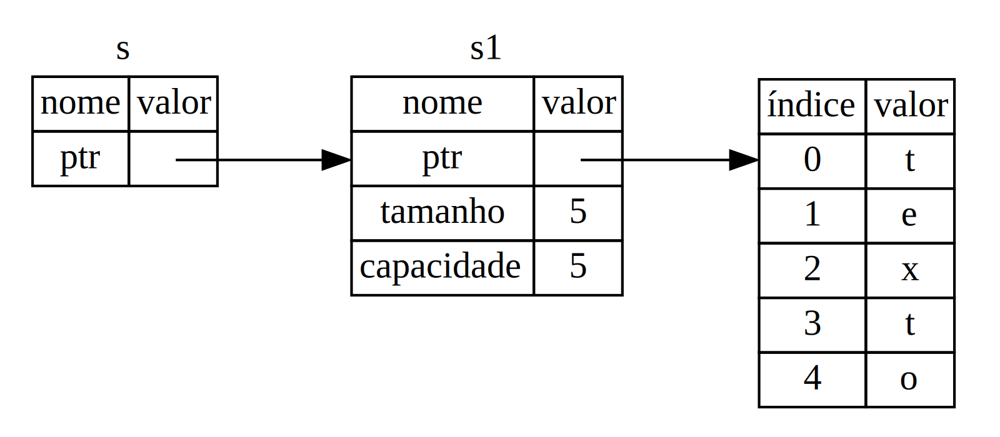

Começando
Vamos começar a sua jornada Rust! Neste capítulo, nós iremos discutir:
- A instalação de Rust no Linux, Mac ou Windows
- A escrita de um programa que imprime "Hello, world!" na tela
- O uso do
cargo, o gerenciador de pacote e sistema de compilação
Instalação
O primeiro passo é instalar Rust. Nós vamos baixar Rust através do rustup,
uma ferramenta de linha de comando para gerenciar versões de Rust e ferramentas
associadas. Você vai precisar de uma conexão com a internet para executar o
download.
Nota: se você prefere não usar o
rustuppor algum motivo, por favor veja o a página de instalação de Rust para outras opções.
Os próximos passos irão instalar a última versão estável do compilador de Rust. A garantias de estabilidade de Rust certificam-se de que todos os exemplos neste livro que compilam vao continuar a compilar com novas versões de Rust. As saídas podem variar um pouco de versão a versão, porque Rust frequentemente melhora mensagens de erro e alertas. Em outras palavras, qualquer versão nova, estável, de Rust qu você instalar usando esses passos devem funcionar como o esperado com o conteúdo deste livro.
Notação de Linha de Comando
Neste capítulo e ao longo do livro, nós iremos mostrar alguns comandos usados no terminal. Linhas que você deve digitar num terminal todas começam com
$. Você não precisa digitar o caráctere$. Ele indica o início de cada comando. Linhas que não comecem com$tipicamente mostram a saída do comando anterior. Adicionalmente, exemplos específicos de PowerShell irão utilizar>ao invés de$.
Instalando rustup em Linux ou Mac
Se você utiliza Linux ou Mac, abra um terminal e digite o seguinte comando:
$ curl https://sh.rustup.rs -sSf | sh
Este comando baixa um script e inicia a instalação da ferramenta rustup, a
qual instala a última versão estável de Rust. Talvez seja solicitado que você
digite sua senha. Se a instalação for bem-sucedida, a seguinte linha irá
aparecer:
Rust is installed now. Great!
Se preferir, sinta-se livre para baixar o script e inspecioná-lo antes de executar.
O script de instalação adiciona automaticamente Rust à variável PATH do seu ambiente após o seu próximo login. Se você quiser usar Rust imediatamente ao invés de reiniciar o seu terminal, execute o seguinte comando no seu shell para adicionar Rust à PATH do seu sistema manualmente:
$ source $HOME/.cargo/env
Outra opção é adicionar a linha abaixo ao seu ~/.bash_profile:
$ export PATH="$HOME/.cargo/bin:$PATH"
Instalando no Windows
No Windows, vá até https://www.rust-lang.org/tools/install e siga as instruções para instalar Rust. Em algum ponto da instalação, você receberá uma mensagem explicando que você também irá precisar de ferramentas de compilação de C++ para o Visual Studio 2013 ou superior. A forma mais fácil de adquiri-las é instalando as Ferramentas de Compilação para o Visual Studio 2019. As ferramentas estão na seção Other Tools and Frameworks.
O restante deste livro utiliza comandos que funcionam tanto no cmd.exe quanto no PowerShell. Se existirem diferenças específicas, nós iremos apontar qual utilizar.
Atualizando e desinstalando
Após instalar Rust pelo rustup, atualizar para a última versão é fácil.
Do seu seu shell, rode o seguinte script de atualização:
$ rustup update
Para desinstalar Rust e o rustup, rode o seguinte script de desinstalação do
seu shell:
$ rustup self uninstall
Solução de Problemas
Para checar se você tem Rust instalado corretamente, abra um terminal e digite esta linha:
$ rustc --version
Você deverá ver o número, o hash e a data do commit da última versão estável lançada no seguinte formato:
rustc x.y.z (abcabcabc yyyy-mm-dd)
Se aparecer a mensagem acima, você instalou Rust com sucesso! Se você não ver
esta informação e você estiver no Windows, cheque que Rust está na sua variável
de ambiente %PATH%. Se tudo isso estiver correto e Rust ainda não funcionar,
existem vários locais em que você pode pedir ajuda. O mais fácil é o canal
#beginners no Discord oficial de Rust. Lá, você pode falar com
outros Rustáceos (um apelido bobo que damos a nós mesmos) que podem te ajudar.
Outros ótimos recursos incluem o fórum de usários e o Stack
Overflow.
Documentação local
O instalador também inclui uma cópia local da documentação para que você possa
acessá-la offline. Execute o comando rustup doc para abrir a documentação no
seu navegador.
Sempre que um tipo ou for fornecido pela biblioteca padrão e você não tiver certeza do que ele faz ou de como usá-lo, use a documentação da API para descobrir!
. Se um tipo que você quiser usar não estiver no prelúdio, você terá que importá-lo explicitamente através douse.
A biblioteca std::io oferece várias ferramentas de entrada/saída, incluindo a
funcionalidade de ler dados de entrada do usuário.
Como visto no Capítulo 1, a função main é o ponto de entrada do programa:
fn main() {
A sintaxe fn declara uma nova função, o () indica que não há parâmetros, e
o { inicia o corpo da função.
Como você também já aprendeu no Capítulo 1, println! é uma macro que imprime
uma string na tela:
println!("Advinhe o número!");
println!("Digite o seu palpite.");
Este código está exibindo uma mensagem que diz de que se trata o jogo e solicita uma entrada do usuário.
Armazenando Valores em Variáveis
Próximo passo, vamos criar um local para armazenar a entrada do usuário:
let mut palpite = String::new();
Agora o programa está ficando interessante! Tem muita coisa acontecendo nesta
pequena linha. Repare que esta é uma declaração let, que é usada para criar
variáveis. Segue outro exemplo:
let foo = bar;
Essa linha cria uma nova variável chamada foo, e a vincula ao valor bar. Em
Rust, variáveis são imutáveis por padrão. O exemplo a seguir mostra como usar
mut antes do nome da variável para torná-la mutável:
# #![allow(unused_variables)] #fn main() { let foo = 5; // imutável let mut bar = 5; // mutável #}
Nota: A sintaxe
//inicia um comentário, que continua até o fim da linha. Rust ignora tudo o que estiver nos comentários.
Agora você sabe que let mut palpite vai introduzir uma variável mutável de
nome palpite. No outro lado do símbolo = está o valor ao qual palpite está
vinculado, que é o resultado da chamada String::new, uma função que retorna
uma nova instância de String. String é um tipo
fornecido pela biblioteca padrão que representa uma cadeia expansível de
caracteres codificados em UTF-8.
A sintaxe :: na linha ::new indica que new é uma função associada do
tipo String. Uma função associada é implementada sobre um tipo, neste caso
String, em vez de uma instância particular de String. Algumas linguagens
dão a isso o nome método estático.
Esta função new() cria uma nova String vazia. Você encontrará uma função
new() em muitos tipos, já que é um nome comum para uma função que produz um
novo valor de algum tipo.
Para resumir, a linha let mut palpite = String::new(); criou uma variável
mutável que está atualmente vinculada a uma nova instância vazia de uma
String. Ufa!
Lembre-se de que incluímos a funcionalidade de entrada/saída da biblioteca
padrão por meio do use std::io; na primeira linha do programa. Agora vamos
chamar uma função associada, stdin, em io:
io::stdin().read_line(&mut palpite)
.expect("Falha ao ler entrada");
Se não tivéssemos a linha use std::io no início do programa, poderíamos ter
escrito esta chamada como std::io::stdin. A função stdin retorna uma
instância de std::io::Stdin, um tipo que representa
um manipulador (handle) da entrada padrão do seu terminal.
A próxima parte do código, .read_line(&mut palpite), chama o método
read_line do handle da entrada padrão para obter
entrada do usuário. Também estamos passando um argumento para read_line:
&mut palpite.
O trabalho da função read_line é receber o que o usuário digita na entrada
padrão e colocar isso numa string, por isso ela recebe essa string como
argumento. A string do argumento deve ser mutável para que o método consiga
alterar o seu conteúdo, adicionando a entrada do usuário.
O símbolo & indica que o argumento é uma referência, o que permite múltiplas
partes do seu código acessar um certo dado sem precisar criar várias cópias dele
na memória. Referências são uma característica complexa, e uma das maiores
vantagens do Rust é o quão fácil e seguro é usar referências. Você não precisa
conhecer muitos desses detalhes para finalizar esse programa. O Capítulo 4 vai
explicar sobre referências de forma mais aprofundada. Por enquanto, tudo que
você precisa saber é que, assim como as variáveis, referências são imutáveis por
padrão. Por isso, precisamos escrever &mut palpite, em vez de apenas
&palpite, para fazer com que o palpite seja mutável.
Ainda não finalizamos completamente esta linha de código. Embora esta seja uma única linha de texto, é apenas a primeira parte de uma linha lógica de código. A segunda parte é a chamada para este método:
.expect("Falha ao ler entrada");
Quando você chama um método com a sintaxe .foo(), geralmente é bom introduzir
uma nova linha e outro espaço para ajudar a dividir linhas muito compridas.
Poderíamos ter feito assim:
io::stdin().read_line(&mut palpite).expect("Falha ao ler entrada");
Porém, uma linha muito comprida fica difícil de ler. Então é melhor dividirmos a linha em duas, uma para cada método chamado. Agora vamos falar sobre o que essa linha faz.
Tratando Potenciais Falhas com o Tipo Result
Como mencionado anteriormente, read_line coloca o que o usuário escreve dentro
da string que passamos como argumento, mas também retorna um valor - neste
caso, um io::Result. Rust tem uma variedade de
tipos com o nome Result em sua biblioteca padrão: um Result
genérico e as versões específicas dos submódulos, como io::Result.
Os tipos Result são enumerações, comumente chamadas
de enums. Uma enumeração é um tipo que pode ter um conjunto fixo de valores,
os quais são chamados de variantes da enum. O Capítulo 6 vai abordar enums em
mais detalhes.
Para Result, as variantes são Ok ou Err. Ok indica que a operação teve
sucesso, e dentro da variante Ok está o valor resultante. Err significa que
a operação falhou, e contém informações sobre como ou por que isso ocorreu.
O propósito destes tipos Result é codificar informações de manipulação de
erros. Valores do tipo Result, assim como qualquer tipo, possuem métodos
definidos. Uma instância de io::Result tem um método expect
que você pode chamar. Se esta instância de io::Result é um Err, expect vai
terminar o programa com erro e mostrar a mensagem que você passou como argumento
ao expect. Se o método read_line retornar um Err, provavelmente seria o
resultado de um erro vindo do sistema operacional que está por trás. Se esta
instância de io::Result é um Ok, expect vai obter o valor contido no Ok
e retorná-lo para que você possa usá-lo. Neste caso, o valor é o número de bytes
dos dados que o usuário inseriu através da entrada padrão.
Se não chamarmos expect, nosso programa vai compilar, mas vamos ter um aviso:
$ cargo build
Compiling jogo_de_advinhacao v0.1.0 (file:///projects/jogo_de_advinhacao)
warning: unused `std::result::Result` which must be used
--> src/main.rs:10:5
|
10 | io::stdin().read_line(&mut palpite);
| ^^^^^^^^^^^^^^^^^^^^^^^^^^^^^^^^^^^^
|
= note: #[warn(unused_must_use)] on by default
Rust avisa que não usamos o valor Result, retornado por read_line, indicando
que o programa deixou de tratar um possível erro. A maneira correta de suprimir
o aviso é realmente escrevendo um tratador de erro, mas como queremos que o
programa seja encerrado caso ocorra um problema, podemos usar expect. Você
aprenderá sobre recuperação de erros no Capítulo 9.
Exibindo Valores com Curingas do println!
Tirando a chave que delimita a função main, há apenas uma linha mais a ser
discutida no código que fizemos até agora, que é a seguinte:
println!("Você disse: {}", guess);
Esta linha imprime a string na qual salvamos os dados inseridos pelo usuário. O
{} é um curinga que reserva o lugar de um valor. Você pode imprimir mais de um
valor usando {}: o primeiro conjunto de {} guarda o primeiro valor listado
após a string de formatação, o segundo conjunto guarda o segundo valor, e
assim por diante. Imprimir múltiplos valores em uma só chamada a println!
seria assim:
# #![allow(unused_variables)] #fn main() { let x = 5; let y = 10; println!("x = {} e y = {}", x, y); #}
Esse código imprime x = 5 e y = 10.
Testando a Primeira Parte
Vamos testar a primeira parte do jogo de advinhação. Você pode executá-lo usando
cargo run:
$ cargo run
Compiling jogo_de_advinhacao v0.1.0 (file:///projects/jogo_de_advinhacao)
Finished dev [unoptimized + debuginfo] target(s) in 2.53 secs
Running `target/debug/jogo_de_advinhacao`
Advinhe o número!
Digite o seu palpite.
6
Você disse: 6
Nesse ponto, a primeira parte do jogo está feita: podemos coletar entrada do teclado e mostrá-la na tela.
Gerando um Número Secreto
A seguir, precisamos gerar um número secreto que o usuário vai tentar advinhar.
O número secreto deve ser diferente a cada execução, para que o jogo tenha graça
em ser jogado mais de uma vez. Vamos usar um número aleatório entre 1 e 100,
para que o jogo não seja tão difícil. Rust ainda não inclui uma funcionalidade
de geração de números aleatórios em sua biblioteca padrão. Porém, a equipe Rust
fornece um crate rand.
Usando um Crate para Ter Mais Funcionalidades
Lembre-se que um crate é um pacote de código Rust. O projeto que estamos
construindo é um crate binário, que é um executável. Já o rand é um
crate de biblioteca, que contém código cujo objetivo é ser usado por outros
programas.
É no uso de crates externos que Cargo realmente brilha. Antes que possamos
escrever o código usando rand, precisamos modificar o arquivo Cargo.toml
para incluir o crate rand como uma dependência. Abra o arquivo e adicione
esta linha no final, abaixo do cabeçalho da seção [dependencies] que o Cargo
criou para você:
Arquivo: Cargo.toml
[dependencies]
rand = "0.3.14"
No arquivo Cargo.toml, tudo que vem depois de um cabeçalho é parte de uma
seção que segue até o início de outra. A seção [dependencies] é onde você diz
ao Cargo de quais crates externos o seu projeto depende, e quais versões desses
crates você exige. Neste caso, especificamos o crate rand com a versão
semântica 0.3.14. Cargo compreende Versionamento Semântico
(às vezes chamado SemVer), um padrão para escrever números de versões. O
número 0.3.14 é, na verdade, uma forma curta de escrever ^0.3.14, que
significa "qualquer versão que tenha uma API pública compatível com a versão
0.3.14".
Agora, sem mudar código algum, vamos compilar nosso projeto, conforme mostrado na Listagem 2-2:
$ cargo build
Updating registry `https://github.com/rust-lang/crates.io-index`
Downloading rand v0.3.14
Downloading libc v0.2.14
Compiling libc v0.2.14
Compiling rand v0.3.14
Compiling jogo_de_advinhacao v0.1.0 (file:///projects/jogo_de_advinhacao)
Finished dev [unoptimized + debuginfo] target(s) in 2.53 secs
Listagem 2-2: Resultado da execução de cargo build
depois de adicionar o crate rand como dependência.
Talvez pra você apareçam versões diferentes (mas elas são todas compatíveis com o código, graças ao Versionamento Semântico!), e as linhas talvez apareçam em ordem diferente.
Agora que temos uma dependência externa, Cargo busca as versões mais recentes de tudo no registro, que é uma cópia dos dados do Crates.io. Crates.io é onde as pessoas do ecossistema Rust postam seus projetos open source para que os outros possam usar.
Após atualizar o registro, Cargo verifica a seção [dependencies] e baixa todas
as que você não tem ainda. Neste caso, embora tenhamos listado apenas rand
como dependência, o Cargo também puxou uma cópia da libc, porque rand
depende da libc para funcionar. Depois de baixá-las, o Cargo as compila e
então compila nosso projeto.
Se, logo em seguida, você executar cargo build novamente sem fazer mudanças,
não vai aparecer nenhuma mensagem de saída. O Cargo sabe que já baixou e
compilou as dependências, e você não alterou mais nada sobre elas no seu arquivo
Cargo.toml. Cargo também sabe que você não mudou mais nada no seu código, e
por isso não o recompila. Sem nada a fazer, ele simplesmente sai. Se você abrir
src/main.rs, fizer uma modificação trivial, salvar e compilar de novo, vai
aparecer uma mensagem de apenas duas linhas:
$ cargo build
Compiling jogo_de_advinhacao v0.1.0 (file:///projects/jogo_de_advinhacao)
Finished dev [unoptimized + debuginfo] target(s) in 2.53 secs
Essas linhas mostram que o Cargo só atualiza o build com a sua pequena mudança no arquivo src/main.rs. Suas dependências não mudaram, então o Cargo sabe que pode reutilizar o que já tiver sido baixado e compilado para elas. Ele apenas recompila a sua parte do código.
O Arquivo Cargo.lock Garante Builds Reproduzíveis
O Cargo tem um mecanismo que assegura que você pode reconstruir o mesmo artefato
toda vez que você ou outra pessoa compilar o seu código. O Cargo vai usar apenas
as versões das dependências que você especificou, até que você indique o
contrário. Por exemplo, o que acontece se, na semana que vem, sair a versão
v0.3.15 contendo uma correção de bug, mas também uma regressão que não
funciona com o seu código?
A resposta para isso está no arquivo Cargo.lock, que foi criado na primeira
vez que você executou cargo build, e agora está no seu diretório
jogo_de_advinhacao. Quando você compila o seu projeto pela primeira vez, o
Cargo descobre as versões de todas as dependências que preenchem os critérios
e então as escreve no arquivo Cargo.lock. Quando você compilar o seu projeto
futuramente, o Cargo verá que o arquivo Cargo.lock existe e usará as versões
especificadas lá, em vez de refazer todo o trabalho descobrir as versões
novamente. Isto lhe permite ter um build reproduzível automaticamente. Em
outras palavras, seu projeto vai continuar com a versão 0.3.14 até que você
faça uma atualização explícita, graças ao arquivo Cargo.lock.
Atualizando um Crate para Obter uma Nova Versão
Quando você quiser atualizar um crate, o Cargo tem outro comando, update,
que faz o seguinte:
- Ignora o arquivo Cargo.lock e descobre todas as versões mais recentes que atendem as suas especificações no Cargo.toml.
- Se funcionar, o Cargo escreve essas versões no arquivo Cargo.lock.
Mas, por padrão, o Cargo vai procurar as versões maiores que 0.3.0 e menores
que 0.4.0. Se o crate rand já tiver lançado duas novas versões, 0.3.15 e
0.4.0, você verá a seguinte mensagem ao executar cargo update:
$ cargo update
Updating registry `https://github.com/rust-lang/crates.io-index`
Updating rand v0.3.14 -> v0.3.15
Nesse ponto, você vai notar também uma mudança no seu arquivo Cargo.lock
dizendo que a versão do crate rand que você está usando agora é a 0.3.15.
Se você quisesse usar a versão 0.4.0, ou qualquer versão da série 0.4.x do
rand, você teria que atualizar o seu Cargo.toml dessa forma:
[dependencies]
rand = "0.4.0"
Na próxima vez que você executar cargo build, o Cargo vai atualizar o registro
de crates disponíveis e reavaliar os seus requisitos sobre o rand de acordo
com a nova versão que você especificou.
Há muito mais a ser dito sobre Cargo e o seu ecossistema que vai ser discutido no Capítulo 14, mas por ora isto é tudo que você precisa saber. Cargo facilita muito reutilizar bibliotecas, de forma que os rustáceos consigam escrever projetos menores que são montados a partir de diversos pacotes.
Gerando um Número Aleatório
Agora vamos usar, de fato, o rand. O próximo passo é atualizar o
src/main.rs conforme mostrado na Listagem 2-3:
Arquivo: src/main.rs
extern crate rand;
use std::io;
use rand::Rng;
fn main() {
println!("Advinhe o número!");
let numero_secreto = rand::thread_rng().gen_range(1, 101);
println!("O número secreto é: {}", numero_secreto);
println!("Digite o seu palpite.");
let mut palpite = String::new();
io::stdin().read_line(&mut palpite)
.expect("Falha ao ler entrada");
println!("Você disse: {}", palpite);
}
Listagem 2-3: Mudanças necessárias do código para gerar um número aleatório.
Estamos adicionando a linha extern crate rand ao topo do arquivo para indicar
ao Rust que estamos usando uma dependência externa. Isto também é equivalente a
um use rand;, assim podemos chamar qualquer coisa que esteja no crate rand
prefixando-a com rand::.
Em seguida, adicionamos outra linha use: use rand::Rng. Rng é um trait
que define métodos a serem implementados pelos geradores de números aleatórios,
e esse trait deve estar dentro do escopo para que possamos usar esses métodos. O
Capítulo 10 vai abordar traits em mais detalhes.
Tem outras duas linhas que adicionamos no meio. A função rand::thread_rng nos
dá o gerador de números aleatórios que vamos usar, um que é local à thread
corrente e que é inicializado pelo sistema operacional. Depois, vamos chamar o
método gen_range no gerador de números aleatórios. Esse método está definido
pelo trait Rng que trouxemos ao escopo por meio do use rand::Rng. Este
método recebe dois argumentos e gera um número aleatório entre eles. Ele inclui
o limite inferior mas exclui o superior, então precisamos passar 1 e 101
para obter um número de 1 a 100.
Saber quais traits devem ser usadas e quais funções e métodos de um crate
devem ser chamados não é nada trivial. As instruções de como usar um crate
estão na documentação de cada um. Outra coisa boa do Cargo é que você pode rodar
o comando cargo doc --open que vai construir localmente a documentação
fornecida por todas as suas dependências e abrí-las no seu navegador. Se você
estiver interessado em outras funcionalidades do crate rand, por exemplo,
execute cargo doc --open e clique em rand, no menu ao lado esquerdo.
A segunda linha que adicionamos imprime o número secreto. Isto é útil enquanto estamos desenvolvendo o programa para podermos testá-lo, mas vamos retirá-la da versão final. Um jogo não é muito interessante se ele mostra a resposta logo no início!
Tente rodar o programa algumas vezes:
$ cargo run
Compiling jogo_de_advinhacao v0.1.0 (file:///projects/jogo_de_advinhacao)
Finished dev [unoptimized + debuginfo] target(s) in 2.53 secs
Running `target/debug/jogo_de_advinhacao`
Advinhe o número!
O número secreto é: 7
Digite o seu palpite.
4
Você disse: 4
$ cargo run
Running `target/debug/jogo_de_advinhacao`
Advinhe o número!
O número secreto é: 83
Digite o seu palpite.
5
Você disse: 5
Você já deve obter números aleatórios diferentes, e eles devem ser todos entre 1 e 100. Bom trabalho!
Comparando o Palpite com o Número Secreto
Agora que nós temos a entrada do usuário e o número secreto, vamos compará-los. Esta estapa é mostrada na Listagem 2-4:
Arquivo: src/main.rs
extern crate rand;
use std::io;
use std::cmp::Ordering;
use rand::Rng;
fn main() {
println!("Advinhe o número!");
let numero_secreto = rand::thread_rng().gen_range(1, 101);
println!("O número secreto é: {}", numero_secreto);
println!("Digite o seu palpite.");
let mut palpite = String::new();
io::stdin().read_line(&mut palpite)
.expect("Falha ao ler entrada");
println!("Você disse: {}", palpite);
match palpite.cmp(&numero_secreto) {
Ordering::Less => println!("Muito baixo!"),
Ordering::Greater => println!("Muito alto!"),
Ordering::Equal => println!("Você acertou!"),
}
}
Listagem 2-4: Tratando os possíveis resultados da comparação de dois números.
A primeira novidade aqui é outro use, que traz ao escopo um tipo da biblioteca
padrão chamado std::cmp::Ordering. Ordering é outra enum, igual a Result,
mas as suas variantes são Less, Greater e Equal (elas significam menor,
maior e igual, respectivamente). Estes são os três possíveis resultados quando
você compara dois valores.
Depois, adicionamos cinco novas linhas no final que usam o tipo Ordering:
match palpite.cmp(&numero_secreto) {
Ordering::Less => println!("Muito baixo!"),
Ordering::Greater => println!("Muito alto!"),
Ordering::Equal => println!("Você acertou!"),
}
O método cmp compara dois valores, e pode ser chamado a partir de qualquer
coisa que possa ser comparada. Ele recebe uma referência de qualquer coisa que
você queira comparar. Neste caso, está comparando o palpite com o
numero_secreto. cmp retorna uma variante do tipo Ordering, que trouxemos
ao escopo com use. Nós usamos uma expressão match
para decidir o que fazer em seguida, com base em qual variante de Ordering foi
retornada pelo método cmp, que foi chamado com os valores palpite e
numero_secreto.
Uma expressão match é composta de braços. Um braço consiste em um padrão
mais o código que deve ser executado se o valor colocado no início do match se
encaixar no padrão deste braço. O Rust pega o valor passado ao match e o
compara com o padrão de cada braço na sequência. A expressão match e os
padrões são ferramentas poderosas do Rust que lhe permitem expressar uma
variedade de situações que seu código pode encontrar, e ajuda a assegurar que
você tenha tratado todas elas. Essas ferramentas serão abordadas em detalhes nos
capítulos 6 e 18, respectivamente.
Vamos acompanhar um exemplo do que aconteceria na expressão match usada aqui.
Digamos que o usuário tenha colocado 50 como palpite, e o número secreto
aleatório desta vez é 38. Quando o código compara 50 com 38, o método cmp vai
retornar Ordering::Greater, porque 50 é maior que 38. Ordering::Greater é o
valor passado ao match. Ele olha para o padrão Ordering::Less do primeiro
braço, mas o valor Ordering::Greater não casa com Ordering::Less, então ele
ignora o código desse braço e avança para o próximo. Já o padrão do próximo
braço, Ordering::Greater, casa com Ordering::Greater! O código associado a
este braço vai ser executado e mostrar Muito alto! na tela. A expressão
match termina porque já não tem mais necessidade de verificar o último braço
nesse caso particular.
Porém, o código da Listagem 2-4 ainda não vai compilar. Vamos tentar:
$ cargo build
Compiling jogo_de_advinhacao v0.1.0 (file:///projects/jogo_de_advinhacao)
error[E0308]: mismatched types
--> src/main.rs:23:21
|
23 | match palpite.cmp(&numero_secreto) {
| ^^^^^^^^^^^^^^^ expected struct `std::string::String`, found integral variable
|
= note: expected type `&std::string::String`
= note: found type `&{integer}`
error: aborting due to previous error
Could not compile `jogo_de_advinhacao`.
O que este erro está dizendo é que temos tipos incompatíveis. Rust tem um
sistema de tipos forte e estático. Porém, Rust também tem inferência de tipos.
Quando escrevemos let palpite = String::new(), Rust foi capaz de inferir que
palpite deveria ser uma String, então ele não nos faz escrever o tipo. O
numero_secreto, por outro lado, é de um tipo numérico. Existem alguns tipos
numéricos capazes de guardar um valor entre 1 e 100: i32, que é um número de
32 bits; u32, um número de 32 bits sem sinal; i64, um número de 64 bits; e
mais alguns outros. O tipo numérico padrão do Rust é i32, que é o tipo do
numero_secreto, a não ser que adicionemos, em algum lugar, uma informação de
tipo que faça o Rust inferir outro tipo numérico. A razão do erro é que o Rust
não pode comparar uma string e um tipo numérico.
Em última análise, queremos converter a String que lemos como entrada em um
tipo numérico de verdade, de forma que possamos compará-lo numericamente com o
palpite. Podemos fazer isso com mais duas linhas no corpo da função main:
Arquivo: src/main.rs
extern crate rand;
use std::io;
use std::cmp::Ordering;
use rand::Rng;
fn main() {
println!("Advinhe o número!");
let numero_secreto = rand::thread_rng().gen_range(1, 101);
println!("O número secreto é: {}", numero_secreto);
println!("Digite o seu palpite.");
let mut palpite = String::new();
io::stdin().read_line(&mut palpite)
.expect("Falha ao ler entrada");
let palpite: u32 = palpite.trim().parse()
.expect("Por favor, digite um número!");
println!("Você disse: {}", palpite);
match palpite.cmp(&numero_secreto) {
Ordering::Less => println!("Muito baixo!"),
Ordering::Greater => println!("Muito alto!"),
Ordering::Equal => println!("Você acertou!"),
}
}
As duas linhas novas são:
let palpite: u32 = palpite.trim().parse()
.expect("Por favor, digite um número!");
Nós criamos uma variável chamada palpite. Mas espera, o programa já não tinha
uma variável chamada palpite? Sim, mas o Rust nos permite sombrear o
palpite anterior com um novo. Isto é geralmente usado em situações em que você
quer converter um valor de um tipo em outro. O sombreamento nos permite
reutilizar o nome palpite, em vez de nos forçar a criar dois nomes únicos como
palpite_str e palpite, por exemplo. (O Capítulo 3 vai cobrir sombreamento em
mais detalhes).
Nós vinculamos palpite à expressão palpite.trim().parse(). O palpite, na
expressão, refere-se ao palpite original contendo a String de entrada do
usuário. O método trim, em uma instância de String, vai eliminar quaisquer
espaços em branco no início e no fim. u32 pode conter apenas caracteres
numéricos, mas o usuário precisa pressionar Enter
para satisfazer o read_line. Quando o usuário pressiona
Enter, um caractere de nova linha é inserido na
string. Por exemplo, se o usuário digitar 5 e
depois Enter, palpite ficaria assim: 5\n. O
\n representa uma linha nova, a tecla Enter.
O método trim elimina o \n, deixando apenas 5.
O método parse em strings converte uma string para
algum tipo de número. Dado que ele pode interpretar uma variedade de tipos
numéricos, precisamos dizer ao Rust qual o tipo exato de número nós queremos, e
para isso usamos let palpite: u32. Os dois pontos (:) depois de palpite
informam ao Rust que estamos anotando seu tipo. O Rust tem alguns tipos
numéricos embutidos, o u32 visto aqui é um inteiro de 32 bits sem sinal. É uma
boa escolha padrão para um número positivo pequeno. Você vai aprender sobre
outros tipos numéricos no Capítulo 3. Além disso, a anotação u32 neste
programa de exemplo e a comparação com numero_secreto significam que o Rust
vai inferir que numero_secreto também deve ser um u32. Então agora a
comparação vai ser feita entre valores do mesmo tipo!
A chamada para parse poderia facilmente causar um erro. Por exemplo, se a
string contiver A👍%, não haveria como converter isto em um número. Como ele
pode falhar, o método parse retorna um Result, assim como o método
read_line, conforme discutido anteriormente na seção "Tratando Potenciais
Falhas com o Tipo Result. Vamos tratar este Result da mesma forma usando o
método expect de novo. Se o parse retornar uma variante Err da enum
Result, por não conseguir criar um número a partir da string, a chamada ao
expect vai causar um crash no jogo e exibir a mensagem que passamos a ele.
Se o parse conseguir converter uma string em um número, ele vai retornar a
variante Ok da enum Result e expect vai retornar o número que queremos
extrair do valor Ok.
Agora vamos executar o programa!
$ cargo run
Compiling jogo_de_advinhacao v0.1.0 (file:///projects/jogo_de_advinhacao)
Finished dev [unoptimized + debuginfo] target(s) in 0.43 secs
Running `target/jogo_de_advinhacao`
Advinhe o número!
O número secreto é: 58
Digite o seu palpite.
76
Você disse: 76
Muito alto!
Boa! Até mesmo colocando alguns espaços antes de digitar o palpite, o programa ainda descobriu que o palpite do usuário é 76. Execute o programa mais algumas vezes para verificar os diferentes comportamentos com diferentes tipos de entrada: advinhe o número corretamente, digite um número muito alto, e digite um número muito baixo.
Agora já temos a maior parte do jogo funcionando, mas o usuário só consegue dar um palpite uma vez. Vamos mudar isso adicionando laços!
Permitindo Múltiplos Palpites Usando Looping
A palavra-chave loop nos dá um laço (loop) infinito. Use-a para dar aos
usuários mais chances de advinhar o número:
Arquivo: src/main.rs
extern crate rand;
use std::io;
use std::cmp::Ordering;
use rand::Rng;
fn main() {
println!("Advinhe o número!");
let numero_secreto = rand::thread_rng().gen_range(1, 101);
println!("O número secreto é: {}", numero_secreto);
loop {
println!("Digite o seu palpite.");
let mut palpite = String::new();
io::stdin().read_line(&mut palpite)
.expect("Falha ao ler entrada");
let palpite: u32 = palpite.trim().parse()
.expect("Por favor, digite um número!");
println!("Você disse: {}", palpite);
match palpite.cmp(&numero_secreto) {
Ordering::Less => println!("Muito baixo!"),
Ordering::Greater => println!("Muito alto!"),
Ordering::Equal => println!("Você acertou!"),
}
}
}
Como você pode ver, movemos tudo para dentro do laço a partir da mensagem pedindo o palpite do usuário. Certifique-se de indentar essas linhas mais quatro espaços cada uma, e execute o programa novamente. Repare que há um novo problema, porque o programa está fazendo exatamente o que dissemos para ele fazer: pedir sempre outro palpite! Parece que o usuário não consegue sair!
O usuário pode sempre interromper o programa usando as teclas
ctrl-c. Mas há uma outra forma de escapar deste
monstro insaciável que mencionamos na discussão do método parse, na seção
"Comparando o Palpite com o Número Secreto": se o usuário fornece uma resposta
não-numérica, o programa vai sofrer um crash. O usuário pode levar vantagem
disso para conseguir sair, como mostrado abaixo:
$ cargo run
Compiling jogo_de_advinhacao v0.1.0 (file:///projects/jogo_de_advinhacao)
Running `target/jogo_de_advinhacao`
Advinhe o número!
O número secreto é: 59
Digite o seu palpite.
45
Você disse: 45
Muito baixo!
Digite o seu palpite.
60
Você disse: 60
Muito alto!
Digite o seu palpite.
59
Você disse: 59
Você acertou!
Digite o seu palpite.
sair
thread 'main' panicked at 'Por favor, digite um número!: ParseIntError { kind: InvalidDigit }', src/libcore/result.rs:785
note: Run with `RUST_BACKTRACE=1` for a backtrace.
error: Process didn't exit successfully: `target/debug/jogo_de_advinhacao` (exit code: 101)
Digitar sair, na verdade, sai do jogo, mas isso também acontece com qualquer
outra entrada não numérica. Porém, isto não é o ideal. Queremos que o jogo
termine automaticamente quando o número é advinhado corretamente.
Saindo Após um Palpite Correto
Vamos programar o jogo para sair quando o usuário vencer, colocando um break:
Arquivo: src/main.rs
extern crate rand;
use std::io;
use std::cmp::Ordering;
use rand::Rng;
fn main() {
println!("Advinhe o número!");
let numero_secreto = rand::thread_rng().gen_range(1, 101);
println!("O número secreto é: {}", numero_secreto);
loop {
println!("Digite o seu palpite.");
let mut palpite = String::new();
io::stdin().read_line(&mut palpite)
.expect("Falha ao ler entrada");
let palpite: u32 = palpite.trim().parse()
.expect("Por favor, digite um número!");
println!("Você disse: {}", palpite);
match palpite.cmp(&numero_secreto) {
Ordering::Less => println!("Muito baixo"),
Ordering::Greater => println!("Muito alto!"),
Ordering::Equal => {
println!("Você acertou!");
break;
}
}
}
}
Adicionando a linha break após o Você acertou!, o programa vai sair do laço
quando o usuário advinhar corretamente o número secreto. Sair do laço também
significa sair do programa, pois o laço é a última parte da main.
Tratando Entradas Inválidas
Para refinar ainda mais o comportamento do jogo, em vez de causar um crash no
programa quando o usuário insere uma entrada não numérica, vamos fazer o jogo
ignorá-la para que o usuário possa continuar tentando. Podemos fazer isso
alterando a linha em que o palpite é convertido de String para u32:
let palpite: u32 = match palpite.trim().parse() {
Ok(num) => num,
Err(_) => continue,
};
Trocando uma chamada a expect por uma expressão match é a forma como você
geralmente deixa de causar um crash em um erro e passa a tratá-lo, de fato.
Lembre-se que o método parse retorna um valor do tipo Result, uma enum que
contém a variante Ok ou Err. Estamos usando um match aqui, assim como
fizemos com o Ordering resultante do método cmp.
Se o parse consegue converter a string em um número, ele vai retornar um Ok
contendo o número resultante. Esse valor Ok vai casar com o padrão do primeiro
braço, e o match vai apenas retornar o valor num produzido pelo parse e
colocado dentro do Ok. Esse número vai acabar ficando exatamente onde
queremos, na variável palpite que estamos criando.
Se o parse não conseguir converter a string em um número, ele vai retornar
um Err que contém mais informações sobre o erro. O valor Err não casa com o
padrão Ok(num) do primeiro braço do match, mas casa com o padrão Err(_) do
segundo braço. O _ é um valor "pega tudo". Neste exemplo, estamos dizendo que
queremos casar todos os valores Err, não importa qual informação há dentro
deles. Então o programa vai executar o código do segundo braço, continue, que
significa ir para a próxima iteração do loop e pedir outro palpite.
Efetivamente, o programa ignora todos os erros que o parse vier a encontrar!
Agora, tudo no programa deve funcionar como esperado. Vamos tentar executá-lo
usando o comando cargo run:
$ cargo run
Compiling jogo_de_advinhacao v0.1.0 (file:///projects/jogo_de_advinhacao)
Running `target/jogo_de_advinhacao`
Advinhe o número!
O número secreto é: 61
Digite o seu palpite.
10
Você disse: 10
Muito baixo!
Digite o seu palpite.
99
Você disse: 99
Muito alto!
Digite o seu palpite.
foo
Digite o seu palpite.
61
Você disse: 61
Você acertou!
Demais! Com apenas um último ajuste, vamos finalizar o jogo de adivinhação:
lembre-se que o programa ainda está mostrando o número secreto. Isto foi bom
para testar, mas estraga o jogo. Vamos apagar o println! que revela o número
secreto. A Listagem 2-5 mostra o código final:
Arquivo: src/main.rs
extern crate rand;
use std::io;
use std::cmp::Ordering;
use rand::Rng;
fn main() {
println!("Advinhe o número!");
let numero_secreto = rand::thread_rng().gen_range(1, 101);
loop {
println!("Digite o seu palpite.");
let mut palpite = String::new();
io::stdin().read_line(&mut palpite)
.expect("Falha ao ler entrada");
let palpite: u32 = match palpite.trim().parse() {
Ok(num) => num,
Err(_) => continue,
};
println!("Você disse: {}", palpite);
match palpite.cmp(&numero_secreto) {
Ordering::Less => println!("Muito baixo!"),
Ordering::Greater => println!("Muito alto!"),
Ordering::Equal => {
println!("Você acertou!");
break;
}
}
}
}
Listagem 2-5: Código completo do jogo de advinhação.
Resumo
Neste ponto, você construiu com sucesso o jogo de adivinhação! Parabéns!
Este projeto foi uma forma prática de apresentar vários conceitos novos de Rust:
let, match, métodos, funções associadas, uso de crates externos, e outros.
Nos próximos capítulos, você vai aprender sobre esses conceitos em mais
detalhes. O Capítulo 3 aborda conceitos que a maioria das linguagens de
programação tem, como variáveis, tipos de dados e funções, e mostra como usá-los
em Rust. O Capítulo 4 explora posse (ownership), que é a característica do
Rust mais diferente das outras linguagens. O Capítulo 5 discute structs e a
sintaxe de métodos, e o Capítulo 6 se dedica a explicar enums.
Conceitos Comuns de Programação
Este capítulo aborda conceitos que aparecem em quase todas as linguagens de programação e como eles funcionam no Rust. Muitas linguagens de programação têm muito em comum em seu cerne. Nenhum dos conceitos apresentados neste capítulo é exclusivo de Rust, mas vamos discuti-los no contexto do Rust e explicar as convenções em torno do uso desses conceitos.
Especificamente, você aprenderá sobre variáveis, tipos básicos, funções, comentários e fluxo de controle. Esses princípios estarão em todos os programas em Rust, e aprendê-los cedo lhe dará uma boa base para começar.
Palavras chaves
A linguagem Rust tem uma série de palavras-chaves que são reservadas para uso exclusivo da linguagem, como ocorre em outras linguagens. Tenha em mente que você não pode usar essas palavras como nome de variáveis ou funções. A maioria das palavras-chaves tem um significado específico, e você estará usando-as para várias tarefas em programas em Rust; algumas ainda não possuem funcionalidades associadas a elas, mas foram reservadas para funcionalidades que podem ser adicionadas ao Rust futuramente. Você encontrará uma lista de palavras-chaves no Apêndice A.
Variáveis e Mutabilidade
Como mencionado no Capítulo 2, por padrão, as variáveis são imutáveis. Essa é uma das maneiras que o Rust lhe dá para escrever o seu código de modo seguro e a fácil concorrência que Rust oferece. No entanto, você ainda tem a opção de tornar a sua variável mutável. Vamos explorar como e por que Rust incentiva você a usar variáveis imutáveis e por que às vezes pode não optar por utilizá-las.
Quando uma variável é imutável, logo que um valor é associado a uma variável, você não pode mudar este valor.
Para ilustrar isso, vamos criar um projeto chamado variaveis
no seu diretório projetos usando cargo new --bin variables.
Então dentro do novo diretório chamado variaveis, abra src/main.rs e substitua o código com o código abaixo, que não irá compilar:
Nome do arquivo: src/main.rs
fn main() {
let x = 5;
println!("O valor de x é: {}", x);
x = 6;
println!("O valor de x é: {}", x);
}
Salve e execute o programa usando cargo run. Você deve receber uma mensagem de erro,
conforme mostrado nesta saída:
error[E0384]: cannot assign twice to immutable variable `x`
--> src/main.rs:4:5
|
2 | let x = 5;
| - first assignment to `x`
3 | println!("O valor de x é: {}", x);
4 | x = 6;
| ^^^^^ cannot assign twice to immutable variable
Esse exemplo mostra como o compilador ajuda você a encontrar erros no seus programas. Mesmo que erros de compilação sejam frustrantes, eles apenas significam que seu programa não está fazendo de modo seguro o que você espera fazer; eles não siginificam que você não é um bom programador! Programadores experientes também recebem erros de compilação.
A mensagem indica que a causa do erro é que você
não pode atribuir mais de uma vez à variável imutável x, porque você tentou atribuir um segundo valor à variável x.
É importante que nos recebamos erros em tempo de compilação quando tentamos alterar um valor que anteriormente foi indicado como imutável, porque esta situação pode ocasionar erros. Se uma parte do seu código funciona assumindo que o valor nunca será alterado e outra parte do seu código muda este valor, é possível que a primeira parte do código não faça o que foi projetada para fazer. A causa desse tipo de falha pode ser difícil de rastrear, especialmente quando o segundo trecho de código muda o valor apenas algumas vezes.
Em Rust, o compilador garante que quando você afirma que um valor não pode mudar, ele não mude. Isso significa que quando você está lendo e ecrevendo código, você não tenha de acompanhar como e onde um valor pode mudar. E assim seu código fica mais fácil de entender.
Mas mutabilidade pode ser muito útil. Variáveis são imutáveis por padrão; como
você fez no Capítulo 2, você pode torná-las mutáveis adicionando mut na frente do
nome da variável. Além de permitir que este valor mude, mut transmite
a intenção aos futuros leitores do código, indicando que naquela
parte do código estarão mudando o valor da variável.
Por exemplo, vamos mudar src/main.rs para o seguinte:
Nome do arquivo: src/main.rs
fn main() { let mut x = 5; println!("O valor de x é: {}", x); x = 6; println!("O valor de x é: {}", x); }
Quando executamos o programa, recebemos isso:
$ cargo run
Compiling variaveis v0.1.0 (file:///projects/variaveis)
Finished dev [unoptimized + debuginfo] target(s) in 0.30 secs
Running `target/debug/variaveis`
O valor de x é: 5
O valor de x é: 6
Estamos autorizados a mudar o valor 5 contido em x para 6
quando mut é usado. Em alguns casos, você precisará criar uma variável mutável porque ela
será mais conveniente para escrever do que se fosse imutável.
Tem vários compromissos a serem considerados além de prevenção de falhas. Por exemplo, nos casos em que você usa estruturas de dados grandes, a alteração em uma instância pode ser mais rápida do que copiar e retornar a nova instância alocada. Com estruturas de dados menores, criar novas instâncias e escrever em um estilo de programação funcional pode ser mais fácil de entender, portanto, um desempenho menor pode ser uma penalidade que vale a pena para obter mais clareza.
Diferenças entre variáveis e constantes
Ser incapaz de mudar o valor de uma variável, pode ter feito você lembrar de outro conceito de programação, que a maioria das outras linguagens possui, chamado: constantes. Como variáveis imutáveis, constantes são valores que estão vinculados ao nome e não podem serem alterados, mas há algumas diferenças entre constantes e variáveis.
Primeiro, você não pode usar mut com constantes. Constante não são apenas
imutáveis por padrão, constante são sempre imutáveis.
Você declara constante usando a palavra-chave const em vez de let,
e o tipo do valor necessita ser específicado. Falaremos sobre tipos de dados
na próxima seção, "Data Type", então
não se preocupe com os detalhes por agora. Apenas saiba que você precisa especificar o tipo.
Constantes podem ser declaradas em qualquer escopo, incluindo o escopo global, o que os tornam úteis para valores que várias partes do código precisa conhecer.
A última diferença é que as constantes podem ser definidas apenas para uma expressão constante, ou seja, não pode ser o resultado de uma chamada de função ou qualquer outro valor que só poderia ser calculado em tempo de execução.
Aqui está um exemplo de uma declaração constante, em que o nome da constante é
PONTOS_MAXIMOS e o valor definido é 100,000 (por
convenção, contantes em Rust são nomeadas usando maiúsculas e sublinhado entre as palavras):
# #![allow(unused_variables)] #fn main() { const PONTOS_MAXIMOS: u32 = 100_000; #}
Constante são válidas durante todo o tempo de execução de um programa, dentro do escopo em que foram declaradas, tornando-as uma ótima escolha para valores no domínio da aplicação, que várias partes do programa necessitam conhecer, como por exemplo, o número máximo de pontos um jogador pode ter ou a velocidade da luz.
A nomeação de valores codificados permanentemente usados em todo o programa como constantes é útil para transmitir o significado desse valor para futuros mantenedores do código. Também ajuda ter apenas um lugar em seu código que você precisaria mudar se o valor codificado precisasse ser atualizado no futuro.
Shadowing
Como você viu na seção “Comparando o Adivinha ao Número Secreto” no Capítulo
2, você pode declarar uma nova variável com o mesmo nome de uma variável anterior,
e a nova variável sombreia a variável anterior. Rustaceans dizem que a
primeira variável é sombreada pela segunda, o que significa que o segundo
valor da variável é o que aparece quando a variável é usada. Podemos sombrear uma
variável usando o mesmo nome da variável e repetindo o uso da palavra-chave let
da seguinte forma:
Nome do arquivo: src/main.rs
fn main() { let x = 5; let x = x + 1; let x = x * 2; println!("O valor de x é: {}", x); }
Esse programa primeiro vincula x ao valor 5. Em seguida x é sombreado por
let x =, pegando o valor original e adicionando 1, então o valor de
x é 6. O terceiro let também sombrea x, multiplicando o
valor anterior por 2 para então x ficar com o valor final de 12. Quando nós executamos esse programa, é
produzida a seguinte saída:
$ cargo run
Compiling variaveis v0.1.0 (file:///projects/variaveis)
Finished dev [unoptimized + debuginfo] target(s) in 0.31 secs
Running `target/debug/variaveis`
O valor de x é: 12
Shadowing é diferente do que dizer que uma variável é mut, porque teremos um
erro em tempo de compilação se, acidentalmente, tentarmos reatribuir essa variável sem
utilizar let. Usando let, nós podemos realizar algumas transformações,
mas sem ter uma variável imutável após estas transformações terem
sido concluídas.
Uma outra diferença entre mut e shadowing é que,
como estamos efetivamente criando uma nova várivel, quando usamos novamente a palavra-chave let, nós
podemos mudar o tipo do valor, mas reutilizando o mesmo nome. Por exemplo, digamos que nosso programa
solicite ao usuário que mostre quantos espaços deseja entre um texto, inserindo
caracteres de espaço, mas queremos armazenar essa entrada como um número:
# #![allow(unused_variables)] #fn main() { let espacos = " "; let espacos = espacos.len(); #}
Essa construção é permitida, porque a primeira variável espacos é do tipo string
e a segunda variável, que é uma nova variável que tem o
mesmo nome que a primeira, é do tipo numérico. Shadowing nos poupa de
ter de criar nomes diferentes, como str_espacos e
num_espacos; em vez disso, podemos simplesmente reutilizar o nome espacos. No entanto, se
tentassemos usar mut para isso, como mostramos aqui, teremos um erro em tempo de compilação:
let mut espacos = " ";
espacos = espacos.len();
O erro diz que não podemos alterar o tipo de variável:
error[E0308]: mismatched types
--> src/main.rs:3:14
|
3 | espacos = espacos.len();
| ^^^^^^^^^^^^ expected &str, found usize
|
= note: expected type `&str`
found type `usize`
Agora que exploramos como as variáveis funcionam, vamos ver mais tipos de dados.
Tipos de dados
Todo valor em Rust é um tipo de dado, que informa ao Rust que tipos de dados estão sendo especificados para que saiba como trabalhar com esses dados. Vamos olhar para dois subconjuntos de tipos de dados: escalar e composto.
Tenha em mente que Rust é uma linguagem de tipagem estática, o que significa
que deve conhecer os tipos de todas as variáveis em tempo de compilação. O compilador
geralmente pode inferir que tipo queremos com base no valor e como o usamos. Nos casos
em que são é possível vários tipos de dados, como quando convertemos uma String em um tipo numérico
usando parse na seção "Comparando o Adivinha ao Número Secreto" no
Capítulo 2, devemos adicionar uma anotação de tipo, como a seguinte:
# #![allow(unused_variables)] #fn main() { let guess: u32 = "42".parse().expect("Não é um número!"); #}
Se não adicionarmos uma anotação de tipo, Rust irá mostrar o seguinte erro, que significa que o compilador precisa de mais informaçoes para saber qual tipo de dados queremos usar:
error[E0282]: type annotations needed
--> src/main.rs:2:9
|
2 | let guess = "42".parse().expect("Não é um número!");
| ^^^^^
| |
| cannot infer type for `_`
| consider giving `guess` a type
Você verá anotações de tipos diferentes para outros tipos de dados.
Tipos escalares
Um tipo escalar representa um valor único. Rust tem quatro tipos escalares primários: inteiros, números de ponto flutuante, booleanos e caracteres. Você pode reconhecer esses tipos de outras linguagens de programação. Vamos pular para como eles funcionam no Rust.
Tipos inteiros
Um inteiro é um número sem a parte fracionária. Usamos
um tipo inteiro no Capítulo 2, o tipo u32. Esse tipo de
declaração indica que
o valor associado deve ser um inteiro sem sinal (tipos inteiros com sinal começam com i, em vez de u) que ocupa 32 bits de espaço. Tabela 3-1 mostra
os tipos inteiros internos ao Rust. Cada variante está na
coluna com sinal e sem sinal (por exemplo, i16) pode ser usada para declarar um valor do tipo
inteiro.
Tabela 3-1: Tipos inteiros no Rust
| Tamanho | Signed | Unsigned |
|---|---|---|
| 8-bit | i8 | u8 |
| 16-bit | i16 | u16 |
| 32-bit | i32 | u32 |
| 64-bit | i64 | u64 |
| arch | isize | usize |
Cada variante pode ser com ou sem sinal e ter tamanho explícito. Signed e unsigned refere-se à possibilidade do número ser negativo ou positivo - em outras palavras, se o número precisa de um sinal com ele (signed) ou se sempre for positivo pode ser representado sem um sinal (unsigned). É como escrevemos números no papel: Quando o sinal importa, o número é mostrado com um sinal de mais ou menos; contudo, quando é seguro assumir que o número é positivo, é mostrado sem sinal. Números com sinais são armazenados usando a representação complemento de dois (se você não tiver certeza do que é isso, você pode procurar sobre isso na internet; uma explicação está fora do escopo deste livro).
Cada variante com sinal pode armazenar números de -(2n - 1) até 2n -
1 - 1 incluso, sendo n o número de bits que varia de acordo com o uso. Então, um
i8 pode armazenar números de -(27) até 27 - 1, que é igual
a -128 até 127. Variantes sem sinal pode armazenar números de 0 até 2n - 1,
entao um u8 pode armazenar números de 0 até 28 - 1, que é de 0 até 255.
Além disso, os tipos isize e usize dependem do computador em que seu programa
está rodando: 64 bits se estiver em uma arquitetura de 64-bit e 32 bits
se sua arquitetura for 32-bit.
Você pode criar inteiros literais em qualquer uma das formas mostrada na Tabela 3-2. Observe
que todos os literais de números, exceto o byte literal, permitem um sufixo de tipo,
como por exemplo, 57u8 e _ são separadores visuais, tal como 1_000.
Tabela 3-2: Inteiros Literais no Rust
| Números literais | Exemplo |
|---|---|
| Decimal | 98_222 |
| Hexadecimal | 0xff |
| Octal | 0o77 |
| Binário | 0b1111_0000 |
Byte (u8 apenas) | b'A' |
Então como você pode saber qual tipo de inteiro usar? Se sentir-se inseguro, as
escolhas padrões do Rust geralmente são boas, e por padrão os inteiros são do tipo i32: Esse
tipo geralmente é o mais rápido, até em sistemas de 64-bit. A
principal situação em que você usuaria isize ou usize é indexar algum tipo de coleção.
Tipos de ponto flutuante
Rust também tem dois tipos primitivos para números de ponto flutuante, que são
números com casas decimais. Os pontos flutuantes do Rust são
f32 e f64, que têm respectivamente os tamanhos de 32 e 64 bits. O tipo padrão é f64
porque nos processadores modernos, a velocidade é quase a mesma que em um f32, mas possui
maior precisão.
Esse exemplo mostra números de ponto flutuante em ação:
Nome do arquivo: src/main.rs
fn main() { let x = 2.0; // f64 let y: f32 = 3.0; // f32 }
Números em ponto flutuante são representados de acordo com o padrão IEEE-754. O tipo
f32 é de precisão simples e f64 tem precisão dupla.
Operações numéricas
Rust suporta operações matemáticas básicas, você pode esperar
todas as seguintes operações para todos os tipos numéricos: adição, subtração, multiplicação, divisão e resto.
O código a seguir mostra como usar cada declaração let:
Nome do arquivo: src/main.rs
fn main() { // adição let soma = 5 + 10; // subtração let diferenca = 95.5 - 4.3; // multiplicação let produto = 4 * 30; // divisão let quociente = 56.7 / 32.2; // resto let resto = 43 % 5; }
Cada expressão nessas declarações, usa um operador matemático e computa um único valor, que então é atribuído à uma variável. Apêndice B contém uma lista de todos os operadores que o Rust suporta.
O tipo booleano
Como em diversas linguagens de programação, o tipo Booleano em Rust possue dois valores
possíveis: true e false. O tipo Booleano no Rust é especificado usando bool.
Por exemplo:
Nome do arquivo: src/main.rs
fn main() { let t = true; let f: bool = false; // com tipo explícito }
A principal utilização de valores Booleanos é através dos condicionais, como um if.
Veremos como a expressão if funciona em Rust na seção
"Controle de fluxo".
O tipo de caractere
Até agora trabalhamos apenas com números, mas Rust também suporta letras. O char
é o tipo mais primitivo da linguaguem e o seguinte código
mostra uma forma de utilizá-lo. (Observe que o char é
específicado com aspas simples, é o oposto de strings, que usa aspas duplas.)
Nome do arquivo: src/main.rs
fn main() { let c = 'z'; let z = 'ℤ'; let heart_eyed_cat = '😻'; }
O tipo char representa um valor unicode, o que quer dizer que você pode
armazenar muito mais que apenas ASCII. Letras com acentuação; ideogramas chinês, japonês e
coreano; emoji; e caracteres não visíveis são válidos.
Valores Unicode vão de U+0000 até U+D7FF e U+E000 até
U+10FFFF incluso. Contudo, um "caractere" não é realmente um conceito em Unicode,
então a sua intuição de o que é um "caractere" pode não combinar com o que é um
char em Rust. Discutiremos esse tópico em detalhes em "Strings" no Capítulo 8.
Tipos compostos
Tipos compostos podem agrupar vários valores em um único tipo. Rust tem dois tipos primitivos compostos: tuplas e vetores.
O tipo tuplaero de valores
Uma tupla é de modo geral uma forma de agrupar um certo número de valores com uma variável do tipo composto.
Criamos uma tupla escrevendo uma lista de valores separados por vírgula dentro de parênteses. Cada posição da tupla tem um tipo e os tipos dos elementos da tupla não necessitam serem iguais. Adicionamos anotações de tipo neste exemplo:
Nome do arquivo: src/main.rs
fn main() { let tup: (i32, f64, u8) = (500, 6.4, 1); }
A variável tup liga-se a tupla, porque uma tupla é considerada
um único elemento composto. Para pegar os valores da tupla individualmente, podemos usar
a correspondência de padrões para desestruturar o valor de uma tupla, como este:
Nome do arquivo: src/main.rs
fn main() { let tup = (500, 6.4, 1); let (x, y, z) = tup; println!("O valor do y é: {}", y); }
Esse primeito programa cria uma tupla e vincula ela à variável tup. Em seguida,
ele usa um padrão com let para tirar tup e tranformá-lo em três variáveis
separadas, x, y e z. Isso é chamado de desestruturação, porque quebra uma única tupla
em três partes. Finalmente, o programa exibe o valor de y,
que é 6.4.
Além de desestruturar através da correspondência de padrões, podemos
acessar diretamente um elemento da tupla usando um ponto (.) como índice
do valor que queremos acessar. Por exemplo:
Nome do arquivo: src/main.rs
fn main() { let x: (i32, f64, u8) = (500, 6.4, 1); let quinhentos = x.0; let seis_ponto_quatro = x.1; let um = x.2; }
Esse programa cria uma tupla, x, e então cria uma variável para cada
elemento usando seus índices. Como ocorre nas maiorias das linguagens, o primeiro
índice em uma tupla é o 0.
O tipo matriz
Uma outra maneira de ter uma coleção de vários valores é uma matriz. Diferentemente de uma tupla, todos os elementos de uma matriz devem ser do mesmo tipo. Matrizes em Rust são diferentes de matrizes de outras linguagens, porque matrizes em Rust são de tamanhos fixos: uma vez declarado, eles não podem aumentar ou diminuir de tamanho.
Em Rust, os valores que entram numa matriz são escritos em uma lista separados por vírgulas dentro de colchetes:
Nome do arquivo: src/main.rs
fn main() { let a = [1, 2, 3, 4, 5]; }
Matrizes são úteis quando você deseja que seus dados sejam alocados em pilha do que no heap (discutiremos mais sobre pilha e heap no Capítulo 4), ou quando você quer garantir que sempre terá um número fixo de elementos. Uma matriz não é tão flexível como um vetor. Um vetor é de tipo semelhante, fornecido pela biblioteca padrão que é permitido diminuir ou aumentar o tamanho. Se você não tem certeza se deve usar uma matriz ou vetor, você provavlemente usará um vetor. O Capítulo 8 discute sobre vetores com mais detalhes.
Um exemplo de quando você poderia necessitar usar uma matriz no lugar de um vetor é um programa em que você precisa saber o nome dos meses do ano. É improvável que tal programa deseje adicionar ou remover meses, então você pode usar uma matriz porque você sabe que sempre conterá 12 itens:
# #![allow(unused_variables)] #fn main() { let meses = ["Janeiro", "Fevereiro", "Março", "Abril", "Maio", "Junho", "Julho", "Agosto", "Setembro", "Outubro", "Novembro", "Dezembro"]; #}
Acessando um elemento da matriz
Uma matriz é um pedaço da memória alocada na pilha. Você pode acessar os elementos da matriz usando indices, como a seguir:
Nome do arquivo: src/main.rs
fn main() { let a = [1, 2, 3, 4, 5]; let primeiro = a[0]; let segundo = a[1]; }
Neste exemplo, a variável chamada primeiro irá pegar o valor 1, porque
é o valor indexado por [0] na matriz. A variável chamada segundo irá
pegar o valor 2, do indice [1] da matriz.
Acesso inválido a elemento da matriz
O que acontece se você tentar acessar um elemento da matriz que está além do fim da matriz? Digamos que você mude o exemplo para o código a seguir, que será compilado, mas existe um erro quando for executar:
Nome do arquivo: src/main.rs
fn main() {
let a = [1, 2, 3, 4, 5];
let indice = 10;
let elemento = a[indice];
println!("O valor do elemento é: {}", elemento);
}
Executando esse código usando cargo run, é produzido o seguinte resultado:
$ cargo run
Compiling arrays v0.1.0 (file:///projects/arrays)
Finished dev [unoptimized + debuginfo] target(s) in 0.31 secs
Running `target/debug/arrays`
thread '<main>' panicked at 'index out of bounds: the len is 5 but the index is
10', src/main.rs:6
note: Run with `RUST_BACKTRACE=1` for a backtrace.
A compilação não produz nenhum erro, mas o programa resulta um erro em tempo de execução e não uma saída com sucesso. Quando você tenta acessar um elemento usando indexação, o Rust verifica se o índice especificado é menor que o tamaho da matriz. Se o índice é maior que o tamanho, o Rust vai entrar em pânico, que é o termo usado pelo Rust quando um programa resulta em erro.
Esse é o primeiro exemplo dos pricípios de segurança do Rust em ação. Em várias linguagens de baixo nível, esse tipo de verificação não é feita e quando você fornece um índice incorreto, memória inválida pode ser acessada. Rust protege você deste tipo de erro ao sair imediatamente, em vez de permitir o acesso à memória e continuando. O Capítulo 9 discute mais sobre o tratamento de erros do Rust.
Funções
Funções são difundidas em códigos em Rust. Você já viu uma das mais
importantes funções da linguagem: a função main, que é o
ponto de entrada de diversos programas. Você também já viu a notação fn, que permite você
declarar uma nova função.
Códigos em Rust usam, por convenção, o estilo snake case para nomes de função e variável. No snake case, todas as letras são minúsculas e sublinhado (underline) separa as palavras. Aqui está um programa que contém uma definição de função de exemplo:
Nome do arquivo: src/main.rs
fn main() { println!("Olá, mundo!"); outra_funcao(); } fn outra_funcao() { println!("Outra função."); }
As definições de funções em Rust iniciam com fn e tem um par de parênteses
depois do nome da função. As chaves dizem ao compilador onde o
corpo da função começa e termina.
Podemos chamar qualqer função que tenhamos definido, inserindo seu nome, seguido de um
conjunto de parenteses. Pelo fato da outra_funcao ter sido definida no programa, ela pode
ser chamada dentro da função main. Note que definimos outra_funcao
depois da função main; poderíamos ter definido antes
também. Rust não se importa onde você definiu suas funções, apenas que elas foram
definidas em algum lugar.
Vamos começar um novo projeto binário, chamado funcoes para explorar mais
funções. Coloque o exemplo outra_funcao em src/main.rs e execute-o. Você
verá a seguinte saída:
$ cargo run
Compiling funcoes v0.1.0 (file:///projects/funcoes)
Finished dev [unoptimized + debuginfo] target(s) in 0.28 secs
Running `target/debug/funcoes`
Olá, mundo!
Outra função.
As linhas são executadas na ordem em que aparecem na função main.
Primeiro, a mensagem "Olá, mundo!" é exibida, e então
outra_funcao é chamada e exibida a mensagem.
Parâmetros de função
Funções também podem ser definidas tendo parâmetros, que são variáveis especiais que fazem parte da assinatura da função. Quando uma função tem parâmetros, você pode fornecer tipos específicos para esses parâmetros. Tecnicamente, os valores definidos são chamados de argumentos, mas informalmente, as pessoas tendem a usar as palavras parâmetro e argumento para falar tanto de variáveis da definição da função como os valores passados quando você chama uma função.
A seguinte versão (reescrita) da outra_funcao mostra como os parâmetros
aparecem no Rust:
Nome do arquivo: src/main.rs
fn main() { outra_funcao(5); } fn outra_funcao(x: i32) { println!("O valor de x é: {}", x); }
Tente executar este programa; você verá a seguinte saída:
$ cargo run
Compiling funcoes v0.1.0 (file:///projects/funcoes)
Finished dev [unoptimized + debuginfo] target(s) in 1.21 secs
Running `target/debug/funcoes`
O valor de x é: 5
A declaração de outra_funcao tem um parâmetro chamado x. O tipo do
x é especificado como i32. Quando 5 é passado para a outra_funcao, a macro
println! coloca 5 onde o par de chaves estava na string
de formato.
Nas assinaturas de função, você deve declarar o tipo de cada parâmetro. Essa é decisão deliberada no design do Rust: exigir anotações de tipo na definição da função, significa que o compilador quase nunca precisará que as use em outro lugar do código para especificar o que você quer.
Quando você precisa que uma função tenha vários parâmetros, separe as declarações de parâmetros com vírgula, como a seguir:
Nome do arquivo: src/main.rs
fn main() { outra_funcao(5, 6); } fn outra_funcao(x: i32, y: i32) { println!("O valor de x é: {}", x); println!("O valor de y é: {}", y); }
Este exemplo cria uma função com dois parâmetros, ambos com o
tipo i32. Então a função exibe os valores de ambos os parâmetros. Note que os
parâmetros de função não precisam ser do mesmo tipo, isto apenas
aconteceu neste exemplo.
Vamos tentar executar este código. Substitua o programa src/main.rs, atualmente em seu projeto funcoes
com o exemplo anterior e execute-o usando cargo run:
$ cargo run
Compiling funcoes v0.1.0 (file:///projects/funcoes)
Finished dev [unoptimized + debuginfo] target(s) in 0.31 secs
Running `target/debug/funcoes`
O valor de x é: 5
O valor de y é: 6
Porque nós chamamos a função com 5 sendo o valor dex e 6 é passado
como o valor de y, as duas cadeias são impressas com esses valores.
Corpos de função
Corpos de função são constituídos por uma série de declarações que terminam, opcionalmente, em uma expressão. Até agora, foram apresentadas apenas funções sem uma expressão final, mas você viu uma expressão como parte de instruções. Porque Rust é uma linguagem baseada em expressão, essa é uma importante distinção a ser entendida. Outras linguagens não têm as mesmas distinções, então, vamos ver o que são declarações e expressões e como elas afetam o corpo das funções.
Declarações e Expressões
Na verdade, já usamos declarações e expressões. Declarações são instruções que executam alguma ação e não retornam um resultado. E expressões retornam um resultado. Vamos ver alguns exemplos.
Criar uma variável e atribuir um valor a ela com a palavra-chave let é uma declaração.
Na Listagem 3-1, let y = 6; é uma declaração:
Nome do arquivo: src/main.rs
fn main() { let y = 6; }
Listagem 3-1: A declaração da função main contendo uma declaração.
Definições de função também são definições; todo o exemplo é uma declaração em si.
Definições não retornam valores. Assim sendo, você não pode atribuir uma declaração let para
outra variável, como o código a seguir tenta fazer; você receberá um erro:
Nome do arquivo: src/main.rs
fn main() {
let x = (let y = 6);
}
Quando você rodar esse programa, o erro será o seguinte:
$ cargo run
Compiling funcoes v0.1.0 (file:///projects/funcoes)
error: expected expression, found statement (`let`)
--> src/main.rs:2:14
|
2 | let x = (let y = 6);
| ^^^
|
= note: variable declaration using `let` is a statement
A declaração let y = 6 não retorna um valor, então não existe nada para o
x se ligar. Isso é diferente do que acontece em
outras linguagens, como
C e Ruby, onde a atribuição retorna o valor atribuído. Nestas linguagens, você pode escrever x = y = 6 e ter ambos, x e y contendo o valor
6; esse não é o caso em Rust.
Expressões avaliam algo e compõem a maior parte do código que
você escreverá em Rust. Considere uma simples operação matemática, como um 5 + 6, que
é uma expressão que avalia o valor 11. Expressões podem fazer parte de
declarações: na Listagem 3-1, o 6 na declaração let y = 6; é uma
expressão que avalia o valor 6. A chamada de função é uma
expressão. Chamar uma macro é uma expressão. O bloco que vamos usar para criar
um novo escopo, {}, é uma expressão, por exemplo:
Nome do arquivo: src/main.rs
fn main() { let x = 5; let y = { let x = 3; x + 1 }; println!("O valor de y é: {}", y); }
A expressão:
{
let x = 3;
x + 1
}
é um bloco que, nesse exemplo, avalia 4. Esse valor fica vinculado ao y
como parte da declaração let. Note o x + 1 sem um ponto e vírgula no final, que é diferente da maioria das linhas vistas até agora.
Expressões não terminam com ponto e vírgula.
Se você adicionar um ponto e vírgula ao fim de uma expressão,
você a transforma em uma declaração, que então não retornará um valor.
Tenha isso em mente, enquanto explora os valores e expressões de retorno da função a seguir.
Funções com valor de retorno
Funções podem retornar valores para o código que os chama. Não nomeamos valores de
retorno, mas declaramos o tipo deles depois de uma seta (->). Em Rust, o valor de retorno
da função é sinônimo do valor da expressão
final no bloco do corpo de uma função. Você pode retornar cedo de uma função usando
a palavra-chave return e especificando um valor, mas a maioria das funções retorna
a última expressão implicitamente. Veja um exemplo de uma função que retorna um
valor:
Nome do arquivo: src/main.rs
fn cinco() -> i32 { 5 } fn main() { let x = cinco(); println!("O valor de x é: {}", x); }
Não há chamadas de função, macros ou até mesmo declarações let na funçãocinco
- apenas o número
5por si só. Essa é uma função perfeitamente válida em Rust. Observe que o tipo de retorno da função também é especificado como-> i32. Tente executar este código; a saída deve ficar assim:
$ cargo run
Compiling funcoes v0.1.0 (file:///projects/funcoes)
Finished dev [unoptimized + debuginfo] target(s) in 0.30 secs
Running `target/debug/funcoes`
O valor de x é: 5
O 5 emcinco é o valor de retorno da função, e é por isso que o tipo de retorno
é i32. Vamos verificar isso com mais detalhes. Existem dois bits importantes:
primeiro, a linha let x = cinco (); mostra que estamos usando o valor de retorno de uma
função para inicializar uma variável. Porque a função cinco retorna um5,
essa linha é a mesma que a seguinte:
# #![allow(unused_variables)] #fn main() { let x = 5; #}
Em segundo lugar, a função cinco não tem parâmetros e define o tipo de
valor de retorno, mas o corpo da função é um 5 solitário sem ponto e vírgula
porque é uma expressão cujo valor queremos retornar.
Vamos ver outro exemplo:
Nome do arquivo: src/main.rs
fn main() { let x = soma_um(5); println!("O valor de x é: {}", x); } fn soma_um(x: i32) -> i32 { x + 1 }
A execução deste código irá imprimir O valor de x é: 6. Mas se colocarmos um
ponto e vírgula no final da linha que contém x + 1, alterando-o de
expressão para uma declaração, receberemos um erro.
Nome do arquivo: src/main.rs
fn main() {
let x = soma_um(5);
println!("O valor de x é: {}", x);
}
fn soma_um(x: i32) -> i32 {
x + 1;
}
Executar este código produz um erro, da seguinte maneira:
error[E0308]: mismatched types
--> src/main.rs:7:28
|
7 | fn soma_um(x: i32) -> i32 {
| ____________________________^
8 | | x + 1;
| | - help: consider removing this semicolon
9 | | }
| |_^ expected i32, found ()
|
= note: expected type `i32`
found type `()`
A principal mensagem de erro, "tipos incompatíveis", revela o problema central com este
código. A definição da função soma_um diz que retornará uma
i32, mas as declarações não avaliam um valor expresso por(),
a tupla vazia. Portanto, nada é retornado, o que contradiz a função
definição e resulta em erro. Nesta saída, Rust fornece uma mensagem para
possivelmente ajudar a corrigir este problema: sugere a remoção do ponto e vírgula, que
iria corrigir o erro.
Comentários
Todos os programadores se esforçam para tornar seu código fácil de entender, mas às vezes explicação extra é garantida. Nestes casos, os programadores deixam notas ou comentários, em seus códigos fonte que o compilador irá ignorar, mas as pessoas que lerem o código-fonte podem achar útil.
Aqui está um comentário simples:
# #![allow(unused_variables)] #fn main() { // Olá, mundo. #}
Em Rust, os comentários devem começar com duas barras e continuar até o final da
linha. Para comentários que se estendem além de uma única linha, você precisará incluir
// em cada linha, assim:
# #![allow(unused_variables)] #fn main() { // Então, estamos fazendo algo complicado aqui, tempo suficiente para que precisemos // várias linhas de comentários para fazer isso! Ufa! Espero que este comentário // explique o que está acontecendo. #}
Comentários também podem ser colocados no final das linhas contendo código:
Nome do arquivo: src/main.rs
fn main() { let numero_da_sorte = 7; // Estou com sorte hoje. }
Mas você verá com mais frequência essas palavras nesse formato, com o comentário em uma linha separada acima do código que está anotando:
Nome do arquivo: src/main.rs
fn main() { // Estou com sorte hoje. let numero_da_sorte = 7; }
O Rust também tem outro tipo de comentário, comentários de documentação, que discutiremos no Capítulo 14.
Controle de fluxo
Decidir se deve ou não executar algum código, dependendo se uma condição é verdadeira
e decidir executar algum código repetidamente enquanto uma condição é verdadeira,
são blocos de construção básicos na maioria das linguagens de programação. As construções
mais comuns que permitem controlar o fluxo de execução do código Rust são as expressões if e
laços de repetição.
Expressão if
Uma expressão if permite ramificar seu código dependendo das condições. Você
fornecer uma condição e, em seguida, estado, "Se esta condição for cumprida, execute este bloco
de código. Se a condição não for atendida, não execute este bloco de código. ”
Crie um novo projeto chamado branches no seu diretório projects para explorar
a expressão if. No arquivo * src / main.rs *, digite o seguinte:
Nome do arquivo: src/main.rs
fn main() { let numero = 3; if numero < 5 { println!("condição era verdadeira"); } else { println!("condição era falsa"); } }
Todas as expressões if começam com a palavra-chave if, que é seguida por uma
condição. Neste caso, a condição verifica se a variável
number tem um valor menor que 5. O bloco de código que queremos executar se o
condição é verdadeira é colocada imediatamente após a condição dentro de chaves.
Blocos de código associados às condições em expressões if são
às vezes chamado de divisões, assim como as expressões de combinação que nós
discutimos na seção “Comparando o Palpite ao Número Secreto” de
Capítulo 2.
Opcionalmente, também podemos incluir uma expressão else, que escolhemos
fazer aqui, para dar ao programa um bloco de código alternativo a ser executado, caso a
condição seja avaliada como falsa. Se você não fornecer uma expressão else e a
condição for falsa, o programa simplesmente ignorará o bloco if e passará para o
próximo bit de código.
Tente executar este código; você deve ver a seguinte saída:
$ cargo run
Compiling branches v0.1.0 (file:///projects/branches)
Finished dev [unoptimized + debuginfo] target(s) in 0.31 secs
Running `target/debug/branches`
condição era verdadeira
Vamos tentar alterar o valor de numero para um valor que torne a condição
false para ver o que acontece:
let numero = 7;
Execute o programa novamente e observe a saída:
$ cargo run
Compiling branches v0.1.0 (file:///projects/branches)
Finished dev [unoptimized + debuginfo] target(s) in 0.31 secs
Running `target/debug/branches`
condição era falsa
Também é importante notar que a condição neste código deve ser um bool. E se
a condição não é um bool, nós vamos receber um erro. Por exemplo:
Nome do arquivo: src/main.rs
fn main() {
let numero = 3;
if numero {
println!("número era 3");
}
}
A condição if é avaliada para um valor de 3 desta vez, e Rust lança um
erro:
error[E0308]: mismatched types
--> src/main.rs:4:8
|
4 | if numero {
| ^^^^^^ expected bool, found integral variable
|
= note: expected type `bool`
found type `{integer}`
O erro indica que Rust esperava um bool, mas obteve um inteiro. Ao contrário de
linguagens como Ruby e JavaScript, o Rust não tentará automaticamente
converter tipos não-booleanos em um booleano. Você deve explicitar e sempre fornecer
if com um booleano como sua condição. Se quisermos que o bloco de código if seja executado
somente quando um número não é igual a 0, por exemplo, podemos mudar o if
para o seguinte:
Nome do arquivo: src/main.rs
fn main() { let numero = 3; if numero != 0 { println!("número era algo diferente de zero"); } }
A execução deste código irá imprimir número era algo diferente de zero.
Gerenciando Múltiplas Condições com else if
Você pode ter várias condições combinando if eelse em um else if.
Por exemplo:
Nome do arquivo: src/main.rs
fn main() { let numero = 6; if numero % 4 == 0 { println!("número é divisível por 4"); } else if numero % 3 == 0 { println!("número é divisível por 3"); } else if numero % 2 == 0 { println!("número é divisível por 2"); } else { println!("número não é divisível por 4, 3 ou 2"); } }
Este programa tem quatro caminhos possíveis. Depois de executá-lo, você deve ver a seguinte saída:
$ cargo run
Compiling branches v0.1.0 (file:///projects/branches)
Finished dev [unoptimized + debuginfo] target(s) in 0.31 secs
Running `target/debug/branches`
número é divisível por 3
Quando este programa é executado, ele verifica cada expressão if por sua vez e executa
o primeiro corpo para o qual a condição é verdadeira. Note que mesmo que 6 seja
divisível por 2, nós não vemos a saída o número é divisível por 2, nem vemos o
texto número não é divisível por 4, 3 ou 2 do bloco else.
Isso ocorre porque o Rust só executa o bloco para a primeira condição verdadeira e,
depois de encontrar um, não verifica o restante.
Usar muitas expressões else if pode confundir seu código, portanto, se você tiver
mais de uma, convém refatorar seu código. O Capítulo 6 descreve uma poderosa
construção de ramificação em Rust chamada match para esses casos.
Usando if em uma declaração let
Pelo fato de if ser uma expressão, podemos usá-la do lado direito de uma declaração let,
como na Listagem 3-2:
Nome do arquivo: src/main.rs
fn main() { let condicao = true; let numero = if condicao { 5 } else { 6 }; println!("O valor do número é: {}", numero); }
Listagem 3-2: Atribuindo o resultado de uma expressão if
para uma variável
A variável numero será ligada a um valor baseado no resultado da expressão if.
Execute este código para ver o que acontece:
$ cargo run
Compiling branches v0.1.0 (file:///projects/branches)
Finished dev [unoptimized + debuginfo] target(s) in 0.30 secs
Running `target/debug/branches`
O valor do número é: 5
Lembre-se de que os blocos de código são avaliados até a última expressão, e os
números por si mesmos também são expressões. Neste caso, o valor de
toda a expressão if depende de qual bloco de código é executado. Isso significa que
os valores que têm o potencial de serem resultados de cada braço do if e que devem ser
do mesmo tipo; na Listagem 3-2, os resultados do braço if e do else
eram inteiros i32. Se os tipos forem incompatíveis, como no exemplo a
seguir, receberemos um erro:
Nome do arquivo: src/main.rs
fn main() {
let condicao = true;
let numero = if condicao {
5
} else {
"seis"
};
println!("O valor do número é: {}", numero);
}
Quando tentamos executar esse código, recebemos um erro. Os braços if eelse possuem
valores de tipos que são incompatíveis, e Rust indica exatamente onde encontrar o
problema no programa:
error[E0308]: if and else have incompatible types
--> src/main.rs:4:18
|
4 | let numero = if condicao {
| __________________^
5 | | 5
6 | | } else {
7 | | "seis"
8 | | };
| |_____^ expected integral variable, found &str
|
= note: expected type `{integer}`
found type `&str`
A expressão no bloco if é avaliada como um inteiro, e a expressão no blocoelse é
avaliada como uma string. Isso não funcionará porque as variáveis precisam ter
um único tipo. Rust precisa saber em tempo de compilação qual é o tipo da variável numero,
definitivamente, para que possa verificar em tempo de compilação que seu tipo é
válido em todos os lugares em que usamos numero. Rust não seria capaz de fazer isso se o tipo
de numero fosse determinado apenas em tempo de execução; o compilador seria mais complexo e
faria menos garantias sobre o código se tivesse que manter o controle de
vários tipos hipotéticos para qualquer variável.
Repetição com laços de repetição
Geralmente, é útil executar um bloco de código mais de uma vez. Para essa tarefa, o Rust fornece vários loops. Um loop percorre o código dentro do corpo do loop até o final e, em seguida, inicia imediatamente no início. Para experimentar loops, vamos criar um novo projeto chamado loops.
O Rust possui três tipos de loops: loop,while e for. Vamos tentar cada um.
Código de Repetição com loop
A palavra-chave loop diz ao Rust para executar um bloco de código várias vezes
para sempre ou até que você diga explicitamente para parar.
Como exemplo, altere o arquivo src/main.rs do diretório loops para algo como isso:
Nome do arquivo: src/main.rs
fn main() {
loop {
println!("novamente!");
}
}
Quando executamos este programa, veremos ``novamente!` impresso repetidamente até que paremos o programa manualmente. A maioria dos terminais suporta um atalho de teclado, ctrl-c , para parar um programa que está preso em um loop contínuo. De uma chance:
$ cargo run
Compiling loops v0.1.0 (file:///projects/loops)
Finished dev [unoptimized + debuginfo] target(s) in 0.29 secs
Running `target/debug/loops`
novamente!
novamente!
novamente!
novamente!
^Cnovamente!
O símbolo ^C representa onde você pressionou ctrl-c
. Você pode ou não ver a palavra novamente! Impressa depois do ^C,
dependendo de onde o código estava no loop quando recebeu o sinal de parada.
Felizmente, o Rust oferece outra maneira mais confiável de sair de um loop.
Você pode colocar a palavra-chave break dentro do loop para dizer ao programa quando
parar de executar o loop. Lembre-se que fizemos isso no jogo de adivinhação no
“Quitting After a Guess Correct” do Capítulo 2 para sair do
programa quando o usuário ganhou o jogo, adivinhando o número correto.
Loops condicionais com while
Geralmente, é útil para um programa avaliar uma condição dentro de um loop. Enquanto
a condição é verdadeira, o loop é executado. Quando a condição deixa de ser verdadeira,
o programa chama o break, parando o loop. Esse tipo de loop pode ser implementado
usando uma combinação de loop,if, else ebreak; você poderia tentar isso
agora em um programa, se você quiser.
No entanto, esse padrão é tão comum que o Rust possui uma construção de linguagem integrada
para isso, chamado de loop while. A Listagem 3-3 usa while: o programa faz o loop
três vezes, a contagem decrescente de cada vez e, depois do ciclo, imprime
outra mensagem e sai.
Nome do arquivo: src/main.rs
fn main() { let mut numero = 3; while numero != 0 { println!("{}!", numero); numero = numero - 1; } println!("LIFTOFF!!!"); }
Listagem 3-3: Usando um loop while para executar o código enquanto
condição for verdadeira
Essa construção elimina muito o aninhamento que seria necessário se você usasse
loop,if, else ebreak, e é mais claro. Enquanto a condição for
verdadeira, o código é executado; caso contrário, sai do loop.
Looping através de uma coleção com for
Você poderia usar a construção while para fazer um loop sobre os elementos de uma coleção,
como uma matriz. Por exemplo, vamos ver a Listagem 3-4:
Nome do arquivo: src/main.rs
fn main() { let a = [10, 20, 30, 40, 50]; let mut indice = 0; while indice < 5 { println!("O valor é: {}", a[indice]); indice = indice + 1; } }
Listagem 3-4: percorrendo cada elemento de uma coleção
usando um loop while
Aqui, o código conta através dos elementos na matriz. Começa no índice
0 e, em seguida, faz um loop até atingir o índice final na matriz (isto é,
quando indice <5 não é mais verdadeiro). Executando este código irá imprimir todos os elementos
na matriz:
$ cargo run
Compiling loops v0.1.0 (file:///projects/loops)
Finished dev [unoptimized + debuginfo] target(s) in 0.32 secs
Running `target/debug/loops`
O valor é: 10
O valor é: 20
O valor é: 30
O valor é: 40
O valor é: 50
Todos os cinco valores de matriz aparecem no terminal, conforme esperado. Embora indice
vai chegar a um valor de 5 em algum momento, o loop para de executar antes de tentar
para buscar um sexto valor da matriz.
Mas essa abordagem é propensa a erros; poderíamos fazer o programa entrar em pânico se o o comprimento do índice estivesse incorreto. Também é lento, porque o compilador adiciona código de tempo de execução para executar a verificação condicional em cada elemento em cada iteração através do loop.
Como uma alternativa mais concisa, você pode usar um laço for e executar algum código
para cada item de uma coleção. Um laço for parece com este código na Listagem 3-5:
Nome do arquivo: src/main.rs
fn main() { let a = [10, 20, 30, 40, 50]; for elemento in a.iter() { println!("O valor é: {}", elemento); } }
Listagem 3-5: percorrendo cada elemento de uma coleção
usando um laço for
Quando executamos esse código, veremos a mesma saída da listagem 3-4. Mais importante, agora aumentamos a segurança do código e eliminamos a chance de erros que podem resultar de ir além do final da matriz ou não indo longe o suficiente e faltando alguns itens.
Por exemplo, no código da Listagem 3-4, se você removeu um item do array a,
mas esqueceu de atualizar a condição para while indice <4, o código causaria um
pânico. Usando o loop for, você não precisa se lembrar de alterar qualquer outro
código se você alterou o número de valores na matriz.
A segurança e a concisão dos loops for fazem deles o loop mais comumente usado
em Rust. Mesmo em situações em que você deseja executar algum código
certo número de vezes, como no exemplo da contagem regressiva que usou um loop while
da Listagem 3-3, a maioria dos Rustaceans usaria um loop for. A maneira de fazer isso
seria usar um Range, que é um tipo fornecido pela biblioteca padrão
que gera todos os números em sequência a partir de um número e terminando
antes de outro número.
Veja como seria a contagem regressiva usando um loop for e outro método,
que nós ainda não falamos, rev, para reverter o intervalo:
Nome do arquivo: src/main.rs
fn main() { for numero in (1..4).rev() { println!("{}!", numero); } println!("LIFTOFF!!!"); }
Este código é um pouco melhor, não é?
Resumo
Você conseguiu! Esse foi um capítulo considerável: você aprendeu sobre variáveis, tipos
de dados escalares e compostos, funções, comentários, expressões if e loops! E se
você quer praticar com os conceitos discutidos neste capítulo, tente construir
programas para fazer o seguinte:
- Converta temperaturas entre Fahrenheit e Celsius.
- Gerar o n-ésimo número de Fibonacci.
- Imprima a letra da canção de natal "Os Doze Dias de Natal" aproveitando a repetição na música.
Quando você estiver pronto para seguir em frente, falaremos sobre um conceito em Rust que não comumente existente em outras linguagens de programação: propriedade.
Entendendo Ownership
Ownership (posse) é a característica mais única do Rust, que o permite ter garantias de segurança de memória sem precisar de um garbage collector. Logo, é importante entender como funciona ownership no Rust. Neste capítulo, falaremos sobre ownership e também sobre várias características relacionadas: borrowing, slices e como o Rust dispõe seus dados na memória.
O Que É Ownership?
A característica central do Rust é ownership. Embora seja bem direta de explicar, ela tem implicações profundas em todo o resto da linguagem.
Todos os programas têm que decidir de que forma vão usar a memória do computador durante a execução. Algumas linguagens possuem garbage collection (coleta de lixo), que constantemente busca segmentos de memória que já não são mais utilizados enquanto o programa executa; em outras linguagens, o programador deve alocar e liberar memória de forma explícita. Rust usa uma terceira abordagem: a memória é gerenciada através de um sistema de posse, que tem um conjunto de regras verificadas em tempo de compilação. Nenhuma característica relacionada ao ownership implica qulaquer custo em tempo de execução.
Como ownership é um conceito novo para muitos programadores, leva um pouco de tempo para se acostumar. A boa notícia é que quanto mais experiente você se torna em Rust e nas regras do sistema de posse, mais você será capaz de escrever, naturalmente, código seguro e eficiente. Fique aí!
Quando você entender ownership, você terá uma fundação sólida para entender as características que fazem o Rust ser único. Neste capítulo, você vai aprender ownership trabalhando em alguns exemplos com foco em uma estrutura de dados muito comum: strings.
A Pilha e a Heap
Em muitas linguagens de programação, não temos que pensar muito sobre a pilha e sobre a heap. Mas em uma linguagem de programação de sistemas, como Rust, o fato de um valor estar na pilha ou na heap tem impacto na forma como a linguagem se comporta e no porquê de termos que tomar certas decisões. Vamos descrever partes do ownership em relação à pilha e à heap mais para a frente neste capítulo, então aqui vai uma explicação preparatória.
Tanto a pilha como a heap são partes da memória que estão disponíveis ao seu código para uso em tempo de execução, mas elas são estruturadas de formas diferentes. A pilha armazena valores na ordem em que eles chegam, e os remove na ordem inversa. Isto é chamado de last in, first out (último a chegar, primeiro a sair). Imagine uma pilha de pratos: quando você coloca mais pratos, você os põe em cima da pilha, e quando você precisa de um prato, você pega o que está no topo. Adicionar ou remover pratos do meio ou do fundo não funciona tão bem! Dizemos fazer um push na pilha quando nos refererimos a inserir dados, e fazer um pop da pilha quando nos referimos a remover dados.
A pilha é rápida por conta da forma como ela acessa os dados: ela nunca tem que procurar um lugar para colocar novos dados, ou um lugar de onde obter dados, este lugar é sempre o topo da pilha. Outra propriedade que faz a pilha ser rápida é que todos os dados contidos nela devem ocupar um tamanho fixo e conhecido.
Para dados com um tamanho desconhecido em tempo de compilação, ou com um tamanho que pode mudar, podemos usar a heap em vez da pilha. A heap é menos organizada: quando colocamos dados na heap, nós pedimos um certo espaço de memória. O sistema operacional encontra um espaço vazio em algum lugar na heap que seja grande o suficiente, marca este espaço como em uso, e nos retorna um ponteiro, que é o endereço deste local. Este processo é chamado de alocar na heap, e às vezes se abrevia esta frase como apenas "alocação". Colocar valores na pilha não é considerado uma alocação. Como o ponteiro tem um tamanho fixo e conhecido, podemos armazená-lo na pilha, mas quando queremos os dados, de fato, temos que seguir o ponteiro.
Imagine que você está sentado em um restaurante. Quando você entra, você diz o número de pessoas que estão com você, o atendente encontra uma mesa vazia que acomode todos e os leva para lá. Se alguém do seu grupo chegar mais tarde, poderá perguntar onde vocês estão para encontrá-los.
Acessar dados na heap é mais lento do que acessar dados na pilha, porque você precisa seguir um ponteiro para chegar lá. Processadores de hoje em dia são mais rápidos se não precisarem pular tanto de um lugar para outro na memória. Continuando com a analogia, considere um garçom no restaurante anotando os pedidos de várias mesas. É mais eficiente anotar todos os pedidos de uma única mesa antes de passar para a mesa seguinte. Anotar um pedido da mesa A, depois um da mesa B, depois outro da mesa A, e outro da mesa B novamente seria um processo bem mais lento. Da mesma forma, um processador pode cumprir melhor sua tarefa se trabalhar em dados que estão próximos uns dos outros (assim como estão na pilha) em vez de dados afastados entre si (como podem estar na heap). Alocar um espaço grande na heap também pode levar tempo.
Quando nosso código chama uma função, os valores passados para ela (incluindo possíveis ponteiros para dados na heap) e as variáveis locais da função são colocados na pilha. Quando a função termina, esses valores são removidos dela.
Rastrear quais partes do código estão usando quais dados na heap, minimizar a quantidade de dados duplicados na heap e limpar segmentos inutilizados da heap para que não fiquemos sem espaço são todos problemas tratados pelo ownership. Uma vez que você entende ownership, você não vai mais precisar pensar tanto sobre a pilha e a heap, mas saber que ownership existe para gerenciar os dados na heap pode ajudar a explicar como e por que ele funciona.
Regras de Ownership
Primeiro, vamos dar uma olhada nas regras de ownership. Mantenha em mente essas regras quando trabalharmos com os exemplos em seguida:
- Cada valor em Rust possui uma variável que é dita seu owner (sua dona).
- Pode apenas haver um owner por vez.
- Quando o owner sai fora de escopo, o valor será destruído.
Escopo de Variáveis
Já analisamos um exemplo de programa em Rust no Capítulo 2. Agora que já
passamos da sintaxe básica, não vamos incluir o código fn main() { nos
próximos exemplos, então se você estiver acompanhando, terá que colocá-los
manualmente dentro de uma função main. Como resultado, nossos exemplos serão
um pouco mais concisos, mantendo o foco nos detalhes que realmente interessam.
Como um primeiro exemplo de ownership, vamos olhar para o escopo de algumas variáveis. Um escopo é a área dentro de um programa para a qual um item é válido. Digamos que nós temos uma variável como esta:
# #![allow(unused_variables)] #fn main() { let s = "olá"; #}
A variável s se refere a uma string literal cujo valor é fixo no código. A
variável é válida do ponto em que é declarada até o fim do atual escopo. A
Listagem 4-1 tem comentários indicando onde a variável s é válida:
# #![allow(unused_variables)] #fn main() { { // s não é válida aqui, ainda não está declarada let s = "texto"; // s é válida deste ponto em diante // faz alguma coisa com s } // agora este escopo terminou, e s não é mais válida #}
Listagem 4-1: Uma variável e o escopo em que ela é válida.
Em outras palavras, existem dois pontos no tempo que são importantes aqui:
- Quando
sentra no escopo, ela é válida. - Permanece dessa maneira até que ela saia de escopo.
Neste ponto, a relação entre escopos e quando variáveis são válidas é similar a
outras linguagens de programação. Agora vamos construir sobre este entendimento,
apresentando o tipo String.
O Tipo String
Para ilustrar as regras de ownership, precisamos de um tipo de dados que seja mais complexo do que aqueles abordados no Capítulo 3. Os tipos abordados na seção "Tipos de Dados" são todos armazenados na pilha, e retirados dela quando seu escopo termina, mas queremos ver dados que são armazenados na heap e explorar como o Rust faz para saber quando limpar esses dados.
Vamos usar String como exemplo aqui, e concentrar nas partes de String que
estão relacionadas ao ownership. Esses aspectos também se aplicam aos outros
tipos complexos de dados fornecidos pela biblioteca padrão e os que você mesmo
cria. Vamos discutir String mais a fundo no Capítulo 8.
Já vimos strings literais, em que um valor de string é fixado pelo código do
nosso programa. Strings literais são convenientes, mas nem sempre são adequadas
para situações em que queremos usar texto. Um motivo é que elas são imutáveis.
Outro é que nem todos os valores de string são conhecidos enquanto escrevemos
nosso código: por exemplo, o que fazer se queremos obter uma entrada do usuário
e armazená-la? Para essas situações, Rust tem um segundo tipo de strings,
String. Este tipo é alocado na heap, e como tal, é capaz de armazenar uma
quantidade de texto que é desconhecida em tempo de compilação. Você pode criar
uma String de uma string literal usando a função from, da seguinte forma:
# #![allow(unused_variables)] #fn main() { let s = String::from("texto"); #}
O :: é um operador que nos permite indicar que o namespace desta função
from, em particular, é o tipo String, de forma que não precisamos usar um
nome específico como string_from. Vamos discutir esta sintaxe na seção
"Sintaxe do Método" do Capítulo 5, e quando falarmos sobre namespaces com
módulos no Capítulo 7.
Este tipo de string pode ser alterada:
# #![allow(unused_variables)] #fn main() { let mut s = String::from("olá"); s.push_str(", mundo!"); // push_str() adiciona um literal à String println!("{}", s); // Isso vai exibir `olá, mundo!` #}
Mas então, qual é a diferença aqui? Por que String pode ser alterada enquanto
literais não podem? A diferença está em como esses dois tipos lidam com memória.
Memória e Alocação
No caso de uma string literal, sabemos o seu conteúdo em tempo de compilação, então o texto é injetado diretamente para dentro do executável final, o que faz strings literais serem rápidas e eficientes. Mas essas propriedades provêm apenas da sua imutabilidade. Infelizmente, não podemos colocar um segmento de memória dentro do binário para cada texto cujo tamanho é desconhecido em tempo de compilação, e cujo tamanho pode mudar ao longo da execução do programa.
Com o tipo String, para poder acomodar um trecho mutável e expansível de
texto, precisamos alocar uma quantidade de memória na heap, que é desconhecida
em tempo de compilação, para manter o seu conteúdo. Isto significa que:
- A memória deve ser solicitada ao sistema operacional em tempo de execução.
- Precisamos de uma forma de retornar esta memória ao sistema operacional
quando tivermos finalizado nossa
String.
A primeira parte é feita por nós: quando chamamos String::from, sua
implementação solicita a memória de que precisa. Isso é meio que universal em
linguagens de programação.
No entanto, a segunda parte é diferente. Em linguagnes com um garbage collector
(GC), o GC rastreia e limpa a memória que não está mais sendo usada, e nós,
como programadores, não precisamos pensar sobre isso. Sem um GC, é
resposabilidade do programador identificar quando a memória não está mais sendo
usada e chamar, explicitamente, um código que a retorne, assim como fizemos para
solicitá-la. Fazer isso corretamente tem sido, historicamente, um problema
difícil de programação. Se esquecermos, vamos desperdiçar memória. Se fizermos
cedo demais, teremos uma variável inválida. Se fizermos duas vezes, também será
um bug. Precisamos casar exatamente um allocate (alocar) com exatamente um
free (liberar).
Rust segue um caminho diferente: a memória é automaticamente retornada assim que
a variável que a possui sai de escopo. Aqui está uma versão do nosso exemplo de
escopo da Listagem 4-1 usando uma String em vez de uma string literal:
# #![allow(unused_variables)] #fn main() { { let s = String::from("texto"); // s é válida deste ponto em diante // faz alguma coisa com s } // agora este escopo terminou, e s não é // mais válida #}
Existe um ponto natural em que podemos retornar ao sistema operacional a memória
da qual precisa nossa String: quando s sai de escopo. Quando uma variável
sai de escopo, o Rust chama para nós uma função especial. Essa função é chamada
drop, e é aí que o autor de String pode colocar o código que retorna
a memória. Rust chama drop automaticamente ao fechar chaves (}).
Nota: Em C++, esta forma de desalocar recursos no fim do tempo de vida útil de um item às vezes é chamado de Resource Acquisition Is Initialization (RAII, do inglês, Aquisição de Recurso É Inicialização). A função
dropem Rust vai lhe ser bastante familar se você já tiver usado padrões RAII.
Este padrão tem um profundo impacto na forma de escrever código em Rust. Pode parecer simples agora, mas o comportamento do código pode ser inesperado em situações mais complicadas, quando queremos que múltiplas variáveis usem os dados que alocamos na heap. Vamos explorar algumas dessas situações agora.
Formas de Interação Entre Variáveis e Dados: Move
Múltiplas variáveis podem interagir com os mesmos dados de diferentes formas em Rust. Vamos ver um exemplo usando um número inteiro na Listagem 4-2:
# #![allow(unused_variables)] #fn main() { let x = 5; let y = x; #}
Listagem 4-2: Atribuindo o valor inteiro da variável x
para y.
Provavelmente podemos advinhar o que isto faz com base nas nossas experiências
com outras linguagens: "Associe o valor 5 a x; depois faça uma cópia do
valor em x e a associe a y." Agora temos duas variáveis, x e y, e ambas
são iguais a 5. É isto mesmo que acontece, porque números inteiros são valores
simples que possuem um tamanho fixo e conhecido, e esses dois valores 5 são
colocados na pilha.
Agora vamos ver a versão usando String:
# #![allow(unused_variables)] #fn main() { let s1 = String::from("texto"); let s2 = s1; #}
Isso parece bem similar ao código anterior, então poderíamos assumir que
funcionaria da mesma forma, isto é, a segunda linha faria uma cópia do valor em
s1 e a associaria a s2. Mas não é exatamente isso que acontece.
Para explicar isso mais detalhadamente, vamos ver como a String funciona por
baixo dos panos na Figura 4-1. Uma String é feita de três partes, mostradas
à esquerda: um ponteiro para a memória que guarda o conteúdo da string, um
tamanho, e uma capacidade. Este grupo de dados é armazenado na pilha. No lado
direito está a memória na heap que guarda o conteúdo.

Figura 4-1: Representação na memória de uma String
contendo o valor "texto" associado a s1.
O tamanho representa quanta memória, em bytes, o conteúdo da String está
usando atualmente. A capacidade é a quantidade total de memória, em bytes, que
a String recebeu do sistema operacional. A diferença entre tamanho e
capacidade é importante, mas não neste contexto, então não há problema em
ignorar a capacidade por enquanto.
Quando atribuímos s1 a s2, os dados da String são copiados, o que
significa que estamos copiando o ponteiro, o tamanho e a capacidade que estão na
pilha. Não estamos copiando os dados que estão na heap, aos quais o ponteiro se
refere. Em outras palavras, a representação dos dados na memória ocorre como
na Figura 4-2.

Figura 4-2: Representação na memória da variável s2, que
tem uma cópia do ponteiro, tamanho e capacidade de s1.
A representação não ocorre como na Figura 4-3, que é como ficaria a memória se
o Rust também copiasse os dados da heap. Se o Rust fizesse isso, a operação
s2 = s1 seria potencialmente bastante custosa em termos de desempenho em tempo
de execução caso os dados na heap fossem grandes.

Figura 4-3: Outra possibilidade do que s2 = s1 poderia
fazer se o Rust também copiasse os dados da heap.
Anteriormente, dissemos que, quando uma variável sai de escopo, o Rust
automaticamente chama a função drop e limpa a memória da heap para esta
variável. Mas a Figura 4-2 mostra que os dois ponteiros estão apontando para o
mesmo lugar. Isso é um problema: quando s2 e s1 saem de escopo, os dois vão
tentar liberar a mesma memória. Isso é conhecido como erro de double free
(liberação dupla), e é um dos bugs de segurança de memória que mencionamos
anteriormente. Liberar memória duas vezes pode levar à corrupção da memória,
o que pode, por sua vez, trazer potenciais vulnerabilidades de segurança.
Para garantir a segurança de memória, há um outro detalhe sobre o que acontece
nesta situação em Rust. Em vez de tentar copiar a memória alocada, o Rust
considera que s1 deixa de ser válida, e portanto, o Rust não precisa liberar
nenhuma memória quando s1 sai de escopo. Veja só o que acontece quando você
tenta usar s1 depois que s2 é criada, não vai funcionar:
let s1 = String::from("texto");
let s2 = s1;
println!("{}", s1);
Você vai ter um erro como este, porque o Rust lhe impede de usar a referência que foi invalidada:
error[E0382]: use of moved value: `s1`
--> src/main.rs:5:20
|
3 | let s2 = s1;
| -- value moved here
4 |
5 | println!("{}", s1);
| ^^ value used here after move
|
= note: move occurs because `s1` has type `std::string::String`, which does
not implement the `Copy` trait
Se você já ouviu os termos "cópia rasa" e "cópia profunda" (shallow copy e
deep copy) enquanto trabalhava com outras linguagens, o conceito de copiar o
ponteiro, tamanho e capacidade sem copiar os dados provavelmente parece uma
cópia rasa. Mas como o Rust também invalida a primeira variável, em vez de
chamar isto de cópia rasa, isto é conhecido como um move. Aqui poderíamos
dizer que s1 foi movida para s2. Então, o que realmente acontece é
mostrado na Figura 4-4.

Figura 4-4: Representação na memória depois de s1 ter
sido invalidada.
Isso resolve o nosso problema! Tendo apenas s2 válida, quando ela sair de
escopo, somente ela vai liberar a memória, e pronto.
Ademais, isto implica uma decisão de projeto: Rust nunca vai criar deep copies dos seus dados. Logo, para qualquer cópia automática que aconteça, pode-se assumir que ela não será custosa em termos de desempenho em tempo de execução.
Formas de Interação Entre Variáveis e Dados: Clone
Se nós queremos fazer uma cópia profunda dos dados da String que estão na
heap, e não apenas os dados que estão na pilha, podemos usar um método comum
chamado clone. Vamos discutir sintaxe de métodos no Capítulo 5, mas como os
métodos constituem uma característica comum em várias linguagens de programação,
você provavelmente já os viu antes.
Aqui está um exemplo de uso do método clone:
# #![allow(unused_variables)] #fn main() { let s1 = String::from("texto"); let s2 = s1.clone(); println!("s1 = {}, s2 = {}", s1, s2); #}
Isto funciona bem, e é assim que você pode, explicitamente, produzir o comportamento mostrado na Figura 4-3, onde os dados da heap são copiados.
Quando você ver uma chamada para clone, você sabe que algum código arbitrário
está sendo executado, e que este código talvez seja custoso. É um indicador
visual de que algo diferente está acontecendo.
Dados Somente da Pilha: Copy
Há um outro detalhezinho de que ainda não falamos. Este código usando números inteiros, parte do qual foi mostrado anteriormente na Listagem 4-2, funciona e é válido:
# #![allow(unused_variables)] #fn main() { let x = 5; let y = x; println!("x = {}, y = {}", x, y); #}
Mas este código parece contradizer o que acabamos de aprender: não temos uma
chamada ao método clone, mas x ainda é válido e não foi movido para y.
O motivo é que tipos como números inteiros têm um tamanho conhecido em tempo de
compilação e são armazenados inteiramente na pilha, e por isso, cópias desses
valores são rápidas de se fazer. Isso significa que não há razão para impedir
x de ser válido após criarmos a variável y. Em outras palavras, não há
diferença entre cópia rasa e profunda aqui, então chamar o método clone não
faria nada diferente de uma cópia rasa, por isso podemos deixá-lo de lado.
O Rust tem uma anotação especial chamada de trait Copy, que podemos colocar
em tipos como números inteiros, que são armazenados na pilha (falaremos mais
sobre traits no Capítulo 10). Se um tipo possui o trait Copy, uma variável
anterior vai continuar sendo utilizável depois de uma atribuição. O Rust não vai
nos deixar anotar um tipo com o trait Copy se este tipo, ou qualquer uma de
suas partes, tiver implementado o trait Drop. Se o tipo precisa que algo
especial aconteça quando o valor sair de escopo e há uma anotação Copy neste
tipo, vamos ter um erro de compilação. Para aprender sobre como inserir a
anotação Copy ao seu tipo, veja o Apêndice C em Traits Deriváveis.
Então quais tipos são Copy? Você pode verificar a documentação de um
determinado tipo para se certificar, mas como regra geral, qualquer grupo de
valores simples escalares podem ser Copy, e nada que precise de alocação ou
que seja uma forma de recurso é Copy. Aqui estão alguns tipos que são Copy:
- Todos os tipos inteiros, como
u32. - O tipo booleano,
bool, com valorestrueefalse. - O tipo caractere,
char. - Todos os tipos de ponto flutuante, como
f64. - Tuplas, mas apenas aquelas que contém tipos que também são
Copy.(i32, i32)éCopy, mas(i32, String)não.
Ownership e Funções
A semântica para passar um valor a uma função é similar à de atribuir um valor a uma variável. Passar uma variável a uma função irá mover ou copiar, assim como acontece em uma atribuição. A Listagem 4-3 tem um exemplo com algumas anotações mostrando onde as variáveis entram e saem de escopo:
Arquivo: src/main.rs
fn main() { let s = String::from("texto"); // s entra em escopo. toma_posse(s); // move o valor de s para dentro da função... // ... e ele não é mais válido aqui. let x = 5; // x entra em escopo. faz_uma_copia(x); // x seria movido para dentro da função, // mas i32 é Copy, então está tudo bem em // usar x daqui para a frente. } // Aqui, x sai de escopo, e depois s. Mas como o valor de s foi movido, nada // de especial acontece. fn toma_posse(uma_string: String) { // uma_string entra em escopo. println!("{}", uma_string); } // Aqui, uma_string sai de escopo, e o método `drop` é chamado. A memória que // guarda seus dados é liberada. fn faz_uma_copia(um_inteiro: i32) { // um_inteiro entra em escopo. println!("{}", um_inteiro); } // Aqui, um_inteiro sai de escopo. Nada de especial acontece.
Listagem 4-3: Funções com anotações de ownership e escopo
Se tentássemos usar s após a chamada para toma_posse, o Rust iria lançar um
erro de compilação. Essas verificações estáticas nos protegem de certo enganos.
Tente adicionar um código à função main que usa s e x para ver onde você
pode usá-los e onde as regras de ownership lhe impedem de fazê-lo.
Retorno de Valores e Escopo
Retornar valores também pode transferir a posse de um valor. Aqui está um exemplo com anotações similares àquelas da Listagem 4-3:
Arquivo: src/main.rs
fn main() { let s1 = entrega_valor(); // entrega_valor move o valor retornado // para s1. let s2 = String::from("texto"); // s2 entra em escopo. let s3 = pega_e_entrega_valor(s2); // s2 é movido para dentro da função // pega_e_entrega_valor, que também // move o valor retornado para s3. } // Aqui, s3 sai de escopo e é destruída. s2 sai de escopo, mas já foi movida, // então nada demais acontece. s1 sai de escopo e é destruída. fn entrega_valor() -> String { // entrega_valor move o valor // retornado para dentro da função // que a chamou. let uma_string = String::from("olá"); // uma_string entra em escopo. uma_string // uma_string é retornada e movida // para a função que chamou // entrega_valor. } // pega_e_entrega_valor vai pegar uma String e retorná-la. fn pega_e_entrega_valor(uma_string: String) -> String { // uma_string entra em // escopo. uma_string // uma_string é retornada e movida para a função que chamou // pega_e_entrega_valor. }
A posse de uma variável segue o mesmo padrão toda vez: atribuir um valor a outra
variável irá movê-lo. Quando uma variável que inclui dados na heap sai de
escopo, o valor será destruído pelo método drop, a não ser que os dados tenham
sido movidos para outra variável.
Obter e retornar a posse de um valor em cada função é um pouco tedioso. O que fazer se queremos deixar uma função usar um valor sem tomar posse dele? É meio irritante saber que qualquer coisa que passemos a uma função também precisa ser passado de volta se quisermos usá-lo novamente, além de algum possível resultado proveniente do corpo da função que também queremos retornar.
É possível retornar múltiplos valores usando uma tupla, da seguinte forma:
Arquivo: src/main.rs
fn main() { let s1 = String::from("texto"); let (s2, tamanho) = calcula_tamanho(s1); println!("O tamanho de '{}' é {}.", s2, tamanho); } fn calcula_tamanho(s: String) -> (String, usize) { let tamanho = s.len(); // len() retorna o tamanho de uma String. (s, tamanho) }
Mas isto é muita cerimônia e trabalho para um conceito que deveria ser comum. Para nossa sorte, Rust tem uma ferramenta para este conceito, e ela é chamada de referências.
Referências e Borrowing
O problema de usar tuplas, que vimos no fim da seção anterior, é que precisamos
retornar a String, de forma que ainda possamos usá-la após a chamada à função
calcula_tamanho, para dentro da qual a String foi movida.
Aqui está uma forma de como você poderia definir e usar uma função
calcula_tamanho que recebe uma referência para um objeto como parâmetro, em
vez de pegar este valor para si:
Arquivo: src/main.rs
fn main() { let s1 = String::from("texto"); let tamanho = calcula_tamanho(&s1); println!("O tamanho de '{}' é {}.", s1, tamanho); } fn calcula_tamanho(s: &String) -> usize { s.len() }
Primeiro, repare que todo aquele código usando uma tupla na declaração da
variável e no retorno da função já se foi. Segundo, note que passamos &s1 para
calcula_tamanho, e na sua definição, temos &String em vez de apenas
String.
Esses & são referências, e eles permitem que você se refira a algum valor
sem tomar posse dele. A Figura 4-5 mostra um diagrama.

Figura 4-5: &String s apontando para String s1
Nota: O oposto de referenciar usando
&é derreferenciar, feito por meio do operador derreferenciador,*. Veremos alguns usos do operador derreferenciador no Capítulo 8 e vamos discutir detalhes da derreferenciação no Capítulo 15.
Vamos olhar mais de perto esta chamada de função:
# #![allow(unused_variables)] #fn main() { # fn calcula_tamanho(s: &String) -> usize { # s.len() # } let s1 = String::from("texto"); let tamanho = calcula_tamanho(&s1); #}
A sintaxe &s1 nos permite criar uma referência que se refere ao valor s1,
mas não o possui. Como ela não o possui, o valor a que ela aponta não será
destruído quando a referência sair de escopo.
Da mesma forma, a assinatura da função usa & para indicar que o tipo do
parâmetro s é uma referência. Vamos adicionar algumas anotações para explicar:
# #![allow(unused_variables)] #fn main() { fn calcula_tamanho(s: &String) -> usize { // s é uma referência para uma String s.len() } // Aqui, s sai de escopo. Mas como ela não possui o valor a que se refere, // nada acontece. #}
O escopo no qual a variável s é válida é o mesmo escopo de qualquer parâmetro
de função, mas não destruímos o valor apontado pela referência quando ela sai de
escopo, pois ela não tem posse dele. Funções que têm referências como
parâmetros, em vez dos próprios valores, não precisam retornar os valores para
devolver a posse deles, já que nunca tiveram esta posse.
Colocar referências como parâmetros de funções é chamado de borrowing (do inglês, empréstimo). Assim como na vida real, se uma pessoa possui alguma coisa, você pode pegar emprestado dela. Quando você termina de usar, você deve devolver.
E o que acontece se tentarmos modificar alguma coisa que pegamos emprestado? Tente rodar o código da Listagem 4-4. Alerta de spoiler: não funciona!
Arquivo: src/main.rs
fn main() {
let s = String::from("texto");
modifica(&s);
}
fn modifica(uma_string: &String) {
uma_string.push_str(" longo");
}
Listagem 4-4: Tentativa de modificar um valor emprestado
Aqui está o erro:
error[E0596]: cannot borrow immutable borrowed content `*uma_string` as mutable
--> main.rs:8:5
|
7 | fn modifica(uma_string: &String) {
| ------- use `&mut String` here to make mutable
8 | uma_string.push_str(" longo");
| ^^^^^^^^^^ cannot borrow as mutable
Assim como as variáveis são imutáveis por padrão, referências também são. Não temos permissão para modificar algo para o qual temos uma referência.
Referências Mutáveis
Podemos corrigir o erro no código da Listagem 4-4 com um pequeno ajuste:
Arquivo: src/main.rs
fn main() { let mut s = String::from("texto"); modifica(&mut s); } fn modifica(uma_string: &mut String) { uma_string.push_str(" longo"); }
Primeiro, temos que fazer com que s seja mut. Depois, temos que criar uma
referência mutável com &mut s e aceitar uma referência mutável com
uma_string: &mut String.
Mas referências mutáveis possuem uma grande restrição: você só pode ter uma referência mutável para um determinado dado em um determinado escopo. Este código vai falhar:
Arquivo: src/main.rs
let mut s = String::from("texto");
let r1 = &mut s;
let r2 = &mut s;
Aqui está o erro:
error[E0499]: cannot borrow `s` as mutable more than once at a time
--> main.rs:5:19
|
4 | let r1 = &mut s;
| - first mutable borrow occurs here
5 | let r2 = &mut s;
| ^ second mutable borrow occurs here
6 | }
| - first borrow ends here
Esta restrição permite a mutação, mas de uma forma bem controlada. Isto é algo com que novos Rustáceos passam trabalho, porque a maioria das linguagens de programação permitem modificar um valor quando você quiser. O benefício de ter esta restrição é que o Rust previne data races em tempo de compilação.
Um data race é parecido com uma condição de corrida, e acontece quando esses três fatores ocorrem:
- Dois ou mais ponteiros acessam o mesmo dado ao mesmo tempo.
- Ao menos um dos ponteiros é usado para escrever sobre o dado.
- Não há nenhum mecanismo sendo usado para sincronizar o acesso ao dado.
Data races causam comportamento indefinido e pode ser difíceis de diagnosticar e corrigir quando você está tentando rastreá-los em tempo de execução. Rust previne este problema de acontecer porque não vai nem deixar compilar um código com data races!
Como sempre, podemos usar chaves ({}) para criar um novo escopo, permitindo
múltiplas referências mutáveis, mas não simultâneas:
# #![allow(unused_variables)] #fn main() { let mut s = String::from("texto"); { let r1 = &mut s; } // aqui r1 sai de escopo, então já podemos criar uma nova referência sem // problema nenhum. let r2 = &mut s; #}
Existe uma regra parecida para combinar referências mutáveis e imutáveis. Este código resulta em erro:
let mut s = String::from("texto");
let r1 = &s; // sem problema
let r2 = &s; // sem problema
let r3 = &mut s; // PROBLEMA GRANDE
Aqui está o erro:
error[E0502]: cannot borrow `s` as mutable because it is also borrowed as
immutable
--> main.rs:6:19
|
4 | let r1 = &s; // sem problema
| - immutable borrow occurs here
5 | let r2 = &s; // sem problema
6 | let r3 = &mut s; // PROBLEMA GRANDE
| ^ mutable borrow occurs here
7 | }
| - immutable borrow ends here
Eita! Nós também não podemos ter uma referência mutável enquanto temos uma imutável. Usuários de uma referência imutável não esperam que os valores mudem de repente! Porém, múltiplas referências imutáveis são permitidas, pois ninguém que esteja apenas lendo os dados será capaz de afetar a leitura que está sendo feita em outra parte do código.
Mesmo que esses erros sejam frustrantes às vezes, lembre-se que é o compilador do Rust apontando um bug potencial antecipadamente (em tempo de compilação, em vez de execuçao), e mostrando exatamente onde está o problema, em vez de você ter que investigar por que algumas vezes os seus dados não são aquilo que você esperava que fosse.
Referências Soltas
Em linguagens com ponteiros, é fácil criar erroneamente um ponteiro solto, um ponteiro que referencia um local na memória que pode ter sido dado para outra parte do programa, basta liberar alguma memória e preservar um ponteiro para ela. Por outro lado, em Rust, o compilador garante que nenhuma referência será uma referência solta: se temos uma referência para algum dado, o compilador vai se certificar que esse dado não vai sair de escopo antes da referência.
Vamos tentar criar uma referência solta, que o Rust vai impedir com um erro em tempo de compilação:
Arquivo: src/main.rs
fn main() {
let referencia_para_o_nada = soltar();
}
fn soltar() -> &String {
let s = String::from("texto");
&s
}
Aqui está o erro:
error[E0106]: missing lifetime specifier
--> main.rs:5:16
|
5 | fn soltar() -> &String {
| ^ expected lifetime parameter
|
= help: this function's return type contains a borrowed value, but there is
no value for it to be borrowed from
= help: consider giving it a 'static lifetime
Esta mensagem de erro se refere a uma característica que não abordamos ainda: lifetimes. Vamos discutir lifetimes em detalhe no Capítulo 10. Mas, se você desconsiderar a parte sobre lifetimes, a mensagem mostra a razão deste código ser um problema:
this function's return type contains a borrowed value, but there is no value
for it to be borrowed from.
Tradução: o tipo de retorno desta função contém um valor emprestado, mas não há nenhum valor que se possa pegar emprestado.
Vamos dar uma olhada mais de perto no que está acontecendo, exatamente, em cada
estágio da nossa função soltar:
fn soltar() -> &String { // soltar retorna uma referência a uma String
let s = String::from("texto"); // s é uma nova String
&s // retornamos uma referência a uma String, s
} // Aqui, s sai de escopo e é destruída. Sua memória é devolvida.
// Perigo!
Como s é criada dentro da função soltar, quando o código desta função
termina, s é desalocada. Mas nós tentamos retornar uma referência para ela.
Isto significa que esta referência apontaria para uma String inválida! Isso
não é bom. Rust não vai nos deixar fazer isso.
A solução aqui é retornar a String diretamente:
# #![allow(unused_variables)] #fn main() { fn não_soltar() -> String { let s = String::from("texto"); s } #}
Isto funciona sem nenhum problema. A String é movida para fora, e nada é
desalocado.
As Regras de Referências
Vamos recapitular o que discutimos sobre referências:
- Em um dado momento, você pode ter um ou outro, mas não os dois:
- Uma referência mutável.
- Qualquer número de referências imutáveis.
- Referências devem ser válidas sempre.
Em seguida, vamos ver um tipo diferente de referências: slices.
Slices
Outro tipo de dados em que não há ownership é a slice (do inglês, fatia). Slices lhe permitem referenciar uma sequência contígua de elementos em uma coleção em vez de referenciar a coleção inteira.
Aqui está um pequeno problema de programação: escrever uma função que pega uma string e retorna a primeira palavra que encontrar dentro dela. Se a função não encontrar um espaço na string, significa que a string inteira é uma palavra só, então a string toda deve ser retornada.
Vamos pensar sobre a assinatura desta função:
fn primeira_palavra(s: &String) -> ?
Esta função, primeira_palavra, tem uma &String como parâmetro. Nós não
queremos tomar posse dela, então tudo bem. Mas o que nós deveríamos retornar?
Não temos uma forma de falar sobre parte de uma string. No entanto, poderíamos
retornar o índice do final de uma palavra. Vamos tentar fazer isso, conforme
mostrado na Listagem 4-5:
Arquivo: src/main.rs
# #![allow(unused_variables)] #fn main() { fn primeira_palavra(s: &String) -> usize { let bytes = s.as_bytes(); for (i, &item) in bytes.iter().enumerate() { if item == b' ' { return i; } } s.len() } #}
Listagem 4-5: A função primeira_palavra, que retorna um
índice para um byte da String passada como parâmetro.
Vamos dividir este código em algumas partes. Como precisamos varrer a String
elemento por elemento, e verificar se algum valor é um espaço, vamos converter
nossa String em um array de bytes usando o método as_bytes:
let bytes = s.as_bytes();
Depois, criamos um iterador sobre o array de bytes usando o método iter:
for (i, &item) in bytes.iter().enumerate() {
Vamos discutir sobre iteradores em mais detalhes no Capítulo 13. Por enquanto,
saiba que iter é um método que retorna cada elemento em uma coleção, e
enumerate encapsula o resultado do iter e retorna cada elemento como parte
de uma tupla. O primeiro elemento da tupla é o índice, e o segundo elemento é
uma referência ao valor. Isto é um pouco mais conveniente do que calcular o
índice nós mesmos.
Como o método enumerate retorna uma tupla, podemos usar padrões para
desestruturar esta tupla, assim como qualquer outra coisa em Rust. Então, no
for, especificamos um padrão que tem i para o índice na tupla e &item para
o byte. Como pegamos uma referência ao elemento através do
.iter().enumerate(), usamos um & neste padrão.
Nós procuramos o byte que representa um espaço usando a sintaxe de byte literal.
Se encontrarmos um espaço, retornamos a posição dele. Caso contrário, retornamos
o tamanho da string usando s.len():
if item == b' ' {
return i;
}
}
s.len()
Agora temos uma forma de descobrir o índice do fim da primeira palavra na
string, mas tem um problema. Estamos retornando um usize por si só, mas ele só
possui um significado no contexto da &String. Em outras palavras, como é um
valor separado da String, não há garantia de que ele ainda será válido no
futuro. Considere o programa na Listagem 4-6, que usa a função da Listagem 4-5:
Arquivo: src/main.rs
# fn primeira_palavra(s: &String) -> usize { # let bytes = s.as_bytes(); # # for (i, &item) in bytes.iter().enumerate() { # if item == b' ' { # return i; # } # } # # s.len() # } # fn main() { let mut s = String::from("texto longo"); let palavra = primeira_palavra(&s); // palavra vai ter o valor 5. s.clear(); // Isso esvazia a String, deixando ela igual a "". // palavra ainda tem o valor 5 aqui, mas já não há mais uma string para a // qual o valor 5 faça algum sentido. palavra agora é totalmente inválida! }
Listagem 4-6: Armazenando o resultado de uma chamada à
função primeira_palavra, e depois, mudando o conteúdo da String.
Este programa compila sem erros, e também o faria se usássemos a variável
palavra depois de chamar s.clear(). palavra não está conectada ao estado
de s de nenhuma forma, então, palavra ainda contém o valor 5. Poderíamos
usar esse valor 5 com a variável s para tentar extrair a primeira palavra da
string, mas isso seria um bug, pois o conteúdo de s já mudou após termos salvo
o valor 5 na variável word.
Ter que se preocupar sobre o índice da palavra ficar fora de sincronia com os
dados em s é tedioso e propenso a erros! Gerenciar esses índices é ainda mais
delicado se escrevermos uma função segunda_palavra. Sua assinatura teria que
ser algo do tipo:
fn segunda_palavra(s: &String) -> (usize, usize) {
Agora estamos rastreando os índices do início e do final, e temos ainda mais valores que são calculados a partir dos dados em um estado particular, mas que não estão vinculados a este estado de nenhuma forma. Agora temos três variáveis não relacionadas flutuando que precisam ser mantidas em sincronia.
Felizmente, Rust possui uma solução para este problema: slices de string.
Slices de String
Uma slice de string é uma referência para uma parte de uma String, e tem a
seguinte forma:
# #![allow(unused_variables)] #fn main() { let s = String::from("texto longo"); let texto = &s[0..5]; let longo = &s[6..11]; #}
Isto é similar a pegar uma referência à String inteira, mas com um [0..5] a
mais. Em vez de uma referência à String inteira, trata-se de uma referência a
uma porção da String. A sintaxe início..fim representa um range
(uma faixa) que começa em início e continua até, mas não incluindo, fim.
Podemos criar slices usando um range entre colchetes especificando
[índice_inicial..índice_final], em que índice_inicial é a primeira posição
inclusa na slice, e índice_final é um a mais que a última posição inclusa na
slice. Internamente, a estrutura de dados de uma slice armazena a posição
inicial e o tamanho da slice, que corresponde a índice_final menos
índice_inicial. Então, no caso do let longo = &s[6..11];, longo seria uma
slice que contém um ponteiro para o sétimo byte de s (índice 6) e um tamanho
igual a 5.
A Figura 4-6 mostra isto em um diagrama.

Figura 4-6: Slice referente a uma parte de uma
String
Com a sintaxe de range do Rust (..), se você quiser começar com o primeiro
elemento (índice zero), você pode omitir o valor antes dos dois pontos. Em
outras palavras, estas formas são equivalentes:
# #![allow(unused_variables)] #fn main() { let s = String::from("texto"); let slice = &s[0..2]; let slice = &s[..2]; #}
Da mesma forma, se a sua slice inclui o último byte da String, você pode
omitir o último número. Isso significa que as seguintes formas são equivalentes:
# #![allow(unused_variables)] #fn main() { let s = String::from("texto"); let tamanho = s.len(); let slice = &s[3..tamanho]; let slice = &s[3..]; #}
Você também pode omitir ambos os valores para pegar uma slice da string inteira. Logo, essas duas formas são equivalentes:
# #![allow(unused_variables)] #fn main() { let s = String::from("texto"); let tamanho = s.len(); let slice = &s[0..tamanho]; let slice = &s[..]; #}
Nota: Os índices do range de uma slice de string devem coincidir com os limites entre caracteres UTF-8 válidos. Se você tentar criar uma slice de string no meio de um caractere que tenha mais de um byte, seu programa vai terminar com erro. Para introduzir slices de string, estamos utilizando apenas caracteres ASCII nesta seção; uma discussão mais detalhada sobre manipulação de caracteres UTF-8 será feita na seção "Strings" do Capítulo 8.
Com toda essa informação em mente, vamos reescrever a função primeira_palavra
para retornar uma slice. O tipo que representa "slice de string" é escrito como
&str:
Arquivo: src/main.rs
# #![allow(unused_variables)] #fn main() { fn primeira_palavra(s: &String) -> &str { let bytes = s.as_bytes(); for (i, &item) in bytes.iter().enumerate() { if item == b' ' { return &s[0..i]; } } &s[..] } #}
Pegamos o índice para o fim da palavra da mesma forma como fizemos na Listagem 4-5, buscando a primeira ocorrência de um espaço. Quando o encontramos, retornamos uma slice de string usando o início da string e o índice do espaço como índices inicial e final, respectivamente.
Agora, quando chamamos primeira_palavra, pegamos de volta um único valor que
está vinculado à string. O valor é composto de uma referência para o ponto
inicial da slice e o número de elementos que ela contém.
Retornar uma slice também funcionaria para uma função segunda_palavra:
fn segunda_palavra(s: &String) -> &str {
Agora, temos uma API bem direta que é bem mais difícil de bagunçar, uma vez que
o compilador vai se certificar que as referências dentro da String
permanecerão válidas. Lembra do bug do programa na Listagem 4-6, quando
obtivemos o índice para o fim da primeira palavra mas depois limpamos a string,
invalidando o índice obtido? Aquele código era logicamente incorreto, mas não
mostrava nenhum erro imediato. Os problemas apareceriam mais tarde quando
tentássemos usar o índice da primeira palavra com uma string que foi esvaziada.
Slices tornam esse bug impossível de acontecer e nos permitem saber que temos um
problema no código muito mais cedo. Na versão usando slice, a função
primeira_palavra vai lançar um erro em tempo de compilação:
Arquivo: src/main.rs
fn main() {
let mut s = String::from("texto longo");
let palavra = first_word(&s);
s.clear(); // Erro!
}
Aqui está o erro:
error[E0502]: cannot borrow `s` as mutable because it is also borrowed as immutable
--> src/main.rs:6:5
|
4 | let word = primeira_palavra(&s);
| - immutable borrow occurs here
5 |
6 | s.clear(); // Erro!
| ^ mutable borrow occurs here
7 | }
| - immutable borrow ends here
Voltando às regras de borrowing, lembre-se que, se temos uma referência imutável
para algum valor, não podemos também obter uma referência mutável do mesmo. Como
clear precisa truncar a String, esse método tenta obter uma referência
mutável, e acaba falhando. O Rust não só tornou nossa API mais fácil de usar,
como também eliminou uma classe inteira de erros em tempo de compilação!
Strings Literais São Slices
Lembre-se de que falamos sobre strings literais serem armazenadas dentro do binário. Agora que conhecemos slices, podemos entender strings literais adequadamente:
# #![allow(unused_variables)] #fn main() { let s = "Olá, mundo!"; #}
O tipo de s aqui é &str: é uma slice apontando para aquele ponto específico
do binário. Também é por isso que strings literais são imutáveis; &str é uma
referência imutável.
Slices de Strings como Parâmetros
Saber que você pode obter slices de literais e Strings nos levam a mais um
aprimoramento da função primeira_palavra, e aqui está sua assinatura:
fn primeira_palavra(s: &String) -> &str {
Um Rustáceo mais experiente escreveria esta função conforme a seguir, permitindo
utilizar a mesma função com Strings e &strs:
fn primeira_palavra(s: &str) -> &str {
Se temos uma slice de string, podemos passá-la diretamente. Se temos uma
String, podemos passar uma slice da String inteira. Definir uma função que
recebe uma slice em vez de uma referência para uma String deixa nossa API mais
genérica e útil sem perder nenhuma funcionalidade:
Arquivo: src/main.rs
# fn primeira_palavra(s: &str) -> &str { # let bytes = s.as_bytes(); # # for (i, &item) in bytes.iter().enumerate() { # if item == b' ' { # return &s[0..i]; # } # } # # &s[..] # } fn main() { let minha_string = String::from("texto longo"); // primeira_palavra funciona com slices de `String`s let palavra = primeira_palavra(&minha_string[..]); let minha_string_literal = "texto longo"; // primeira_palavra funciona com strings literais let palavra = primeira_palavra(&minha_string_literal[..]); // uma vez que strings literais *são* slices de strings, // isso também funciona, sem nem usar sintaxe de slice! let palavra = primeira_palavra(minha_string_literal); }
Outras Slices
Slices de string, como você pode imaginar, são específicas de strings. Mas há também um tipo de slice mais genérico. Considere esta array:
# #![allow(unused_variables)] #fn main() { let a = [1, 2, 3, 4, 5]; #}
Assim como às vezes queremos nos referir a uma parte de uma string, podemos também querer nos referir a uma parte de uma array, e faríamos isso da seguinte forma:
# #![allow(unused_variables)] #fn main() { let a = [1, 2, 3, 4, 5]; let slice = &a[1..3]; #}
Essa slice tem o tipo &[i32]. Ela funciona da mesma forma que as slices de
string, armazenando uma referência para o primeiro elemento e um tamanho. Você
vai usar esse tipo de slice para todos os tipos de coleções. Vamos discutir
essas coleções em mais detalhe quando falarmos sobre vetores no Capítulo 8.
Resumo
Os conceitos de ownership, borrowing, e slices são o que garante a segurança de memória dos programas em Rust em tempo de compilação. A linguagem Rust lhe dá controle sobre o uso da memória, assim como outras linguagens de programação de sistemas, mas como o dono dos dados limpa automaticamente a memória quando ele sai de escopo, você não tem que escrever e debugar código extra para ter esse controle.
O ownership afeta o funcionamento de várias outras partes do Rust, por isso
vamos falar um pouco mais sobre esses conceitos neste livro daqui para a frente.
Vamos seguir para o próximo capítulo e ver como agrupar dados em uma struct.
Usando Structs para Estruturar Dados Relacionados
Uma struct, ou estrutura, é um tipo de dados personalizado que nos permite nomear e criar um conjunto de vários valores relacionados que compõem um grupo de dados. Se você estiver familiarizado com uma linguagem orientada a objeto, um struct é como os atributos de dados de um objeto. Neste capítulo, vamos comparar e diferenciar tuplas com structs, demonstrar como usar structs e discutir como definir os métodos e funções associadas às structs para especificar o comportamento associado com os dados de uma struct. Os conceitos de struct e enum (que será discutido no Capítulo 6) são os blocos necessários para a criação de novos tipos para o seu programa, para tirar o máximo proveito da verificação de tipo no tempo de compilação do Rust.
Method Syntax
Enums e Casamento de Padrões (Pattern Matching)
Neste capítulo vamos ver enumerações, também chamadas de enums. Enums
permitem definir um tipo por meio da enumeração de seus possíveis valores.
Primeiro, vamos definir e usar uma enum para mostrar como ela pode atrelar
significado aos nossos dados. Depois, vamos explorar uma enum particularmente
útil, chamada Option, que expressa um valor que tanto pode ser algo quanto
pode não ser nada. Em seguida, vamos ver como o casamento de padrões por meio
da expressão match facilita a execução de códigos diferentes para diferentes
valores de uma enum. Por fim, vamos abordar o if let, outra forma concisa e
conveniente que você pode usar para tratar enums no seu código.
Enums são ferramentas que aparecem em muitas linguagens, mas suas características variam de uma para outra. Em Rust, enums são mais parecidas com os tipos de dados algébricos das linguagens de programação funcional como F#, OCaml e Haskell.
Definindo uma Enum
Vamos ver um caso em que enums podem ser mais apropriadas do que structs e descobrir como elas podem ser úteis. Digamos que estamos trabalhando com endereços IP. Atualmente, existem duas versões do protocolo IP que são mais utilizadas: a quatro e a seis. Estas são as únicas possibilidades para um endereço IP com que o nosso programa vai trabalhar: nós podemos enumerar todos os possíveis valores, é daí que vem o nome enumeração.
Um endereço IP qualquer pode ser ou da versão quatro ou da versão seis, mas nunca das duas ao mesmo tempo. Esta propriedade dos endereços IP faz com que a enum seja bem apropriada para este caso, pois enums só podem assumir o valor de uma de suas variantes. Os endereços de ambas as versões, seja quatro ou seis, ainda são, fundamentalmente, endereços IP, e deveriam ser tratados pelo mesmo tipo no código em situações que se aplicam a qualquer versão de endereço IP.
Podemos expressar esse conceito em código definindo uma enum VersaoIp e
listando os possíveis tipos de que um endereço IP pode ser: V4 e V6. Estas
são as chamadas variantes da enum:
# #![allow(unused_variables)] #fn main() { enum VersaoIp { V4, V6, } #}
VersaoIp é um tipo de dados que agora nós podemos usar em qualquer lugar no
nosso código.
Valores de uma Enum
Podemos criar instâncias de cada uma das duas variantes de VersaoIp, da
seguinte forma:
# #![allow(unused_variables)] #fn main() { # enum VersaoIp { # V4, # V6, # } # let quatro = VersaoIp::V4; let seis = VersaoIp::V6; #}
Repare que as variantes pertencem ao namespace da enum, e se usa :: para
separar os dois. Isso é útil porque agora ambos os valores VersaoIp::V4 e
VersaoIp::V6 são do mesmo tipo: VersaoIp. Agora nós podemos, por exemplo,
definir uma função que usa qualquer VersaoIp.
# #![allow(unused_variables)] #fn main() { # enum VersaoIp { # V4, # V6, # } # fn rotear(versao_ip: VersaoIp) { } #}
E podemos ainda chamar esta função passando qualquer uma das variantes:
# #![allow(unused_variables)] #fn main() { # enum VersaoIp { # V4, # V6, # } # # fn rotear(versao_ip: VersaoIp) { } # rotear(VersaoIp::V4); rotear(VersaoIp::V6); #}
O uso de enums tem ainda mais vantagens. Pensando mais a fundo sobre o nosso tipo de endereço IP, ainda não temos uma forma de representar o endereço em si, apenas sabemos qual a versão dele. Tendo em vista o que você acabou de aprender sobre structs no Capítulo 5, você poderia abordar esse problema assim como visto na Listagem 6-1:
# #![allow(unused_variables)] #fn main() { enum VersaoIp { V4, V6, } struct EnderecoIp { versao: VersaoIp, endereco: String, } let local = EnderecoIp { versao: VersaoIp::V4, endereco: String::from("127.0.0.1"), }; let loopback = EnderecoIp { versao: VersaoIp::V6, endereco: String::from("::1"), }; #}
Listagem 6-1: Representação do endereço e da variante
VersaoIp de um endereço IP usando uma struct
Aqui nós definimos uma struct EnderecoIp que tem dois membros: versao, do
tipo VersaoIp (que definimos anteriormente) e endereco, do tipo String.
Temos duas instâncias dessa struct. A primeira, local, tem o valor
VersaoIp::V4 como sua versao, e um endereço associado igual a 127.0.0.1.
A segunda instância, loopback, tem como sua versao a outra variante de
VersaoIp, V6, e o endereço ::1 associado a ela. Nós usamos uma struct
para encapsular os valores de versao e endereco, agora a variante está
associada ao valor.
Podemos representar o mesmo conceito de uma forma mais concisa usando apenas
uma enum, em vez de uma enum dentro de uma struct, colocando dados dentro de
cada variante da enum, diretamente. Esta nova definição da enum EnderecoIp
diz que ambas as variantes, V4 e V6, terão uma String associada:
# #![allow(unused_variables)] #fn main() { enum EnderecoIp { V4(String), V6(String), } let local = EnderecoIp::V4(String::from("127.0.0.1")); let loopback = EnderecoIp::V6(String::from("::1")); #}
Podemos anexar dados a cada variante da enum diretamente, assim não existe mais a necessidade de uma struct adicional.
Há uma outra vantagem de se usar uma enum em vez de uma struct: cada variante
pode conter dados de diferentes tipos e quantidades. Os endereços IP da versão
quatro têm sempre quatro componentes numéricas, cada uma com valor de 0 a 255.
Se quiséssemos representar endereços V4 como quatro valores u8, e ao mesmo
tempo manter os endereços V6 como uma String, não poderíamos usar uma
struct. Já as enums podem facilmente atender a este caso:
# #![allow(unused_variables)] #fn main() { enum EnderecoIp { V4(u8, u8, u8, u8), V6(String), } let local = EnderecoIp::V4(127, 0, 0, 1); let loopback = EnderecoIp::V6(String::from("::1")); #}
Acabamos de ver algumas possibilidades que poderíamos usar para representar
endereços IP das duas versões por meio de uma enum. Acontece que essa
necessidade de representar endereços IP, incluindo sua versão, é tão comum que
a biblioteca padrão já possui uma definição que podemos usar! (Veja a
documentação em inglês). Vamos ver como a biblioteca
padrão define IpAddr: ele tem basicamente a mesma enum e as mesmas variantes
que nós definimos e usamos anteriormente, mas os dados do endereço são
embutidos dentro das variantes na forma de duas structs separadas, que são
definidas de um jeito diferente pra cada variante.
# #![allow(unused_variables)] #fn main() { struct Ipv4Addr { // detalhes omitidos } struct Ipv6Addr { // detalhes omitidos } enum IpAddr { V4(Ipv4Addr), V6(Ipv6Addr), } #}
Esse código mostra que você pode colocar qualquer tipo de dados dentro de uma variante de enum: strings, tipos numéricos ou structs, por exemplo. Você pode até mesmo incluir outra enum! Além disso, os tipos definidos pela biblioteca padrão não são tão mais complicados do que o que talvez você pensaria em fazer.
Repare que, mesmo havendo um IpAddrdefinido pela biblioteca padrão, nós ainda
podemos criar e utilizar nossa própria definição (com o mesmo nome, inclusive)
sem nenhum conflito, porque não trouxemos a definição da biblioteca padrão para
dentro do nosso escopo. Falaremos mais sobre a inclusão de tipos em um escopo
no Capítulo 7.
Vamos ver outro exemplo de uma enum na Listagem 6-2: esta tem uma grande variedade de tipos embutidos nas suas variantes:
# #![allow(unused_variables)] #fn main() { enum Mensagem { Sair, Mover { x: i32, y: i32 }, Escrever(String), MudarCor(i32, i32, i32), } #}
Listagem 6-2: Enum Mensagem, cujas variantes contêm,
cada uma, diferentes tipos e quantidades de dados
Esta enum tem quatro variantes de diferentes tipos:
Sairnão tem nenhum dado associado.Movercontém uma struct anônima.Escrevercontém uma únicaString.MudarCorcontém três valores do tipoi32.
Definir uma enum com variantes iguais às da Listagem 6-2 é similar a definir
diferentes tipos de struct, exceto que a enum não usa a palavra-chave struct,
e todas as variantes são agrupadas dentro do tipo Mensagem. As structs
seguintes podem guardar os mesmos dados que as variantes da enum anterior:
# #![allow(unused_variables)] #fn main() { struct MensagemSair; // unit struct struct MensagemMover { x: i32, y: i32, } struct MensagemEscrever(String); // tuple struct struct MensagemMudarCor(i32, i32, i32); // tuple struct #}
Mas se usarmos structs diferentes, cada uma tendo seu próprio tipo, não vamos
conseguir tão facilmente definir uma função que possa receber qualquer um
desses tipos de mensagens, assim como fizemos com a enum Mensagem, definida
na Listagem 6-2, que consiste em um tipo único.
Há mais uma similaridade entre enums e structs: da mesma forma como podemos
definir métodos em structs usando impl, também podemos definir métodos em
enums. Aqui está um método chamado invocar, que poderia ser definido na nossa
enum Mensagem:
# #![allow(unused_variables)] #fn main() { # enum Mensagem { # Sair, # Mover { x: i32, y: i32 }, # Escrever(String), # MudarCor(i32, i32, i32), # } # impl Mensagem { fn invocar(&self) { // o corpo do método é definido aqui } } let m = Mensagem::Escrever(String::from("olá")); m.invocar(); #}
O corpo do método usaria o valor self para obter a mensagem sobre a qual o
método foi chamado. Neste exemplo, criamos a variável m, que contém o valor
Mensagem::Escrever(String::from("olá")), e é isso que self vai ser no corpo
do método invocar quando m.invocar() for executado.
Vamos ver agora outra enum da biblioteca padrão que também é muito útil e
comum: Option.
A Enum Option e Suas Vantagens Sobre Valores Nulos
Na seção anterior, vimos como a enum EnderecoIp nos permite usar o sistema de
tipos do Rust para codificar em nosso programa mais informação do que apenas os
dados que queremos representar. Essa seção explora um caso de estudo da
Option, que é outra enum definida pela biblioteca padrão. O tipo Option é
muito utilizado, pois engloba um cenário muito comum, em que um valor pode ser
algo ou pode não ser nada. Expressar esse conceito por meio do sistema de tipos
significa que o compilador pode verificar se você tratou, ou não, todos os
casos que deveriam ser tratados, podendo evitar bugs que são extremamente
comuns em outras linguagens de programação.
O design de uma linguagem de programação é geralmente tratado em termos de quais características são incluídas, mas as que são excluídas também têm importância. Rust não tem o valor nulo (null) que outras linguagens têm. O valor nulo quer dizer que não há nenhum valor. Em linguagens que têm essa característica, as variáveis sempre estão em um dos dois estados: nulo ou não nulo.
Em uma conferência, Tony Hoare, inventor do valor nulo, disse o seguinte:
Eu o chamo meu erro de um bilhão de dólares. Naquela época, eu estava projetando o primeiro sistema abrangente de tipos para referências em uma linguagem orientada a objetos. Meu objetivo era garantir que todo uso de referências deveria ser absolutamente seguro, com verificação automática feita pelo compilador. Mas não pude resistir à tentação de colocar uma referência nula, simplesmente porque era tão fácil de implementar. Isso tem provocado inúmeros erros, vulnerabilidades, e falhas de sistemas que provavelmente causaram um bilhão de dólares de dor e danos nos últimos quarenta anos.
O problema com valores nulos é que, se você tentar usar um valor nulo como se fosse não nulo, vai acontecer algum tipo de erro. Pelo fato dessa propriedade de nulo e não nulo ser tão sutil, é extremamente fácil cometer esse tipo de erro.
Porém, o conceito que o valor nulo tenta expressar ainda é útil: um valor nulo representa algo que, por algum motivo, está inválido ou ausente no momento.
O problema, na verdade, não está no conceito, mas na implementação em
particular. Por isso, Rust não possui valores nulos, mas sim uma enum que
engloba o conceito de um valor estar presente ou ausente. Esta enum é a
Option<T>, que está definida na biblioteca padrão da seguinte forma:
(Veja a documentação em inglês).
# #![allow(unused_variables)] #fn main() { enum Option<T> { Some(T), // algum valor None, // nenhum valor } #}
A enum Option<T> é tão útil que ela já vem inclusa no prelúdio: você não
precisa trazê-la explicitamente para o seu escopo. Além disso, o mesmo ocorre
com suas variantes: você pode usar Some e None diretamente sem prefixá-las
com Option::. Option<T> continua sendo uma enum como qualquer outra, e
Some(T) e None ainda são variantes do tipo Option<T>.
A sintaxe do <T> é uma característica do Rust de que não falamos ainda.
Trata-se de um parâmetro de tipo genérico, vamos abordá-lo com mais detalhe no
Capítulo 10. Por ora, tudo que você precisa saber é que <T> significa que a
variante Some da enum Option pode conter um dado de qualquer tipo. Aqui vão
alguns exemplos de Option contendo tipos de número e texto:
# #![allow(unused_variables)] #fn main() { let algum_numero = Some(5); let algum_texto = Some("um texto"); let numero_ausente: Option<i32> = None; #}
Se usamos None em vez de Some, precisamos dizer ao Rust qual é o tipo de
Option<T> que nós temos, porque o compilador não consegue inferir qual tipo
estará contido na variante Some apenas olhando para um valor None.
Quando temos um Some, sabemos que um valor está presente, contido dentro do
Some. Já quando temos um None, de certa forma, significa o mesmo que um
valor nulo: não temos um valor que seja válido. Então por que a Option<T> é
tão melhor que usar um valor nulo?
Em resumo, é porque Option<T> e T (podendo T ser de qualquer tipo) são
tipos diferentes, por isso, o compilador não vai permitir usar um valor do tipo
Option<T> como se ele definitivamente tivesse um valor válido. Por exemplo,
o código seguinte não vai compilar, porque ele está tentando somar um i8 a um
Option<i8>:
let x: i8 = 5;
let y: Option<i8> = Some(5);
let soma = x + y;
Quando executamos esse código, temos uma mensagem de erro como essa:
error[E0277]: the trait bound `i8: std::ops::Add<std::option::Option<i8>>` is
not satisfied
-->
|
5 | let sum = x + y;
| ^ no implementation for `i8 + std::option::Option<i8>`
|
Intenso! O que essa mensagem quer dizer é que o Rust não consegue entender como
somar um i8 e um Option<i8>, porque eles são de tipos diferentes. Quando
temos um valor de um tipo como i8 em Rust, o compilador tem certeza de que
temos sempre um valor válido. Podemos prosseguir com confiança, sem ter de
verificar se o valor é nulo antes de usá-lo. Somente quando temos um
Option<i8> (ou qualquer que seja o tipo com que estamos trabalhando), vamos
ter de nos preocupar com a possibilidade de não haver um valor, e o compilador
vai se certificar de que nós estamos tratando este caso antes de usar o valor.
Em outras palavras, você tem que converter um Option<T> em um T antes de
poder executar operações com ele. Geralmente, isso ajuda a detectar um dos
problemas mais comuns com valores nulos: assumir que algo não é nulo quando,
na verdade, ele é.
Só de não ter que se preocupar com a possibilidade de ter deixado um valor nulo
escapar já lhe dá mais confiança em seu código. Pra ter um valor que pode ser
nulo em algum momento, você precisa, explicitamente, marcá-lo como sendo do
tipo Option<T>. A partir daí, sempre que for usar o valor, você será obrigado
a tratar, de forma explícita, o caso do valor sendo nulo. Sempre que houver um
valor que não seja um Option<T>, você pode assumir, com segurança, que o
valor não é nulo. Esta foi uma decisão deliberada de projeto do Rust para
limitar as sutilezas dos valores nulos e aumentar a segurança do código.
Então, como obter o valor T da variante Some quando se tem um Option<T>,
para que se possa usar seu valor? A enum Option<T> possui diversos métodos
que são úteis em uma variedade de situações, você pode pesquisá-los na
documentação (em inglês). Será extremamente útil na sua
jornada com Rust se familizarizar com os métodos da enum Option<T>.
Em geral, pra usar um valor Option<T>, queremos ter um código que trate cada
uma das variantes. Queremos um código que só será executado quando tivermos um
valor Some(T), e esse código terá permissão para usar o valor T que está
embutido. Queremos também um outro código que seja executado se tivermos um
valor None, e esse código não terá um valor T disponível. A expressão
match é uma instrução de controle de fluxo que faz exatamente isso quando
usada com enums: ela executa códigos diferentes dependendo de qual variante
tiver a enum, e esse código poderá usar os dados contidos na variante
encontrada.
Operador match de Controle de Fluxo
O Rust tem um excelente operador de controle de fluxo chamado match, que nos
permite comparar um valor com uma série de padrões e executar um código com
base no padrão que casar. Padrões podem ser compostos de valores literais,
variáveis, caracteres-curinga e várias outras coisas. O Capítulo 18 aborda
todos os tipos de padrões e o que eles fazem. A grande utilidade do match vem
da expressividade dos padrões e das análises feitas pelo compilador, tendo
certeza de que todos os casos possíveis estão sendo tratados.
Imagine que expressão match funciona como uma máquina de contar moedas: as
moedas passam por um canal que possui furos de vários tamanhos, e cada moeda
cai no primeiro furo em que ela couber. Da mesma forma, os valores passam por
cada padrão de um match, e logo no primeiro padrão que o valor "se encaixar",
o bloco de código que estiver associado a ele será executado.
Aproveitando que acabamos de falar sobre moedas, vamos usá-las como exemplo de
utilização do match! Podemos escrever uma função que recebe uma moeda
qualquer dos Estados Unidos e, assim como uma máquina, determina qual moeda ela
é e retorna seu valor em cents, como mostra a Listagem 6-3:
Nota do tradutor: diferentemente do que acontece na maioria dos países, as moedas dos Estados Unidos possuem nomes: as de 1 cent são chamadas de Penny; as de 5 cents, de Nickel; as de 10 cents, de Dime; e as de 25 cents, de Quarter.
# #![allow(unused_variables)] #fn main() { enum Moeda { Penny, Nickel, Dime, Quarter, } fn valor_em_cents(moeda: Moeda) -> u32 { match moeda { Moeda::Penny => 1, Moeda::Nickel => 5, Moeda::Dime => 10, Moeda::Quarter => 25, } } #}
Listagem 6-3: Uma enum e uma expressão match em que os
padrões comparados são as variantes da enum.
Vamos analisar o match da função valor_em_cents. Primeiro, usamos a
palavra-chave match seguida de uma expressão, que neste caso é o valor
moeda. É parecido a uma expressão utilizada com if, mas tem uma grande
diferença: com if, a expressão precisa retornar um valor booleano. Aqui,
pode ser de qualquer tipo. O tipo da variável moeda, neste exemplo, é a enum
Moeda, que definimos na Listagem 6-3.
Em seguida vêm os braços do match. Um braço é composto por duas partes: um
padrão e algum código. O primeiro braço deste exemplo tem um padrão, que é o
valor Moeda::Penny, e o operador => que separa o padrão do código associado
a ele. O código, nesse caso, é apenas o valor 1. Os braços são separados uns
dos outros com uma vírgula.
Quando o match é executado, ele compara o valor resultante com o padrão de
cada braço, na ordem. Se o valor casar com um determinado padrão, o código
associado a esse padrão será executado. Se o valor não se encaixa nesse padrão,
a execução passa para o próximo braço, bem parecido com a máquina de contar
moedas. Podemos ter tantos braços quanto precisamos. No caso da Listagem 6-3,
nosso match tem quatro braços.
O código associado a cada braço é uma expressão, e o seu valor resultante, no
braço que combinar, é o que será retornado pela expressão match.
Tipicamente não se usa chaves se o braço do match for curto, como é o caso na
Listagem 6-3, em que cada braço retorna apenas um valor. Se você quiser
executar mais de uma linha de código em um braço, você pode usar chaves para
delimitá-las. Por exemplo, o código seguinte vai escrever na tela "Moeda da
sorte!" sempre que o método for chamado com uma Moeda::Penny, mas ainda vai
retornar o último valor do bloco, 1:
# #![allow(unused_variables)] #fn main() { # enum Moeda { # Penny, # Nickel, # Dime, # Quarter, # } # fn valor_em_cents(moeda: Moeda) -> u32 { match moeda { Moeda::Penny => { println!("Moeda da sorte!"); 1 }, Moeda::Nickel => 5, Moeda::Dime => 10, Moeda::Quarter => 25, } } #}
Padrões Atrelados a Valores
Outra característica útil dos braços do match é que eles podem ser atrelados
a partes dos valores que se encaixam no padrão. É assim que podemos extrair
valores dentro de uma variante de uma enum.
Por exemplo, vamos alterar uma das nossas variantes, inserindo dados dentro
dela. De 1999 até 2008, os Estados Unidos cunhou quarters com um design
diferente para cada um dos 50 estados em um dos lados da moeda. Nenhuma outra
moeda tinha essa diferença no design, apenas os quarters. Podemos adicionar
essa informação à nossa enum alterando a variante Quarter para incluir o
valor Estado, como é feito na Listagem 6-4:
# #![allow(unused_variables)] #fn main() { #[derive(Debug)] // Para podermos ver qual é o estado com mais facilidade enum Estado { Alabama, Alaska, // ... etc } enum Moeda { Penny, Nickel, Dime, Quarter(Estado), } #}
Listagem 6-4: Enum Moeda, cuja variante Quarter
também guarda o valor Estado.
Vamos imaginar que um amigo nosso está tentando colecionar todas os quarters dos 50 estados. Enquanto separamos nosso troco por tipo de moeda, vamos também dizer o nome do estado associado a cada quarter. Se for um dos que o nosso amigo ainda não tem, ele pode colocá-lo na sua coleção.
Na expressão match desse código, vamos adicionar uma variável chamada
estado ao padrão que casa com os valores da variante Moeda::Quarter. Quando
uma Moeda::Quarter é testada, a variável estado vai ser atrelada ao valor
do estado daquele quarter. Assim vamos poder usar o estado no código do
braço, desse jeito:
# #![allow(unused_variables)] #fn main() { # #[derive(Debug)] # enum Estado { # Alabama, # Alaska, # } # # enum Moeda { # Penny, # Nickel, # Dime, # Quarter(Estado), # } # fn valor_em_cents(moeda: Moeda) -> u32 { match moeda { Moeda::Penny => 1, Moeda::Nickel => 5, Moeda::Dime => 10, Moeda::Quarter(estado) => { println!("Quarter do estado {:?}!", estado); 25 }, } } #}
Se executarmos valor_em_cents(Moeda::Quarter(Estado::Alaska)), moeda seria
Moeda::Quarter(Estado::Alaska). Quando comparamos esse valor em cada um dos
braços do match, nenhum deles vai casar enquanto não chegar em
Moeda::Quarter(estado). Nesse ponto, estado vai estar atrelado ao valor
Estado::Alaska. Podemos, então, usar esse valor na expressão println!,
obtendo o estado contido na variante Quarter da enum Moeda.
Usando match com Option<T>
Na seção anterior, queríamos obter o valor T contido em um Some quando era
o caso em uma Option<T>. Também podemos manipular uma Option<T> usandomatch, assim como fizemos com a enumMoeda! Em vez de comparar moedas, vamos comparar as variantes deOption, mas a forma de trabalhar com a expressãomatch` continua a mesma.
Digamos que queremos escrever uma função que recebe um Option<i32>, e se
houver um valor embutido nele, soma um a esse valor. Se não houver um valor,
a função deve retornar None, e nem tentar executar nenhuma operação.
Essa função é bem fácil de implementar, graças ao match, e vai ficar conforme
visto na Listagem 6-5:
# #![allow(unused_variables)] #fn main() { fn mais_um(x: Option<i32>) -> Option<i32> { match x { None => None, Some(i) => Some(i + 1), } } let cinco = Some(5); let seis = mais_um(cinco); let nenhum = mais_um(None); #}
Listagem 6-5: Uma função que usa um match para tratar
uma Option<i32>.
Casando Some(T)
Vamos examinar a primeira execução de mais_um em mais detalhes. Quando
chamamos mais_um(cinco), a variável x no corpo da função mais_um vai ter
o valor Some(5). Então comparamos ele a cada braço do match.
None => None,
O valor Some(5) não casa com o padrão None, então seguimos para o
próximo braço.
Some(i) => Some(i + 1),
Some(5) casa comSome(i)? Sim, casa! Temos a mesma variante. Oiestá atrelado ao valor contido emSome, entãoipassa a ter o valor5. O código desse braço é executado, então somamos um ao valor deie criamos um novoSomecontendo nosso total de6`.
Casando None
Agora vamos considerar a segunda chamada da função mais_um na Listagem 6-5,
em que x é None. Nós entramos no match e comparamos com o primeiro braço.
None => None,
Confere! Não há nenhum valor para somar, então o programa pára e retorna o
valor None do lado direito do =>. Como o primeiro braço já casou, nenhum
dos demais será testado.
A combinação de enums e a expressão match é útil em diversas situações. Você
verá muito esse padrão em Rust: fazer o match de uma enum, associar uma
variável ao valor embutido, e então executar um código baseado nele. Pode
parecer complicado no começo, mas uma vez que você se acostume, você vai querer
que tivesse isso em todas as linguagens. É, sistematicamente, um favorito dos
usuários.
Matches São Exaustivos
Há outro aspecto do match que precisamos discutir. Considere essa versão da
nossa função mais_um:
fn mais_um(x: Option<i32>) -> Option<i32> {
match x {
Some(i) => Some(i + 1),
}
}
Nós não tratamos o caso None, logo vai ocorrer um bug no nosso código. Por
sorte, é um bug que o Rust sabe detectar. Se tentarmos compilar esse código,
vamos ter esse erro:
error[E0004]: non-exhaustive patterns: `None` not covered
-->
|
6 | match x {
| ^ pattern `None` not covered
O Rust sabe que nós não cobrimos todos os casos possíveis, e sabe até de qual
padrão nos esquecemos! Matches em Rust são exaustivos: precisamos extinguir
até a última possibilidade pra que o nosso código seja válido. Especialmente no
caso de uma Option<T>, em que o Rust não nos deixa esquecer de tratar
explicitamente o caso None. Ele nos impede de assumir que temos um valor
válido quando possivelmente temos um valor nulo, e portanto, cometer o erro de
um bilhão de dólares que vimos mais cedo.
The _ Placeholder
O Placeholder _
O Rust também tem um padrão que podemos usar em situações em que não queremos
listar todos os valores possíveis. Por exemplo, um u8 pode ter valores
válidos de 0 a 255. Se nos importamos apenas com os valores 1, 3, 5 e 7, não
queremos ser obrigados a listar o 0, 2, 4, 6, 8, 9, e assim por diante até 255.
Felizmente, nem precisamos: em vez disso, podemos usar o padrão especial _.
# #![allow(unused_variables)] #fn main() { let algum_valor_u8 = 0u8; match algum_valor_u8 { 1 => println!("um"), 3 => println!("três"), 5 => println!("cinco"), 7 => println!("sete"), _ => (), } #}
O padrão _ casa com qualquer valor. Colocando ele depois dos demais
braços, o _ vai casar com todos os casos possíveis que não foram
especificados antes dele. O () é só o valor-unidade, pra que nada aconteça no
caso _. Como resultado, podemos dizer que não queremos fazer nada com os
possíveis valores que não listamos antes do placeholder _.
Contudo, a expressão match pode ser um tanto verbosa em uma situação em que
queremos apenas lidar com um dos casos. Pra essa situação, o Rust oferece o
if let.
Controle de Fluxo Conciso com if let
A sintaxe do if let permite combinar if e let em uma forma menos verbosa
de tratar apenas os valores que casam com um padrão e ignorar os demais.
Considere o programa da Listagem 6-6, que confere um valor do tipo
Option<u8>, mas só executa um código se houver um valor associado igual a
três:
# #![allow(unused_variables)] #fn main() { let algum_valor_u8 = Some(0u8); match algum_valor_u8 { Some(3) => println!("três"), _ => (), } #}
Listagem 6-6: Um match que só executa um código quando
o valor é Some(3).
Queremos fazer alguma coisa com o Some(3), mas não queremos fazer nada com
nenhum outro valor, seja Some<u8> ou None. Pra satisfazer a expressão
match, temos que colocar _ => () após processar apenas uma variante, ou
seja, é muito código para pouca coisa.
Em vez disso, poderíamos escrever o mesmo código de uma forma mais compacta,
usando if let. O código seguinte tem o mesmo comportamento do match na
Listagem 6-6:
# #![allow(unused_variables)] #fn main() { # let algum_valor_u8 = Some(0u8); if let Some(3) = algum_valor_u8 { println!("três"); } #}
if let recebe um padrão e uma expressão separados por um =. Isso funciona
da mesma forma que um match, em que a expressão seria passada para o match,
e o padrão apareceria no primeiro braço.
Usar o if let implica menos código pra digitar e menos indentação. Porém,
perdemos a verificação exaustiva que é garantida pelo match. A escolhe entre
match e if let depende do que você está fazendo em uma situação particular,
e se a redução no volume de código compensa a perda da verificação exaustiva.
Em outras palavras, você pode enxergar o if let como um syntax sugar (um
atalho) para um match que só executa um código quando o valor casa com um
único padrão, e ignora todos os outros valores.
Também podemos incluir um else em um if let. O bloco de código que vai no
else é o mesmo que iria no caso _ da expressão match equivalente.
Lembre-se da enum Moeda que definimos na Listagem 6-4, cuja variante
Quarter guardava um valor do tipo Estado. Se queremos contar todas as
moedas que não forem quarters, enquanto também anunciamos o estado dos
quarters, poderíamos fazer isso com uma expressão match igual a esta:
# #![allow(unused_variables)] #fn main() { # #[derive(Debug)] # enum Estado { # Alabama, # Alaska, # } # # enum Moeda { # Penny, # Nickel, # Dime, # Quarter(Estado), # } # let moeda = Coin::Penny; let mut contagem = 0; match moeda { Moeda::Quarter(estado) => println!("Quarter do estado {:?}!", estado), _ => contagem += 1, } #}
Ou poderíamos usar um if let e um else desta forma:
# #![allow(unused_variables)] #fn main() { # #[derive(Debug)] # enum Estado { # Alabama, # Alaska, # } # # enum Moeda { # Penny, # Nickel, # Dime, # Quarter(Estado), # } # let moeda = Moeda::Penny; let mut contagem = 0; if let Moeda::Quarter(estado) = moeda { println!("Quarter do estado {:?}!", estado); } else { contagem += 1; } #}
Se a lógica do seu programa fica muito verbosa quando é expressa por meio de um
match, lembre-se que você também dispõe do if let.
Resumo
Nós acabamos de ver como usar enums para criar tipos customizados a partir de
um conjunto de valores enumerados. Mostramos como o tipo Option<T>, da
biblioteca padrão, ajuda você a usar o sistema de tipos para evitar erros.
Quando as enums contêm dados, você pode usar match ou if let para extrair
e usar esses valores, dependendo de quantos casos você precisa tratar.
Agora, seus programas em Rust podem expressar conceitos em seu domínio usando structs e enums. Criar tipos customizados para a sua API aumenta sua segurança: o compilador vai se certificar de que suas funções recebem apenas os valores que correspondem aos tipos esperados.
Para fornecer uma API bem organizada aos seus usuários, que seja simples de usar, e que exponha apenas o que é necessário aos usuários, vamos agora passar para os módulos em Rust.
Usando Módulos para Reutilizar e Organizar Código
Quando você começa a escrever programas em Rust, seu código pode se manter apenas na
função main. À medida que seu código cresce, você acabará por mover funcionalidades para
outras outras funções a fim de reutilizar código e melhorar a organização. Ao dividir seu código em
pequenos pedaços, cada pedaço é mais fácil de entender por si só. Mas o que acontece
se você tem muitas funções? Rust possui um sistema de módulos que permite a reutilização
de código de forma organizada.
Da mesma forma que você extrai linhas de código em uma função, você pode extrair funções (e outros códigos, como structs e enums) em diferentes módulos. Um módulo é um namespace que contém definições de funções ou tipos, e você pode escolher se essas definições são visíveis fora de seu módulo (público) ou não (privado). Aqui está uma visão geral de como os módulos funcionam:
- A palavra-chave
moddeclara um novo módulo. O código dentro do módulo aparece imediatamente após esta declaração dentro de chaves ou em outro arquivo. - Por padrão, as funções, tipos, constantes e módulos são privados. A palavra-chave
pubtorna um item público e, portanto, visível fora do seu namespace. - A palavra-chave
usetraz módulos, ou as definições dentro dos módulos, ao escopo, assim é mais fácil se referir a eles.
Examinaremos cada uma dessas partes para ver como elas se encaixam no todo.
mod e o Sistema de Arquivos
Vamos iniciar o nosso exemplo de módulo fazendo um novo projeto com o Cargo, mas em vez de
criar um crate binário, faremos um crate de biblioteca: um projeto que
as outras pessoas podem puxar para os seus projetos como uma dependência. Por exemplo, o crate rand
discutido no Capítulo 2, é um crate de biblioteca que usamos como uma dependência no
projeto do jogo de adivinhação.
Criaremos um esqueleto de uma biblioteca que fornece algumas funcionalidades gerais
de rede; nos concentraremos na organização dos módulos e funções,
mas não nos preocuparemos com o código que está dentro das funções. Chamaremos
nossa biblioteca de communicator. Por padrão, o Cargo criará uma biblioteca, a menos que
outro tipo de projeto seja especificado: se omitimos a opção --bin, que temos
usado em todos os capítulos anteriores a este, nosso projeto será um
biblioteca:
$ cargo new communicator
$ cd communicator
Observe que Cargo gerou src/lib.rs em vez de src/main.rs. Dentro de src/lib.rs encontraremos o seguinte:
Arquivo: src/lib.rs
# #![allow(unused_variables)] #fn main() { #[cfg(test)] mod tests { #[test] fn it_works() { assert_eq!(2 + 2, 4); } } #}
Cargo cria um teste de exemplo para nos ajudar a começar nossa biblioteca, em vez de
o binário “Hello, world!” que recebemos quando usamos a opção --bin. Olharemos
a sintaxe #[] e mod tests no “Usando super para Acessar um
Módulo Pai” mais adiante neste capítulo, mas por agora, deixe este código
na parte inferior de src/lib.rs.
Como não temos um arquivo src/main.rs, não há nada para ser executado pelo Cargo
com o comando cargo run. Portanto, usaremos o comando cargo build
para compilar o código da nossa biblioteca.
Examinaremos diferentes opções para organizar o código da sua biblioteca que serão adequados em uma variedade de situações, dependendo da intenção do código.
Definições do Módulo
Para a nossa biblioteca de rede communicator, primeiro definiremos um módulo chamado
network que contém a definição de uma função chamadaconnect. Cada
definição de módulo em Rust começa com a palavra-chave mod. Adicione este código ao
início do arquivo src/lib.rs, acima do código de teste:
Arquivo: src/lib.rs
# #![allow(unused_variables)] #fn main() { mod network { fn connect() { } } #}
Após a palavra-chave mod, colocamos o nome do módulo, network e, em seguida, um
bloco de código entre chaves. Tudo dentro deste bloco está dentro do
namespace network. Neste caso, temos uma única função, connect. Se nós
quisermos chamar essa função do código fora do módulo network, nós
precisaremos especificar o módulo e usar a sintaxe do namespace ::, assim:
network::connect() em vez de apenas connect().
Também podemos ter múltiplos módulos, lado a lado, no mesmo arquivo src/lib.rs.
Por exemplo, para ter mais um módulo client que possui uma função chamada connect
, podemos adicioná-lo como mostrado na Listagem 7-1:
Arquivo: src/lib.rs
# #![allow(unused_variables)] #fn main() { mod network { fn connect() { } } mod client { fn connect() { } } #}
Listagem 7-1: O módulo network e o módulo client
definidos lado a lado em src/lib.rs
Agora, temos uma função network::connect e uma função client::connect.
Estas podem ter funcionalidades completamente diferentes, e os nomes das funções
não estão em conflito entre si porque estão em módulos diferentes.
Nesse caso, como estamos construindo uma biblioteca, o arquivo que serve como
ponto de entrada para construir nossa biblioteca é src/lib.rs. No entanto, em relação a
criação de módulos, não há nada de especial sobre src/lib.rs. Poderíamos também
criar módulos em src/main.rs para um crate binário da mesma forma que nós
criamos módulos em src/lib.rs para o crate de biblioteca. Na verdade, podemos colocar módulos
dentro de módulos, o que pode ser útil à medida que seus módulos crescem para manter juntas
funcionalidades relacionadas e separar funcionalidades não relacionadas. A
escolha de como você organiza seu código depende do que você pensa sobre a
relação entre as partes do seu código. Por exemplo, o código client
e a função connect podem ter mais sentido para os usuários de nossa biblioteca se
eles estivessem dentro do namespace network, como na Listagem 7-2:
Arquivo: src/lib.rs
# #![allow(unused_variables)] #fn main() { mod network { fn connect() { } mod client { fn connect() { } } } #}
Listagem 7-2: Movendo o módulo client para dentro do
módulo network
No seu arquivo src/lib.rs, substitua as definições mod network e mod client
pelas da Listagem 7-2, que possuem o módulo client como um
módulo interno da network. Agora temos as funções network::connect e
network::client::connect: novamente, as duas funções denominadas connect não conflitam
uma com a outra porque elas estão em diferentes namespaces.
Desta forma, os módulos formam uma hierarquia. O conteúdo de src/lib.rs está no nível superior mais alto, e os submódulos estão em níveis mais baixos. Aqui está a nossa organização quando pensada de forma hierárquica na Listagem 7-1:
communicator
├── network
└── client
E aqui está a hierarquia correspondente ao exemplo na Listagem 7-2:
communicator
└── network
└── client
Conforme a hierarquia mostrada na Listagem 7-2, client é um filho do módulo network
em vez de um irmão. Projetos mais complicados podem ter muitos módulos, é necessário
organizá-los logicamente para mantê-los sob controle. O que "logicamente" significa em
seu projeto fica a seu critério, e depende do que você e os usuários da sua biblioteca
pensam sobre o domínio do seu projeto. Use as técnicas mostradas
aqui para criar módulos lado a lado e módulos aninhados em qualquer estrutura que
você queira.
Movendo Módulos para Outros Arquivos
Os módulos formam uma estrutura hierárquica, bem parecida com outra estrutura computacional que você conhece: sistemas de arquivos! Podemos usar o sistema de módulos do Rust juntamente com vários arquivos para dividir projetos Rust de forma que nem tudo resida em src/lib.rs ou src/main.rs. Para este exemplo, vamos começar com o código em Listagem 7-3:
Arquivo: src/lib.rs
# #![allow(unused_variables)] #fn main() { mod client { fn connect() { } } mod network { fn connect() { } mod server { fn connect() { } } } #}
Listagem 7-3: Três módulos, client, network, e
network::server, todos definidos em src/lib.rs
O arquivo src/lib.rs possui esta hierarquia de módulos:
communicator
├── client
└── network
└── server
Se esses módulos tivessem muitas funções, e elas estivessem se alongando muito,
seria difícil percorrer esse arquivo para encontrar o código com que queremos
trabalhar. Como as funções estão aninhadas dentro de um ou mais blocos mod,
as linhas de código dentro das funções começarão a se alongar também.
Estes seriam bons motivos para separar os módulos client, network, e server
de src/lib.rs e colocá-los em seus próprios arquivos.
Primeiro, substitua o código do módulo client por apenas a declaração do
módulo client, para que seu src/lib.rs se pareça com o código mostrado na Listagem 7-4:
Arquivo: src/lib.rs
mod client;
mod network {
fn connect() {
}
mod server {
fn connect() {
}
}
}
Listagem 7-4: Extraindo o conteúdo do módulo client, mas deixando a declaração em src/lib.rs
Ainda estamos declarando o módulo client aqui, mas ao substituir o bloco
por um ponto e vírgula, estamos dizendo ao Rust para que procure, em outro local, o código
definido no escopo do módulo client. Em outras palavras, a linha mod client; significa:
mod client {
// conteúdo de client.rs
}
Agora precisamos criar o arquivo externo com o nome do módulo. Crie um
arquivo client.rs em src/ e abra-o. Em seguida digite o seguinte,
que é a função connect do módulo client que foi
removida na etapa anterior:
Arquivo: src/client.rs
# #![allow(unused_variables)] #fn main() { fn connect() { } #}
Observe que não precisamos de uma declaração mod neste arquivo porque já fizemos
a declaração do módulo client com mod em src/lib.rs. Este arquivo apenas
fornece o conteúdo do módulo client. Se colocarmos um mod client aqui,
nós estaríamos dando ao módulo client seu próprio submódulo chamado client!
Rust só sabe olhar em src/lib.rs por padrão. Se quisermos adicionar mais
arquivos para o nosso projeto, precisamos dizer ao Rust em src/lib.rs para procurar em outros
arquivos; é por isso que mod client precisa ser definido em src/lib.rs e não pode
ser definido em src/client.rs.
Agora, o projeto deve compilar com sucesso, embora você obtenha alguns
warnings (avisos). Lembre-se de usar cargo build, em vez de cargo run, porque temos
um crate de biblioteca em vez de um crate binário:
$ cargo build
Compiling communicator v0.1.0 (file:///projects/communicator)
warning: function is never used: `connect`
--> src/client.rs:1:1
|
1 | / fn connect() {
2 | | }
| |_^
|
= note: #[warn(dead_code)] on by default
warning: function is never used: `connect`
--> src/lib.rs:4:5
|
4 | / fn connect() {
5 | | }
| |_____^
warning: function is never used: `connect`
--> src/lib.rs:8:9
|
8 | / fn connect() {
9 | | }
| |_________^
Esses warnings nos dizem que temos funções que nunca são usadas. Não se preocupe
com esses warnings por enquanto; vamos abordá-los mais adiante neste capítulo, na
seção “Controlando a visibilidade com pub”. A boa notícia é que eles são apenas
warnings; nosso projeto foi construído com sucesso!
Em seguida, vamos extrair o módulo network em seu próprio arquivo usando o mesmo
procedimento. Em src/lib.rs, exclua o corpo do módulo network e adicione um
ponto e vírgula à declaração, assim:
Arquivo: src/lib.rs
mod client;
mod network;
Em seguida, crie um novo arquivo src/network.rs e digite o seguinte:
Arquivo: src/network.rs
# #![allow(unused_variables)] #fn main() { fn connect() { } mod server { fn connect() { } } #}
Observe que ainda temos uma declaração mod dentro deste arquivo de módulo; isto é
porque ainda queremos que server seja um submódulo de network.
Execute cargo build novamente. Sucesso! Temos mais um módulo para extrair: server.
Como ele é um submódulo - ou seja, um módulo dentro de outro - nossa tática atual de
extrair um módulo para um arquivo com o nome do módulo não funcionará. Iremos
tentar, de qualquer maneira, para que você possa ver o erro. Primeiro, altere o arquivo src/network.rs colocando
mod server; no lugar do conteúdo do módulo server:
Arquivo: src/network.rs
fn connect() {
}
mod server;
Em seguida, crie um arquivo src/server.rs e insira o conteúdo do módulo server
que extraímos:
Arquivo: src/server.rs
# #![allow(unused_variables)] #fn main() { fn connect() { } #}
Quando tentamos cargo build, obteremos o erro mostrado na Listagem 7-5:
$ cargo build
Compiling communicator v0.1.0 (file:///projects/communicator)
error: cannot declare a new module at this location
--> src/network.rs:4:5
|
4 | mod server;
| ^^^^^^
|
note: maybe move this module `src/network.rs` to its own directory via `src/network/mod.rs`
--> src/network.rs:4:5
|
4 | mod server;
| ^^^^^^
note: ... or maybe `use` the module `server` instead of possibly redeclaring it
--> src/network.rs:4:5
|
4 | mod server;
| ^^^^^^
Listagem 7-5: Erro ao tentar extrair o submódulo server
em src/server.rs
O erro diz que não podemos declarar um novo módulo neste local (cannot declare a new module at this location)
e está apontando para a linha mod server; em src/network.rs. Então src/network.rs é
diferente de src/lib.rs de alguma forma: continue lendo para entender o porquê.
A nota no meio da Listagem 7-5 é realmente muito útil, porque ela aponta para algo de que não falamos ainda:
note: maybe move this module `network` to its own directory via
`network/mod.rs`
(Tradução: talvez mover este módulo network para o seu próprio diretório via network/mod.rs)
Em vez de continuar a seguir o mesmo padrão de nomeação de arquivo usado anteriormente, podemos fazer o que a nota sugere:
- Crie um novo diretório chamado network, o nome do módulo pai.
- Mova o arquivo src/network.rs para o novo diretório network e renomeie para src/network/mod.rs.
- Mova o arquivo de submódulo src/server.rs para o diretório network.
Aqui estão os comandos para executar estas etapas:
$ mkdir src/network
$ mv src/network.rs src/network/mod.rs
$ mv src/server.rs src/network
Agora, quando tentamos executar cargo build, a compilação funcionará (embora ainda teremos
avisos). O layout dos nossos módulos ainda é exatamente o
mesmo de quando tínhamos todo o código em src/lib.rs na Listagem 7-3:
communicator
├── client
└── network
└── server
O layout dos arquivos correspondentes agora ficou assim:
├── src
│ ├── client.rs
│ ├── lib.rs
│ └── network
│ ├── mod.rs
│ └── server.rs
Quando queríamos extrair o módulo network::server, por que precisávamos
também mudar o arquivo src/network.rs para o arquivo src/network/mod.rs e colocar
o código de network::server no diretório network em
src/network/server.rs em vez de apenas extrair o
módulo network::server em src/server.rs? O motivo é que Rust não
será capaz de reconhecer que server deveria ser um submódulo de network
se o arquivo server.rs estiver no diretório src. Para esclarecer o comportamento de Rust
aqui, consideremos um exemplo diferente com a seguinte hierarquia de módulos,
onde todas as definições estão em src/lib.rs:
communicator
├── client
└── network
└── client
Neste exemplo, temos novamente três módulos : client,network, e
network::client. Seguindo os mesmos passos anteriores para extrair
módulos em arquivos, poderíamos criar src/client.rs para o módulo client.
Para o módulo network, poderíamos criar src/network.rs. Mas não seríamos
capazes de extrair o módulo network::client para um arquivo src/client.rs
porque ele já existe para o módulo client de nível superior! Se pudéssemos colocar
o código para ambos os módulos client enetwork::client no arquivo
src/client.rs, Rust não teria nenhuma maneira de saber se o código era
para client ou para network::client.
Portanto, para extrair um arquivo para o submódulo network::client do
módulo network, precisamos criar um diretório para o módulo network
em vez de um arquivo src/network.rs. O código que está no módulo network
entra no arquivo src/network/mod.rs, e o submódulo
network::client pode ter seu próprio arquivo src/network/client.rs. Agora o
o nível superior src/client.rs é inequivocamente o código que pertence ao
módulo client.
Regras dos Módulos e Seus Arquivos
Vamos resumir as regras dos módulos em relação aos arquivos:
- Se um módulo chamado
foonão possui submódulos, você deve colocar as declarações parafooem um arquivo chamado foo.rs. - Se um módulo chamado
foopossui submódulos, você deve colocar as declarações parafooem um arquivo chamado foo/mod.rs.
Essas regras se aplicam de forma recursiva, então, se um módulo chamado foo tiver um submódulo chamado
bar ebar não possui submódulos, você deve ter os seguintes arquivos
no seu diretório src:
├── foo
│ ├── bar.rs (contém as declarações em `foo::bar`)
│ └── mod.rs (contém as declarações em `foo`, incluindo `mod bar`)
Os módulos devem ser declarados no arquivo do módulo pai usando a palavra-chave mod.
Em seguida, vamos falar sobre a palavra-chave pub e nos livrar dessas warnings!
Controlando a Visibilidade com pub
Resolvemos as mensagens de erro mostradas na Listagem 7-5 movendo o código de network e
network::server para os arquivos src/network/mod.rs e
src/network/server.rs, respectivamente. Nesse ponto, cargo build era
capaz de construir nosso projeto, mas ainda recebemos mensagens de warning sobre as
funções client::connect, network::connect, e network::server::connect
não estarem em uso:
warning: function is never used: `connect`
--> src/client.rs:1:1
|
1 | / fn connect() {
2 | | }
| |_^
|
= note: #[warn(dead_code)] on by default
warning: function is never used: `connect`
--> src/network/mod.rs:1:1
|
1 | / fn connect() {
2 | | }
| |_^
warning: function is never used: `connect`
--> src/network/server.rs:1:1
|
1 | / fn connect() {
2 | | }
| |_^
Então, por que estamos recebendo esses warnings(avisos)? Afinal, estamos construindo uma biblioteca
com funções que se destinam a ser usadas pelos nossos usuários, não necessariamente por
nós dentro de nosso próprio projeto, por isso não deveria importar que essas funções connect
não sejam utilizadas. O ponto de criá-las é que elas serão usadas por
outro projeto, não o nosso.
Para entender por que esse programa invoca esses warnings(avisos), vamos tentar usar a
biblioteca connect de outro projeto, chamando-a externamente. Para fazer isso,
vamos criar um crate binário no mesmo diretório que o nosso crate de biblioteca
inserindo um arquivo src/main.rs que contém esse código:
Arquivo: src/main.rs
extern crate communicator;
fn main() {
communicator::client::connect();
}
Usamos o comando extern crate para trazer o crate de biblioteca communicator
para o escopo. Nosso pacote agora contém duas crates. Cargo trata src/main.rs
como um arquivo raiz de um crate binário, que é separado do crate de biblioteca existente
cujo arquivo raiz é src/lib.rs. Esse padrão é bastante comum para
projetos executáveis: a maioria das funcionalidades está em um crate de biblioteca e o crate binário
usa esse crate de biblioteca. Como resultado, outros programas também podem usar o
crate de biblioteca, e é uma boa separação de responsabilidades.
Do ponto de vista de um crate fora da biblioteca communicator
todos os módulos que criamos estão dentro de um módulo que tem o mesmo
nome como do crate, communicator. Chamamos o módulo de nível superior de um
crate de módulo raiz.
Observe também que, mesmo que estejamos usando um crate externo dentro de um submódulo do nosso
projeto, o extern crate deve entrar em nosso módulo raiz (então em src/main.rs
ou src/lib.rs). Então, em nossos submódulos, podemos consultar itens de crates externos
como se os itens fossem módulos de nível superior.
Agora, nosso crate binário apenas chama a função connect da nossa biblioteca do
módulo client. No entanto, invocar agora cargo build nos dará um erro
após os warnings:
error[E0603]: module `client` is private
--> src/main.rs:4:5
|
4 | communicator::client::connect();
| ^^^^^^^^^^^^^^^^^^^^^^^^^^^^^
Ah ha! Este erro nos diz que o módulo client é privado, que é o
cerne das advertências. É também a primeira vez em que nos encontramos com os conceitos de
público e privado no contexto do Rust. O estado padrão de todos os códigos em
Rust é privado: ninguém mais tem permissão para usar o código. Se você não usar uma
função privada dentro do seu programa, como ele é o único código
permitido a usar essa função, Rust irá avisá-lo de que a função
não foi utilizada.
Depois de especificar que uma função como client::connect é pública, não só
será permitida a nossa chamada para essa função a partir de nosso crate binário, mas o
warning(aviso) de que a função não é utilizada irá desaparecer. Marcar uma função como pública
permite ao Rust saber que a função será usada por código fora do nosso programa.
Rust considera que agora é possível que a
função esteja "sendo usada". Assim, quando uma função é marcada como pública, Rust não
exige que seja usada em nosso programa e deixará de avisar que a função
não é utilizada.
Fazendo uma Função Pública
Para dizer ao Rust que torne pública uma função, adicionamos a palavra-chave pub ao início
da declaração. Nos focaremos em corrigir o warning que indica
client::connect não foi utilizado por enquanto, assim como o erro module `client` is private (módulo `client` é privado) do nosso crate binário. Modifique src/lib.rs para tornar
o módulo client público, assim:
Arquivo: src/lib.rs
pub mod client;
mod network;
A palavra-chave pub é colocada logo antes do mod. Vamos tentar fazer o build novamente:
error[E0603]: function `connect` is private
--> src/main.rs:4:5
|
4 | communicator::client::connect();
| ^^^^^^^^^^^^^^^^^^^^^^^^^^^^^
Opa! Temos um erro diferente! Sim, mensagens diferentes de erro
são motivo para comemorar. O novo erro mostra que que a função connect é privada
(function connect is private), então vamos editar src/client.rs para torná-la pública também:
Arquivo: src/client.rs
# #![allow(unused_variables)] #fn main() { pub fn connect() { } #}
Agora execute cargo build novamente:
warning: function is never used: `connect`
--> src/network/mod.rs:1:1
|
1 | / fn connect() {
2 | | }
| |_^
|
= note: #[warn(dead_code)] on by default
warning: function is never used: `connect`
--> src/network/server.rs:1:1
|
1 | / fn connect() {
2 | | }
| |_^
O código compila, e o warning(aviso) sobre client::connect não estar em uso
se foi!
Os avisos de código não utilizados nem sempre indicam que um item no seu código precisa se tornar público: se você não quiser que essas funções façam parte de sua API pública, warnings de código não utilizado podem alertá-lo de que esses códigos não são mais necessários, e que podem ser excluídos com segurança. Eles também podem estar alertando você para um bug, caso você tivesse apenas acidentalmente removido todos os lugares dentro da sua biblioteca onde esta função é chamada.
Mas neste caso, nós queremos que as outras duas funções façam parte da nossa
API pública do crate, então vamos marcá-las como pub também para nos livrar dos
warnings remanescentes. Modifique src/network/mod.rs dessa forma:
Arquivo: src/network/mod.rs
pub fn connect() {
}
mod server;
Em seguida, compile o código:
warning: function is never used: `connect`
--> src/network/mod.rs:1:1
|
1 | / pub fn connect() {
2 | | }
| |_^
|
= note: #[warn(dead_code)] on by default
warning: function is never used: `connect`
--> src/network/server.rs:1:1
|
1 | / fn connect() {
2 | | }
| |_^
Hmmm, ainda estamos recebendo um warning de função não utilizada, embora
network::connect esteja marcada como pub. A razão é que a função é pública
dentro do módulo, mas o módulo network na qual a função reside não é
público. Estamos trabalhando a partir do interior da biblioteca desta vez, enquanto que
com client::connect trabalhamos de fora. Precisamos mudar
src/lib.rs para tornar network pública também, assim:
Arquivo: src/lib.rs
pub mod client;
pub mod network;
Agora, quando compilamos, esse aviso desapareceu:
warning: function is never used: `connect`
--> src/network/server.rs:1:1
|
1 | / fn connect() {
2 | | }
| |_^
|
= note: #[warn(dead_code)] on by default
Apenas um warning(aviso) permanece. Tente consertar isso por conta própria!
Regras de Privacidade
No geral, estas são as regras para a visibilidade do item:
- Se um item for público, ele pode ser acessado através de qualquer um dos seus módulos pais.
- Se um item é privado, ele só pode ser acessado por seu módulo pai imediato e qualquer um dos módulos filhos do pai.
Exemplos de Privacidade
Vejamos mais alguns exemplos de privacidade para obter alguma prática. Crie um novo projeto de biblioteca e digite o código da Listagem 7-6 no arquivo src/lib.rs desse novo projeto:
Arquivo: src/lib.rs
mod outermost {
pub fn middle_function() {}
fn middle_secret_function() {}
mod inside {
pub fn inner_function() {}
fn secret_function() {}
}
}
fn try_me() {
outermost::middle_function();
outermost::middle_secret_function();
outermost::inside::inner_function();
outermost::inside::secret_function();
}
Lista 7-6: Exemplos de funções públicas e privadas, alguns dos quais estão incorretos
Antes de tentar compilar este código, tente um palpite sobre quais linhas na
função try_me terá erros. Em seguida, tente compilar o código para ver se
você estava certo e leia sobre a discussão dos erros!
Olhando para os Erros
A função try_me está no módulo raiz do nosso projeto. O módulo chamado
outermost é privado, mas a segunda regra de privacidade afirma que a função try_me
pode acessar o módulo outermost porque outermost está no
módulo atual (raiz), bem como try_me.
A chamada para outermost::middle_function funcionará porque middle_function é
pública e try_me está acessando middle_function através do seu módulo pai
outermost. Determinamos no parágrafo anterior que este módulo é
acessível.
A chamada para outermost::middle_secret_function causará um erro de compilação.
middle_secret_function é privado, então a segunda regra se aplica. O módulo raiz
não é nem o módulo atual de middle_secret_function (que seria o outermost),
nem um módulo filho do módulo atual de middle_secret_function.
O módulo denominado inside é privado e não tem módulos filhos, portanto, ele só pode
ser acessado pelo seu módulo atual outermost. Isso significa que a função try_me
não tem permissão de chamar outermost::inside::inner_function ou
outermost::inside::secret_function.
Reparando os Erros
Aqui estão algumas sugestões para alterar o código na tentativa de corrigir os erros. Antes de tentar cada uma, tente adivinhar se ela irá consertar os erros e, em seguida, compile o código para ver se você está certo ou não, usando as regras de privacidade para entender o porquê.
- E se o módulo
insidefosse público? - E se
outermostfosse público einsidefosse privado? - E se, no corpo de
inner_function, você chamasse o::outermost::middle_secret_function()? (Os dois dois pontos no início significam que queremos consultar os módulos a partir do módulo raiz.)
Sinta-se livre para projetar mais experimentos que lhe vierem à mente!
Em seguida, vamos falar sobre trazer itens ao escopo com a palavra-chave use.
Referindo-se a Nomes em Módulos Diferentes
Vimos como chamar funções definidas dentro de um módulo usando o nome do módulo
como parte da chamada, como na chamada para a função nested_modules mostrada
aqui na Listagem 7-7:
Arquivo: src/main.rs
pub mod a { pub mod series { pub mod of { pub fn nested_modules() {} } } } fn main() { a::series::of::nested_modules(); }
Listagem 7-7: Chamando uma função especificando completamente o caminho do módulo que a cerca
Como você pode ver, referir-se ao nome totalmente qualificado pode ficar bastante longo. Felizmente, Rust tem uma palavra-chave para tornar estas chamadas mais concisas.
Trazendo Nomes no Escopo com a Palavra-Chave use
A palavra-chave use de Rust encurta as chamadas de função longas, trazendo os módulos e
a função que deseja chamar para o escopo. Aqui está um exemplo de como trazer o
módulo a::series::of para dentro do escopo raiz de um crate binário:
Arquivo: src/main.rs
pub mod a { pub mod series { pub mod of { pub fn nested_modules() {} } } } use a::series::of; fn main() { of::nested_modules(); }
A linha use a::series::of; significa que, em vez de usar todo o caminho
a::series::of sempre que quisermos nos referir ao módulo of, podemos usar
of.
A palavra-chave use traz apenas o que especificamos no escopo: ela não
leva os filhos dos módulos ao escopo. É por isso que ainda temos que usar
of::nested_modules quando queremos chamar a função nested_modules.
Poderíamos ter escolhido trazer a função para o escopo, em vez de especificar a função
no use da seguinte forma:
pub mod a { pub mod series { pub mod of { pub fn nested_modules() {} } } } use a::series::of::nested_modules; fn main() { nested_modules(); }
Isso nos permite excluir todos os módulos e fazer referência à função diretamente.
Como as enums também formam uma espécie de namespace, assim como os módulos, podemos trazer
as variantes de uma enum para o escopo com use também. Para qualquer tipo de declaração de use
se você estiver trazendo vários itens de um namespace para o escopo, você pode listá-los
usando chaves e vírgulas na última posição, assim:
enum TrafficLight { Red, Yellow, Green, } use TrafficLight::{Red, Yellow}; fn main() { let red = Red; let yellow = Yellow; let green = TrafficLight::Green; }
Nós ainda estamos especificando o namespace TrafficLight para a variante Green
porque não incluímos Green na declaração use.
Trazendo Todos os Nomes para o Escopo com um Glob
Para trazer todos os itens de um namespace para o escopo ao mesmo tempo, podemos usar a sintaxe *, que é chamada de operador glob. Este exemplo traz todas as variantes de uma enum ao escopo sem ter que listar cada uma especificamente:
enum TrafficLight { Red, Yellow, Green, } use TrafficLight::*; fn main() { let red = Red; let yellow = Yellow; let green = Green; }
O * trará para o escopo todos os itens visíveis no namespace TrafficLight.
Você deve usar globs com moderação: eles são convenientes, mas isso pode
também trazer mais itens do que se esperava e causar conflitos de nomeação.
Usando super para Acessar um Módulo Pai
Como vimos no início deste capítulo, quando você cria um crate de biblioteca,
o Cargo faz um módulo tests para você. Vamos ver isso em mais detalhes agora.
No seu projeto communicator, abra src/lib.rs:
Arquivo: src/lib.rs
pub mod client;
pub mod network;
#[cfg(test)]
mod tests {
#[test]
fn it_works() {
assert_eq!(2 + 2, 4);
}
}
O Capítulo 11 explica mais sobre testes, mas algumas partes deste exemplo devem fazer
sentido agora: temos um módulo chamado tests que se situa ao lado de nossos outros módulos
e contém uma função chamada it_works. Embora existam anotações especiais,
o módulo tests é apenas outro módulo! Então nossa hierarquia de módulos
se parece com isso:
communicator
├── client
├── network
| └── client
└── tests
Os testes servem para exercitar o código dentro da nossa biblioteca, então vamos tentar chamar nossa
função client :: connect a partir da funçãoit_works, mesmo que não verefiquemos nenhuma
funcionalidade agora. Isso ainda não funcionará:
Arquivo: src/lib.rs
# #![allow(unused_variables)] #fn main() { #[cfg(test)] mod tests { #[test] fn it_works() { client::connect(); } } #}
Execute os testes invocando o comando cargo test:
$ cargo test
Compiling communicator v0.1.0 (file:///projects/communicator)
error[E0433]: failed to resolve. Use of undeclared type or module `client`
--> src/lib.rs:9:9
|
9 | client::connect();
| ^^^^^^ Use of undeclared type or module `client`
A compilação falhou, mas por quê? Não precisamos colocar communicator :: em
frente da função como fizemos em src/main.rs porque estamos definitivamente
dentro do crate da biblioteca communicator aqui. A razão é que os caminhos são
sempre relativos ao módulo atual, que aqui é tests. A única
exceção está em uma instrução use, onde os caminhos são relativos à crate raiz
por padrão. Nosso módulo tests precisa do módulo client no seu escopo!
Então, como podemos retroceder um módulo na hierarquia para chamar a
função client::connect no módulo tests? No módulo tests, temos a opção de
usar :: na frente para indicar ao Rust que queremos começar a partir da raiz
e listar todo o caminho, assim:
::client::connect();
Ou, podemos usar super para voltar um módulo na hierarquia a partir de nosso
módulo atual, assim:
super::client::connect();
Essas duas opções não parecem tão diferentes neste exemplo, mas se você estiver
mais fundo em uma hierarquia de módulos, começar sempre a partir da raiz tornaria
seu código muito longo. Nesses casos, usar super para ir do módulo atual aos
módulos irmãos é um bom atalho. Além disso, se você especificou o caminho a partir da
raiz em muitos lugares do seu código e depois vai reorganizar seus módulos movendo
uma sub-árvore para outro lugar, você acabaria precisando atualizar o caminho em vários
lugares, o que seria tedioso.
Também seria chato ter que digitar super :: em cada teste, mas você
já viu a ferramenta para essa solução: use! A funcionalidade super ::
altera o caminho que você dá para use, tornando-o relativo ao módulo pai
em vez do módulo raiz.
Por estas razões, especialmente no módulo tests, use super::alguma_coisa é
geralmente a melhor solução. Então, agora nosso teste ficou assim:
Arquivo: src/lib.rs
# #![allow(unused_variables)] #fn main() { #[cfg(test)] mod tests { use super::client; #[test] fn it_works() { client::connect(); } } #}
Quando executarmos novamente cargo test, o teste passará e a primeira parte do
resultado do teste será o seguinte:
$ cargo test
Compiling communicator v0.1.0 (file:///projects/communicator)
Running target/debug/communicator-92007ddb5330fa5a
running 1 test
test tests::it_works ... ok
test result: ok. 1 passed; 0 failed; 0 ignored; 0 measured; 0 filtered out
Resumo
Agora você conhece algumas técnicas novas para organizar o seu código! Use estas técnicas para agrupar as funcionalidades relacionadas, evitar que os arquivos tornem-se muito longos, e apresentar uma API pública arrumada para os usuários da sua biblioteca.
Em seguida, analisaremos algumas estruturas de dados de coleções na biblioteca padrão que você pode usar em seu código limpo e elegante!
Fundamental Collections
Vetores
O primeiro tipo que iremos ver é Vec<T>, também conhecido como vetor. Vetores
permitem guardar mais de um valor na mesma estrutura de dados que coloca todos
os valores um ao lado do outro na memória. Vetores só podem guardar valores do
mesmo tipo. Eles são úteis em situações onde há uma lista de itens, como
as linha de texto em um arquivo ou preços de itens em um carrinho de compras.
Criando um Novo Vetor
Para criar um novo vetor, vazio, chamamos a função Vec::new:
# #![allow(unused_variables)] #fn main() { let v: Vec<i32> = Vec::new(); #}
Note que adicionamos uma anotação de tipo aqui. Como não estamos inserindo nenhum valor
no vetor, Rust não sabe o tipo de elementos que irá guardar.
Isto é um ponto importante. Vetores são homogêneos: eles podem guardar muitos
valores, mas todos esses valores devem ser do mesmo tipo. Vetores são implementados
usando genéricos, onde o capítulo 10 irá cobrir como usar em seus tipos. Por
agora, tudo o que precisa saber é que o tipo Vec fornecido pela biblioteca
padrão pode conter qualquer tipo, e quando um Vec específico possui um tipo específico, o
tipo vai dentro de < >. Falamos para Rust que Vec em v guardará
elementos do tipo i32.
No código real, a Rust pode inferir o tipo de valor que queremos armazenar uma vez que inserimos
valores, então você raramente precisa fazer essa anotação de tipo. É mais comum
criar um Vec que possui valores iniciais, e o Rust fornece a macro vec! por
conveniência. A macro criará um novo Vec que contém os valores que damos
. Isso criará um novo Vec <i32> que contém os valores 1,2 e 3:
# #![allow(unused_variables)] #fn main() { let v = vec![1, 2, 3]; #}
Como nós damos valores iniciais i32, Rust pode inferir que o tipo de v
é Vec <i32>, e a anotação de tipo não é necessária. Vejamos a seguir como
modificar um vetor.
Modificando um Vetor
Para criar um vetor e adicionar elementos a ele, podemos usar o método push:
# #![allow(unused_variables)] #fn main() { let mut v = Vec::new(); v.push(5); v.push(6); v.push(7); v.push(8); #}
Como qualquer variável que discutimos no Capítulo 3, se quisermos poder
alterar seu valor, precisamos fazê-lo mutável com a palavra-chave mut. Os
números que inserimos são todos do tipo i32, e Rust infere isso dos
dados, por isso não precisamos da anotação Vec <i32>.
Descartar um Vetor Descarta seus Elementos
Como qualquer outro struct, um vetor será liberado quando ele sair do escopo:
# #![allow(unused_variables)] #fn main() { { let v = vec![1, 2, 3, 4]; // use as informações em v } // <- v sai do escopo e é liberado aqui #}
Quando o vetor é descartado, todos os seus conteúdos também será descartado, o que significa esses inteiros que ele contém serão limpos. Isso pode parecer um ponto direto, mas pode ficar um pouco mais complicado quando começamos a introduzir referências aos elementos do vetor. Vamos abordar isso em seguida!
Lendo Elementos do Vetor
Agora que você sabe como criar, atualizar e destruir vetores, saber ler o seu conteúdo é um bom passo seguinte. Existem duas maneiras de fazer referência a valores armazenados em um vetor. Nos exemplos, anotamos os tipos de valores que são retornados dessas funções para maior clareza.
Este exemplo mostra os dois métodos de acesso a um valor em um vetor com
sintaxe de indexação ou o método get:
# #![allow(unused_variables)] #fn main() { let v = vec![1, 2, 3, 4, 5]; let third: &i32 = &v[2]; let third: Option<&i32> = v.get(2); #}
Há algumas coisas a serem observadas aqui. Primeiro, que usamos o valor do índice de 2
para obter o terceiro elemento: os vetores são indexados por número, começando em zero.
Em segundo lugar, as duas maneiras diferentes de obter o terceiro elemento são: usando & e
[], que nos dá uma referência, ou usando o método get com o índice
passado como um argumento, o que nos dá uma Option<&T>.
A razão pela qual Rust tem duas maneiras de fazer referência a um elemento é para que você possa escolher como o programa se comporta quando você tenta usar um valor de índice para o qual o vetor não tem um elemento correspondente. Por exemplo, o que um programa deve fazer se tiver um vetor que contém cinco elementos, então tenta acessar um elemento no índice 100 dessa maneira:
# #![allow(unused_variables)] #fn main() { let v = vec![1, 2, 3, 4, 5]; let does_not_exist = &v[100]; let does_not_exist = v.get(100); #}
Quando você executar isso, você verá que com o primeiro método [], Rust irá
causar um panic! quando um elemento inexistente é referenciado. Este método seria
preferível se você quiser que seu programa considere uma tentativa de acessar um
elemento, passado o fim do vetor, para ser um erro fatal que deve finalizar o
programa.
Quando é passado um índice que está fora da matriz para o método get, ele
retorna None sem entrar em pânico. Você usaria isso se acessar um elemento
além do alcance do vetor ocorrerá ocasionalmente sob
circunstâncias normais. Seu código pode então ter lógica para lidar tanto com
Some(&element) ou None, como discutimos no Capítulo 6. Por exemplo, o
O índice pode ser proveniente de uma pessoa que digite um número. Se eles acidentalmente
insira um número que é muito grande e seu programa recebe um valor None, você poderia
dizer ao usuário quantos itens estão no atual Vec e dar uma nova
chance de inserir um valor válido. Isso seria mais amigável do que quebrar o
programa por um erro de digitação!
Referências Inválidas
Uma vez que o programa tenha uma referência válida, o verificador de empréstimo (borrow checker) faz valer as regras de propriedade e empréstimo abrangidas no Capítulo 4 para garantir que essa referência e quaisquer outras referências aos conteúdos do vetor permaneçam válidas. Lembre-se da regra que diz que não podemos ter referências mutáveis e imutáveis no mesmo escopo. Essa regra se aplica neste exemplo, onde mantemos uma referência imutável ao primeiro elemento em um vetor e tentamos adicionar um elemento ao final:
let mut v = vec![1, 2, 3, 4, 5];
let first = &v[0];
v.push(6);
Compilar isso nos dará esse erro:
error[E0502]: cannot borrow `v` as mutable because it is also borrowed as
immutable
|
4 | let first = &v[0];
| - immutable borrow occurs here
5 |
6 | v.push(6);
| ^ mutable borrow occurs here
7 | }
| - immutable borrow ends here
Este código pode parecer que deveria funcionar: por que uma referência ao primeiro elemento deveria se preocupar com o que muda sobre o final do vetor? A razão porque este código não é permitido é devido à forma como os vetores funcionam. Adicionando um novo elemento no final do vetor pode exigir a atribuição de nova alocação de memória e copiar os elementos antigos para o novo espaço, na circunstância de não haver espaço suficiente para colocar todos os elementos próximos um do outro onde o vetor estava. Nesse caso, a referência ao primeiro elemento apontaria para memória não alocada. As regras de empréstimo impedem que os programas acabem nessa situação.
Nota: para mais informações, veja o Rustonomicon em https://doc.rust-lang.org/stable/nomicon/vec.html.
Usando um Enum para Armazenar Vários Tipos
No início deste capítulo, dissemos que os vetores só podem armazenar valores que são todos do mesmo tipo. Isso pode ser inconveniente; definitivamente há casos de uso para a necessidade de armazenar uma lista de coisas de diferentes tipos. Felizmente, as variantes de um enum são todas definidas sob o mesmo tipo de enum, então, quando precisamos armazenar elementos de um tipo diferente em um vetor, podemos definir e usar um enum!
Por exemplo, digamos que queremos obter valores de uma linha em uma planilha, onde algumas das colunas da linha contêm números inteiros, alguns números de ponto flutuante, e algumas strings. Podemos definir um enum cujas variantes guardarão os diferentes tipos de valor, e então todas as variantes de enum serão consideradas do mesmos tipo, o do enum. Então, podemos criar um vetor que contenha esse enum e então, em última instância, possui diferentes tipos:
# #![allow(unused_variables)] #fn main() { enum SpreadsheetCell { Int(i32), Float(f64), Text(String), } let row = vec![ SpreadsheetCell::Int(3), SpreadsheetCell::Text(String::from("blue")), SpreadsheetCell::Float(10.12), ]; #}
Listagem 8-1: Definindo um enum para poder guardar diferentes tipos de dados em um vetor
A razão pela qual Rust precisa saber exatamente quais tipos estarão no vetor em
tempo de compilação é para que ele saiba exatamente a quantidade de memória no heap que será
necessária para armazenar cada elemento. Uma vantagem secundária para isso é que podemos ser
explícitos sobre quais tipos são permitidos neste vetor. Se Rust permitisse um vetor
guardar qualquer tipo, haveria uma chance de que um ou mais dos tipos
causar erros com as operações realizadas nos elementos do vetor. Usando
um enum mais um match significa que a Rust garantirá no tempo de compilação que nós
sempre lidaremos com todos os casos possíveis, como discutimos no Capítulo 6.
Se você não sabe no momento em que você está escrevendo um programa, o conjunto exaustivo dos tipos que o programa irá precisar no tempo de execução para armazenar em um vetor, a técnica de usar o enum não funcionará. Em vez disso, você pode usar um objeto trait, que abordaremos no Capítulo 17.
Agora que examinamos algumas das maneiras mais comuns de usar vetores, certifique-se
para dar uma olhada na documentação da API para todos os muitos métodos úteis
definidos no Vec pela biblioteca padrão. Por exemplo, além de push
existe um método pop que irá remover e retornar o último elemento. Vamos mover
para o próximo tipo de coleção: String!
Strings
Nós já conversamos sobre as strings no capítulo 4, mas vamos dar uma olhada mais em profundidade agora. As strings são uma área que os novos Rustáceos geralmente tem maior dificuldade. Isto é devido a uma combinação de três coisas: a propensão de Rust de certificar-se de expor possíveis erros, as strings são estruturas de dados mais complicadas que muitos programadores lhes dão crédito, e UTF-8. Essas coisas combina de tal forma que parecem difícil quando se vem de outras linguagens.
A razão pela qual as strings estão no capítulo de coleções é que as strings são
implementadas como uma coleção de bytes mais alguns métodos para fornecer informações úteis e
funcionalidade quando esses bytes são interpretados como texto. Nesta seção, iremos
falar sobre as operações em String que todo tipo de coleção tem, como
criar, atualizar e ler. Também discutiremos as formas em que String
é diferente das outras coleções, a saber, como a indexação em um String é
complicada pelas diferenças entre como as pessoas e os computadores interpretam
dados String.
O que é String?
Antes de podermos explorar esses aspectos, precisamos falar sobre o que exatamente
significa o termo string. Rust realmente só tem um tipo de string no núcleo
da própria linguagem: str, a fatia de string, que geralmente é vista na forma emprestada
, &str. Nós falamos sobre fatias de strings no Capítulo 4: estas são uma
referência a alguns dados de string codificados em UTF-8 armazenados em outro lugar. Literais de strings,
por exemplo, são armazenados na saída binária do programa e, portanto, são
fatias de string.
O tipo chamado String é fornecido na biblioteca padrão do Rust, em vez de
codificado no núleo da linguagem, e é um extensível, mutável, owned, tipo string
codificado UTF-8. Quando Rustáceos falam sobre “strings” em Rust, geralmente significa
tanto os tipos String quanto os tipos de string&str, normalmente ambos.
Esta seção, é em grande parte sobre String, mas ambos esses tipos são usados em grande parte
na biblioteca padrão da Rust. Tanto o String como as fatias de string são codificadas em UTF-8.
A biblioteca padrão do Rust também inclui uma série de outros tipos de string, como
OsString,OsStr, CString eCStr. Bibliotecas crates podem fornecer
mais opções para armazenar dados de string. Semelhante ao nome *String/*Str,
elas geralmente fornecem uma variante owned e borrowed, assim como String/&str.
Esses tipos de string podem armazenar diferentes codificações ou ser representados na memória de
maneira diferente, por exemplo. Nós não estaremos falando sobre esse outro tipo de string
neste capítulo; veja a documentação da API para obter mais informações sobre como usá-los
e quando cada um é apropriado.
Criando uma Nova String
Muitas das mesmas operações disponíveis com Vec também estão disponíveis em String,
começando com a função new para criar uma string, assim:
# #![allow(unused_variables)] #fn main() { let mut s = String::new(); #}
Isso cria uma nova string vazia chamada s na qual podemos carregar dados.
Muitas vezes, teremos alguns dados iniciais que gostaríamos de já colocar na string.
Para isso, usamos o método to_string, que está disponível em qualquer tipo
que implementa a trait Display, como as strings literais:
# #![allow(unused_variables)] #fn main() { let data = "initial contents"; let s = data.to_string(); // o método também funciona em literais diretamente let s = "initial contents".to_string(); #}
Isso cria uma string contendo initial contents.
Também podemos usar a função String :: from para criar umaString de uma string
literal. Isso equivale a usar to_string:
# #![allow(unused_variables)] #fn main() { let s = String::from("initial contents"); #}
Como as strings são usadas para tantas coisas, existem várias APIs genéricas diferentes
que podem ser usadas para strings, então há muitas opções. Algumas delas
podem parecer redundantes, mas todas têm seu lugar! Nesse caso, String :: from
e .to_string acabam fazendo exatamente o mesmo, então a que você escolher é uma
questão de estilo.
Lembre-se de que as string são codificadas em UTF-8, para que possamos incluir qualquer dados apropriadamente codificados neles:
# #![allow(unused_variables)] #fn main() { let hello = "السلام عليكم"; let hello = "Dobrý den"; let hello = "Hello"; let hello = "שָׁלוֹם"; let hello = "नमस्ते"; let hello = "こんにちは"; let hello = "안녕하세요"; let hello = "你好"; let hello = "Olá"; let hello = "Здравствуйте"; let hello = "Hola"; #}
Atualizando uma String
Uma String pode crescer em tamanho e seu conteúdo pode mudar assim como o conteúdo
de um Vec, empurrando mais dados para ela. Além disso, String tem
operações de concatenação implementadas com o operador + por conveniência.
Anexando a uma String com Push
Podemos criar uma String usando o método push_str para adicionar uma seqüência de caracteres:
# #![allow(unused_variables)] #fn main() { let mut s = String::from("foo"); s.push_str("bar"); #}
s conterá “foobar“ após essas duas linhas. O método push_str leva um
fatia de string porque não necessariamente queremos ownership do
parâmetro. Por exemplo, seria lamentável se não pudéssemos usar s2
depois de atualizar o seu conteúdo a s1:
# #![allow(unused_variables)] #fn main() { let mut s1 = String::from("foo"); let s2 = String::from("bar"); s1.push_str(&s2); #}
O método push é definido para ter um único caractere como parâmetro e adicionar
à String:
# #![allow(unused_variables)] #fn main() { let mut s = String::from("lo"); s.push('l'); #}
Após isso, s irá conter “lol”.
Concatenação com o Operador + ou a macro format!
Muitas vezes, queremos combinar duas strings existentes. Uma maneira é usar
o operador + dessa forma:
# #![allow(unused_variables)] #fn main() { let s1 = String::from("Hello, "); let s2 = String::from("world!"); let s3 = s1 + &s2; // Note que s1 foi movido aqui e não pode ser mais usado #}
Após este código, a String s3 conterá Hello, world!. O motivo que
s1 não é mais válido após a adição e o motivo que usamos uma
referência a s2 tem a ver com a assinatura do método que é chamado
quando usamos o operador +. O operador + usa o método add, cuja
assinatura parece algo assim:
fn add(self, s: &str) -> String {
Esta não é a assinatura exata que está na biblioteca padrão; lá o add é
definido usando genéricos. Aqui, estamos olhando a assinatura do add com
tipos de concreto substituídos pelos genéricos, o que acontece quando nós
chamamos esse método com valores String. Vamos discutir genéricos no
Capítulo 10. Esta assinatura nos dá as pistas que precisamos para entender o complicado
operador +.
Antes de tudo, s2 tem um &, o que significa que estamos adicionando uma referência da
segunda string para a primeira string. Isso é devido ao parâmetro s na
função add: só podemos adicionar um &str à String, não podemos adicionar dois
valores String juntos. Mas espere - o tipo de &s2 é &String, não
&str, conforme especificado no segundo parâmetro paraadd. Por que nosso exemplo
compila? Podemos usar &s2 na chamada para add porque um &String
o argumento pode ser coerced em um &str - quando a funçãoadd é chamada,
Rust usa algo chamado de deref coercion, o que você poderia pensar aqui como
virando &s2 para&s2[..] para uso na função add. Vamos discutir deref
coercion em maior profundidade no Capítulo 15. Como o add não se apropria
o parâmetro s2 ainda será uma String válida após essa operação.
Em segundo lugar, podemos ver na assinatura que add toma posse deself,
porque self não tem &. Isso significa s1 no exemplo acima
será transferido para a chamada add e não será mais válido depois disso. Por enquanto
let s3 = s1 + &s2; parece que irá copiar ambas as strings e criar uma nova,
esta declaração realmente adere a s1, acrescenta uma cópia do conteúdo
de s2, então retorna ownership do resultado. Em outras palavras, parece
estar fazendo muitas cópias, mas não é: a implementação é mais eficiente
do que copiar.
Se precisarmos concatenar várias strings, o comportamento de + fica complicado:
# #![allow(unused_variables)] #fn main() { let s1 = String::from("tic"); let s2 = String::from("tac"); let s3 = String::from("toe"); let s = s1 + "-" + &s2 + "-" + &s3; #}
s será “tic-tac-toe” neste momento. Com todos os + e ",
fica difícil ver o que está acontecendo. Para strings mais complicadas
, podemos usar o macro format!:
# #![allow(unused_variables)] #fn main() { let s1 = String::from("tic"); let s2 = String::from("tac"); let s3 = String::from("toe"); let s = format!("{}-{}-{}", s1, s2, s3); #}
Este código também definirá s para “tic-tac-toe”. A macro format! funciona
do mesmo modo que println!, mas em vez de imprimir a saída para a tela, ela
retorna uma String com o conteúdo. Esta versão é muito mais fácil de ler, e
também não incide ownership em nenhum dos seus parâmetros.
Indexação em Strings
Em muitas outras linguagens, acessar caracteres individuais em uma string por
referenciando por índice é uma operação válida e comum. Em Rust, no entanto, se
nós tentamos acessar partes de uma String usando sintaxe de indexação, vamos ter um erro.
Ou seja, este código:
let s1 = String::from("hello");
let h = s1[0];
resultará neste erro:
error: the trait bound `std::string::String: std::ops::Index<_>` is not
satisfied [--explain E0277]
|>
|> let h = s1[0];
|> ^^^^^
note: the type `std::string::String` cannot be indexed by `_`
O erro e a nota contam a história: as strings em Rust não suportam a indexação. Assim a próxima pergunta é, por que não? Para responder a isso, temos que conversar um pouco sobre como o Rust armazena strings na memória.
Representação Interna
Uma String é um invólucro sobre um Vec <u8>. Vejamos alguns dos nossos
exemplos UTF-8, codificadas corretamente, de strings vistas anteriormente. Primeiro, este:
# #![allow(unused_variables)] #fn main() { let len = String::from("Hola").len(); #}
Neste caso, len terá valor de quatro, o que significa que oVec armazena a string
”Hola” tem quatro bytes de comprimento: cada uma dessas letras leva um byte quando codificado em
UTF-8. E o que acontece para esse exemplo?
# #![allow(unused_variables)] #fn main() { let len = String::from("Здравствуйте").len(); #}
Uma pessoa que pergunte pelo comprimento da string pode dizer que ela deva ter 12.No entanto, a resposta de Rust é 24. Este é o número de bytes que é necessário para codificar “Здравствуйте“ em UTF-8, uma vez que cada valor escalar Unicode leva dois bytes de armazenamento. Assim sendo, um índice nos bytes da string nem sempre se correlaciona com um valor escalar Unicode válido.
Para demonstrar, considere este código inválido do Rust:
let hello = "Здравствуйте";
let answer = &hello[0];
Qual deve ser o valor da answer? Seria З, a primeira letra? Quando
codificado em UTF-8, o primeiro byte de З é 208, e o segundo é 151, então
a answer deve, na verdade, ser 208, mas 208 não é um caractere válido em
si. Retornar 208 provavelmente não é o que uma pessoa gostaria se eles pedissem
a primeira letra desta string, mas esse é o único dado que Rust tem no byte
de índice 0. O retorno do valor do byte provavelmente não é o que as pessoas querem, mesmo com
caracteres contendo acentuação: &"hello"[0] retornaria 104, nãoh. Para evitar o
retornando um valor inesperado e causando erros que podem não ser descobertos
imediatamente, Rust escolhe não compilar este código e previne
mal-entendidos anteriormente.
Bytes e Valores Escalares e Clusters de Grafemas! Nossa!
Isso leva a outro ponto sobre UTF-8: existem realmente três maneiras relevantes de olhar para as strings, da perspectiva do Rust: como bytes, valores escalares e clusters de grafemas (a coisa mais próxima do que as pessoas chamariam letras).
Se olharmos para a palavra Hindi “नमस्ते” escrita na escrita Devanagari, é
em última instância, armazenada como um Vec de valores u8 que se parece com isto:
[224, 164, 168, 224, 164, 174, 224, 164, 184, 224, 165, 141, 224, 164, 164,
224, 165, 135]
Isso é 18 bytes, e é como os computadores de fato armazenam esses dados. Se olharmos para
eles como valores escalares Unicode, que são o tipo char de Rust, aqueles
bytes se parecem com isto:
['न', 'म', 'स', '्', 'त', 'े']
Existem seis valores char aqui, mas o quarto e o sexto não são letras,
Eles são diacríticos que não fazem sentido por conta própria. Finalmente, se olharmos para
eles como clusters de grafemas, teríamos o que uma pessoa chamaria as quatro letras
que compõem esta palavra:
["न", "म", "स्", "ते"]
Rust fornece diferentes maneiras de interpretar os dados de uma string bruta que os computadores armazenem para que cada programa possa escolher a interpretação que necessite, não importa em que idioma humano os dados estão.
Uma razão final do Rust não permitir que você indexe uma String para obter um
caracter é que as operações de indexação sempre esperam um tempo constante
(O(1)). Não é possível garantir que o desempenho com uma String,
entretanto, já que o Rust teria que percorrer todo o conteúdo desde o início
até o índice para determinar quantos caracteres válidos havia.
Fatiando Strings
Porque não está claro qual seria o tipo de retorno da indexação de string, e
muitas vezes é uma má idéia indexar uma string, Rust dissuade-o de fazê-lo
pedindo que você seja mais específico se você realmente precisar disso. Do jeito que você pode ser
mais específico que a indexação usando [] com um único número é usando [] com
um intervalo para criar uma fatia de string contendo bytes específicos:
# #![allow(unused_variables)] #fn main() { let hello = "Здравствуйте"; let s = &hello[0..4]; #}
Aqui, s será um &str que contém os primeiros quatro bytes da string.
Mais cedo, mencionamos que cada um desses personagens era de dois bytes, de modo que
significa que s será “Зд”.
O que aconteceria se fizéssemos &hello[0..1]? A resposta: entrará em pânico
em tempo de execução, da mesma maneira que acessar um índice inválido em um vetor:
thread 'main' panicked at 'index 0 and/or 1 in `Здравствуйте` do not lie on
character boundary', ../src/libcore/str/mod.rs:1694
Você deve usar isso com cautela, pois isso pode fazer com que seu programa falhe.
Métodos para Interagir Sobre Strings
Felizmente, existem outras maneiras de acessar elementos em um String.
Se precisarmos realizar operações em valores escalares Unicode individuais, a melhor
maneira de fazer isso é usar o método chars. Chamando chars em “नमस्ते”
é separado e retorna seis valores do tipo char, e você pode interar
no resultado para acessar cada elemento:
# #![allow(unused_variables)] #fn main() { for c in "नमस्ते".chars() { println!("{}", c); } #}
Este código irá imprimir:
न
म
स
्
त
े
O método bytes retorna cada byte bruto, que pode ser apropriado para o seu
domínio:
# #![allow(unused_variables)] #fn main() { for b in "नमस्ते".bytes() { println!("{}", b); } #}
Este código imprimirá os 18 bytes que compõem esse String, começando por:
224
164
168
224
// ... etc
Mas lembre-se de que os valores escalares Unicode válidos podem ser constituídos por mais de um byte.
Obter clusters de grafemas de strings é complexo, então esta funcionalidade não é fornecida pela biblioteca padrão. Existem crates disponíveis em crates.io se Esta é a funcionalidade que você precisa.
As Strings Não são tão Simples
Para resumir, as strings são complicadas. Diferentes linguagens de programação fazem
escolhas diferentes sobre como apresentar essa complexidade ao programador. Rust
optou por fazer o tratamento correto dos dados String o comportamento padrão
para todos os programas Rust, o que significa que os programadores devem pensar mais
no gerenciamento de dados UTF-8 antecipadamente. Este tradeoff expõe mais da complexidade
de strings do que outras linguagens de programação, mas isso irá impedi-lo de
ter que lidar com erros envolvendo caracteres não-ASCII mais tarde em seu
ciclo de desenvolvimento.
Vamos mudar para algo um pouco menos complexo: hash maps!
Hash Maps
A última das nossas coleções comuns é o hash map. O tipo HashMap <K, V>
armazena um mapeamento de chaves do tipo K para valores do tipoV. Ele faz isso através de um
hashing function, que determina como ele coloca essas chaves e valores em
memória. Muitas linguagens de programação diferentes suportam este tipo de
estrutura de dados, mas muitas vezes com um nome diferente: hash, map, object, hash table ou
associative array, apenas para citar alguns.
Os Hash maps são úteis para quando você deseja poder procurar dados sem uso de índice, como você pode com vetores, mas usando uma chave que pode ser de qualquer tipo. Por exemplo, em um jogo, você poderia acompanhar a pontuação de cada equipe em um hash map onde cada chave é o nome de uma equipe e os valores são cada pontuação da equipe. Dado um nome da equipe, você pode recuperar sua pontuação.
Examinaremos a API básica dos hash map neste capítulo, mas há muitos
mais coisas escondidas nas funções definidas no HashMap pela biblioteca
padrão. Como sempre, verifique a documentação da biblioteca padrão para mais
informação.
Criando um novo Hash Map
Podemos criar um HashMap vazio com new, e adicionar elementos com insert.
Aqui, estamos acompanhando as pontuações de duas equipes cujos nomes são Blue e
Yellow. A equipe blue começará com 10 pontos e a equipe yellow começa com
50:
# #![allow(unused_variables)] #fn main() { use std::collections::HashMap; let mut scores = HashMap::new(); scores.insert(String::from("Blue"), 10); scores.insert(String::from("Yellow"), 50); #}
Observe que precisamos primeiro use o HashMap da parte de coleções da
biblioteca padrão. De nossas três coleções comuns, esta é a de menor
frequencia de uso, por isso não está inclusa nos recursos importados automaticamente no
prelúdio. Os Hash maps também têm menos suporte da biblioteca padrão; não há
macro embutida para construí-los, por exemplo.
Assim como os vetores, os mapas hash armazenam seus dados no heap. Este HashMap tem
chaves do tipo String e valores do tipo i32. Como vetores, os hash maps são
homogêneos: todas as chaves devem ter o mesmo tipo e todos os valores
devem ter o mesmo tipo.
Outra maneira de construir um hash map é usando o método collect em um
vetor de tuplas, onde cada tupla consiste de uma chave e seu valor. O
método collect reúne dados em vários tipos de coleção, incluindo
HashMap. Por exemplo, se tivéssemos os nomes das equipes e as pontuações iniciais em dois
vetores separados, podemos usar o método zip para criar um vetor de tuplas
onde “Blue” é emparelhado com 10, e assim por diante. Então podemos usar o método collect
para transformar esse vetor de tuplas em um HashMap:
# #![allow(unused_variables)] #fn main() { use std::collections::HashMap; let teams = vec![String::from("Blue"), String::from("Yellow")]; let initial_scores = vec![10, 50]; let scores: HashMap<_, _> = teams.iter().zip(initial_scores.iter()).collect(); #}
A anotação de tipo HashMap <_, _> é necessária aqui porque é possível
collect em muitas estruturas de dados diferentes, e Rust não sabe qual você
deseja, a menos que você especifique. Para os parâmetros de tipo, para os tipos de chave e valor,
no entanto, usamos underscores e Rust pode inferir os tipos que o hash map
contém com base nos tipos de dados no vetor.
Hash Maps e Ownership
Para os tipos que implementam a Copy trait, como i32, os valores são copiados
no hash map. Para valores owned como String, os valores serão movidos e
o hash map será o owner desses valores:
# #![allow(unused_variables)] #fn main() { use std::collections::HashMap; let field_name = String::from("Favorite color"); let field_value = String::from("Blue"); let mut map = HashMap::new(); map.insert(field_name, field_value); // field_name e field_value são inválidos neste ponto #}
Não poderíamos usar as ligações field_name efield_value depois
que foram transferidos para o hash map com a chamada para insert.
Se inserimos referências a valores no hash map, os próprios valores não serão movido para o hash map. Os valores que as referências apontam devem ser válido pelo menos enquanto o hash map seja válido, no entanto. Falaremos mais sobre esses problemas na seção Lifetimes do Capítulo 10.
Acessando Valores em um Hash Map
Podemos obter um valor do hash map fornecendo a chave para o método get:
# #![allow(unused_variables)] #fn main() { use std::collections::HashMap; let mut scores = HashMap::new(); scores.insert(String::from("Blue"), 10); scores.insert(String::from("Yellow"), 50); let team_name = String::from("Blue"); let score = scores.get(&team_name); #}
Aqui, score terá o valor que está associado à equipe Blue, e o
resultado será Some(&10). O resultado está envolvido em Some porque get
retorna Option<&V>; se não houver valor para essa chave no hash map, get
retornará None. O programa precisará lidar com Option em uma das
formas que abordamos no Capítulo 6.
Podemos iterar sobre cada par chave/valor em um hash map de uma maneira similar à que
fazemos com vetores, usando um loop for:
# #![allow(unused_variables)] #fn main() { use std::collections::HashMap; let mut scores = HashMap::new(); scores.insert(String::from("Blue"), 10); scores.insert(String::from("Yellow"), 50); for (key, value) in &scores { println!("{}: {}", key, value); } #}
Isso imprimirá cada par, em uma ordem arbitrária:
Yellow: 50
Blue: 10
Atualizando um Hash Map
Embora o número de chaves e valores sejam crescentes, cada chave individual pode apenas tem um valor associado a ele por vez. Quando queremos mudar os dados em um hash map, temos que decidir como lidar com o caso quando uma chave já possui uma valor atribuído. Poderíamos optar por substituir o valor antigo pelo novo valor, desconsiderando completamente o valor antigo. Poderíamos escolher manter o valor antigo e ignorar o novo valor, e apenas adicione o novo valor se a chave ainda não tem um valor. Ou podemos combinar o valor antigo ao valor novo. Vejamos como fazer cada um desses!
Sobrescrevendo um Valor
Se inserimos uma chave e um valor em um hash map, então se inserir essa mesma chave com
um valor diferente, o valor associado a essa chave será substituído. Eembora
o seguinte código chame insert duas vezes, o hash map só conterá
um par de chave/valor porque inserimos o valor da chave da equipe Blue
ambas as vezes:
# #![allow(unused_variables)] #fn main() { use std::collections::HashMap; let mut scores = HashMap::new(); scores.insert(String::from("Blue"), 10); scores.insert(String::from("Blue"), 25); println!("{:?}", scores); #}
Isso imprimirá {"Blue": 25}. O valor original de 10 foi substituído.
Insira Apenas se a Chave Não Possui Valor
É comum querer verificar se uma determinada chave tem um valor e, se
não tiver, inserir um valor para ela. Os Hash maps possuem uma API especial para isso, chamada
entry, que leva a chave que queremos verificar como um argumento. O valor de retorno
da função entry é um enum, Entry, que representa um valor que pode
ou não existir. Digamos que queremos verificar se a chave para o time Yellow
tem um valor associado a ela. Se não tiver, queremos inserir o valor
50, e o mesmo para a equipe Blue. Com a API de entrada, o código irá parecer
com:
# #![allow(unused_variables)] #fn main() { use std::collections::HashMap; let mut scores = HashMap::new(); scores.insert(String::from("Blue"), 10); scores.entry(String::from("Yellow")).or_insert(50); scores.entry(String::from("Blue")).or_insert(50); println!("{:?}", scores); #}
O método or_insert em Entry retorna o valor para o Entry correspondente
se a chave existir, e se não, insere seu argumento como o novo valor para
esta chave e retorna a Entry modificada. Isso é muito mais limpo do que escrever
a lógica por nós mesmos e, além disso, trabalha-se de forma mais limpa com o borrow checker.
Este código imprimirá {"Yellow": 50, "Blue": 10}. A primeira chamada para entry
irá inserir a chave para a equipe Yellow com o valor 50, uma vez que o time Yellow
já não possua um valor. A segunda chamada para entry não vai mudar
o hash map pois o time Blue já possui o valor 10.
Atualize um Valor com Base no Valor Antigo
Outro caso de uso comum para hash maps é procurar o valor de uma chave e, em seguida, atualiza-la
, com base no valor antigo. Por exemplo, se quisermos contar quantas vezes
cada palavra apareceu em algum texto, podemos usar um hash map com as palavras como chaves
e incrementar o valor para acompanhar quantas vezes vimos essa palavra.
Se esta é a primeira vez que vimos uma palavra, primeiro inseriremos o valor 0.
# #![allow(unused_variables)] #fn main() { use std::collections::HashMap; let text = "hello world wonderful world"; let mut map = HashMap::new(); for word in text.split_whitespace() { let count = map.entry(word).or_insert(0); *count += 1; } println!("{:?}", map); #}
Isso imprimirá {"world": 2, "hello": 1, "wonderful": 1}. O método or_insert
na verdade retorna uma referência mutável (& mutV) para o valor desta
chave. Aqui nós armazenamos essa referência mutável na variável count, então,
para poder atribuir esse valor, devemos primeiro desreferenciar count usando o asterisco
(*). A referência mutável fica fora do escopo no final do loop for, então
todas essas mudanças são seguras e permitidas pelas regras de borrow.
Funções Hashing
Por padrão, HashMap usa uma função de hashing criptográficamente segura que pode
fornecer resistência aos ataques de Negação de Serviço (DoS). Este não é o algoritmo
mais rápido de hashing por aí, mas a compensação por uma melhor segurança que vem
com a queda na performance vale a pena. Se você testar a velocidade do seu código e encontrar
que a função de hash padrão é muito lenta para seus propósitos, você pode mudar para
outra função especificando um hasher diferente. Um hasher é um tipo que
implementa a trait BuildHasher. Vamos falar sobre traits e como
implementá-los no Capítulo 10. Você não precisa necessariamente implementar o seu próprio
hasher do zero; crates.io tem bibliotecas de hashers de uso comum que
outras pessoas compartilharam lá.
Sumário
Vetores, strings e hash maps irão levá-lo longe em programas onde você precisa armazenar, acessar e modificar dados. Aqui estão alguns exercícios que você deve estar capacitado para resolver:
- Dada uma lista de inteiros, use um vetor e retorne a média, a mediana (quando classificado, o valor na posição do meio) e modo (o valor que ocorre com mais frequência; um hash map será útil aqui) da lista.
- Converta strings para Pig Latin, onde a primeira consoante de cada palavra é movida para o final da palavra adicionado um "ay" , então “first” se torna “irst-fay”. Palavras que começam com uma vogal recebem “hay” adicionado ao final (“apple” torna-se “apple-hay”). Lembre-se sobre a codificação UTF-8!
- Usando um hash map e vetores, crie uma interface de texto para permitir que um usuário adicione nomes de funcionários para um departamento da empresa. Por exemplo, “Add Sally to Engineering” ou “Add Amir to Sales”. Em seguida, deixe o usuário recuperar uma lista de todas as pessoas de um departamento ou todas as pessoas na empresa por departamento, ordenadas alfabeticamente.
A documentação da API da biblioteca padrão descreve métodos que esses tipos possuem que será útil para esses exercícios!
Estamos entrando em programas mais complexos onde as operações podem falhar, o que significa que é um momento perfeito para passar pelo tratamento de erros em seguida!
Tratamento de Erros
O comprometimento de Rust à segurança se extende ao tratamento de erros. Erros são um fato da vida em software, portanto Rust possui um número de features para lidar com situações em que algo dá errado. Em vários casos, Rust requer que você reconheça a possibilidade de um erro acontecer e aja preventivamente antes que seu código compile. Esse requisito torna seu programa mais robusto ao assegurar que voce irá descobrir erros e lidar com eles apropriadamente antes de mandar seu código para produção!
Rust agrupa erros em duas categorias principais: recuperáveis e irrecuperáveis. Erros recuperáveis são situações em que é razoável reportar o problema ao usuário e tentar a operação novamente, como um erro de arquivo não encontrado. Erros irrecuperáveis são sempre sintomas de bugs, como tentar acessar uma localização além do fim de um array.
A maioria das linguagens não distingue esses dois tipos de erros e lida
com ambos da mesma maneira usando mecanismos como exceções. Rust não tem
exceções. Em vez disso, ele tem o valor Result<T, E> para erros recuperáveis
e a macro panic! que para a execução ao encontrar um erro irrecuperável. Esse
capítulo cobre primeiro como chamar panic! e depois fala sobre retornar valores
Result<T, E>. Adicionalmente, vamos explorar o que se levar em consideração
para decidir entre tentar se recuperar de um erro ou parar execução.
Erros Irrecuperáveis com panic!
Às vezes coisas ruins acontecem no seu código, e não há nada que você possa fazer
sobre isso. Nesses casos, Rust tem a macro panic!. Quando ela é executada, seu
programa vai imprimir uma mensagem de falha, resolver e limpar a pilha e então
terminar. A situação mais comum em que isso acontece é quando algum tipo de bug
foi detectado, e não é claro para o programador como tratar esse erro.
Resolver a Pilha ou Abortar em Resposta a
panic!Por padrão, quando acontece um
panic!, o programa começa a resolver a pilha, o que significa que Rust percorre a pilha e limpa os dados de cada função que encontra. Mas essa limpeza dá bastante trabalho. A alternativa é imediatamente abortar, que termina o programa sem fazer a limpeza. A memória que o programa estava usando vai então precisar ser limpada pelo sistema operacional. Se no seu projeto você precisa tornar o binário final o menor possível, você pode deixar de resolver e sim abortar no panic adicionandopanic = 'abort'à seção apropriadada de[profile]no seu arquivo Cargo.toml. Por exemplo, se você quiser abortar no panic no modo de release, adicione isso:[profile.release] panic = 'abort'
Vamos tentar chamar panic! em um programa simples:
Arquivo: src/main.rs
fn main() { panic!("Quebra tudo"); }
Quando você roda o programa, verá algo como isso:
$ cargo run
Compiling panic v0.1.0 (file:///projects/panic)
Finished dev [unoptimized + debuginfo] target(s) in 0.25 secs
Running `target/debug/panic`
thread 'main' panicked at 'Quebra tudo', src/main.rs:2
note: Run with `RUST_BACKTRACE=1` for a backtrace.
error: Process didn't exit successfully: `target/debug/panic` (exit code: 101)
A chamada a panic! causa a mensagem de erro contida nas últimas três linhas.
A primeira linha mostra nossa mensagem de pânico e a posição no código fonte
em que ocorreu o pânico: src/main.rs:2 indica que é a segunda linha do nosso
arquivo src/main.rs.
Nesse caso, a linha indicada é parte do nosso código, e se formos àquela linha
veremos a chamada à macro panic!. Em outros casos, a chamada a panic! pode
estar em código que nosso código chama. O nome do arquivo e número de linha
reportado pela mensagem de erro será no código de outra pessoa quando a macro
panic! for chamada, não a linha do nosso código que eventualmente levou a chamada
de panic!. Podemos usar o backtrace das funções de onde veio a chamada a panic!
para entender qual parte de nosso código está causando o problema. Vamos discutir
o que é um backtrace em seguida.
Usando um Backtrace de panic!
Vamos ver outro exemplo para ver o que acontece quando uma chamada panic! vem de uma
biblioteca por causa de um bug no nosso código em vez de nosso código chamar
a macro diretamente. A Listagem 9-1 tem código que tenta acessar um elemento em
um vetor por meio de um índice:
Arquivo: src/main.rs
fn main() { let v = vec![1, 2, 3]; v[99]; }
Listagem 9-1: Tentativa de acessar um elemento além do fim
de um vetor, que causará um panic!
Aqui, estamos tentando acessar o centésimo elemento (centésimo pois o índice
começa em zero) de nosso vetor, mas ele só tem três elementos. Nesse caso, Rust
entrará em pânico. Supostamente [] devolve um elemento, mas se você passa um
índice inválido, não há elemento que Rust possa retornar que fosse correto.
Outras linguagens, como C, vão tentar te dar exatamente o que você pediu nessa situação, mesmo que não seja o que você quer: você vai receber o que quer que esteja na localização na memória que corresponderia àquele elemento no vetor, mesmo que a memória não pertença ao vetor. Isso se chama um buffer overread e pode levar a vulnerabilidades de segurança se um agressor for capaz de manipular o índice de forma a ler dados guardados depois do array aos quais ele não deveria ter acesso.
Para proteger seu programa desse tipo de vulnerabilidade, se você tentar ler um elemento em um índice que não exista, Rust vai parar a execução e se recusar a continar. Vamos fazer isso e ver o que acontece:
$ cargo run
Compiling panic v0.1.0 (file:///projects/panic)
Finished dev [unoptimized + debuginfo] target(s) in 0.27 secs
Running `target/debug/panic`
thread 'main' panicked at 'index out of bounds: the len is 3 but the index is
100', /stable-dist-rustc/build/src/libcollections/vec.rs:1362
note: Run with `RUST_BACKTRACE=1` for a backtrace.
error: Process didn't exit successfully: `target/debug/panic` (exit code: 101)
Esse erro aponta para um arquivo que não escrevemos, libcollections/vec.rs.
Essa é a implementação de Vec<T> na biblioteca padrão. O código que roda
quando usamos [] em nosso vetor v está em libcollections/vec.rs, e é aí
que o panic! está de fato acontecendo.
A próxima linha nos diz que podemos definir a variável de ambiente RUST_BACKTRACE
para ter um backtrace (rastro) do que aconteceu, exatamente, para causar o erro. Um
backtrace é uma lista de todas as funções que foram chamadas para chegar a esse
ponto. Backtraces em Rust funcionam como em outras linguagens: a chave para ler
o backtrace é começar do topo e ler até você ver os arquivos que você escreveu.
Esse é o ponto em que o problema se originou. As linhas acima das que mencionam seu
código são funções que você chamou; as linhas abaixo são funções que chamaram seu
código. Essas linhas podem incluir código do núcleo do Rust, código das bibliotecas
padrão, ou crates que você está usando. Vamos tentar ver um backtrace: a Listagem 9-2
mostra uma saída semelhante a o que você verá:
$ RUST_BACKTRACE=1 cargo run
Finished dev [unoptimized + debuginfo] target(s) in 0.0 secs
Running `target/debug/panic`
thread 'main' panicked at 'index out of bounds: the len is 3 but the index is 100', /stable-dist-rustc/build/src/libcollections/vec.rs:1392
stack backtrace:
1: 0x560ed90ec04c - std::sys::imp::backtrace::tracing::imp::write::hf33ae72d0baa11ed
at /stable-dist-rustc/build/src/libstd/sys/unix/backtrace/tracing/gcc_s.rs:42
2: 0x560ed90ee03e - std::panicking::default_hook::{{closure}}::h59672b733cc6a455
at /stable-dist-rustc/build/src/libstd/panicking.rs:351
3: 0x560ed90edc44 - std::panicking::default_hook::h1670459d2f3f8843
at /stable-dist-rustc/build/src/libstd/panicking.rs:367
4: 0x560ed90ee41b - std::panicking::rust_panic_with_hook::hcf0ddb069e7abcd7
at /stable-dist-rustc/build/src/libstd/panicking.rs:555
5: 0x560ed90ee2b4 - std::panicking::begin_panic::hd6eb68e27bdf6140
at /stable-dist-rustc/build/src/libstd/panicking.rs:517
6: 0x560ed90ee1d9 - std::panicking::begin_panic_fmt::abcd5965948b877f8
at /stable-dist-rustc/build/src/libstd/panicking.rs:501
7: 0x560ed90ee167 - rust_begin_unwind
at /stable-dist-rustc/build/src/libstd/panicking.rs:477
8: 0x560ed911401d - core::panicking::panic_fmt::hc0f6d7b2c300cdd9
at /stable-dist-rustc/build/src/libcore/panicking.rs:69
9: 0x560ed9113fc8 - core::panicking::panic_bounds_check::h02a4af86d01b3e96
at /stable-dist-rustc/build/src/libcore/panicking.rs:56
10: 0x560ed90e71c5 - <collections::vec::Vec<T> as core::ops::Index<usize>>::index::h98abcd4e2a74c41
at /stable-dist-rustc/build/src/libcollections/vec.rs:1392
11: 0x560ed90e727a - panic::main::h5d6b77c20526bc35
at /home/you/projects/panic/src/main.rs:4
12: 0x560ed90f5d6a - __rust_maybe_catch_panic
at /stable-dist-rustc/build/src/libpanic_unwind/lib.rs:98
13: 0x560ed90ee926 - std::rt::lang_start::hd7c880a37a646e81
at /stable-dist-rustc/build/src/libstd/panicking.rs:436
at /stable-dist-rustc/build/src/libstd/panic.rs:361
at /stable-dist-rustc/build/src/libstd/rt.rs:57
14: 0x560ed90e7302 - main
15: 0x7f0d53f16400 - __libc_start_main
16: 0x560ed90e6659 - _start
17: 0x0 - <unknown>
Listagem 9-2: O backtrace gerado por uma chamada
a panic! mostrado quando a variável de ambiente RUST_BACKTRACE está definida.
Isso é bastante saída! A saída exata que você recebe pode ser diferente dependendo do seu sistema operacional e versão de Rust. Para conseguir backtraces com essa informação, símbolos de debug devem estar ativados. Símbolos de debug estão ativados por padrão quando usamos cargo build ou cargo run sem a opção de --release, como temos aqui.
Na saída da Listagem 9-2, a linha 11 do backtrace aponta para a linha no nosso projeto que está causando o problema: src/main.rs na linha 4. Se não queremos que nosso programa entre em pânico, a localização apontada pela primeira linha mencionando um arquivo que escrevemos é onde deveríamos começar a investigar para entender como chegamos nesse ponto com valores que causaram o pânico. Na lista 9-1 onde nós deliberadamente escrevemos código que causaria pânico para demonstrar como usar backtraces, a forma de consertar o pânico é não requisitar um elemento no índice 100 de um vetor que contém apenas três itens. Quando seu código entrar em pânico no futuro, você precisará descobrir quais ações o seu código está tomando, e com quais valores, que estão causando o pânico, e o que deveria ser feito em vez disso.
Voltaremos ao panic! e veremos mais adiante no capítulo quando usá-lo, ou não,
para lidar com erros. Em seguida, olharemos como se recuperar de um erro usando
Result.
Erros recuperáveis com Result
A maior parte dos erros não são sérios o suficiente para precisar que o programa pare totalmente. Às vezes, quando uma função falha, é por uma razão que nós podemos facilmente interpretar e responder. Por exemplo, se tentamos abrir um arquivo e essa operação falhar porque o arquivo não existe, nós podemos querer criar o arquivo em vez de terminar o processo.
Lembre-se do Capítulo 2, na seção “Tratando Potenciais Falhas com o Tipo Result
” que o enum `Result` é definido como tendo duas variantes, `Ok` e `Err`, como mostrado a seguir:# #![allow(unused_variables)] #fn main() { enum Result<T, E> { Ok(T), Err(E), } #}
O T e E são parâmetros de tipos genéricos: nós os discutiremos em mais
detalhe no Capítulo 10. O que você precisa saber agora é que T representa
o tipo do valor que vai ser retornado dentro da variante Ok em caso de sucesso,
e E representa o tipo de erro que será retornado dentro da variante Err
em caso de falha. Por Result ter esses parâmetros de tipo genéricos, nós
podemos usar o tipo Result e as funções que a biblioteca padrão definiu sobre
ele em diversas situações em que o valor de sucesso e o valor de erro que
queremos retornar possam divergir.
Vamos chamar uma função que retorna um valor Result porque a função poderia
falhar: na Listagem 9-3 tentamos abrir um arquivo:
Arquivo: src/main.rs
use std::fs::File; fn main() { let f = File::open("hello.txt"); }
Listagem 9-3: Abrindo um arquivo
Como sabemos que File::open retorna um Result? Poderíamos olhar na documentação
da API da biblioteca padrão, ou poderíamos perguntar para o compilador! Se damos à f
uma anotação de tipo que sabemos não ser o tipo retornado pela função e tentamos
compilar o código, o compilador nos dirá que os tipos não casam. A mensagem de erro
vai então nos dizer qual é, de fato, o tipo de f. Vamos tentar isso: nós sabemos que
o tipo retornado por File::open não é u32, então vamos mudar a declaração
let f para isso:
let f: u32 = File::open("hello.txt");
Tentar compilar agora nos dá a seguinte saída:
error[E0308]: mismatched types
--> src/main.rs:4:18
|
4 | let f: u32 = File::open("hello.txt");
| ^^^^^^^^^^^^^^^^^^^^^^^ expected u32, found enum
`std::result::Result`
|
= note: expected type `u32`
= note: found type `std::result::Result<std::fs::File, std::io::Error>`
Isso nos diz que o valor de retorno de File::open é um Result<T, E>.
O parâmetro genérico T foi preenchido aqui com o tipo do valor de sucesso,
std::fs::File, que é um handle de arquivo. O tipo de E usado no valor
de erro é std::io::Error.
Esse tipo de retorno significa que a chamada a File::open pode dar certo
e retornar para nós um handle de arquivo que podemos usar pra ler ou escrever
nele. Essa chamada de função pode também falhar: por exemplo, o arquivo pode não
existir ou talvez não tenhamos permissão para acessar o arquivo. A função File::open
precisa ter uma maneira de nos dizer se ela teve sucesso ou falhou e ao mesmo tempo
nos dar ou o handle de arquivo ou informação sobre o erro. Essa informação é
exatamente o que o enum Result comunica.
No caso em que File::open tem sucesso, o valor na variável f será uma instância
de Ok que contém um handle de arquivo. No caso em que ela falha, o valor em f
será uma instância de Err que contém mais informação sobre o tipo de erro que
aconteceu.
Devemos fazer com que o código na Listagem 9-3 faça diferentes ações dependendo
do valor retornado por File::open. A Listagem 9-4 mostra uma maneira de lidar
com o Result usando uma ferramenta básica: a expressão match que discutimos
no Capítulo 6.
Arquivo: src/main.rs
use std::fs::File; fn main() { let f = File::open("hello.txt"); let f = match f { Ok(file) => file, Err(error) => { panic!("Houve um problema ao abrir o arquivo: {:?}", error) }, }; }
Listagem 9-4: Usando uma expressão match para tratar as
variantes de Result que podemos encontrar.
Note que, como no enum Option, o enum Result e suas variantes foram importadas
no prelúdio, então não precisamos especificar Result:: antes das variantes Ok
e Err nas linhas de match.
Aqui dizemos ao Rust que quando o resultado é Ok ele deve retornar o valor
interno file de dentro da variante Ok e nós então podemos atribuir este
valor de handle de arquivo à variável f. Depois do match, nós podemos então
usar o handle de arquivo para ler ou escrever.
A outra linha de match trata do caso em que recebemos um valor de Err de
File::open. Nesse exemplo, nós escolhemos chamar a macro panic!. Se não
há nenhum arquivo chamado hello.txt no diretório atual e rodarmos esse código,
veremos a seguinte saída da macro panic!:
thread 'main' panicked at 'Houve um problema ao abrir o arquivo: Error { repr:
Os { code: 2, message: "No such file or directory" } }', src/main.rs:9:12
Como sempre, essa saída nos diz exatamente o que aconteceu de errado.
Usando match com Diferentes Erros
O código na Listagem 9-4 chamará panic! não importa a razão pra File::open
ter falhado. O que queremos fazer em vez disso é tomar diferentes ações para diferentes
motivos de falha: se File::open falhou porque o arquivo não existe, nós
queremos criar um arquivo e retornar o handle para ele. Se File::open
falhou por qualquer outra razão, por exemplo porque não temos a permissão para
abrir o arquivo, nós ainda queremos chamar panic! da mesma maneira que fizemos
na Listagem 9-4. Veja a Listagem 9-5, que adiciona outra linha ao match:
Arquivo: src/main.rs
use std::fs::File;
use std::io::ErrorKind;
fn main() {
let f = File::open("hello.txt");
let f = match f {
Ok(file) => file,
Err(ref error) if error.kind() == ErrorKind::NotFound => {
match File::create("hello.txt") {
Ok(fc) => fc,
Err(e) => {
panic!(
"Tentou criar um arquivo e houve um problema: {:?}",
e
)
},
}
},
Err(error) => {
panic!(
"Houve um problema ao abrir o arquivo: {:?}",
error
)
},
};
}
Listagem 9-5: Tratando diferentes tipos de erros de diversas maneiras.
O tipo do valor que File::open retorna dentro da variante Err é io::Error,
que é uma struct fornecida pela biblioteca padrão. Essa struct tem o método
kind que podemos chamar para receber um valor de io::ErrorKind. io::ErrorKind
é um enum fornecido pela biblioteca padrão que tem variantes representanto diversos
tipos de erros que podem ocorrer em uma operação de io. A variante que queremos
usar é ErrorKind::NotFound, que indica que o arquivo que queremos abrir não existe
ainda.
A condição if error.kind() == ErrorKind::NotFound é chamada de um match guard:
é uma condição extra dentro de uma linha de match que posteriormente refina
o padrão da linha. Essa condição deve ser verdadeira para o código da linha ser
executado; caso contrário a análise de padrões vai continuar considerando as
próximas linhas no match. O ref no padrão é necessário para que o error
não seja movido para a condição do guard, mas meramente referenciado por ele.
A razão de ref ser utilizado em vez de & para pegar uma referência vai ser
discutida em detalhe no Capítulo 18. Resumindo, no contexto de um padrão, &
corresponde a uma referência e nos dá seu valor, enquanto ref corresponde a um valor
e nos dá uma referência a ele.
A condição que queremos checar no match guard é se o valor retornado pelo
error.kind() é a variante NotFound do enum ErrorKind. Se é, queremos
tentar criar um arquivo com File::create. No entanto, como File::create
pode também falhar, precisamos adicionar um match interno também. Quando
o arquivo não pode ser aberto, outro tipo de mensagem de erro será mostrada.
A última linha do match externo continua a mesma de forma que o programa
entre em pânico pra qualquer erro além do de arquivo ausente.
Atalhos para Pânico em Erro: unwrap e expect
Usar match funciona bem o suficiente, mas pode ser um pouco verboso e nem
sempre comunica tão bem a intenção. O tipo Result<T, E> tem vários métodos
auxiliares definidos para fazer diversas tarefas. Um desses métodos, chamado
unwrap, é um método de atalho que é implementado justamente como o match que
escrevemos na Listagem 9-4. Se o valor de Result for da variante Ok, unwrap
vai retornar o valor dentro de Ok. Se o Result for da variante Err, unwrap
vai chamar a macro panic!. Aqui um exemplo de unwrap em ação:
Arquivo: src/main.rs
use std::fs::File; fn main() { let f = File::open("hello.txt").unwrap(); }
Se rodarmos esse código sem um arquivo hello.txt, veremos uma mensagem de erro
da chamada de panic! que o método unwrap faz:
thread 'main' panicked at 'called `Result::unwrap()` on an `Err` value: Error {
repr: Os { code: 2, message: "No such file or directory" } }',
/stable-dist-rustc/build/src/libcore/result.rs:868
Outro método, expect, que é semelhante a unwrap, nos deixa também escolher
a mensagem de erro do panic!. Usar expect em vez de unwrap e fornecer
boas mensagens de erros podem transmitir sua intenção e tornar a procura pela
fonte de pânico mais fácil. A sintaxe de expect é a seguinte:
Arquivo: src/main.rs
use std::fs::File; fn main() { let f = File::open("hello.txt").expect("Falhou ao abrir hello.txt"); }
Nós usamos expect da mesma maneira que unwrap: para retornar o handle de arquivo
ou chamar a macro de panic!. A mensagem de erro usada por expect na sua chamada
de panic! será o parâmtero que passamos para expect em vez da mensagem padrão
que o unwrap usa. Aqui está como ela aparece:
thread 'main' panicked at 'Falhou ao abrir hello.txt: Error { repr: Os { code:
2, message: "No such file or directory" } }',
/stable-dist-rustc/build/src/libcore/result.rs:868
Como essa mensagem de erro começa com o texto que especificamos, Falhou ao abrir hello.txt, será mais fácil encontrar o trecho do código de onde vem essa mensagem de erro. Se usamos unwrap em diversos lugares, pode tomar mais tempo encontrar
exatamente qual dos unwrap está causando o pânico, dado que todas as chamadas
a unwrap chamam o print de pânico com a mesma mensagem.
Propagando Erros
Quando você está escrevendo uma função cuja implementação chama algo que pode falhar, em vez de tratar o erro dentro dessa função, você pode retornar o erro ao código que a chamou de forma que ele possa decidir o que fazer. Isso é conhecido como propagar o erro e dá mais controle ao código que chamou sua função, onde talvez haja mais informação sobre como tratar o erro do que você tem disponível no contexto do seu código.
Por exemplo, a Listagem 9-6 mostra uma função que lê um nome de usuário de um arquivo. Se o arquivo não existe ou não pode ser lido, essa função vai retornar esses erros ao código que chamou essa função:
Arquivo: src/main.rs
# #![allow(unused_variables)] #fn main() { use std::io; use std::io::Read; use std::fs::File; fn read_username_from_file() -> Result<String, io::Error> { let f = File::open("hello.txt"); let mut f = match f { Ok(file) => file, Err(e) => return Err(e), }; let mut s = String::new(); match f.read_to_string(&mut s) { Ok(_) => Ok(s), Err(e) => Err(e), } } #}
Listagem 9-6: Uma função que retorna erros ao código que a chamou
usando match
Vamos olhar primeiro ao tipo retornado pela função: Result<String, io::Error>.
Isso significa que a função está retornando um valor do tipo Result<T, E> onde
o parâmetro genérico T foi preenchido pelo tipo concreto String e o tipo genérico
E foi preenchido pelo tipo concreto io::Error. Se essa função tem sucesso sem
nenhum problema, o código que chama essa função vai receber um valor Ok que contém
uma String- o nome de usuário que essa função leu do arquivo. Se essa função
encontra qualquer problema, o código que a chama receberá um valor de Err
que contém uma instância de io::Error, que contém mais informação
sobre o que foi o problema. Escolhemos io::Error como o tipo de retorno
dessa função porque é este o tipo de erro retornado pelas
duas operações que estamos chamando no corpo dessa função que podem falhar:
a função File::open e o método read_to_string.
O corpo da função começa chamando a função File::open. Nós então tratamos
o valor de Result retornado usando um match semelhante ao da Listagem 9-4,
só que em vez de chamar panic! no caso de Err, retornamos mais cedo dessa função
e passamos o valor de erro de File::open de volta ao código que a chamou, como o
valor de erro da nossa função. Se File::open tem sucesso, nós guardamos o handle de
arquivo na variável f e continuamos.
Então, criamos uma nova String na variável s e chamamos o método read_to_string
no handle de arquivo f para ler o conteúdo do arquivo e armazená-lo em s. O método
read_to_string também retorna um Result porque ele pode falhar, mesmo que
File::open teve sucesso. Então precisamos de outro match para tratar esse
Result: se read_to_string teve sucesso, então nossa função teve sucesso, e nós
retornamos o nome de usuário lido do arquivo que está agora em s, encapsulado em um Ok.
Se read_to_string falhou, retornamos o valor de erro da mesma maneira que retornamos
o valor de erro no match que tratou o valor de retorno de File::open.
No entanto, não precisamos explicitamente escrever return, porque essa já é a
última expressão na função.
O código que chama nossa função vai então receber ou um valor Ok que
contém um nome de usuário ou um valor de Err que contém um io::Error. Nós
não sabemos o que o código que chamou nossa função fará com esses valores. Se o
código que chamou recebe um valor de Err, ele poderia chamar panic! e causar
um crash, usar um nome de usuário padrão, ou procurar o nome de usuário em outro
lugar que não um arquivo, por exemplo. Nós não temos informação o suficiente sobre
o que o código que chamou está de fato tentando fazer, então propagamos toda a
informação de sucesso ou erro para cima para que ele a trate apropriadamente.
Esse padrão de propagação de erros é tão comum em Rust que a linguagem disponibiliza
o operador de interrogação ? para tornar isso mais fácil.
Um Atalho Para Propagar Erros: ?
A Listagem 9-7 mostra uma implementação de read_username_from_file que tem a
mesma funcionalidade que tinha na Listagem 9-6, mas esta implementação usa o operador
de interrogação:
Arquivo: src/main.rs
# #![allow(unused_variables)] #fn main() { use std::io; use std::io::Read; use std::fs::File; fn read_username_from_file() -> Result<String, io::Error> { let mut f = File::open("hello.txt")?; let mut s = String::new(); f.read_to_string(&mut s)?; Ok(s) } #}
Listagem 9-7: Uma função que retorna erros para o código
que a chamou usando ?.
O ? colocado após um valor de Result é definido para funcionar quase
da mesma maneira que as expressões match que definimos para tratar o valor
de Result na Listagem 9-6. Se o valor de Result é um Ok, o valor dentro dele
vai ser retornado dessa expressão e o programa vai continuar. Se o valor
é um Err, o valor dentro dele vai ser retornado da função inteira como se
tivéssemos usado a palavra-chave return de modo que o valor de erro é propagado
ao código que chamou a função.
A única diferença entre a expressão match da Listagem 9-6 e o que o operador
de interrogação faz é que quando usamos o operador de interrogação, os valores
de erro passam pela função from definida no trait From na biblioteca
padrão. Vários tipos de erro implementam a função from para converter um
erro de um tipo em outro. Quando usado pelo operador de
interrogação, a chamada à função from converte o tipo de erro que o
operador recebe no tipo de erro definido no tipo de retorno da função em
que estamos usando ?. Isso é útil quando partes de uma função podem falhar
por várias razões diferentes, mas a função retorna um tipo de erro que
representa todas as maneiras que a função pode falhar. Enquanto cada
tipo de erro implementar a função from para definir como se converter
ao tipo de erro retornado, o operador de interrogação lida com a conversão
automaticamente.
No contexto da Listagem 9-7, o ? no final da chamada de File::open vai
retornar o valor dentro do Ok à variável f. Se um erro ocorrer, ?
vai retornar mais cedo a função inteira e dar um valor de Err ao código
que a chamou. O mesmo se aplica ao ? ao final da chamada de read_to_string.
O ? elimina um monte de excesso e torna a implementação dessa
função mais simples. Poderíamos até encurtar ainda mais esse código
ao encadear chamadas de método imediatamente depois do ?, como mostrado
na Listagem 9-8:
Arquivo: src/main.rs
# #![allow(unused_variables)] #fn main() { use std::io; use std::io::Read; use std::fs::File; fn read_username_from_file() -> Result<String, io::Error> { let mut s = String::new(); File::open("hello.txt")?.read_to_string(&mut s)?; Ok(s) } #}
Listagem 9-8: Encadeando chamadas de método após o operador de interrogação.
Nós movemos a criação da nova String em s para o começo da função;
essa parte não mudou. Em vez de criar uma variável f, nós encadeamos
a chamada para read_to_string diretamente ao resultado de
File::open("hello.txt")?. Nós ainda temos um ? ao fim da chamada a
read_to_string, e ainda retornamos um valor de Ok contendo o nome de usuário
em s quando ambos os métodos File::open e read_to_string tiveram sucesso ao invés
de retornarem erros. Essa funcionalidade é novamente a mesma da Listagem 9-6 e
Listagem 9-7; essa é só uma maneira diferente e mais ergonômica de escrevê-la.
? Somente Pode Ser Usado em Funções Que Retornam Result
O ? só pode ser usado em funções que tem um tipo de retorno de Result,
porque está definido a funcionar da mesma maneira que a expressão match que
definimos na Listagem 9-6. A parte do match que requer um tipo de retorno de
Result é return Err(e), então o tipo de retorno da função deve ser
um Result para ser compatível com esse return.
Vamos ver o que ocorre quando usamos ? na função main, que como vimos, tem
um tipo de retorno de ():
use std::fs::File;
fn main() {
let f = File::open("hello.txt")?;
}
Quando compilamos esse código recebemos a seguinte mensagem de erro:
error[E0277]: the `?` operator can only be used in a function that returns
`Result` (or another type that implements `std::ops::Try`)
--> src/main.rs:4:13
|
4 | let f = File::open("hello.txt")?;
| ------------------------
| |
| cannot use the `?` operator in a function that returns `()`
| in this macro invocation
|
= help: the trait `std::ops::Try` is not implemented for `()`
= note: required by `std::ops::Try::from_error`
Esse erro aponta que só podemos usar o operador de interrogação em funções
que retornam Result. Em funções que não retornam Result, quando você chama
outras funções que retornam Result, você deve usar um match ou um dos métodos
de Result para tratá-lo em vez de usar ? para potencialmente
propagar o erro ao código que a chamou.
Agora que discutimos os detalhes de chamar panic! ou retornar Result, vamos
retornar ao tópico de como decidir qual é apropriado para utilizar em quais
casos.
Entrar em panic! ou Não Entrar em panic!
Então como você decide quando entrar em panic! e quando você deveria retornar
um Result? Quando o código entra em pânico, não há maneira de se recuperar. Você
poderia chamar panic! para qualquer situação de erro, tendo uma maneira de se recuperar
ou não, mas então você estaria decidindo no lugar do código que chama seu código
que a situação é irrecuperável. Quando você decide retornar um valor de Result,
você lhe dá opções em vez de tomar a decisão por ele. O código
que chama seu código pode tentar se recuperar de uma maneira que é apropriada para
a situação, ou ele pode decidir que um valor de Err nesse caso é irrecuperável,
chamando panic! e transformando seu erro recuperável em um irrecuperável.
Portanto, retornar Result é uma boa escolha padrão quando você está definindo
uma função que pode falhar.
Em algumas situações é mais apropriado escrever código que entra em pânico em vez
de retornar um Result, mas eles são menos comuns. Vamos explorar porque é apropriado
entrar em pânico em alguns exemplos, protótipos de código e testes; depois situações
em que você como humano pode saber que um método não vai falhar, mas que o compilador não
tem como saber; e concluir com algumas diretrizes sobre como decidir entrar ou
não em pânico em código de biblioteca.
Exemplos, Protótipos, e Testes São Todos Lugares em que É Perfeitamente Ok Entrar em Pânico
Quando você está escrevendo um exemplo para ilustrar algum conceito, ter código
de tratamento de erro robusto junto do exemplo pode torná-lo menos claro. Em exemplos,
é compreensível que uma chamada a um método como unwrap que poderia chamar panic!
apenas substitua a maneira como você trataria erros na sua aplicação,
que pode ser diferente baseado no que o resto do seu código está fazendo.
De forma semelhante, os métodos unwrap e expect são bem úteis ao fazer
protótipos, antes de você estar pronto para decidir como tratar erros. Eles deixam
marcadores claros no seu código para quando você estiver pronto para tornar
seu programa mais robusto.
Se uma chamada de método falha em um teste, queremos que o teste inteiro falhe,
mesmo se esse método não é a funcionalidade sendo testada. Como panic! é o modo
que um teste é marcado como falha, chamar unwrap ou expect é exatamente o que
deveria acontecer.
Casos em que Você Tem Mais Informação Que o Compilador
Seria também apropriado chamar unwrap quando você tem outra lógica que
assegura que o Result vai ter um valor Ok, mas essa lógica não é algo
que o compilador entenda. Você ainda vai ter um valor de Result que precisa
lidar: seja qual for a operação que você está chamando, ela ainda tem uma possibilidade
de falhar em geral, mesmo que seja logicamente impossível que isso ocorra nessa
situação particular. Se você consegue assegurar ao inspecionar manualmente o código que
você nunca tera uma variante Err, é perfeitamente aceitável chamar unwrap.
Aqui temos um exemplo:
# #![allow(unused_variables)] #fn main() { use std::net::IpAddr; let home = "127.0.0.1".parse::<IpAddr>().unwrap(); #}
Nós estamos criando uma instância IpAddr ao analisar uma string hardcoded. Nós
podemos ver que 127.0.0.1 é um endereço de IP válido, então é aceitável usar
unwrap aqui. No entanto, ter uma string válida hardcoded não muda o tipo retornado
pelo método parse: ainda teremos um valor de Result, e o compilador ainda
vai nos fazer tratar o Result como se a variante Err fosse uma
possibilidade, porque o compilador não é inteligente o bastante para ver que essa string
é sempre um endereço IP válido. Se a string de endereço IP viesse de um usuário ao invés
de ser hardcoded no programa, e portanto, de fato tivesse uma possibilidade de falha, nós
definitivamente iríamos querer tratar o Result de uma forma mais robusta.
Diretrizes para Tratamento de Erro
É aconselhável fazer que seu código entre em panic! quando é possível que
ele entre em um mau estado. Nesse contexto, mau estado é quando
alguma hipótese, garantia, contrato ou invariante foi quebrada, tal como
valores inválidos, valores contraditórios, ou valores faltando que são passados
a seu código - além de um ou mais dos seguintes:
- O mau estado não é algo que é esperado que aconteça ocasionalmente.
- Seu código após certo ponto precisa confiar que ele não está nesse mau estado.
- Não há uma forma boa de codificar essa informação nos tipos que você usa.
Se alguém chama seu código e passa valores que não fazem sentido, a melhor escolha
talvez seja entrar em panic! e alertar a pessoa usando sua biblioteca do bug no
código dela para que ela possa consertá-la durante o desenvolvimento. Similarmente,
panic! é em geral apropriado se você está chamando código externo que está fora
do seu controle e ele retorna um estado inválido que você não tem como consertar.
Quando se chega a um mau estado, mas isso é esperado que aconteça não importa
quão bem você escreva seu código, ainda é mais apropriado retornar um Result
a fazer uma chamada a panic!. Um exemplo disso é um parser recebendo dados
malformados ou uma requisição HTTP retornando um status que indique que você atingiu
um limite de taxa. Nesses casos, você deveria indicar que falha é uma possibilidade
esperada ao retornar um Result para propagar esses estados ruins para cima,
de forma que o código que chamou seu código pode decidir como tratar o problema.
Entrar em panic! não seria a melhor maneira de lidar com esses casos.
Quando seu código realiza operações em valores, ele deveria verificar que os valores
são válidos primeiro, e entrar em panic! caso não sejam. Isso é
em boa parte por razões de segurança: tentar operar em dados inválidos pode expor seu
código a vulnerabilidades. Essa é a principal razão para a biblioteca padrão entrar em
panic! se você tentar um acesso de memória fora dos limites: tentar acessar memória
que não pertence à estrutura de dados atual é um problema de segurança comum. Funções
frequentemente tem contratos: seu comportamento somente é garantido se os inputs cumprem
requerimentos específicos. Entrar em pânico quando o contrato é violado faz sentido
porque uma violação de contrato sempre indica um bug da parte do chamador, e não é o tipo
de erro que você quer que seja tratado explicitamente. De fato,
não há nenhuma maneira razoável para o código chamador se recuperar: os programadores
que precisam consertar o código. Contratos para uma função, especialmente quando uma
violação leva a pânico, devem ser explicados na documentação da API da função.
No entanto, ter várias checagens de erro em todas suas funções pode ser verboso
e irritante. Felizmente, você pode usar o sistema de tipos do Rust (e portanto a
checagem que o compilador faz) para fazer várias dessas checagens para você. Se
sua função tem um tipo particular como parâmetro, você pode continuar com a lógica
do seu código sabendo que o compilador já assegurou que você tem um valor válido.
Por exemplo, se você tem um tipo em vez de uma Option, seu programa espera
ter algo ao invés de nada. Seu código não precisa tratar dois casos para
as variantes Some e None: ele vai somente ter um caso para definitivamente ter
um valor. Um código que tente passar nada para sua função não vai nem compilar,
então sua função não precisa checar esse caso em tempo de execução. Outro exemplo é usar
um tipo de inteiro sem sinal como u32, que assegura que o parâmetro nunca é
negativo.
Criando Tipos Customizados para Validação
Vamos dar um passo além na ideia de usar o sistema de tipos de Rust para assegurar que temos um valor válido e ver como criar um tipo customizado para validação. Lembre do jogo de adivinhação no Capítulo 2 onde nosso código pedia ao usuário para adivinhar um número entre 1 e 100. Nós nunca validamos que o chute do usuário fosse entre esses números antes de compará-lo com o número secreto; nós somente validamos que o chute era positivo. Nesse caso, as consequências não foram tão drásticas: nosso output de "Muito alto" ou "Muito baixo" ainda estariam corretos. Seria uma melhoria útil guiar o usuário para chutes válidos, e ter um comportamento distinto quando um usuário chuta um número fora do limite e quando um usuário digita letras, por exemplo.
Uma maneira de fazer isso seria interpretar o chute como um i32 em vez de
somente um u32 para permitir números potenciamente negativos, e então adicionar
uma checagem se o número está dentro dos limites, conforme a seguir:
loop {
// snip
let palpite: i32 = match palpite.trim().parse() {
Ok(num) => num,
Err(_) => continue,
};
if palpite < 1 || palpite > 100 {
println!("O número secreto vai estar entre 1 e 100.");
continue;
}
match palpite.cmp(&numero_secreto) {
// snip
}
A expressão if checa se nosso valor está fora dos limites, informa o usuário
sobre o problema, e chama continue para começar a próxima iteração do loop
e pedir por outro chute. Depois da expressão if podemos proceder com as
comparações entre palpite e o número secreto sabendo que palpite está
entre 1 e 100.
No entanto, essa não é a solução ideal: se fosse absolutamente crítico que o programa somente operasse em valores entre 1 e 100, e ele tivesse várias funções com esse requisito, seria tedioso (e potencialmente impactante na performance) ter uma checagem dessa em cada função.
Em vez disso, podemos fazer um novo tipo e colocar as validações em uma função
para criar uma instância do tipo em vez de repetir as validações em todo lugar.
Dessa maneira, é seguro para funções usarem o novo tipo nas suas assinaturas e
confidentemente usar os valores que recebem. A Listagem 9-9 mostra uma maneira de
definir um tipo Palpite que vai somente criar uma instância de Palpite se a função
new receber um valor entre 1 e 100:
# #![allow(unused_variables)] #fn main() { pub struct Palpite { valor: u32, } impl Palpite { pub fn new(valor: u32) -> Palpite { if valor < 1 || valor > 100 { panic!("Valor de chute deve ser entre 1 e 100, recebi {}.", valor); } Palpite { valor } } pub fn valor(&self) -> u32 { self.valor } } #}
Listagem 9-9: Um tipo Palpite que somente funciona com valores
entre 1 e 100.
Primeiro, definimos uma struct chamada Palpite que tem um campo chamado valor
que guarda um u32. Isso é onde o número vai ser guardado.
Então nós implementamos uma função associada chamada new em Palpite que cria
instâncias de valores Palpite. A função new é definida a ter um parâmetro
chamado valor de tipo u32 e retornar um Palpite. O código no corpo da função
new testa para ter certeza que valor está entre 1 e 100. Se valor não passa
nesse teste, fazemos uma chamada a panic!, que vai alertar ao programador que
está escrevendo o código chamando a função que ele tem um bug que precisa ser
corrigido, porque criar um Palpite com um valor fora desses limites violaria
o contrato em que Palpite::new se baseia. As condições em que Palpite::new pode
entrar em pânico devem ser discutidas na sua documentação da API voltada ao público;
no Capítulo 14 nós cobriremos convenções de documentação indicando a possibilidade de um panic!
na documentação de API. Se valor de fato passa no
teste, criamos um novo Palpite com o campo valor preenchido com o parâmetro
valor e retornamos o Palpite.
Em seguida, implementamos um método chamado valor que pega self emprestado, não
tem nenhum outro parâmetro, e retorna um u32. Esse é o tipo de método às vezes
chamado de getter, pois seu propósito é pegar um dado de um dos campos e o retornar.
Esse método público é necessário porque o campo valor da struct Palpite é privado.
É importante que o campo valor seja privado para que código usando a struct Palpite
não tenha permissão de definir o valor de valor diretamente: código de fora do módulo
deve usar a função Palpite::new para criar uma instância de Palpite, o que certifica
que não há maneira de um Palpite ter um valor que não foi checado pelas condições
definidas na função Palpite::new.
Uma função que tem um parâmetro ou retorna somente números entre 1 e 100 pode
então declarar na sua assinatura que ela recebe ou retorna um Palpite em vez
de um u32 e não precisaria fazer nenhuma checagem adicional no seu corpo.
Resumo
As ferramentas de tratamento de erros de Rust são feitas para te ajudar a escrever
código mais robusto. A macro panic! sinaliza que seu programa está num estado que
não consegue lidar e deixa você parar o processo ao invés de tentar prosseguir com
valores inválidos ou incorretos. O enum Result usa o sistema de tipos de Rust para
indicar que operações podem falhar de uma maneira que seu código pode se recuperar.
Você pode usar Result para dizer ao código que chama seu código que ele precisa
tratar potenciais sucessos ou falhas também. Usar panic! e Result nas situações
apropriadas fará seu código mais confiável em face aos problemas inevitáveis.
Agora que você viu as maneiras úteis em que a biblioteca padrão usa genéricos com
os enums Option e Result, nós falaremos como genéricos funcionam e como você
pode usá-los em seu código no próximo capítulo.
#Tipos Genéricos, Traits, e Tempos de vida (Lifetimes)
Cada linguagem de programação tem ferramentas para lidar de forma efetiva com a duplicação de conceitos; em Rust, uma dessas ferramentas são os tipos genéricos. Tipos genéricos são substitutos abstratos para tipos concretos ou para outras propriedades. Quando estamos escrevendo e compilando o código podemos expressar propriedades de tipos genéricos, como seu comportamento ou como eles se relacionam com outros tipos genéricos, sem precisar saber o que realmente estará no lugar deles.
Do mesmo modo que uma função aceita parâmetros cujos valores não sabemos
para escrever código que será processado em múltiplos valores concretos, nós
podemos escrever funções que recebem parâmetros de alguns tipos genéricos ao
invés de tipos concretos como i32 ou String. Nós já usamos tipos genéricos
no Capítulo 6 com Option<T>, no Capítulo 8 com Vec<T> e HashMap<K, V>, e
no Capítulo 9 com Result<T, E>. Nesse capítulo, vamos explorar como definir
nossos próprios tipos, funções e métodos usando tipos genéricos!
Primeiro, nós vamos revisar as mecânicas de extrair uma função que reduz duplicação de código. Então usaremos a mesma mecânica para fazer uma função genérica usando duas funções que só diferem uma da outra nos tipos dos seus parâmetros. Nós vamos usar tipos genéricos em definições de struct e enum também.
Depois disso, nós vamos discutir traits, que são um modo de definir comportamento de uma forma genérica. Traits podem ser combinados com tipos genéricos para restringir um tipo genérico aos tipos que tem um comportamento particular ao invés de qualquer tipo.
Finalmente, nós discutiremos tempos de vida, que são um tipo de generalização que nos permite dar ao compilador informações sobre como as referências são relacionadas umas com as outras. Tempos de vida são as características em Rust que nos permitem pegar valores emprestados em muitas situações e ainda ter a aprovação do compilador de que as referências serão válidas.
Removendo Duplicação por meio da Extração de uma Função
Antes de entrar na sintaxe de tipos genéricos, vamos primeiro revisar uma técnica para lidar com duplicatas que não usa tipos genéricos: extraindo uma função. Uma vez que isso esteja fresco em nossas mentes, usaremos as mesmas mecânicas com tipos genéricos para extrair uma função genérica! Do mesmo modo que você reconhece código duplicado para extrair para uma função, você começará a reconhecer código duplicado que pode usar tipos genéricos.
Considere um pequeno programa que acha o maior número em uma lsita, mostrado na Listagem 10-1:
Nome do arquivo: src/main.rs
fn main() { let lista_numero = vec![34, 50, 25, 100, 65]; let mut maior = lista_numero[0]; for numero in lista_numero { if numero > maior { maior = numero; } } println!("O maior número é {}", maior); # assert_eq!(maior, 100); }
Listagem 10-1: Código para achar o maior número em uma lista de números
Esse código recebe uma lista de inteiros, guardados aqui na variável
lista_numero. Coloca o primeiro item da lista na variável chamada maior.
Então ele itera por todos os números da lista, e se o valor atual é maior que
o número guardado em maior, substitui o valor em maior. Se o valor atual é
menor que o valor visto até então, maior não é mudado. Quando todos os items
da lista foram considerados, maior terá o maior valor, que nesse caso é 100.
Se nós precisássemos encontrar o maior número em duas listas diferentes de números, nós poderíamos duplicar o código da Listagem 10-1 e usar a mesma lógica nas duas partes do programa, como na Listagem 10-2:
Nome do arquivo: src/main.rs
fn main() { let lista_numero = vec![34, 50, 25, 100, 65]; let mut maior = lista_numero[0]; for numero in lista_numero { if numero > maior { maior = numero; } } println!("O maior número é {}", maior); let lista_numero = vec![102, 34, 6000, 89, 54, 2, 43, 8]; let mut maior = lista_numero[0]; for numero in lista_numero { if numero > maior { maior = numero; } } println!("O maior número é {}", maior); }
Listagem 10-2: Código para encontrar o maior número em duas listas de números
Ao passo que esse código funciona, duplicar código é tedioso e tende a causar erros, e significa que temos múltiplos lugares para atualizar a lógica se precisarmos mudá-lo.
Para eliminar essa duplicação, nós podemos criar uma abstração, que nesse caso será na forma de uma função que opera em uma lista de inteiros passadas à função como um parâmetro. Isso aumentará a clareza do nosso código e nos permitirá comunicar e pensar sobre o conceito de achar o maior número em uma lista independentemente do lugar no qual esse conceito é usado.
No programa na Listagem 10-3, nós extraímos o código que encontra o maior
número para uma função chamada maior. Esse programa pode achar o maior número
em duas listas de números diferentes, mas o código da lista 10-1 existe apenas
em um lugar:
Nome do arquivo: src/main.rs
fn maior(list: &[i32]) -> i32 { let mut maior = list[0]; for &item in list.iter() { if item > maior { maior = item; } } maior } fn main() { let lista_numero = vec![34, 50, 25, 100, 65]; let resultado = maior(&lista_numero); println!("O maior número é {}", resultado); # assert_eq!(resultado, 100); let lista_numero = vec![102, 34, 6000, 89, 54, 2, 43, 8]; let resultado = maior(&lista_numero); println!("O maior número é {}", resultado); # assert_eq!(resultado, 6000); }
Listagem 10-3: Código abstraído para encontrar o maior numḿero em duas listas
A função tem o parâmetro, list, que representa qualquer corte concreto de
valores i32 que podemos passar para uma função. O código na definição da
função opera na representação da list de qualquer &[i32]. Quando nós
passamos a função maior, o código é executado com os valores específicos
que nós passamos.
As mecânicas que usamos da Listagem 10-2 para a Listagem 10-3 foram as seguintes:
- Nós notamos que havia código duplicado.
- Nós extraímos o código duplicado para o corpo da função, e especificamos as entradas e os valores de retorno daquele código na assinatura da função.
- Nós substituímos os dois locais concretos que tinham código duplicado para chamar a função.
Nós podemos usar os mesmos passos usando tipos genéricos para reduzir a
duplicação de código de diferentes modos em diferentes cenários. Do mesmo modo
que o corpo da função agora é operado em uma list abstrata ao invés de
valores concretos, códigos usando tipos genéricos operarão em tipos abstratos.
Os conceitos empoderando tipos genéricos são os mesmos conceitos que você já
conhece que empodera funções, só que aplicado de modos diferentes.
E se nós tivéssemos duas funções, uma que acha o maior item em um slice de
valores i32 e um que acha o maior item em um corte de valores char? Como
nos livraríamos dessa duplicação? Vamos descobrir!
Tipos Genéricos de Dados
Usando tipos genéricos onde usualmente colocamos tipos, como em assinaturas de funções ou estruturas, vamos criar definições que podemos usar muitos tipos diferentes de tipos concretos de dados. Vamos dar uma olhada em como definir funções, structs, enums e métodos usando tipos genéricos, e ao final dessa seção discutiremos a performance do código usando tipos genéricos.
Usando Tipos Genéricos de Dados em Definições de Funções
Nós podemos definir funções que usam tipos genéricos na assinatura da função onde os tipos de dados dos parâmetros e os retornos vão. Desse modo, o código que escrevemos pode ser mais flexível e pode fornecer mais funcionalidades para os chamadores da nossa função, e ainda diminuir duplicação de código.
Continuando com nossa função maior, a Listagem 10-4 mostra duas funções que
oferecem a mesma funcionalidade de encontrar o maior valor dado um corte. A
primeira função é a que extraímos na Listagem 10-3 que encontra o maior ì32
em um corte. A segunda função encontra o maior char em um corte:
Nome do Arquivo: src/main.rs
fn maior_i32(lista: &[i32]) -> i32 { let mut maior = list[0]; for &item in lista.iter() { if item > maior { maior = item; } } maior } fn maior_char(lista: &[char]) -> char { let mut maior = lista[0]; for &item in lista.iter() { if item > maior { maior = item; } } maior } fn main() { let lista_numero = vec![34, 50, 25, 100, 65]; let resultado = maior_i32(&lista_numero); println!("O maior número {}", resultado); # assert_eq!(resultado, 100); let lista_char = vec!['y', 'm', 'a', 'q']; let resultado = maior_char(&lista_char); println!("O maior char é {}", resultado); # assert_eq!(resultado, 'y'); }
Listing 10-4: Duas funções que diferem apenas em seus nomes e nos tipos de suas assinaturas
Aqui as funções maior_i32 e maior_char tem exatamente o mesmo corpo, então
seria bom se pudéssemos transformar essas duas funções em uma e nos livrar da
duplicação. Por sorte, nós podemos fazer isso introduzindo um parâmetro de
tipo genérico!
Para parametrizar os tipos na assinatura de uma função que vamos definir,
precisamos criar um nome para o tipo parâmetro, assim como damos nomes para os
valores dos parâmetros de uma função. Nós vamos escolher o nome T. Qualquer
identificador pode ser usado como um nome de tipo de parâmetro, mas estamos
escolhendo T porque a convenção de nomes de tipos de Rust é a CamelCase.
Nomes de parâmetros de tipos genéricos também tendem a ser curtos por
convenção, e frequentemente usam apenas uma letra. A abreviatura de "tipo", T
é a escolha padrão feita por programadores Rust.
Quando usamos um parâmetro no corpo de uma função, nós temos que declarar o parâmetro na assinatura para que o compilador saiba o que aquele nome no corpo significa. Similarmente, quando usamos um tipo de nome de parâmetro em uma assinatura de função, temos que declarar o tipo de nome de parâmetro antes de usa-lo. Declarações de tipos de nomes vão em colchetes entre o nome da função e a lista de paramêtros.
A assinatura da função da função genérica maior que vamos definir se parecerá
com isto:
fn maior<T>(lista: &[T]) -> T {
Nós leríamos isso como: a função maior é genérica sobre algum tipo T. Ela
tem um parâmetro chamado lista, e o tipo de lista é um corte dos valores
do tipo T. A função maior retornará um valor do mesmo tipo T.
A listagem 10-5 mostra a definição da função unificada maior usando um tipo
genérico de dado na sua assinatura, e mostra quando nós poderemos chamar a
função maior com ou um corte de valores de i32 ou de valores char. Note
que esse código não compilará ainda!
Nome do arquivo: src/main.rs
fn maior<T>(lista: &[T]) -> T {
let mut maior = lista[0];
for &item in lista.iter() {
if item > maior {
maior = item;
}
}
maior
}
fn main() {
let lista_numero = vec![34, 50, 25, 100, 65];
let resultado = maior(&lista_numero);
println!("The maior number is {}", resultado);
let lista_char = vec!['y', 'm', 'a', 'q'];
let resultado = maior(&char_lista);
println!("O maior char e {}", resultado);
}
Listagem 10-5: Uma definição para a função maior que
usa um tipo genérico como parâmetro mas não compila ainda
Se nós tentarmos compilar o código agora, nós receberemos esse erro:
error[E0369]: binary operation `>` cannot be applied to type `T`
|
5 | if item > maior {
| ^^^^
|
note: an implementation of `std::cmp::PartialOrd` might be missing for `T`
A nota menciona std::cmp::PartialOrd, que é um trait. Nós vamos falar sobre
trait na próxima sessão, mas de forma breve, o que esse erro está dizendo é que
o corpo de maior não funcionará para todos os possíveis tipos que T poderia
ser; já que queremos comparar valores do tipo T no corpo, nós podemos apenas
usar tipos que sabem como ser ordenados. A biblioteca padrão definiu que o
trait std::cmp::PartialOrd que tipos podem implementar para habilitar
comparações. Vamos voltar a traits e em como especificar que um tipo genérico
tenha um trait em particular na próxima sessão, mas vamos deixar isso de lado
por um momento e explorar outros lugares que podemos usar parâmetros de tipos
genéricos primeiro.
Usando Tipos de Dados Genéros em Definições de Structs
Nós podemos definir structs para usar um parâmetro de tipo genérico em um ou
mais campos de um struct com a sintaxe <> também. A listagem 10-6 mostra a
definição e faz uso do struct Ponto que contém as coordenadas x e y com
valores de qualquer tipo:
Nome do arquivo: src/main.rs
struct Ponto<T> { x: T, y: T, } fn main() { let inteiro = Ponto { x: 5, y: 10 }; let float = Ponto { x: 1.0, y: 4.0 }; }
Listagem 10-6: Uma struct Ponto contém os valores x e
y do tipo T
A sintaxe é similar a que se usa em definições de funções usando tipos genéricos. Primeiro, nós temos que declarar o nome do tipo de parâmetro dentro de colchetes angulares logo após o nome da struct. Então nós podemos usar tipos genéricos na definição da struct onde nós especificaríamos tipos concretos de dados.
Note que porque só usamos um tipo genérico na definição de Ponto, o que
estamos dizendo é que o struct Ponto é genérico sobre algum tipo T, e os
campos x e y são ambos do mesmo tipo, qualquer que seja. Se nós tentarmos
criar uma instância de um Ponto que possui valores de tipos diferentes, como
na Listagem 10-7, nosso código não compilará:
Nome do arquivo: src/main.rs
struct Ponto<T> {
x: T,
y: T,
}
fn main() {
let nao_funciona = Ponto { x: 5, y: 4.0 };
}
Listagem 10-7: Os campos x e y precisam ser do mesmo
tipo porque ambos tem o tipo genérico de dado T
Se nós tentarmos compilar isso, receberemos o seguinte erro:
error[E0308]: mismatched types
-->
|
7 | let nao_funciona = Point { x: 5, y: 4.0 };
| ^^^ expected integral variable, found
floating-point variable
|
= note: expected type `{integer}`
= note: found type `{float}`
Quando atribuímos o valor de 5 para x, o compilador sabe que para essa
instância de Ponto o tipo genérico T será um número inteiro. Então quando
especificamos 4.0 para y, o qual é definido para ter o mesmo tipo de x, nós
temos um tipo de erro de incompatibilidade.
Se nós quisermos definir um struct de Ponto onde x e y têm tipos
diferentes e quisermos fazer com que esses tipos sejam genéricos, nós podemos
usar parâmetros múltiplos de tipos genéricos. Na listagem 10-8, nós mudamos a
definição do Ponto para os tipos genéricos T e U. O campo x é do tipo
T, e o campo y do tipo U:
Nome do arquivo: src/main.rs
struct Ponto<T, U> { x: T, y: U, } fn main() { let ambos_inteiros = Ponto { x: 5, y: 10 }; let ambos_floats = Ponto { x: 1.0, y: 4.0 }; let inteiro_e_float = Ponto { x: 5, y: 4.0 }; }
Listagem 10-8: Um Ponto genérico sobre dois tipos x e
y podem ser valores de tipos diferentes
Agora todos as instâncias de Ponto são permitidas! Você pode usar quantos
parâmetros de tipos genéricos em uma definição quanto quiser, mas usar mais que
alguns começa a tornar o código difícil de ler e entender. Se você chegar em um
ponto que precisa usar muitos tipos genéricos, é provavelmente um sinal que seu
código poderia ser reestruturado e separado em partes menores.
Usando Tipos de Dados Genéricos em Definições de Enum
Similar a structs, enums podem ser definidos para conter tipos genéricos de
dados nas suas variantes. Nós usamos o enum Option<T> concedido pela
biblioteca padrão no capítulo 6, e agora a definição deve fazer mais sentido.
Vamos dar uma outra olhada:
# #![allow(unused_variables)] #fn main() { enum Option<T> { Some(T), None, } #}
Em outras palavras, Option<T> é um enum genérico do tipo T. Ele têm duas
variantes: Some, que contém o valor do tipo T, e uma variante None que
não contém nenhum valor. A biblioteca padrão tem que ter apenas essa deifinição
para suportar a criação de valores desse enum que pode conter qualquer tipo
concreto. A ideia de um "um valor opcional" é um conceito mais abstrato que o
de um tipo específico, e Rust nos deixa expressar esse conceito abstrato sem
muitas duplicações.
Enum podem usar tipos múltiplos genéricos também. A definição do enum
Resultado que usamos no Capítulo 9 é um exemplo:
# #![allow(unused_variables)] #fn main() { enum Resultado<T, E> { Ok(T), Err(E), } #}
O enum Resultado é genérico sobre dois tipos, T e E. Resultado tem duas
variantes: Ok, que contém um valor do tipo T, e Err, que contém um valor
do tipo E. Essa definição faz com que seja conveniente usar o enum
Resultado em qualquer lugar que tenhamos uma operação que possa ser bem
sucedida (e retornar um valor de algum tipo T) ou falhar (e retornar um erro
de algum tipo E). Lembre da Listagem 9-2 quando abrimos um arquivo: naquele
caso, T tinha o tipo std::fs::File quando o arquivo era aberto com sucesso
e E tinha o tipo std::io::Error quando havia problemas em abrir o arquivo.
Quando você reconhece situações no seu código com structs múltiplos ou definições de enum que diferem apenas nos tipos de valores que eles contém, você pode remover a duplicata usando o mesmo processo usado na definição de funções para introduzir tipos genéricos.
Usando Tipos Genéricos de Dados em Definições de Métodos
Como fizemos no Capítulo 5, nós podemos implementar métodos em estruturas e
enums que têm tipos genéricos em suas definições. A Listagem 10-9 mostra o
struct Ponto<T> que definimos na Listagem 10-6. Nós, então, definimos um
método chamado x no Ponto<T> que retorna a referência para o dado no campo
x:
Nome do arquivo: src/main.rs
struct Ponto<T> { x: T, y: T, } impl<T> Ponto<T> { fn x(&self) -> &T { &self.x } } fn main() { let p = Ponto { x: 5, y: 10 }; println!("p.x = {}", p.x()); }
Listagem 10-9: Implementando um método chamado x na
struct Ponto<T> que retornará uma referência para o campo x, que é do tipo
T.
Note que temos que declarar T logo após impl para usar T no tipo
Ponto<T>. Declarar T como um tipo genérico depois e impl é como o Rust
sabe se o tipo dentro das chaves angulares em Ponto é um tipo genérico ou um
tipo concreto. Por exemplo, nós poderíamos escolher implementar métodos nas
instâncias de Ponto<f32> ao invés nas de Ponto com qualquer tipo genérico.
A listagem 10-10 mostra que não declaramos nada depois de impl nesse caso, já
que estamos usanod um tipo concreto, f32:
# #![allow(unused_variables)] #fn main() { # struct Ponto<T> { # x: T, # y: T, # } # impl Ponto<f32> { fn distancia_da_origem(&self) -> f32 { (self.x.powi(2) + self.y.powi(2)).sqrt() } } #}
Listagem 10-10: Construindo um bloco de impl que só se
aplica a uma struct com o tipo específico usado pelo parâmetro de tipo genérico
T
Esse código significa que o tipo Ponto<f32> terá um método chamado
distancia_da_origem, e outras instâncias do Ponto<T> onde T não é do tipo
f32 não terá esse método definido. Esse método quão longe nosso ponto está
das coordenadas (0.0, 0.0) e usa operações matemáticas que só estão disponíveis
para tipos de ponto-flutuantes.
Parâmetros de tipos genéricos em uma definição de struct não são sempre os
parâmetros de tipos genéricos que você quer usar na assinatura de método
daquela struct. A Listagem 10-11 define um método mistura na estrutura
Ponto<T, U> da Listagem 10-8. O método recebe outro Ponto como parâmetro,
que pode ter tipos diferentes de self Ponto dos quais usamos no mistura.
O método cria uma nova instância de Ponto que possui o valor x de self
Point (que é um tipo de T) e o valor de y passado de Ponto (que é do
tipo W):
Nome do arquivo: src/main.rs
struct Ponto<T, U> { x: T, y: U, } impl<T, U> Ponto<T, U> { fn mistura<V, W>(self, other: Ponto<V, W>) -> Ponto<T, W> { Ponto { x: self.x, y: other.y, } } } fn main() { let p1 = Ponto { x: 5, y: 10.4 }; let p2 = Ponto { x: "Ola", y: 'c'}; let p3 = p1.mistura(p2); println!("p3.x = {}, p3.y = {}", p3.x, p3.y); }
Listagem 10-11: Métodos que usam diferentes tipos genéricos das suas definições de struct
No main, nós definimos um Ponto que tem um i32 para o x (com o valor de
5) e um f64 para y (com o valor de 10.4). p2 é um Ponto que tem um
pedaço de string x (com o valor "Ola") e um char para y (com o valor
c). Chamando mistura no p1 com o argumento p2 nos dá p3, que terá um
i32 para x, já que x veio de p1. p3 terá um char para y, já que
y veio de p2. O println! irá imprimir p3.x = 5, p3.y = c.
Note que os parâmetro genéricos T e U são declarados depois de impl, já
que eles vão com a definição do struct. Os parâmetros genéricos V e Ẁ são
declarados depois de fn mistura, já que elés só são relevantes para esse
método.
Desempenho do Código Usando Genéricos
Você pode estar lendo essa seção e imaginando se há um custo no tempo de execução para usar parâmetros de tipos genéricos. Boas notícias: o modo como Rust implementa tipos genéricos significa que seu código não vai ser executado mais devagar do que se você tivesse especificado tipos concretos ao invés de tipos genéricos como parâmetros!
Rust consegue fazer isso realizando monomorfização de código usando tipos genéricos em tempo de compilação. Monomorfização é o processo de transformar código genérico em código específico substituindo os tipos genéricos pelos tipos concretos que são realmente utilizados.
O que o compilador faz é o oposto dos passos que fizemos para criar uma função de tipo genérico na Listagem 10-5. O compilador olhar para todos os lugares que o código genérico é chamado e gera o código para os tipos concretos que o código genérico é chamado.
Vamos trabalhar sobre o exemplo que usa o padrão de enum Option da
biblioteca:
# #![allow(unused_variables)] #fn main() { let inteiro = Some(5); let float = Some(5.0); #}
Quando o Rust compilar esse código, ele vai fazer a monomorfização. O
compilador lerá os valores que foram passados para Option e ver que temos
dois tipos de Option<T>: um é i32, e o outro f64. Assim sendo, ele
expandirá a definição genérica de Option<T> para Option_i32 e Option_64,
substituindo a definição genérica por definições específicas.
A versão monomorfizada do nosso código que o compilador gera é a seguinte, com
os usos da Option genérica substituídos pelas definições específicas criadas
pelo compilador:
Nome do arquivo: src/main.rs
enum Option_i32 { Some(i32), None, } enum Option_f64 { Some(f64), None, } fn main() { let inteiro = Option_i32::Some(5); let float = Option_f64::Some(5.0); }
Nós podemos escrever códigos não duplicados usando tipos genéricos, e Rust vai compila-lo em código que especifica o tipo em cada instância. Isso significa que não pagamos nenhum custo em tempo de processamento para usar tipos genéricos; quando o código roda, ele executa do mesmo modo como executaria se tivéssemos duplicado cada definição particular a mão. O proccesso de monomorfização é o que faz os tipos genéricos de Rust serem extremamente eficientes em tempo de processamento.
Traits: Definindo Comportamento Compartilhado
Traits nos permitem usar outro tipo de abstração: eles nos permitem abstrair sobre o comportamento que tipos têm em comum. Um trait diz ao compilador de Rust sobre uma funcionalidade que um tipo particular possui e pode compartilhar com outros tipos. Em situações onde nós usamos parâmetros de tipos genéricos, nós podemos usar limites de trait para especificar, em tempo de compilação, que o tipo genérico pode ser qualquer tipo que implementa um trait e por conseguinte tem o comportamento que queremos usar nessa situação.
Nota: Traits são similares a um recurso frequentemente chamado de 'interface' em outras linguagens, com algumas diferenças.
Definindo um Trait
O comportamento de um tipo consiste nos métodos que podemos chamar para aquele tipo. Tipos diferentes dividem o mesmo comportamento se podemos chamar os mesmos métodos em todos esses tipos. Definições de traits são um modo de agrupar métodos de assinaturas juntos a fim de definir um conjunto de comportamentos para atingir algum propósito.
Por exemplo, digamos que temos múltiplos structs que contém vários tipos e
quantidades de texto: um struct ArtigoDeNoticiasque contém uma notícia
preenchida em um lugar do mundo, e um Tweet que pode ter no máximo 140
caracteres em seu conteúdo além dos metadados como se ele foi um retweet ou uma
resposta a outro tweet.
Nós queremos fazer uma biblioteca agregadora de mídia que pode mostrar resumos
de dados que podem estar guardados em uma instância de ArtigoDeNoticia ou
Tweet. O comportamento que precisamos cada struct possua é que seja capaz de
ser resumido, e que nós possamos pedir pelo resumo chamando um método resumo
em uma instância. A Listagem 10-12 mostra a definição de um trait Resumir que
expressa esse conceito:
Nome do arquivo: lib.rs
# #![allow(unused_variables)] #fn main() { pub trait Resumir { fn resumo(&self) -> String; } #}
Listagem 10-12: Definição de um trait Resumir que
consiste no comportamento fornecido pelo método resumo
Nós declaramos um trait com a palavra-chave trait, e então o nome do trait,
nesse caso Resumir. Dentro de chaves declaramos a assinatura do método que
descreve o comportamento que tipos que implementam esse trait precisarão ter,
nesse caso fn resumo(&self) -> String;. Depois da assinatura do método ao
invés de fornecer uma implementação dentro de chaves, nós colocamos um ponto e
vírgula. Cada tipo que implementa esse trait precisa então fornecer seu próprio
comportamento customizado para o corpo do método, mas o compilador vai reforçar
que qualquer qualquer tipo que tenha o trait Resumir terá o método resumo
definido para ele com esse exata assinatura.
Um trait pode ter vários métodos no seu corpo, com os métodos das assinaturas listados um por linha e cada linha terminando com um ponto e vírgula.
Implementando um Trait em um Tipo
Agora que deifnimos o trait Resumir, podemos implementa-lo nos tipos do nosso
agregador de mídias que queremos que tenham esse comportamento. A Listagem
10-13 mostra uma implementação do trait Resumir no struct ArtigoNotícia que
possui o título, o autor e a localização para criar e retornar o valor de
resumo. Para o struct Tweet, nós escolhemos definir resumo como o nome de
usuário seguido por todo o texto do tweet, assumindo que o conteúdo do tweet já
está limitado a 140 caracteres.
Nome do arquivo: lib.rs
# #![allow(unused_variables)] #fn main() { # pub trait Resumir { # fn summary(&self) -> String; # } # pub struct ArtigoDeNoticia { pub titulo: String, pub local: String, pub autor: String, pub conteudo: String, } impl Resumir for ArtigoDeNoticia { fn summary(&self) -> String { format!("{}, by {} ({})", self.titulo, self.autor, self.local) } } pub struct Tweet { pub nomeusuario: String, pub conteudo: String, pub resposta: bool, pub retweet: bool, } impl Resumir for Tweet { fn summary(&self) -> String { format!("{}: {}", self.nomeusuario, self.conteudo) } } #}
Listagem 10-13: Implementando o trait Resumir nos tipos
ArtigoDeNoticia e Tweet
Implementar um trait em um tipo é similar a implementar métodos que não estão
relacionados com um trait. A diferença está depois de impl, nós colocamos o
nome do trait que queremos implementar, então dizemos for e o nome do tipo
que queremos implementar. Dentro do bloco impl, nós colocamos as assinaturas
dos métodos que a definição do trait definiu, mas ao invés de colocar um ponto
e vírgula depois de cada assinatura, nós colocamos chaves e preenchemos o corpo
do método com o comportamento específico que queremos que os métodos dos traits
tenham para um tipo particular.
Uma vez que implementamos o trait, nós podemos chamar os métodos nas instâncias
de ArtigoDeNoticia e Tweet da mesma maneira que nós chamamos métodos que não
são parte de um trait:
let tweet = Tweet {
nomeUsuario: String::from("horse_ebooks"),
conteudo: String::from("claro, como vocês provavelmente já sabem,
pessoas"),
resposta: false,
retweet: false,
};
println!("1 novo tweet: {}", tweet.summary());
Isso irá imprimir 1 novo tweet: claro, como vocês provavelmente já sabem, pessoas
Note que porque nós definimos o trait Resumir e os tipos ArtigoDeNoticia e
Tweet todos na mesma lib.rs na listagem 10-13, eles estão todos no mesmo
escopo. Se essa lib.rs é para um crate nós chamamos agregador, e se outra
pessoa quiser usar a funcionalidade do nosso crate e implementar o trait
Resumir na sua struct PrevisaoTempo, o código deles precisaria importar o
trait Resumir no escopo deles primeiro antes deles poderem implementá-lo,
como na Listagem 10-14:
Nome do arquivo: lib.rs
extern crate aggregator;
use aggregator::Resumir;
struct PrevisaoTempo {
alta_temp: f64,
baixa_temp: f64,
chance_de_chuva: f64,
}
impl Resumir for PrevisaoTempo {
fn resumo(&self) -> String {
format!("A alta será de {}, e a baixa de {}. A chance de precipitação é
{}%.", self.alta_temp, self.baixa_temp, self.chance_de_chuva)
}
}
Listagem 10-14: Trazendo o trait Resumir do nosso crate
aggregator para o escopo de outro crate
Esse código também assume que Resumir é um trait público, o que é verdade
porque colocamos a palavra-chave pub antes de trait na Listagem 10-12.
Uma restrição para se prestar atenção na implementação de traits: nós podemos
implementar um trait em um tipo desde que o trait ou o tipo forem locais para o
nosso crate. Em outras palavras, nós não estamos autorizados a implementar
traits externos em tipos externos. Nós não podemos implementar o trait
Display em Vec, por exemplo, já que ambos Display e Vec são definidos na
biblioteca padrão. Nós temos a permissão de implementar traits da biblioteca
padrão como Display em um tipo personalizado como Tweet como parte da
funcionalidade do nosso crate aggregator, já que nós já havíamos definido
Resumir lá. Essa restrição é parte do que é chamado de a regra do ṍrfão,
qual você pode procurar se estiver interessado nesse tipo de teoria. De forma
curta, é chamada de a regra do órfão porque o tipo pai não está presente. Sem
essa regra, dois crates poderiam implementar o mesmo trait para o mesmo tipo,
e as duas implementações entrariam em conflito: o Rust não saberia qual
implementação usar. Porque o Rust impõe a regra do órfão, os códigos de outras
pessoas não podem quebrar seu código e vice e versa.
Implementações Padrão
As vezes é útil ter um comportamento padrão pra alguns ou todos os métodos em um trait, ao invés de fazer toda implementação em todo tipo e definir um comportamento personalizado. Quando implementamos o trait em um tipo particular, nós podemos escolher manter ou sobrescrever o comportamento padrão de cada método.
A Listagem 10-15 mostra como poderíamos ter escolhido especificar uma string
padrão para o método resumo do trait Resumir ao invés de escolher de apenas
definir a assinatura do método como fizemos na Listagem 10-12:
Nome do arquivo: lib.rs
# #![allow(unused_variables)] #fn main() { pub trait Resumir { fn resumo(&self) -> String { String::from("(Leia mais...)") } } #}
Listagem 10-15: Definição de um trait Resumir com a
implementação padrão do método resumo
Se nós quiséssemos usar a implementação padrão para resumir as instâncias de
ArtigoDeNoticia ao invés de definir uma implementação personalizada como
fizemos na Listagem 10-13, nós especificaríamos um bloco impl vazio:
impl Resumir for ArtigoDeNoticia {}
Mesmo que não estejamos mais escolhendo definir o método resumo diretamente
em ArtigoDeNoticia, já que o método resumo tem uma implementação padrão e
nós especificamos que ArtigoDeNoticia implementa o trait Resumir, nós ainda
podemos chamar o método resumo em uma instância de ArtigoDeNoticia:
let artigo = ArtigoDeNoticia {
titulo: String::from("Os Penguins ganham a copa do campeonato Stanley"),
lugar: String::from("Pittsburgh, PA, USA"),
autor: String::from("Iceburgh"),
conteudo: String::from("Os Penguins de Pittsburgh são novamente o melhor
time de hockey da NHL."),
};
println!("Novo artigo disponível! {}", artigo.summary());
Esse código imprime Novo artigo disponível! (Leia mais...)
Mudando o trait Resumir para ter uma implementação padrão para resumo não
requer que nós mudemos nada na implementação de Resumir em Tweet na
Listagem 10-13 ou em PrevisaoTempo na Listagem 10-14: a sintaxe para sobrepor
uma implementação padrão é exatamente a mesma de uma sintaxe para implementar
um método de trait que não tem uma implementação padrão.
Implementações padrões são autorizadas a chamar outros métodos no mesmo trait,
mesmo se os outros métodos não tiverem uma implementação padrão. Desse modo, um
trait pode prover muitas funcionalidades úteis e apenas requerir implementações
para especificar uma pequena parte dele. Nós poderíamos escolher que o trait
Resumir também tivesse o método resumo_autor qual a implementação é
necessária, então um método resumo que tem a implementação padrão que chama
pelo método resumo_autor:
# #![allow(unused_variables)] #fn main() { pub trait Resumir { fn resumo_autor(&self) -> String; fn resumo(&self) -> String { format!("(Leia mais de {}...)", self.resumo_autor()) } } #}
Para usar essa versão de Resumir, nós só precisamos definir resumo_autor
quando nós implementamos o trait em um tipo:
impl Resumir for Tweet {
fn autor_resumo(&self) -> String {
format!("@{}", self.nomeusuario)
}
}
Uma vez que definimos resumo_autor, nós podemos chamar resumo em instâncias
do struct Tweet, e a implementação padrão de resumo chamará a definição de
resumo_autor que fornecemos.
let tweet = Tweet {
nomeusuario: String::from("horse_ebooks"),
conteudo: String::from("claro, como vocês provavelmente já sabem,
pessoas"),
resposta: false,
retweet: false,
};
println!("1 novo tweet: {}", tweet.resumo());
Isso irá imprimir 1 novo tweet: (Leia mais de @horse_ebooks...).
Note que não é possível chamar a implementação padrão de uma implementação primordial.
Limites de traits
Agora que definimos traits e os implementamos em tipos, podemos usar traits com parâmetros de tipos genéricos. Podemos restringir tipos genéricos para que ao invés de serem qualquer tipo, o compilador tenha certeza que o tipo estará limitado a aqueles tipos que implementam um trait em particular e por consequência tenham o comportamento que precisamos que os tipos tenham. Isso é chamado de especificar os limites dos traits em um tipo genérico.
Por exemplo, na Listagem 10-13, nós implementamos o trait Resumir nos tipos
ArtigoDeNoticia e Tweet. Nós podemos definir uma função notificar que chama
o método resumo no seu parâmetro item, que é do tipo genérico T. Para
ser possível chamar resumo em item sem receber um erro, podemos usar os
limites de traits em T para especificar que item precisa ser de um tipo que
implementa o trait Resumir:
pub fn notificar<T: Resumir>(item: T) {
println!("Notícias de última hora! {}", item.resumo());
}
Limites de traits vão juntos com a declaração de um parâmetro de tipo genérico,
depois de uma vírgula e entre colchetes angulares. Por causa do limite de trait
em T, nós podemos chamar notificar e passar qualquer instância de
ArtigoDeNoticia ou Tweet. O código externo da Listagem 10-14 que está
usando nosso crate aggregator pode chamar nossa função notificar e passar
uma instância de PrevisaoTempo, já que Resumir é implementado para
PrevisaoTempo também. O código que chama notificar com qualquer outro tipo,
como uma String ou um i32, não compilará, já que esses tipos não
implementam Resumir.
Nós podemos especificar múltiplos limites de traits em um tipo genérico usando
+. Se nós precisássemos ser capazes de usar mostrar formatação no tipo T em
uma função assim como no método resumo, nós podemos usar os limites de trait
T: Resumir + Mostrar. Isso signifca que T pode ser qualquer tipo que
implemente ambos Resumir e Mostrar.
Para funções que têm múltiplos parâmetros de tipos genéricos, cada tipo genérico tem seu próprio limite de trait. Especificar muitas informações de limites de trait dentro de chaves angulares entre o nome de uma função e sua lista de parâmetros pode tornar o código difícil de ler, então há uma sintaxe alternativa para especificar limites de traits que nos permite movê-los para uma cláusula depois da assinatura da função. Então ao invés de:
fn alguma_funcao<T: Mostrar + Clone, U: Clone + Debug>(t: T, u: U) -> i32 {
Nós podemos escrever isso com uma cláusula de where:
fn alguma_funcao<T, U>(t: T, u: U) -> i32
where T: Display + Clone,
U: Clone + Debug
{
Isso é menos confuso e faz a assinatura da função ficar mais parecida à uma função sem ter vários limites de trait, nela o nome da função, a lista de parâmetros, e o tipo de retorno estão mais próximos.
Consertando a Função maior com Limites de Traits
Então qualquer hora que você queira usar um comportamento definido por um trait
em um tipo genérico, você precisa especificar aquele trait nos limites dos
parâmetros dos tipos genéricos. Agora podemos consertar a definição da função
maior que usa um parâmetro de tipo genérico da Listagem 10-5! Quando deixamos
esse código de lado, nós recebemos esse erro:
error[E0369]: binary operation `>` cannot be applied to type `T`
|
5 | if item > maior {
| ^^^^
|
note: an implementation of `std::cmp::PartialOrd` might be missing for `T`
No corpo de maior nós queríamos ser capazes de comparar dois valores de tipo
T usando o operador maior-que. Esse operador é definido com o método padrão
na biblioteca padrão de trait std::cmp::PartialOrd. Então para que possamos
usar o operador maior-que, precisamos especificar PartialOrd nos limites do
trait para T para que a função maior funcione em partes de qualquer tipo
que possa ser comparada. Não precisamos trazer PartialOrd para o escopo
porque está no prelúdio.
fn maior<T: PartialOrd>(list: &[T]) -> T {
Se tentarmos compilar isso, receberemos diferentes erros:
error[E0508]: cannot move out of type `[T]`, a non-copy array
--> src/main.rs:4:23
|
4 | let mut maior = list[0];
| ----------- ^^^^^^^ cannot move out of here
| |
| hint: to prevent move, use `ref maior` or `ref mut maior`
error[E0507]: cannot move out of borrowed content
--> src/main.rs:6:9
|
6 | for &item in list.iter() {
| ^----
| ||
| |hint: to prevent move, use `ref item` or `ref mut item`
| cannot move out of borrowed content
A chave para esse erro é cannot move out of type [T], a non-copy array. Com
nossas versões não genéricas da função maior, nós estávamos apenas tentando
encontrar o maior i32 ou char. Como discutimos no Capítulo 4, tipos como o
i32 e char que têm um tamanho conhecido podem ser armazenados na pilha,
então eles implementam o trait Copia. Quando mudamos a função maior para
ser genérica, agora é possível que o parâmetro list poderia ter tipos nele
que não implementam o trait Copia, o que significa que não seríamos capazes
de mover o valor para fora de list[0] para a variável maior.
Se quisermos ser capazes de chamar esse código com tipos que são Copia, nós
podemos adicionar Copia para os limites de trait de T! A Listagem 10-16
mostra o código completo de uma função maior genérica que compilará desde que
os tipos dos valores nessa parte que passamos para maior implementem ambos os
traits PartialOrd e Copia, como i32 e char:
Nome do arquivo: src/main.rs
fn maior<T: PartialOrd + Copy>(list: &[T]) -> T { let mut maior = list[0]; for &item in list.iter() { if item > maior { maior = item; } } maior } fn main() { let lista_numero = vec![34, 50, 25, 100, 65]; let result = maior(&lista_numero); println!("O maior número é {}", result); let lista_char = vec!['y', 'm', 'a', 'q']; let result = maior(&lista_char); println!("O maior char é {}", result); }
Listagem 10-16: Uma definição funcional da função maior
que funciona em qualquer tipo genérico que implementa os traits PartialOrd e
Copia
Se não quisermos restringir nossa função maior para apenas tipos que
implementam o trait Copia, podemos especificar que T tem o limite de trait
Clone ao invés de Copia e clonar cada valor na parte quando quisermos que a
função maior tenha domínio. Usando a função clone significa que
potencialmente estamos fazendo mais alocações no heap, porém, e alocações no
heap podem ser vagarosas se estivermos trabalhando com grande quantidade de
dados. Outro jeito que podemos implementar maior é para a função retornar uma
referência ao valor de T em uma parte. Se retornarmos o tipo de retorno para
ser &T ao invés de T e mudar o corpo da função para retornar uma
referência, não precisaríamos usar os limites de traits Clone ou Copia e
nós não estaríamos fazendo nenhuma alocação de heap.
Tente implementar essas soluções alternativas você mesmo!
Usando Limites de Trait para Implementar Métodos Condicionalmente
Usando um limite de trait com um bloco impl que usa parâmetros de tipos
genéricos podemos implementar métodos condicionalmente apenas para tipos que
implementam os traits específicos. Por exemplo, o tipo Par<T> na listagem
10-17 sempre implementa o método novo, mas Par<T> implementa apenas o
cmp_display se seu tipo interno T implementa o trait PartialOrd que
permite a comparação e do trait Display que permite a impressão:
# #![allow(unused_variables)] #fn main() { use std::fmt::Display; struct Par<T> { x: T, y: T, } impl<T> Par<T> { fn novo(x: T, y: T) -> Self { Self { x, y, } } } impl<T: Display + PartialOrd> Par<T> { fn cmp_display(&self) { if self.x >= self.y { println!("O maior membro é x = {}", self.x); } else { println!("O maior membro é y = {}", self.y); } } } #}
Listagem 10-17: Implementa métodos condicionalmente em um tipo genérico dependendo dos limites de trait
Podemos também condicionalmente implementar um trait para qualquer tipo que
implementa um trait. Implementações de trait de qualquer tipo que satisfazem os
limites de trait são chamadas de implementações cobertores, e são
extesivamente utilizadas na biblioteca padrão de Rust. Por exemplo, a
biblioteca padrão implementa o trait Display. Esse bloco impl se parece com
este código:
impl<T: Display> ToString for T {
// --snip--
}
Porque a biblioteca padrão tem essa implementação cobertor, podemos chamar
o método to_string definido pelo tipo ToString em qualquer tipo que
implemente o trait Display. Por exemplo, nós podemos transformar inteiros em
seus correspondentes valores de String do seguinte modo, já que inteiros
implementam Display:
# #![allow(unused_variables)] #fn main() { let s = 3.to_string(); #}
Implementações cobertor aparecem na documentação para traits na seção "Implementadores".
Traits e limites de traits nos deixam escrever código que usam parâmetros de tipos genéricos para reduzir a duplicação, mas ainda sim especificam para o compilador exatamente qual o comportamento que nosso código precisa que o tipo genérico tenha. Porque demos a informação do limite de trait para o compilador, ele pode checar que todos os tipos concretos usados no nosso código proporcionam o comportamento correto. Em linguagens dinamicamente tipadas, se nós tentássemos chamar um método em um tipo que não implementamos, nós receberíamos um erro em tempo de execução. O Rust move esses erros para o temp de compilação para que possamos ser forçados a resolver os problemas antes que nosso código seja capaz de rodar. Além disso, nós não temos que escrever código que checa o comportamento em tempo de execução já que já checamos em tempo de compilação, o que melhora o desempenho comparado com outras linguagens sem ter que abrir mão da flexibilidade de tipos genéricos.
Há outro tipo de tipos genéricos que estamos usando sem nem ao menos perceber chamados lifetimes. Em vez de nos ajudar a garantir que um tipo tenha o comportamento que precisamos, lifetimes nos ajudam a garantir que as referências são válidas tanto quanto precisam ser. Vamos aprender como lifetimes fazem isso.
Validating References with Lifetimes
Quandos falamos sobre referêcias no Capítulo 4, nós deixamos de fora um detalhe importante: toda referência em Rust tem um lifetime, que é o escopo no qual aquela referência é válida. A maior parte das vezes tempos de vida são implícitos e inferidos, assim como a maior parte do tempo tipos são inferidos. Similarmente quando temos que anotar tipos porque múltiplos tipos são possíveis, há casos em que os tempos de vida das referências poderiam estar relacionados de alguns modos diferentes, então Rust precisa que nós anotemos as relações usando parâmetros genéricos de tempo de vida para que ele tenha certeza que as referênciais reais usadas em tempo de execução serão definitivamente válidas.
Sim, é um pouco incomum, e será diferente de ferramentas que você usou em outras linguagens de programação. Tempos de vida são, de alguns jeitos, a característica mais distinta de Rust.
Tempos de vida são um tópico grande que não poderão ser cobertos inteiramente nesse capítulo, então nós vamos cobrir algumas formas comuns que você pode encontrar a sintaxe de tempo de vida nesse capítulo para que você se familiarize com os conceitos. O Capítulo 19 conterá informações mais avançadas sobre tudo que tempos de vida podem fazer.
Tempos de Vida Previnem Referências Soltas
O principal alvo de lifetimes é prevenir referências soltas, quais fazem com
que o programa referencie dados quais nós não estamos querendo referenciar.
Considere o programa na Listagem 10-18, com um escopo exterior e um interior.
O escopo exterior declara uma variável chamada r com nenhum valor inicial, e
o escopo interior declara uma variável chamada x com o valor inicial de 5.
Dentro do escopo interior, nós tentamos estabelecer o valor de r como uma
referência para x. Então, o escopo interior acaba, e nós tentamos imprimir o
valor de r:
{
let r;
{
let x = 5;
r = &x;
}
println!("r: {}", r);
}
Listagem 10-18: Uma tentativa de usar uma refência cujo valor saiu de escopo
Variáveis Não Inicializadas Não Podem Ser Usadas
Os próximos exemplos declaram vaŕiáveis sem darem a elas um valor inicial, então o nome da variável existe no escopo exterior. Isso pode parecer um conflito com Rust não ter null. No entanto, se tentarmos usar uma variável antes de atribuir um valor a ela, nós teremos um erro em tempo de compilação. Tente!
Quando compilarmos esse código, nós teremos um erro:
error: `x` does not live long enough
|
6 | r = &x;
| - borrow occurs here
7 | }
| ^ `x` dropped here while still borrowed
...
10 | }
| - borrowed value needs to live until here
A variável x não "vive o suficiente". Por que não? Bem, x vai sair de
escopo quando passarmos pela chaves na linha 7, terminando o escopo interior.
Mas r é válida para o escopo exterior; seu escopo é maior e dizemos que ela
"vive mais tempo". Se Rust permitisse que esse código funcionasse, r estaria
fazendo uma referência à memória que foi desalocada quando x saiu de escopo,
e qualquer coisa que tentássemos fazer com r não funcionaria corretamente.
Então como o Rust determina que esse código não deve ser permitido?
O Verificador de Empréstimos
A parte do compilador chamada de verificador de empréstimos compara escopos para determinar que todos os empréstimos são válidos. A Listagem 10-19 mostra o mesmo exemplo da Listagem 10-18 com anotações mostrando os tempos de vida das variáveis.
{
let r; // -------+-- 'a
// |
{ // |
let x = 5; // -+-----+-- 'b
r = &x; // | |
} // -+ |
// |
println!("r: {}", r); // |
// |
// -------+
}
Listagem 10-19: Anotações de tempos de vida de r e x,
chamadas de a e b respectivamente
Nós anotamos o tempo de vida de r com a e o tempo de vida de x com b.
Como você pode ver, o bloco interior de 'b é bem menor que o bloco de tempo
de vida do exterior 'a'. Em tempo de compilação, o Rust compara o tamanho dos
dois tempos de vida e vê que r tem um tempo de vida de 'a, mas que ele se
refere a um objeto com um tempo de vida 'b. O programa é rejeitado porque o
tempo de vida de 'b é mais curto que o tempo de vida de 'a: o sujeito da
referência não vive tanto quanto a referência.
Vamos olhar para o exemplo na Listagem 10-20 que não tenta fazer uma referência solta e compila sem nenhum erro:
# #![allow(unused_variables)] #fn main() { { let x = 5; // -----+-- 'b // | let r = &x; // --+--+-- 'a // | | println!("r: {}", r); // | | // --+ | } // -----+ #}
Listagem 10-20: Uma referência válida porque os dados têm um tempo de vida maior do que o da referência
Aqui, x tem o tempo de vida de 'b, que nesse caso tem um tempo de vida
maior que o de 'a. Isso quer dizer que r pode referenciar x: o Rust sabe
que a referência em r será sempre válida enquanto x for válido.
Agora que mostramos onde os tempos de vida de referências estão em um exemplo concreto e discutimos como Rust analisa tempos de vida para garantir que referências sempre serão válidas, vamos falar sobre tempos de vidas genéricos de parâmetros e retornar valores no contexto das funções.
Tempos de Vida Génericos em Funções
Vamos escrever uma função que retornará a mais longa de dois cortes de string.
Nós queremos ser capazes de chamar essa função passando para ela dois cortes
de strings, e queremos que retorne uma string. O código na Listagem 10-21
deve imprimir A string mais longa é abcd uma vez que tivermos implementado a
função maior:
Nome do Arquivo: src/main.rs
fn main() {
let string1 = String::from("abcd");
let string2 = "xyz";
let resultado = maior(string1.as_str(), string2);
println!("A string mais longa é {}", resultado);
}
Listagem 10-21: Uma função main que chama pela função
maior para achar a mais longa entre duas strings
Note que queremos que a função pegue cortes de string (que são referências,
como falamos no Capítulo 4) já que não queremos que a função maior tome posse
de seus argumentos. Nós queremos que uma função seja capaz de aceitar cortes de
uma String (que é o tipo de variável string1) assim como literais de string
(que é o que a variável strin2 contém).
Recorra à seção do Capítulo 4 "Cortes de Strings como Parâmetros" para mais discussões sobre porque esses são os argumentos que queremos.
Se tentarmos implementar a função maior como mostrado na Listagem 10-22 ela
não vai compilar:
Nome do arquivo: src/main.rs
fn maior(x: &str, y: &str) -> &str {
if x.len() > y.len() {
x
} else {
y
}
}
Listagem 10-22: Uma implementação da função maior que
retorna o mais longo de dois cortes de string, mas ele não compila ainda
Ao invés disso recebemos o seguinte erro que fala sobre tempos de vida:
error[E0106]: missing lifetime specifier
|
1 | fn maior(x: &str, y: &str) -> &str {
| ^ expected lifetime parameter
|
= help: this function's return type contains a borrowed value, but the
signature does not say whether it is borrowed from `x` or `y`
O texto de ajuda está nos dizendo que o tipo de retorno precisa de um parâmetro
de tempo de vida genérico nele porque o Rust não pode dizer se a referência que
está sendo retornada se refere a x ou y. Atualmente, nós também não
sabemos, já que o bloco if no corpo dessa função retorna uma referência para
x e o bloco else retorna uma referência para y!
Enquanto estamos definindo essa função, não sabemos os valores concretos que
serão passados para essa função, então não sabemos se o caso if ou o caso
else será executado. Nós também não sabemos os tempos de vida concretos das
referências que serão passadas, então não podemos olhar para esses escopos como
fizemos nas Listagem 10-19 e 10-20 afim de determinar que a referência que
retornaremos sempre será válida. O verificador de empréstimos não consegue
determinar isso também porque não sabe como os tempos de vida de x e y se
relacionam com o tempo de vida do valor de retorno. Nós vamos adicionar
parâmetros genéricos de tempo de vida que definirão a relação entre as
referências para que o verificador de empréstimos possa fazer sua análise.
Sintaxe de Anotação de Tempo de Vida
Anotações de tempo de vida não mudam quanto tempo qualquer uma das referências envolvidas viverão. Do mesmo modo que funções podem aceitar qualquer tipo de assinatura que especifica um parâmetro de tipo genérico, funções podem aceitar referências com qualquer tempo de vida quando a assinatura especificar um parâmetro genérico de tempo de vida. O que anotações de tempo de vida fazem é relacionar os tempos de vida de múltiplas referências uns com os outros.
Anotações de tempo de vida tem uma sintaxe levemente incomum: os nomes dos
parâmetros de tempos de vida precisam começar com uma apóstrofe '. Os nomes
dos parâmetros dos tempos de vida são usualmente todos em caixa baixa, e como
tipos genéricos, seu nome usualmente são bem curtos. 'a é o nome que a maior
parte das pessoas usam por padrão. Parâmetros de anotações de tempos de vida
vão depois do & de uma referência, e um espaço separa a anotação de tempo de
vida do tipo da referência.
Aqui vão alguns exemplos: nós temos uma referência para um i32 sem um
parâmetro tempo de vida, uma referência para um i32 que tem um parâmetro de
tempo de vida chamado 'a:
&i32 // uma referência
&'a i32 // uma referência com um tempo de vida explícito
&'a mut i32 // uma referência mutável com um tempo de vida explícito
Uma anotação de tempo de vida por si só não tem muito significado: anotações de
tempos de vida dizem ao Rust como os parâmetros genéricos de tempos de vida de
múltiplas referências se relacionam uns com os outros. Se tivermos uma função
com o parâmetro primeiro que é uma referência para um i32 que tem um tempo
de vida de 'a, e a função tem outro parâmetro chamado segundo que é outra
referência para um i32 que também possui um tempo de vida 'a, essas duas
anotações de tempo de vida com o mesmo nome indicam que as referências
primeiro e segundo precisam ambas viver tanto quanto o mesmo tempo de vida
genérico.
Anotações de Tempo de Vida em Assinaturas de Funções
Vamos olhar para anotações de tempo de vida no contexto da função maior que
estamos trabalhando. Assim como parâmetros de tipos genéricos, parâmetros de
tempos de vida genéricos precisam ser declarados dentro de colchetes angulares
entre o nome da função e a lista de parâmetros. A limitanção que queremos
dar ao Rust é que para as referências nos parâmetros e o valor de retorno devem
ter o mesmo tempo de vida, o qual nomearemos 'a e adicionaremos para cada uma
das referências como mostrado na Listagem 10-23:
Nome do Arquivo: src/main.rs
# #![allow(unused_variables)] #fn main() { fn maior<'a>(x: &'a str, y: &'a str) -> &'a str { if x.len() > y.len() { x } else { y } } #}
Listagem 10-23: A definição da função maior especifica
todas as referências na assinatura como tendo o mesmo tempo de vida, 'a
Isso compilará e produzirá o resultado que queremos quando usada com a função
main na Listagem 10-21.
A assinatura de função agora diz que pra algum tempo de vida 'a, a função
receberá dois parâmetros, ambos serão cortes de string que vivem pelo menos
tanto quanto o tempo de vida 'a. A função retornará um corte de string que
também vai durar tanto quanto o tempo de vida 'a. Esse é o contrato que
estamos dizendo ao Rust que queremos garantir.
Especificando os parâmetros de tempo de vida nessa assinatura de função, não
estamos modificando os tempos de vida de quaisquer valores passados ou
retornados, mas estamos dizendo que quaisqueres valores que não concordem com
esse contrato devem ser rejeitados pelo verificador de empréstimos. Essa função
não sabe (ou não precisa saber) exatamente quanto tempo x e y vão viver,
apenas precisa saber que existe algum escopo que pode ser substituído por 'a
que irá satisfazer essa assinatura.
Quando estiver anotando tempos de vidas em funções, as anotações vão na assinatura da função, e não no código no corpo da função. Isso acontece porque o Rust consegue analisar o código dentro da função sem nenhuma ajuda, mas quando uma função tem referências para ou de códigos de fora daquela função, os tempos de vida dos argumentos ou os valores de retorno poderão ser diferentes cada vez que a função é chamada. Isso seria incrivelmente custoso e frequentemente impossível para o Rust descobrir. Nesse caso, precisamos anotar os tempos de vida nós mesmos.
Quando referências concretas são passadas para maior, o tempo de vida
concreto que é substituído por 'a é a parte do escopo de x que sobrepõe o
escopo de y. Já que escopos sempre se aninham, outra maneira de dizer isso é
que o tempo de vida genérico 'a terá um tempo de vida concreto igual ao menor
dos tempos de vida de x e y. Porque nós anotamos a referência retornada com
o mesmo parâmetro 'a, a referência retornada será portanto garantida de ser
válida tanto quanto for o tempo de vida mais curto de x e y.
Vamos ver como isso restringe o uso da função maior passando referências que
tem diferentes tempos de vida concretos. A Listagem 10-25 é um exemplo direto
que deve corresponder suas intuições de qualquer linguagem: string1 é válida
até o final do escopo exterior, strin2 é válida até o final do escopo, a
string2 é válida até o final do escopo interior. Com o verificador de
empréstimos aprovando esse código; ele vai compilar e imprimir
A string mais longa é:
Nome do arquivo: src/main.rs
# fn maior<'a>(x: &'a str, y: &'a str) -> &'a str { # if x.len() > y.len() { # x # } else { # y # } # } # fn main() { let string1 = String::from("a string longa é longa"); { let string2 = String::from("xyz"); let resultado = maior(string1.as_str(), string2.as_str()); println!("A string mais longa é {}", resultado); } }
Listagem 10-24: Usando a função maior com referências
para valores de String que tem tempos de vida concretos diferentes
Em seguida, vamos tentar um exemplo que vai mostrar que o tempo de vida da
referência em resultado precisa ser o menor dos tempos de vida dos dois
argumentos. Nós vamos mover a declaração da variável resultado para fora do
escopo interior, mas deixar a atribuição do valor para a variável resultado
dentro do escopo com string2. Em seguida, vamos mover o println! que usa o
resultado fora do escopo interior, depois que ele terminou. O código na
Listagem 10-25 não compilará:
Nome do arquivo: src/main.rs
fn main() {
let string1 = String::from("a string longa é longa");
let resultado;
{
let string2 = String::from("xyz");
resultado = longest(string1.as_str(), string2.as_str());
}
println!("A string mais longa é {}", resultado);
}
Listagem 10-25: A tentativa de usar resultado depois
que string2 saiu de escopo não compilará
Se tentarmos compilar isso, receberemos esse erro:
error: `string2` does not live long enough
|
6 | resultadod = longest(string1.as_str(), string2.as_str());
| ------- borrow occurs here
7 | }
| ^ `string2` dropped here while still borrowed
8 | println!("The longest string is {}", result);
9 | }
| - borrowed value needs to live until here
O erro está dizendo que para resultado ser válido para println!, a
string2 teria que ser válida até o final do escopo exterior. Rust sabe disso
porque nós anotamos os tempos de vida dos parâmetros da função e retornamos
valores com o mesmo parâmetro do tempo de vida, 'a.
Nós podemos olhar para esse código como humanos e ver que a string1 é mais
longa, e portanto resultado conterá a referência para a string1. Porque a
string1 não saiu de escopo ainda, a referência para string1 ainda será
válida para o println!. No entanto, o que dissemos ao Rust com os parâmetros
de tempo de vida é que o tempo de vida da referência retornado pela função
maior é o mesmo que o menor dos tempos de vida das referências passadas.
Portanto, o verificador de empréstimos não permite o código da Listagem 10-25
como possível já que tem um referência inválida.
Tente fazer mais alguns experimentos que variam os valores e os tempos de vidas
das referências passadas para a função maior e como a referência retornada é
usada. Crie hipóteses sobre seus experimentos se eles vão passar pelo
verificador de empréstimos ou não antes de você compilar, e então cheque para
ver se você está certo!
Pensando em Termos de Tempos de Vida
O modo exato de especificar parâmetros de tempos de vida depende do que sua
função está fazendo. Por exemplo, se mudaramos a implementação da função
maior para sempre retornar o primeiro argumento ao invés do corte de string
mais longo, não precisaríamos especificar um tempo de vida no parâmetro y.
Este código compila:
Nome do arquivo: src/main.rs
# #![allow(unused_variables)] #fn main() { fn longest<'a>(x: &'a str, y: &str) -> &'a str { x } #}
Nesse exemplo, especificamos o tempo de vida do parâmetro 'a para o parâmetro
x e o tipo de retorno, mas, não para o parâmetro y, já que o tempo de vida
de y não tem qualquer relação com o tempo de vida x ou o valor retornado.
Quando retornarmos uma referência de um uma função, o parâmetro de tempo de
vida para o tipo de retorno precisa combinar o parâmetro do tempo de vida de um
dos argumentos. Se a referência retornada não refere a nenhum dos argumentos,
a única outra possibilidade é que refira a um valor criado dentro da função, o
que seria uma referência solta já que o valor sairá de escopo no fim da função.
Considere essa tentativa da função maior que não compilará:
Nome do arquivo: src/main.rs
fn maior<'a>(x: &str, y: &str) -> &'a str {
let resultado = String::from("string muito longa");
resultado.as_str()
}
Mesmo especificando um parâmetro de tempo de vida 'a para o tipo de retorno,
essa implementação falha em compilar porque o valor de retorno do tempo de vida
não é relacionado com o tempo de vida dos parâmetros de forma alguma. Esta é a
mensagem de erro que recebemos:
error: `resultado` does not live long enough
|
3 | resultado.as_str()
| ^^^^^^ does not live long enough
4 | }
| - borrowed value only lives until here
|
note: borrowed value must be valid for the lifetime 'a as defined on the block
at 1:44...
|
1 | fn maior<'a>(x: &str, y: &str) -> &'a str {
| ^
O problema é que resultado sairá de escopo e será limpo no final da função
maior, e estamos tentando retornar uma referência para resultado da função.
Não há nenhum modo que possamos especificar parâmetros de tempo de vida que
mudariam uma referência solta, e o Rust não nos deixará criar uma referência
solta. Nesse caso, a melhor solução seria retornar um tipo de dado com posse
ao invés de uma referência de modo que a função chamadora é então responsável
por limpar o valor.
Em última análise, a sintaxe de tempo de vida é sobre conectar tempos de vida de vários argumentos e retornar valores de funções. Uma vez que estão conectados, o Rust tem informação o suficiente para permitir operações seguras de memória e não permitir operações que criariam ponteiros soltos ou outro tipo de violação à segurança da memória.
Anotações de Tempo de Vida em Definições de Struct
Até agora, nós só definimos structs para conter tipos com posse. É possível
para structs manter referências, mas precisamos adicionar anotações de tempo de
vida em todas as referências na definição do struct. A Listagem 10-26 tem a
struct chamada ExcertoImportante que contém um corte de string:
Nome do arquivo: src/main.rs
struct ExcertoImportante<'a> { parte: &'a str, } fn main() { let romance = String::from("Chame-me Ishmael. Há alguns anos..."); let primeira_sentenca = romance.split('.') .next() .expect("Não pôde achar um '.'"); let i = ImportantExcerpt { parte: primeira_sentenca }; }
Listagem 10-26: Um struct que contém uma referência, então sua definição precisa de uma anotação de tempo de vida
Esse struct tem um campo, parte, que contém um corte de string, que é uma
referência. Assim como tipos genéricos de dados, temos que declarar o nome do
parâmetro genérico de tempo de vida dentro de colchetes angulares depois do
nome do struct para que possamos usar o parâmetro de tempo de vida no corpo da
definição do struct.
A função main cria uma instância da struct ExcertoImportante que contém uma
referência pra a primeira sentença da String com posse da variável romance.
Elisão de Tempo de Vida
Nessa seção, nós aprendemos que toda referência tem um tempo de vida, e nós precisamos especificar os parâmetros dos tempos de vida para funções ou estruturas que usam referências. No entanto, no Capítulo 4 nós tínhamos a função na seção "Cortes de Strings", mostradas novamente na Listagem 10-27, que compilam sem anotações de tempo de vida:
Nome do arquivo: src/lib.rs
# #![allow(unused_variables)] #fn main() { fn primeira_palavra(s: &str) -> &str { let bytes = s.as_bytes(); for (i, &item) in bytes.iter().enumerate() { if item == b' ' { return &s[0..i]; } } &s[..] } #}
Listagem 10-27: Uma função definida no Capítulo 4 que compila sem anotações de tempo de vida, mesmo o parâmetro e o tipo de retorno sendo referências
A razão pela qual essa função compila sem anotações de tempo de vida é histórica: em versões mais antigas de pre Rust-1.0, isso não teria compilado. Toda referência precisava de um tempo de vida explícito. Naquele tempo, a assinatura da função teria sido escrita da seguinte forma:
fn primeira_palavra<'a>(s: &'a str) -> &'a str {
Depois de escrever muito código em Rust, o time de Rust descobriu que os programadores de Rust estavam digitando as mesmas anotações de tempo de vida de novo e de novo. Essas situações eram previsíveis e seguiam alguns padrões determinísticos. O time de Rust programou esses padrões no compilador de código de Rust para que o verificador de empréstimos pode inferir os tempos de vida dessas situações sem forçar o programador adicionar essas anotações explicitamente.
Nós mencionamos essa parte da história de Rust porque é inteiramente possível que mais padrões determinísticos surgirão e serão adicionado ao compilador. No futuro, até menos anotações de tempo de vida serão necessárias.
Os padrões programados nas análises de referência de Rust são chamados de regras de elisão de tempo de vida. Essas não são regras para o programador seguir; as regras são um conjunto de casos particular que o compilador irá considerar, e se seu código se encaixa nesses casos, você não precisa escrever os tempos de vida explicitamente.
As regras de elisão não fornecem total inferência: se o Rust aplicar as regras de forma determinística ainda podem haver ambiguidades como quais tempos de vida as referências restantes deveriam ter. Nesse caso, o compilador dará um erro que pode ser solucionado adicionando anotações de tempo de vida que correspondem com as suas intenções para como as referências se relacionam umas com as outras.
Primeiro, algumas definições: Tempos de vida em parâmetros de funções ou métodos são chamadas tempos de vida de entrada, e tempos de vida em valores de retorno são chamados de tempos de vida de saída.
Agora, as regras que o compilador usa para descobrir quais referências de tempos de vidas têm quando não há anotações explícitas. A primeira regra se aplica a tempos de vida de entrada, e a segunda regra se aplica a tempos de vida de saída. Se o compilador chega no fim das três regras e ainda há referências que ele não consegue descobrir tempos de vida, o compilador irá parar com um erro.
-
Cada parâmetro que é uma referência tem seu próprio parâmetro de tempo de vida. Em outras palavras, uma função com um parâmetro tem um parâmetro de tempo de vida:
fn foo<'a>(x: &'a i32), uma função com dois argumentos recebe dois parâmetros de tempo de vida separados:fn foo<'a, 'b>(x: &'a i32, y: &'b i32), e assim por diante. -
Se há exatamente uma entrada de parâmetro de tempo de vida, aquele tempo de vida é atribuído para todos os parâmetros de saída do tempo de vida:
fn foo<'a>(x: &'a i32) -> &'a i32. -
Se há múltiplas entradas de parâmetros de tempo de vida, mas uma delas é
&selfou&mut selfporque é um método, então o tempo de vida deselfé atribuído para todos os parâmetro de tempo de vida de saída. Isso melhora a escrita de métodos
Vamos fingir que somos o compilador e aplicamos essas regras para descobrir
quais os tempos de vida das referências na assinatura da função
primeira_palavra na Listagem 10-27. A assinatura começa sem nenhum tempo de
vida associado com as referências:
fn primeira_palavra(s: &str) -> &str {
Então nós (como o compilador) aplicamos a primeira regra, que diz que cada
parâmetro tem sem próprio tempo de vida. Nós vamos chama-lo de 'a como é
usual, então agora a assinatura é:
fn primeira_palavra<'a>(s: &'a str) -> &str {
À segunda regra, que se aplica porque existe apenas um tempo de vida. A segunda regra diz que o tempo de vida de um parâmetro de entrada é atribuído a um tempo de vida de saída, então agora a assinatura é:
fn primeira_palavra<'a>(s: &'a str) -> &'a str {
Agora todas as referências nessa assinatura de função possuem tempos de vida, e o compilador pode continuar sua análise sem precisar que o programador anote os tempos de vida na assinatura dessa função.
Vamos fazer outro exemplo, dessa vez com a função maior que não tinha
parâmetros de tempo de vida quando começamos a trabalhar com ela na Listagem
10-22:
fn maior(x: &str, y: &str) -> &str {
Fingindo que somos o compilador novamente, vamos aplicar a primeira regra: cada parâmetro tem seu próprio tempo de vida. Dessa vez temos dois parâmetros, então temos dois tempos de vida:
fn maior<'a, 'b>(x: &'a str, y: &'b str) -> &str {
Olhando para a segunda regra, ela não se aplica já que há mais de uma entrada
de tempo de vida. Olhando para a terceira regra, ela também não se aplica
porque isso é uma função e não um método, então nenhum dos parâmetros são
self. Então, acabaram as regras, mas não descobrimos qual é o tempo de vida
do tipo de retorno. É por isso que recebemos um erro quando tentamos
compilar o código da Listagem 10-22: o compilador usou as regras de elisão de
tempo de vida que sabia, mas ainda sim não conseguiu descobrir todos os tempos
de vida das referências na assinatura.
Porque a terceira regra só se aplica em assinaturas de métodos, vamos olhar tempos de vida nesse contexto agora, e ver porque a terceira regra significa que não temos que anotar tempos de vida em assinaturas de métodos muito frequentemente.
Anotações de Tempo de Vida em Definições de Métodos
Quando implementamos métodos em uma struct com tempos de vida, a sintaxe é novamente a mesma da de parâmetros de tipos genéricos que mostramos na Listagem 10-11: o lugar que parâmetros de tempos de vida são declarados e usados depende se o parâmetro de tempo de vida é relacionado aos campos do struct ou aos argumentos dos métodos e dos valores de retorno.
Nomes de tempos de vida para campos de estruturas sempre precisam ser
declarados após a palavra-chave impl e então usadas após o nome da struct,
já que esses tempos de vida são partes do tipo da struct.
Em assinaturas de métodos dentro do bloco impl, as referências podem estar
amarradas às referências de tempo de vida nos campos de struct, ou elas podem
ser independentes. Além disso, as regras de elisão de tempo de vida
constantemente fazem com que anotações não sejam necessárias em assinaturas de
métodos. Vamos ver alguns exemplos usando a struct chamada ExcertoImportante
que definimos na Listagem 10-26.
Primeiro, aqui há um método chamado level. O único parâmetro é uma referência
para self, e o valor de retorno é apenas um i32, não uma referência para
nada:
# #![allow(unused_variables)] #fn main() { # struct ExcertoImportante<'a> { # part: &'a str, # } # impl<'a> ExcertoImportante<'a> { fn level(&self) -> i32 { 3 } } #}
A declaração do parâmetro de tempo de vida depois de impl e uso depois do
tipo de nome é obrigatório, mas nós não necessariamente precisamos de anotar o
tempo de vida da referência self por causa da primeira regra da elisão.
Aqui vai um exemplo onde a terceira regra da elisão de tempo de vida se aplica:
# #![allow(unused_variables)] #fn main() { # struct ExcertoImportante<'a> { # part: &'a str, # } # impl<'a> ExcertoImportante<'a> { fn anuncio_e_parte_de_retorno(&self, anuncio: &str) -> &str { println!("Atenção por favor: {}", anuncio); self.part } } #}
Há dois tempos de vida de entrada, então o Rust aplica a primeira regra de
elisão de tempos de vida e dá ambos ao &self e ao anuncio seus próprios
tempos de vida. Então, porque um dos parâmetros é self, o tipo de retorno
tem o tempo de vida de &self e todos os tempos de vida foram contabilizados.
O Tempo de Vida Estático
Há um tipo especial de tempo de vida que precisamos discutir: 'static. O
tempo de vida static é a duração completa do programa. Todos os literais de
string têm um tempo de vida static, o qual podemos escolher anotar como o
seguinte:
# #![allow(unused_variables)] #fn main() { let s: &'static str = "Eu tenho um tempo de vida estático."; #}
O texto dessa string é guardado diretamente no binário do seu programa e o
binário do seu programa está sempre disponível. Logo, o tempo de vida de todas
as literais de string é 'static.
Você pode ver sugestões de usar o tempo de vida 'static em uma mensagem de
ajuda de erro, mas antes de especificar 'static como o tempo de vida para uma
referência, pense sobre se a referência que você tem é uma que vive todo o
tempo de vida do seu programa ou não (ou mesmo se você quer que ele viva tanto,
se poderia). Na maior parte do tempo, o probléma no código é uma tentativa de
criar uma referência solta ou uma incompatibilidade dos tempos de vida
disponíveis, e a solução é consertar esses problemas, não especificar um tempo
de vida 'static.
Parâmetros de Tipos Genéricos, Limites de Trais e Tempos de Vida Juntos
Vamos rapidamente olhar para a sintaxe de especificar parâmetros de tipos genéricos, limites de traits e tempos de vida todos em uma função!
# #![allow(unused_variables)] #fn main() { use std::fmt::Display; fn maior_com_um_anuncio<'a, T>(x: &'a str, y: &'a str, ann: T) -> &'a str where T: Display { println!("Anúncio! {}", ann); if x.len() > y.len() { x } else { y } } #}
Essa é a função maior da Listagem 10-23 que retorna a maior de dois cortes de
string, mas com um argumento extra chamado ann. O tipo de ann é o tipo
genérico T, que pode ser preenchido por qualquer tipo que implemente o trait
Display como está especificado na cláusula where. Esse argumento extra será
impresso antes da função comparar os comprimentos dos cortes de string, que é
porque o trait de Display possui um limite. Porque tempos de vida são um tipo
genérico, a declaração de ambos os parâmetros de tempo de vida 'a e o tipo
genérico T vão na mesma lista com chaves angulares depois do nome da função.
Sumário
Nós cobrimos várias coisas nesse capítulo! Agora que você sabe sobre parâmetros de tipos genéricos, traits e limites de traits, e parâmetros genéricos de tempo de vida, você está pronto para escrever código que não é duplicado mas pode ser usado em muitas situações. Parâmetros de tipos genéricos significam que o código pode ser aplicado a diferentes tipos. Traits e limites de traits garantem que mesmo que os tipos sejam genéricos, esses tipos terão o comportamento que o código precisa. Relações entre tempos de vida de referências especificadas por anotações de tempo de vida garantem que esse código flexível não terá referências soltas. E tudo isso acontece em tempo de compilação para que a performace em tempo de execução não seja afetada!
Acredite ou não, há ainda mais para aprender nessas áreas: Capítulo 17 discutirá objetos de trait, que são outro modo de usar traits. O Capútulo 19 vai cobrir cenários mais complexos envolvendo anotações de tempo de vida. O Capítulo 20 vai tratar de alguns tipos avançados de características do sistema. Em seguida, porém, vamos falar sobre como escrever testes em Rust para que possamos ter certeza que nosso código usando todas essas características está funcionando do jeito que queremos!
Testing
Writing tests
Running tests
Test Organization
Um projeto de E/S: Criando um Programa de Linha de Comando
Este capítulo é um recapitulação de muitas habilidades que você aprendeu até agora e uma exploração de mais alguns recursos da biblioteca padrão. Vamos construir uma ferramenta que interage com arquivo de entrada/saída em linha de comando para praticar alguns dos conceitos de Rust que você tem a disposição.
A velocidade, a segurança, a saída binary-único e o suporte multi-plataforma de Rust
fazem dela uma linguagem ideal para a criação de ferramentas de linha de comando. Assim,
para nosso projeto, criaremos nossa própria versão da ferramenta clássica de linha de comando grep
(globally search a regular expression and print). No caso de uso mais simples,
o grep procura um arquivo especificado para uma string especificada. Para fazer isso, o grep
toma como argumento um nome de arquivo e uma string, e então lê o arquivo e localiza linhas naquele
arquivo que contém o argumento string. Em seguida, imprime essas linhas.
Ao longo do caminho, mostraremos como fazer com que nossa ferramenta de linha de comando use recursos do
terminal que muitas ferramentas de linha de comando usam. Leremos o valor de uma
variável de ambiente para permitir ao usuário configurar o comportamento de nossa ferramenta.
Também imprimiremos na saída de console de erro padrão (stderr) em vez da
saída padrão (stdout), por exemplo, o usuário pode redirecionar saída de sucesso
para um arquivo enquanto ainda está vendo mensagens de erro na tela.
Um membro da comunidade One Rust, Andrew Gallant, já criou uma versão completa
, e muito rápida do grep, chamada ripgrep. Em comparação, nossa
versão do grep será bastante simples, mas este capítulo lhe dará alguns dos
conhecimento básicos que você precisa para entender um projeto real como
ripgrep.
Nosso projeto grep combinará uma série de conceitos que você aprendeu até agora:
- Organizar código (usando o que aprendeu em módulos, Capítulo 7)
- Usando vetores e strings (coleções, Capítulo 8)
- Erros de manipulação (Capítulo 9)
- Usando traits e lifetimes, quando apropriado (Capítulo 10)
- Escrevendo testes (Capítulo 11)
Também apresentamos brevemente closures, iterações e trait objects, que os capítulos 13 e 17 abordarão em detalhes.
Aceitando Argumentos em Linha de Comando
Vamos criar um novo projeto usando, como sempre, cargo new. Chamaremos o nosso projeto
minigrep para distingui-lo da ferramentagrep que você já pode ter
no seu sistema.
$ cargo new --bin minigrep
Created binary (application) `minigrep` project
$ cd minigrep
A primeira tarefa é fazer que minigrep aceite seus dois argumentos de linha de comando: o
nome de arquivo e uma string para procurar. Ou seja, queremos ser capazes de administrar o nosso
programa com cargo run, uma string para procurar e um caminho para um arquivo onde será feira a
procura, dessa forma:
$ cargo run searchstring example-filename.txt
Neste momento, o programa gerado por cargo new não pode processar os argumentos que nós
passamos. No entanto, algumas bibliotecas existentes no Crates.io
que podem nos ajudar a escrever um programa que aceite argumentos na linha de comando, mas
como você está aprendendo esses conceitos, vamos implementar essa capacidade
nós mesmos.
Lendo os Valores do Argumento
Para garantir que minigrep seja capaz de ler os valores dos argumentos da linha de comando, nós
precisamos de uma função fornecida na biblioteca padrão do Rust, que é
std::env::args. Esta função retorna um iterador da linha de comando
com os argumentos que foram passados à minigrep. Ainda não discutimos iteradores
(nós os cobrimos totalmente no Capítulo 13), mas por enquanto você só precisa saber dois
detalhes sobre iteradores: os iteradores produzem uma série de valores, e podemos chamar
a função collect em um iterador para transformá-lo em uma coleção, como um
vetor, contendo todos os elementos que o iterador produz.
Use o código na Listagem 12-1 para permitir que seu programa minigrep leia qualquer
argumento da linha de comando passados para ele e depois colete os valores em um vetor:
Arquivo: src/main.rs
use std::env; fn main() { let args: Vec<String> = env::args().collect(); println!("{:?}", args); }
Listagem 12-1: Coletando os argumentos da linha de comando um vetor e imprimindo-os
Primeiro, trazemos o módulo std::env para o escopo com uma declaração use, então nós
podemos usar a função args. Observe que a função std::env::args é
aninhada em dois níveis de módulos. Como discutimos no Capítulo 7, nos casos em que
a função desejada está aninhada em mais de um módulo, é convenção
trazer o módulo pai para o escopo em vez da função. Como resultado, nós
podemos facilmente usar outras funções de std::env. Também é menos ambíguo que
adicionar use std::env::args e depois chamando a função com apenas args
porque args pode ser facilmente confundido com uma função definida no
módulo atual.
A Função
argse Unicode InválidoNote que
std::env::argsemitirá pânico se algum argumento contiver código Unicode inválido. Se o seu programa precisar aceitar argumentos que sejam Unicode inválidos , usestd::env::args_osem vez disso. Essa função retorna valoresOsStringem vez de valoresString. Nós escolhemos usarstd::env::argsaqui por simplicidade, porque os valores deOsStringdiferem por plataforma e são mais complexo para trabalhar do que os valores deString.
Na primeira linha do main, chamamos env::args, e usamos collect imediatamente
para transformar o iterador em um vetor contendo todos os valores produzidos pelo
iterador. Podemos usar a função collect para criar muitos tipos de
coleções, então nós explicitamente anotamos o tipo de args para especificar que nós
queremos um vetor de strings. Embora raramente precisemos anotar tipos em
Rust, collect é uma função que muitas vezes você precisa anotar, porque Rust
não é capaz de inferir o tipo de coleção que deseja.
Finalmente, imprimimos o vetor usando o formatador de debug, :?. Vamos tentar executar
o código sem argumentos e depois com dois argumentos:
$ cargo run
--snip--
["target/debug/minigrep"]
$ cargo run needle haystack
--snip--
["target/debug/minigrep", "needle", "haystack"]
Observe que o primeiro valor no vetor é "target/debug/minigrep", que
é o nome do nosso binário. Isso corresponde ao comportamento da lista de argumentos em
C, permitindo que os programas usem o nome pelo qual eles foram invocados em sua execução.
Geralmente, é conveniente ter acesso ao nome do programa, caso desejemos imprimi-lo em mensagens ou
alterar o comportamento do programa com base no alias da linha de comando que foi usado
para chamar o programa. Mas, para os fins deste capítulo, vamos ignorá-lo e salvar apenas
os dois argumentos que precisamos.
Salvando os Valores do Argumento em Variáveis
Imprimir o valor do vetor de argumentos ilustra que o programa é capaz de acessar os valores especificados como argumentos da linha de comando. Agora precisamos salvar os valores dos dois argumentos nas variáveis para que possamos usar esses valores durante o resto do programa. Fazemos isso na Listagem 12-2:
Arquivo: src/main.rs
use std::env; fn main() { let args: Vec<String> = env::args().collect(); let query = &args[1]; let filename = &args[2]; println!("Searching for {}", query); println!("In file {}", filename); }
Listagem 12-2: Criando variáveis para guardar o argumento de consulta e argumento do nome do arquivo
Como vimos quando imprimimos o vetor, o nome do programa ocupa o primeiro
valor no vetor em args[0], então estamos começando no índice 1. O primeiro
argumento minigrep é a string que estamos procurando, então colocamos uma
referência ao primeiro argumento na variável query. O segundo argumento
será o nome do arquivo, então colocamos uma referência ao segundo argumento no
variável filename.
Imprimimos temporariamente os valores dessas variáveis para provar que o código funciona
como pretendemos. Vamos executar este programa novamente com os argumentos test
e sample.txt:
$ cargo run test sample.txt
Compiling minigrep v0.1.0 (file:///projects/minigrep)
Finished dev [unoptimized + debuginfo] target(s) in 0.0 secs
Running `target/debug/minigrep test sample.txt`
Searching for test
In file sample.txt
Ótimo, o programa está funcionando! Os valores dos argumentos que precisamos estão sendo salvos nas variáveis certas. Mais tarde, adicionaremos algum tratamento de erro para lidar com certas situações errôneas potenciais, como quando o usuário não fornece argumentos; por enquanto, ignoraremos essa situação, e trabalharemos na adição das funcinalidades de leitura dos arquivos.
Lendo um Arquivo
Agora vamos adicionar funcionalidades para ler o arquivo que é especificado no
argumento filename da linha de comando. Primeiro, precisamos de um arquivo de amostra para testá-lo:
o melhor tipo de arquivo a ser usado para garantir que o minigrep esteja funcionando é um ,com uma
pequena quantidade de texto, em várias linhas com algumas palavras repetidas. Listagem 12-3
tem um poema de Emily Dickinson que funcionará bem! Crie um arquivo chamado
poem.txt no diretório raiz do seu projeto e entre com o poema “I’m Nobody!
Who are you?”
Arquivo: poem.txt
I’m nobody! Who are you?
Are you nobody, too?
Then there’s a pair of us — don’t tell!
They’d banish us, you know.
How dreary to be somebody!
How public, like a frog
To tell your name the livelong day
To an admiring bog!
Listagem 12-3: Um poema de Emily Dickinson fará um bom caso de teste.
Com o texto no lugar, edite src/main.rs e adicione o código para abrir o arquivo, como mostrado na Listagem 12-4:
Arquivo: src/main.rs
use std::env; use std::fs::File; use std::io::prelude::*; fn main() { # let args: Vec<String> = env::args().collect(); # # let query = &args[1]; # let filename = &args[2]; # # println!("Searching for {}", query); // --snip-- println!("In file {}", filename); let mut f = File::open(filename).expect("file not found"); let mut contents = String::new(); f.read_to_string(&mut contents) .expect("something went wrong reading the file"); println!("With text:\n{}", contents); }
Listagem 12-4: Leitura do conteúdo do arquivo especificado pelo segundo argumento
Primeiro, adicionamos mais instruções use para trazer partes relevantes da
biblioteca padrão: precisamos de std::fs::File para lidar com arquivos, e
std::io::prelude::* contém vários traits úteis para fazer E/S, incluindo
arquivo de E/S. Da mesma forma que Rust tem um prelúdio geral que traz certos
tipos e funções no escopo automaticamente, o módulo std::io possui o seu próprio
prelúdio de tipos e funções comuns que você precisará ao trabalhar com E/S. Ao contrário
do prelúdio padrão, devemos adicionar explicitamente uma instrução use para o prelúdio
de std::io.
Em main, adicionamos três declarações: primeiro, recebemos um identificador mutável para o
arquivo chamando a função File::open e transmitindo o valor da
variável filename. Em segundo lugar, criamos uma variável chamada contents e configuramos
para uma String mutável e vazia. Isso manterá o conteúdo do arquivo depois que nós
lê-lo. Terceiro, chamamos read_to_string no nosso arquivo e passamos um
referência mutável para contents como argumento.
Após essas linhas, adicionamos novamente uma declaração temporária println! que
imprime o valor do contents depois que o arquivo é lido, para que possamos verificar que o
o programa está funcionando até o momento.
Vamos executar este código com qualquer string como o primeiro argumento da linha de comando (porque ainda não implementamos a parte de pesquisa) e o arquivo poem.txt como o segundo argumento:
$ cargo run the poem.txt
Compiling minigrep v0.1.0 (file:///projects/minigrep)
Finished dev [unoptimized + debuginfo] target(s) in 0.0 secs
Running `target/debug/minigrep the poem.txt`
Searching for the
In file poem.txt
With text:
I’m nobody! Who are you?
Are you nobody, too?
Then there’s a pair of us — don’t tell!
They’d banish us, you know.
How dreary to be somebody!
How public, like a frog
To tell your name the livelong day
To an admiring bog!
Ótimo! O código lê e, em seguida, imprime o conteúdo do arquivo. Mas o código tem
algumas falhas. A função main tem múltiplas responsabilidades: geralmente,
as funções são mais claras e fáceis de manter se cada função for responsável
por apenas uma idéia. O outro problema é que também não estamos lidando com erros,
como poderíam ser. O programa ainda é pequeno, então essas falhas não são um grande problema,
mas à medida que o programa cresce, será mais difícil consertá-los de forma elegante. É uma boa
pratica começar a refatoração no início do desenvolvimento de um programa, porque são
muito mais fáceis de refatorar quantidades menores de código. Vamos fazer isso depois.
Refatoração para Melhorar a Modularidade e o Tratamento de Erros
Para melhorar o nosso programa, repararemos quatro problemas que têm a ver com a estrutura do programa e como ele está tratando possíveis erros.
Primeiro, a nossa função main agora executa duas tarefas: analisa argumentos e
abre arquivos. Para uma função tão pequena, este não é um grande problema. No entanto, se
continuamos a desenvolver o nosso programa dentro de main, o número de tarefas separadas que
a função main manipula aumentarão. Com uma função ganhando responsabilidades,
torna-se mais difícil de raciocinar, mais difícil de testar e mais difícil de mudar
sem quebrar uma das suas partes. É melhor separar a funcionalidade para que cada
função seja responsável por uma tarefa.
Esta questão também se liga ao segundo problema: embora query e filename
sejam variáveis de configuração para o nosso programa, variáveis como f e contents
são usadas para executar a lógica do programa. Quanto maior o main se torna, mais
variáveis precisamos trazer no escopo; quanto mais variáveis temos no escopo,
mais difícil será acompanhar o objetivo de cada uma. É melhor agrupar
as variáveis de configuração em uma estrutura para tornar claro seu objetivo.
O terceiro problema é que usamos expect para imprimir uma mensagem de erro, ao
abrir um arquivo, falha, mas a mensagem de erro apenas imprime file not found.
Abrir um arquivo pode falhar de várias maneiras, além do arquivo faltando: como
exemplo, o arquivo pode existir, mas talvez não possamos ter permissão para abri-lo.
Agora, se estivermos nessa situação, imprimiríamos a mensagem de erro file not found
que daria ao usuário a informação errada!
O quarto problema, usamos expect repetidamente para lidar com diferentes erros, e se o usuário
executa o nosso programa sem especificar argumentos suficientes, eles terão erros index out of bounds do Rust, que não explica claramente o problema. Seria
melhor se todo o código de tratamento de erros estiver em um só lugar para futuros mantenedores
terem apenas um lugar para consultar, no código, se a lógica de tratamento de erros precisar de
mudança. Ter todo o código de tratamento de erros em um só lugar também assegurará que
estamos imprimindo mensagens que serão significativas para nossos usuários finais.
Vamos abordar esses quatro problemas refatorando nosso projeto.
Separação de Responsabilidades para Projetos Binários
O problema organizacional da atribuição de responsabilidade por múltiplas tarefas para
a função main é comum a muitos projetos binários. Como resultado, a comunidade Rust
desenvolveu um tipo de processo de orientação para dividir as
responsabilidades de um programa binário quando main começa a ficar grande. O processo tem
as seguintes etapas:
-
Divida seu programa em um main.rs e um lib.rs, e mova a lógica do seu programa para lib.rs.
-
Enquanto sua lógica de análise de linha de comando é pequena, ela pode permanecer em main.rs.
-
Quando a lógica de análise de linha de comando começa a ficar complicada, extraia de main.rs e mova para lib.rs.
-
As responsabilidades que permanecem na função
maindepois desse processo deve estar limitado a:- Chamar a lógica de análise de linha de comando com os valores do argumento
- Ajustar qualquer outra configuração
- Chamando uma função
runem lib.rs - Manipulação do erro se
runretornar um erro
Esse padrão é sobre separar responsabilidades: main.rs lida com a execução do
programa e lib.rs lida com toda a lógica da tarefa em questão. Porque nós
não podemos testar diretamente a função main, esta estrutura nos permite testar toda
lógica do programa, movendo-a para funções em lib.rs. O único código que
permanece em main.rs será pequeno o suficiente para verificar se está correto com
uma leitura rápida. Vamos retrabalhar o nosso programa seguindo este processo.
Extraindo o Parseador de Argumento
Vamos extrair a funcionalidade de análise de argumentos de main para src/lib.rs.
A listagem 12-5 mostra o novo início do main que chama uma nova
função parse_config, que iremos definir em src/main.rs por enquanto.
Arquivo: src/main.rs
fn main() {
let args: Vec<String> = env::args().collect();
let (query, filename) = parse_config(&args);
// --snip--
}
fn parse_config(args: &[String]) -> (&str, &str) {
let query = &args[1];
let filename = &args[2];
(query, filename)
}
Listagem 12-5: Extraindo uma função parse_config de
main
Ainda estamos coletando os argumentos da linha de comando em um vetor, mas em vez de
atribuir o valor do argumento no índice 1 para a variável query e o
valor do argumento no índice 2 para a variável filename dentro da função main
, passamos todo o vetor para a função parse_config. A
função parse_config mantém a lógica que determina qual argumento
vai em qual variável e passa os valores de volta para main. Ainda criamos
as variáveis query e filename no main, mas main não tem mais a
responsabilidade de determinar como os argumentos e as variáveis da linha de comando
correspondem.
Essa retrabalho pode parecer um exagero para o nosso pequeno programa, mas estamos refatorando em pequenos passos incrementais. Depois de fazer essa alteração, execute o programa novamente para verificar se a análise do argumento ainda funciona. É bom verificar seu progresso constantemente, porque isso irá ajudá-lo a identificar a causa dos problemas quando eles ocorrerem.
Agrupando Valores de Configuração
Podemos dar outro pequeno passo para melhorar ainda mais a função parse_config.
No momento, estamos retornando uma tupla, mas depois quebramos imediatamente a tupla
em partes individuais novamente. Este é um sinal de que talvez não tenhamos
a abstração certa ainda.
Outro indicador que mostra que há espaço para melhoria é a parte config
de parse_config, o que implica que os dois valores que retornamos estão relacionados e
ambos são parte de um valor de configuração. Atualmente, não estamos transmitindo esse
significado na estrutura dos dados, que não sejam o agrupamento dos dois valores em um
tupla: podemos colocar os dois valores em uma estrutura e dar a cada uma das estruturas
um nome significativo. Isso facilitará os futuros mantenedores
deste código para entender como os diferentes valores se relacionam entre si e
qual é o propósito deles.
Nota: algumas pessoas chamam este anti-padrão de usar valores primitivos quando um tipo complexo seria mais apropriado primitive obsession (obsessão primitiva).
A Listagem 12-6 mostra a adição de uma estrutura chamada Config definida para ter
campos chamados query e filename. Também mudamos a função parse_config
para retornar uma instância da estrutura Config e atualizamos main para usar
os campos struct em vez de ter variáveis separadas:
Arquivo: src/main.rs
# use std::env; # use std::fs::File; # fn main() { let args: Vec<String> = env::args().collect(); let config = parse_config(&args); println!("Searching for {}", config.query); println!("In file {}", config.filename); let mut f = File::open(config.filename).expect("file not found"); // --snip-- } struct Config { query: String, filename: String, } fn parse_config(args: &[String]) -> Config { let query = args[1].clone(); let filename = args[2].clone(); Config { query, filename } }
Listagem 12-6: Refatorando parse_config para retornar uma
instância de uma struct Config
A assinatura do parse_config agora indica que ele retorna um valor Config.
No corpo de parse_config, onde costumávamos retornar trechos de strings com
referência a valores String em args, agora definimos Config para conter valores
String owned. A variável args em main é o owner do argumento de
valores e está apenas permitindo que a função parse_config os empreste (borrow), o que significa
que violaremos as regras de borrow do Rust se o Config tentasse se apropriar (ownership) dos
valores em args.
Podemos gerenciar os dados String de várias maneiras diferentes, mas o
mais fácil, embora ineficiente, o caminho é chamar o método clone nos
valores. Isso fará uma cópia completa dos dados para a instância Config
, que leva mais tempo e memória do que armazenar uma referência à string de
dados. No entanto, a clonagem dos dados também torna nosso código muito direto
porque não precisamos administrar as vidas das referências; nessa
circunstância, desistir de um pouco de desempenho para ganhar simplicidade é uma coisa que vale a pena
a troca.
Os Prós e Contras de Usar
cloneExiste uma tendência entre muitos Rustaceos para evitar o uso de
clonepara consertar problemas de ownership devido ao seu custo de tempo de execução. No Capítulo 13, você aprenderá como usar métodos mais eficientes neste tipo de situação. Mas por agora, é bom copiar algumas strings para continuar a fazer progresso porque iremos fazer essas cópias apenas uma vez, e nosso nome de arquivo e seqüência de consulta são muito pequenos. É melhor ter um programa de trabalho que seja um pouco ineficiente do que tentar hiper-optimizar o código na sua primeira passagem. À medida que você se torna mais experiente com Rust, será mais fácil começar com a solução mais eficiente, mas para agora, é perfeitamente aceitável chamarclone.
Atualizamos main para que ele coloque a instância de Config retornada por
parse_config em uma variável chamada config, e atualizamos o código
anteriormente usado para as variáveis separadas query e filename para que ele agora
,em vez disso, use os campos na estrutura Config.
Agora, nosso código transmite mais claramente que query e filename estão relacionados, e
seu objetivo é configurar como o programa funcionará. Qualquer código que use
esses valores sabem encontrá-los na instância config nos campos nomeados
para esse propósito.
Criando um Construtor para Config
Até agora, nós extraímos a lógica responsável por analisar os argumentos da linha de
comando de main e colocá-los na função parse_config, o que nos ajudou a ver que os
valores query e filename estavam relacionados e essa relação deve ser transmitida
em nosso código. Nós então adicionamos uma estrutura Config para nomear o propósito
relacionado de query e filename, e para poder retornar os nomes dos valores como
nomes de campos struct a partir da função parse_config.
Então, agora que a finalidade da função parse_config é criar uma instância Config
, podemos alterar parse_config de ser uma função simples para um
função denominada new que está associada à estrutura Config. Fazendo essa
mudança tornará o código mais idiomático: podemos criar instâncias de tipos na
biblioteca padrão, como String, chamando String::new, e
mudando parse_config para uma função new associada a Config, iremos
ser capazes de criar instâncias de Config chamando Config::new. Listagem 12-7
mostra as mudanças que precisamos fazer:
Arquivo: src/main.rs
# use std::env; # fn main() { let args: Vec<String> = env::args().collect(); let config = Config::new(&args); // --snip-- } # struct Config { # query: String, # filename: String, # } # // --snip-- impl Config { fn new(args: &[String]) -> Config { let query = args[1].clone(); let filename = args[2].clone(); Config { query, filename } } }
Listagem 12-7: Alterar parse_config para
Config::new
Atualizamos main onde estávamos chamando parse_config para, em vez disso, chamar
Config::new. Alteramos o nome de parse_config para new e movemos para
dentro de um bloco impl, que associa a função new a Config. Experimente
compilar este código novamente para garantir que ele funciona.
Consertando o Tratamento de Erros
Agora vamos trabalhar em consertar o nosso tratamento de erros. Lembre-se de que tentar acessar
os valores no vetor args no índice 1 ou no índice 2 causará pânico no programa se
o vetor contiver menos de três itens. Tente executar o programa sem argumentos; Isso parecerá assim:
$ cargo run
Compiling minigrep v0.1.0 (file:///projects/minigrep)
Finished dev [unoptimized + debuginfo] target(s) in 0.0 secs
Running `target/debug/minigrep`
thread 'main' panicked at 'index out of bounds: the len is 1
but the index is 1', src/main.rs:29:21
note: Run with `RUST_BACKTRACE=1` for a backtrace.
A linha index out of bounds: the len is 1 but the index is 1 é uma mensagem de erro
destinada aos programadores. Isso não ajudará os usuários finais a entender o que
aconteceu e o que eles deveriam fazer a respeito disso. Vamos consertar isso agora.
Melhorando a Mensagem de Erro
Na Listagem 12-8, adicionamos uma verificação na função new que verificará que o
pedaço é longo o suficiente antes de acessar os índices 1 e 2. Se o pedaço não for
suficientemente longo, o programa gera um pânico e exibe uma mensagem de erro melhor do que a
mensagem index out of bounds:
Arquivo: src/main.rs
// --snip--
fn new(args: &[String]) -> Config {
if args.len() < 3 {
panic!("not enough arguments");
}
// --snip--
Listagem 12-8: Adicionando uma verificação para o número de argumentos
Este código é semelhante à função Guess::new que escrevemos na Listagem 9-9 onde
chamamos panic! quando o argumento value estava fora do alcance válido de
valores. Em vez de verificar uma variedade de valores aqui, estamos checando que o
comprimento de args é pelo menos 3 e o resto da função pode operar sob
o pressuposto de que essa condição foi cumprida. Se args tiver menos de três
itens, essa condição será verdadeira, e chamamos a macro panic! para terminar o
programa imediatamente.
Com estas poucas linhas de código adicionais em new, vamos executar o programa sem nenhum
argumento novamente para ver como o erro parece agora:
$ cargo run
Compiling minigrep v0.1.0 (file:///projects/minigrep)
Finished dev [unoptimized + debuginfo] target(s) in 0.0 secs
Running `target/debug/minigrep`
thread 'main' panicked at 'not enough arguments', src/main.rs:30:12
note: Run with `RUST_BACKTRACE=1` for a backtrace.
Este resultado é melhor: agora temos uma mensagem de erro razoável. No entanto, nós também
temos informações estranhas que não queremos dar aos nossos usuários. Talvez usando
a técnica que usamos na Lista 9-9 não é a melhor para usar aqui: uma chamada para
panic! é mais apropriado para um problema de programação e não um problema de uso
, conforme discutido no Capítulo 9. Em vez disso, podemos usar outra técnica que você
aprendeu no Capítulo 9 - retornando um Result que indica sucesso
ou um erro.
Retornando um Result de um new Em vez de Chamar panic!
Em vez disso, podemos retornar um valor Result que conterá uma instância Config em
caso bem-sucedido e descreverá o problema no caso de erro. Quando
Config::new está se comunicando com main, podemos usar o tipo Result para
sinalizar que não houve problema. Então podemos mudar main para converter uma variante Err
em um erro mais prático para os nossos usuários sem os demais textos
sobre thread 'main' e RUST_BACKTRACE que uma chamada para panic! causa.
A Listagem 12-9 mostra as mudanças que precisamos fazer para o valor de retorno de
Config::new e o corpo da função necessária para retornar um Result. Note
que isso não compilará até que atualizemos main também, o que faremos na
próxima listagem:
Arquivo: src/main.rs
impl Config {
fn new(args: &[String]) -> Result<Config, &'static str> {
if args.len() < 3 {
return Err("not enough arguments");
}
let query = args[1].clone();
let filename = args[2].clone();
Ok(Config { query, filename })
}
}
Listagem 12-9: Retornando um Result de
Config::new
Nossa função new agora retorna umResult com uma instância Config no caso de sucesso
e um &'static str no caso de erro. Lembre-se da seção “The Static Lifetime” no capítulo 10
que & 'static str é o tipo de string literal, que é o nosso tipo de mensagem de erro por enquanto.
Fizemos duas mudanças no corpo da função new: em vez de chamar
panic! quando o usuário não passa argumentos suficientes, agora devolvemos um valor Err
, e nós wrapped (embalamos) o valor de retorno Config em um Ok. Estas alterações
fazem com que a função esteja conforme a sua nova assinatura de tipo.
Retornar um valor Err de Config::new permite que a função main
lide com o valor Result retornado da função new e saia do processo
de forma mais limpa no caso de erro.
Chamando Config::new e Manipulação de Erros
Para lidar com o caso de erro e imprimir uma mensagem amigável, precisamos atualizar
main para lidar com o Result sendo retornado por Config::new, conforme mostrado na
Listagem 12-10. Também assumiremos a responsabilidade de sair da linha de comando
com um código de erro diferente de zero do panic! e implementá-lo manualmente.
O status de saída diferente de zero, é uma convenção para sinalizar o processo que chamou nosso
programa que, o programa saiu com um estado de erro.
Arquivo: src/main.rs
use std::process;
fn main() {
let args: Vec<String> = env::args().collect();
let config = Config::new(&args).unwrap_or_else(|err| {
println!("Problem parsing arguments: {}", err);
process::exit(1);
});
// --snip--
Listagem 12-10: Se ao criar um Config falha, saimos
com um código de erro
Nesta lista, usamos um método que não abordamos antes:
unwrap_or_else, que está definido em Result <T, E> pela biblioteca padrão.
Usar unwrap_or_else nos permite definir algum erro personalizado, não-panic! de
manipulação. Se o Result for um valor Ok, o comportamento deste método é semelhante
a unwrap: ele retorna o valor interno Ok. No entanto, se o valor
é um valor Err, este método chama o código na closure, que é uma
função anônima que definimos e passamos como um argumento para unwrap_or_else. Nós
entraremos em detalhes sobre closures no Capítulo 13. Por enquanto, você precisa apenas saber
que unwrap_or_else passará o valor interno do Err, que neste
caso é a string estática not enough arguments que adicionamos na Listagem 12-9,
para o nosso closure no argumento err que aparece entre os pipes verticais.
O código no closure pode então usar o valor err quando ele é executado.
Adicionamos uma nova linha de use para importar process da biblioteca padrão.
O código na closure que será executado no caso de erro são apenas duas linhas: nós
imprimos o valor de err e depois chamamos process::exit. A função process::exit
interromperá o programa imediatamente e retornará o número que foi
passado como o código de status de saída. Isso é semelhante ao manuseio baseado no panic!
que usamos na Listagem 12-8, mas já não obtemos todos os resultados extras. Vamos tentar
isto:
$ cargo run
Compiling minigrep v0.1.0 (file:///projects/minigrep)
Finished dev [unoptimized + debuginfo] target(s) in 0.48 secs
Running `target/debug/minigrep`
Problem parsing arguments: not enough arguments
Ótimo! Este resultado é muito mais amigável para os nossos usuários.
Extraindo a Lógica do main
Agora que terminamos de refatorar a análise da configuração, voltemos
a lógica do programa. Como afirmamos em “Separação de Responsabilidades para
Projetos Binários”, vamos extrair uma função chamada run que irá armazenar toda a lógica
atualmente na função main que não está envolvida com a configuração ou
manipulação de erros. Quando terminarmos, main será conciso e
fácil de verificar por inspeção, e poderemos fazer testes para todas as
outras lógicas.
Listagem 12-11 mostra a função extraída run. Por enquanto, estamos apenas fazendo
a pequena melhoria incremental da extração da função. Ainda estamos
definindo a função em src/main.rs:
Arquivo: src/main.rs
fn main() {
// --snip--
println!("Searching for {}", config.query);
println!("In file {}", config.filename);
run(config);
}
fn run(config: Config) {
let mut f = File::open(config.filename).expect("file not found");
let mut contents = String::new();
f.read_to_string(&mut contents)
.expect("something went wrong reading the file");
println!("With text:\n{}", contents);
}
// --snip--
Listagem 12-11: Extraindo uma função run contendo o
resto da lógica do programa
A função run agora contém toda a lógica restante de main, começando
por ler o arquivo. A função run pega a instância Config como um
argumento.
Retornando Erros da Função run
Com a lógica do programa restante separada na função run, podemos
melhorar o tratamento de erros, como fizemos com Config::new na Listagem 12-9.
Em vez de permitir que o programa entre em pânico ao chamar expect, a função run
retornará um Result<T, E> quando algo der errado. Isso permitirá
nos permitirá consolidar ainda mais na lógica principal a manipulação de erros em uma
maneira fácil de usar. A Listagem 12-12 mostra as mudanças que precisamos fazer para a
assinatura e corpo de run:
Arquivo: src/main.rs
use std::error::Error;
// --snip--
fn run(config: Config) -> Result<(), Box<Error>> {
let mut f = File::open(config.filename)?;
let mut contents = String::new();
f.read_to_string(&mut contents)?;
println!("With text:\n{}", contents);
Ok(())
}
Listagem 12-12: Alterar a função run para retornar
Result
Nós fizemos três mudanças significativas aqui. Primeiro, mudamos o tipo de retorno
da função run para Result<(), Box<Error>>. Esta função anteriormente
devolveu o tipo de unidade, (), e nós mantemos isso como o valor retornado Ok no
caso.
Para o tipo de erro, usamos o trait object Box<Error> (e nós trouxemos
std::error::Error no escopo com uma instrução use na parte superior). Vamos cobrir
objetos trait no Capítulo 17. Por enquanto, apenas saiba que Box<Error> significa que
a função retornará um tipo que implemente o trait Error, mas não temos
que especificar qual tipo em particular o valor de retorno será. Isso nos dá
flexibilidade para retornar valores de erro que podem ser de diferentes tipos em diferentes
casos de erro.
Em segundo lugar, removemos as chamadas para expect em favor de ?, como falamos sobre
isso no Capítulo 9. Ao invés de panic! em um erro, ? retornará o valor do erro
a partir da função atual para que o chamador lide com ele.
Em terceiro lugar, a função run agora retorna um valor Ok no caso de sucesso. Nós
declaramos o tipo de sucesso da função run como () na assinatura, que
significa que precisamos wrap (envolver) o valor do tipo de unidade no valor Ok. Esta sintaxe Ok(())
pode parecer um pouco estranha no início, mas usar () como este é o
maneira idiomática de indicar que chamamos run para seus efeitos colaterais somente;
ele não retorna o valor que precisamos.
Quando você executa este código, ele compilará, mas exibirá um aviso:
warning: unused `std::result::Result` which must be used
--> src/main.rs:18:5
|
18 | run(config);
| ^^^^^^^^^^^^
= note: #[warn(unused_must_use)] on by default
Rust nos diz que nosso código ignorou o valor Result e o valor de Result
pode indicar que ocorreu um erro. Mas não estamos checando para ver se ocorreu ou
não o erro, e o compilador nos lembra que provavelmente queríamos
tratar algum código de erros aqui! Vamos corrigir esse problema agora.
Manipulação de Erros Retornados de run em main
Verificamos erros e lidaremos com eles usando uma técnica semelhante à nossa
manipulação de erros com Config::new na Listagem 12-10, mas com umas
diferenças:
Arquivo: src/main.rs
fn main() {
// --snip--
println!("Searching for {}", config.query);
println!("In file {}", config.filename);
if let Err(e) = run(config) {
println!("Application error: {}", e);
process::exit(1);
}
}
Usamos if let em vez de unwrap_or_else para verificar se run retorna um valor
Err e chama process::exit(1) se o fizer. A função run não retorna
um valor que queremos unwrap da mesma forma que Config::new
retorna a instância Config. Porque run retorna () no caso de sucesso,
nós só nos preocupamos em detectar um erro, por isso não precisamos de unwrap_or_else para
devolver o valor unwrapped porque seria apenas ().
Os corpos das funções if let e unwrap_or_else são os mesmos em
ambos os casos: imprimimos o erro e saímos.
Dividindo o Código em uma Crate de Biblioteca
O nosso projeto minigrep parece estar bem até agora! Agora vamos dividir o
src/main.rs e colocar algum código no arquivo src/lib.rs para que possamos testá-lo
em um arquivo src/main.rs com menos responsabilidades.
Vamos mover todo o código que não é da função main de src/main.rs para
src/lib.rs:
- A definição de função
run - As instruções relevantes
use - A definição de
Config - A definição da função
Config::new
O conteúdo de src/lib.rs deve ter as assinaturas mostradas na Listagem 12-13 (omitimos o corpo das funções por brevidade). Observe que isso não irá compilar até modificar o src/main.rs na listagem depois desta:
Arquivo: src/lib.rs
use std::error::Error;
use std::fs::File;
use std::io::prelude::*;
pub struct Config {
pub query: String,
pub filename: String,
}
impl Config {
pub fn new(args: &[String]) -> Result<Config, &'static str> {
// --snip--
}
}
pub fn run(config: Config) -> Result<(), Box<Error>> {
// --snip--
}
Listagem 12-13: movendo Config e run para
src/lib.rs
Nós fizemos um uso liberal do pub aqui: no Config, seus campos e seu método new
, e na função run. Agora temos uma crate de biblioteca que tem uma
API pública que podemos testar!
Agora, precisamos trazer o código que nós movemos para src/lib.rs no escopo da crate binária em src/main.rs, conforme mostrado na Listagem 12-14:
Arquivo: src/main.rs
extern crate minigrep;
use std::env;
use std::process;
use minigrep::Config;
fn main() {
// --snip--
if let Err(e) = minigrep::run(config) {
// --snip--
}
}
Listagem 12-14: Trazendo a crate minigrep para o
escopo de src/main.rs
Para colocar a crate de biblioteca na crate binária, usamos extern crate minigrep. Em seguida, adicionaremos uma linha use minigrep::Config para trazer para o
escopo o tipo Config, e iremos prefixar a funão run com o nome da nossa crate. Agora
todas as funcionalidades devem estar conectadas e devem funcionar. Execute o programa com
cargo run e verifique se tudo funciona corretamente.
Ufa! Isso foi trabalhoso, mas nós nos preparamos para o sucesso no futuro. Agora é muito mais fácil lidar com erros, e nós fizemos o código mais modular. Quase todo o nosso trabalho será feito em src/lib.rs a partir daqui.
Vamos aproveitar desta nova recém-descoberta modularidade para fazer algo que seria difícil com o código antigo, mas é fácil com o novo código: nós iremos escreva alguns testes!
Desenvolvendo a Biblioteca de Funcionalidades com Desenvolvimento Guiado por Testes
Agora que extraímos a lógica em src/lib.rs e deixamos o argumento de
coleta e tratamento de erros em src/main.rs, é muito mais fácil escrever testes
para nosso código da funcionalidade principal. Podemos chamar funções diretamente com
vários argumentos e verificar valores de retorno sem ter que chamar o nosso binário
da linha de comando. Sinta-se livre para escrever alguns testes para
as funções Config::new e run por sua conta.
Nesta seção, adicionaremos a lógica de busca ao programa minigrep
usando o processo Desenvolvimento Guiado por Testes (Test Driven Development (TDD)).
Nessa técnica de desenvolvimento de software, segue estas etapas:
- Escreva um teste que falha e execute-o, para certificar-se de que ele falha pelo motivo esperado por você.
- Escreva ou modifique o código apenas o suficiente para fazer passar no teste.
- Refatore o código que você acabou de adicionar ou alterou e certifique-se de que os testes continuam a passar.
- Repita a partir do passo 1!
Este processo é apenas uma das muitas maneiras de escrever software, mas o TDD pode ajudar a conduzir design de código também. Escrevendo o teste antes de escrever o código que faz o teste passar, ajuda a manter uma alta cobertura de teste ao longo do processo.
Testaremos a implementação da funcionalidade que realmente fará
a busca da string de consulta no conteúdo do arquivo, e produzir uma lista de
linhas que correspondem à consulta. Vamos adicionar essa funcionalidade em uma função chamada
search.
Escrevendo um Teste de Falha
Porque não precisamos mais deles, vamos remover as instruções println! de
src/lib.rs e src/main.rs que costumávamos verificar o comportamento do programa.
Então, em src/lib.rs, adicionaremos um módulo test com uma função de teste, como nós
fizemos no Capítulo 11. A função de teste especifica o comportamento que queremos
para a função search tenha: receberá os parâmetros da consulta e o texto para realizar a
consulta, e retornará apenas as linhas do texto que contém a consulta.
A Listagem 12-15 mostra esse teste, que ainda não compilará:
Arquivo: src/lib.rs
# #![allow(unused_variables)] #fn main() { # fn search<'a>(query: &str, contents: &'a str) -> Vec<&'a str> { # vec![] # } # #[cfg(test)] mod test { use super::*; #[test] fn one_result() { let query = "duct"; let contents = "\ Rust: safe, fast, productive. Pick three."; assert_eq!( vec!["safe, fast, productive."], search(query, contents) ); } } #}
Listagem 12-15: Criando um teste de falha para a função search
que desejamos ter
Este teste procura a string “duct”. O texto que estamos procurando contém três
linhas, apenas uma das quais contém “duct.” Afirmamos que o valor retornado
a partir da função search contém apenas a linha que esperamos.
Não somos capazes de executar este teste e vê-lo falhar porque o teste nem mesmo
compila: a função search ainda não existe! Então, agora vamos adicionar código apenas o suficiente
para obter a compilação do teste, e executar, adicionando uma definição da função search
que sempre retorna um vetor vazio, como mostrado na Listagem 12-16. Então
o teste deve compilar e falhar porque um vetor vazio não corresponde a um vetor
contendo a linha "safe, fast, productive.".
Arquivo: src/lib.rs
# #![allow(unused_variables)] #fn main() { pub fn search<'a>(query: &str, contents: &'a str) -> Vec<&'a str> { vec![] } #}
Listagem 12-16: Definindo apenas o suficiente da função search
para que nosso teste compile
Observe que precisamos de uma lifetime explícita 'a definida na assinatura do
search e usada com o argumento contents e o valor de retorno. Lembre-se no
Capítulo 10 que os parâmetros de lifetime especificam qual o lifetime do argumento
conectado ao lifetime do valor de retorno. Neste caso, indicamos que
o vetor retornado deve conter pedaços de string que fazem referência a pedaços do
argumento contents (em vez do argumento query).
Em outras palavras, dizemos ao Rust que os dados retornados pela função search
irá viver enquanto os dados passarem para a função search no
argumento de contents. Isso é importante! Os dados referenciados por um pedaço precisa
ser válido para que a referência seja válida; se o compilador assume que estamos fazendo
pedaços de string de query em vez de contents, ele fará sua verificação de segurança
incorretamente.
Se esquecermos as anotações de lifetime e tentarmos compilar esta função, iremos obter este erro:
error[E0106]: missing lifetime specifier
--> src/lib.rs:5:51
|
5 | pub fn search(query: &str, contents: &str) -> Vec<&str> {
| ^ expected lifetime
parameter
|
= help: this function's return type contains a borrowed value, but the
signature does not say whether it is borrowed from `query` or `contents`
Rust não consegue saber qual dos dois argumentos que precisamos, então precisamos informar
isto. Porque contents é o argumento que contém todo o nosso texto e nós
queremos retornar as partes desse texto que combinam, sabemos que o contents é o
argumento que deve ser conectado ao valor de retorno usando a sintaxe de lifetime.
Outras linguagens de programação não exigem que você conecte argumentos para retornar valores na assinatura, por isso, embora isso possa parecer estranho, ele ficará mais fácil ao longo do tempo. Você pode querer comparar este exemplo com a seção “Validando Referências com Lifetimes” no Capítulo 10.
Agora vamos executar o teste:
$ cargo test
Compiling minigrep v0.1.0 (file:///projects/minigrep)
--warnings--
Finished dev [unoptimized + debuginfo] target(s) in 0.43 secs
Running target/debug/deps/minigrep-abcabcabc
running 1 test
test test::one_result ... FAILED
failures:
---- test::one_result stdout ----
thread 'test::one_result' panicked at 'assertion failed: `(left ==
right)`
left: `["safe, fast, productive."]`,
right: `[]`)', src/lib.rs:48:8
note: Run with `RUST_BACKTRACE=1` for a backtrace.
failures:
test::one_result
test result: FAILED. 0 passed; 1 failed; 0 ignored; 0 measured; 0 filtered out
error: test failed, to rerun pass '--lib'
Ótimo, o teste falha, exatamente como esperávamos. Vamos fazer o teste passar!
Escrevendo Código para Passar no Teste
Atualmente, nosso teste está falhando porque sempre devolvemos um vetor vazio. Para consertar
isso é preciso implementar search, nosso programa precisa seguir essas etapas:
- Iterar através de cada linha do conteúdo.
- Verificar se a linha contém nossa string de consulta.
- Se a tiver, adicione-a à lista de valores que estamos retornando.
- Se não, não faça nada.
- Retorna a lista de resultados que correspondem.
Vamos trabalhar em cada passo, começando por iterar através de linhas.
Iterar Através de Linhas com o Método lines
Rust tem um método útil para lidar com a iteração linha-a-linha de strings,
convenientemente chamado lines, que funciona como mostrado na Listagem 12-17. Observe que isso
ainda não compilará:
Arquivo: src/lib.rs
pub fn search<'a>(query: &str, contents: &'a str) -> Vec<&'a str> {
for line in contents.lines() {
// faça algo com line
}
}
Listagem 12-17: Iterando para cada linha em contents
O método lines retorna um iterador. Vamos falar sobre iteradores em profundidade no
Capítulo 13, mas lembre-se de que você viu essa maneira de usar um iterador na Listagem
3-4, onde usamos um loop for com um iterador para executar algum código em cada item
de uma coleção.
Pesquisando Cada Linha para a Consulta
Em seguida, verificamos se a linha atual contém nossa string de consulta.
Felizmente, as strings possuem um método útil chamado contains que faz isso para
nós! Adicione uma chamada ao método contains na função search, conforme mostrado na
Listagem 12-18. Observe que isso ainda não compilará ainda:
Arquivo: src/lib.rs
pub fn search<'a>(query: &str, contents: &'a str) -> Vec<&'a str> {
for line in contents.lines() {
if line.contains(query) {
// do something with line
}
}
}
Listagem 12-18: Adicionando funcionalidade para ver se
a linha contém a string na query
Armazenamento de Linhas Correspondentes
Nós também precisamos de uma maneira de armazenar as linhas que contêm nossa string de consulta. Por isso,
podemos fazer um vetor mutável antes do loop for e chamar o método push
para armazenar uma line no vetor. Após o loop for, devolvemos o vetor, como
mostrado na Listagem 12-19:
Arquivo: src/lib.rs
pub fn search<'a>(query: &str, contents: &'a str) -> Vec<&'a str> {
let mut results = Vec::new();
for line in contents.lines() {
if line.contains(query) {
results.push(line);
}
}
results
}
Listagem 12-19: Armazenando as linhas que combinam para que possamos devolvê-las
Agora, a função search deve retornar apenas as linhas que contêmquery,
e nosso teste deve passar. Vamos executar o teste:
$ cargo test
--snip--
running 1 test
test test::one_result ... ok
test result: ok. 1 passed; 0 failed; 0 ignored; 0 measured; 0 filtered out
Nosso teste passou, então sabemos que funciona!
Neste ponto, poderíamos considerar oportunidades de refatorar a implementação da função de pesquisa, mantendo os testes passando para a mesma funcionalidade. O código na função de pesquisa não é muito ruim, mas não tira proveito de algumas características úteis dos iteradores. Iremos voltar para este exemplo no Capítulo 13, onde exploraremos iteradores em detalhes e veremos como melhorá-lo.
Usando a Função search na Funçãorun
Agora que a função search está funcionando e testada, precisamos chamar search
da nossa função run. Precisamos passar o valor config.query e o
contents que run lê do arquivo para a função search. Então, run
irá imprimir cada linha retornada de search:
Arquivo: src/lib.rs
pub fn run(config: Config) -> Result<(), Box<Error>> {
let mut f = File::open(config.filename)?;
let mut contents = String::new();
f.read_to_string(&mut contents)?;
for line in search(&config.query, &contents) {
println!("{}", line);
}
Ok(())
}
Ainda estamos usando um loop for para retornar cada linha de search e imprimi-lo.
Agora, todo o programa deve funcionar! Vamos tentar, primeiro, com uma palavra que deve retornar exatamente uma linha do poema de Emily Dickinson, “frog”:
$ cargo run frog poem.txt
Compiling minigrep v0.1.0 (file:///projects/minigrep)
Finished dev [unoptimized + debuginfo] target(s) in 0.38 secs
Running `target/debug/minigrep frog poem.txt`
How public, like a frog
Legal! Agora vamos tentar uma palavra que combine várias linhas, como “body”:
$ cargo run body poem.txt
Finished dev [unoptimized + debuginfo] target(s) in 0.0 secs
Running `target/debug/minigrep body poem.txt`
I’m nobody! Who are you?
Are you nobody, too?
How dreary to be somebody!
E, finalmente, vamos nos certificar de que não recebemos nenhuma linha quando buscamos uma palavra que não está em qualquer lugar no poema, como “monomorphization”:
$ cargo run monomorphization poem.txt
Finished dev [unoptimized + debuginfo] target(s) in 0.0 secs
Running `target/debug/minigrep monomorphization poem.txt`
Excelente! Nós construímos nossa própria mini versão de uma ferramenta clássica e aprendemos muito sobre como estruturar aplicativos. Também aprendemos um pouco sobre a entrada de arquivos e saída, lifetimes, teste e análise de linha de comando.
Para completar este projeto, brevemente demonstraremos como trabalhar com variáveis de ambiente e como imprimir em erro padrão, ambos úteis quando você está escrevendo programas de linha de comando.
Trabalhando com Variáveis de Ambiente
Melhoraremos minigrep adicionando um recurso extra: uma opção para
pesquisa insensível às letras maiúsculas ou minúsculas, que o usuário poderá ativar através de
variável de ambiente. Poderíamos fazer deste recurso uma opção de linha de comando e exigir que
os usuários entram cada vez que eles querem que ele se aplique, mas, em vez disso, usaremos um
variável de ambiente. Isso permite que nossos usuários estabeleçam a variável de ambiente
uma vez e todas as suas buscas são insensíveis às maiúsculas e minúsculas naquela sessão do terminal.
Escrevendo um Teste de Falha para a Função search insensível a Maiúsculas e Minúsculas
Queremos adicionar uma nova função search_case_insensitive que chamaremos quando
a variável de ambiente estiver ativada. Seguiremos com o processo TDD, então
o primeiro passo é novamente escrever um teste de falha. Vamos adicionar um novo teste para a
nova função search_case_insensitive e renomear nosso antigo teste de
one_result para case_sensitive de forma a esclarecer as diferenças entre os dois
testes, conforme mostrado na Listagem 12-20:
Arquivo: src/lib.rs
# #![allow(unused_variables)] #fn main() { #[cfg(test)] mod test { use super::*; #[test] fn case_sensitive() { let query = "duct"; let contents = "\ Rust: safe, fast, productive. Pick three. Duct tape."; assert_eq!( vec!["safe, fast, productive."], search(query, contents) ); } #[test] fn case_insensitive() { let query = "rUsT"; let contents = "\ Rust: safe, fast, productive. Pick three. Trust me."; assert_eq!( vec!["Rust:", "Trust me."], search_case_insensitive(query, contents) ); } } #}
Listagem 12-20: Adicionando um novo teste de falha para a função insensível à maiúsculas e minúsculas que estamos prestes a adicionar
Note que também editamos o contents do antigo teste. Adicionamos uma nova linha
com o texto “Duct tape” usando um D maiúsculo que não deve corresponder à consulta
“duct” quando procuramos de forma sensível à maiúsculas e minúsculas. Alterando o teste antigo
desta forma, ajuda a garantir que não quebramos acidentalmente a diferenciação de maiúsculas e minúsculas
na funcionalidade de pesquisa que já implementamos. Este teste deve passar agora
e deve continuar a passar enquanto trabalhamos na pesquisa insensível à maiúsculas e minúsculas.
O novo teste para a pesquisa insensível usa “rUsT” para sua consulta. Na função
search_case_insensitive que estamos prestes a adicionar, a consulta “rUsT” deve
combinar a linha que contém “Rust:” com um R maiúsculo e também a linha “Trust
me.”, embora ambos tenham uma caixa (maiúsculas e minúsculas) diferente da consulta. Este é o nosso teste de
falha, e ele não compilará porque ainda não definimos a
função search_case_insensitive. Sinta-se livre para adicionar uma implementação
que sempre retorna um vetor vazio, semelhante à forma como fizemos para a função search
na Listagem 12-16 para ver a compilação e o teste falhar.
Implementando a Função search_case_insensitive
A função search_case_insensitive, mostrada na Listagem 12-21, será quase
o mesmo que a função search. A única diferença é que vamos forçar minúsculas
para query e para cada line, qualquer que seja o caso dos argumentos de entrada,
eles serão sempre minúsculos quando verificamos se a linha contém a consulta:
Arquivo: src/lib.rs
# #![allow(unused_variables)] #fn main() { fn search_case_insensitive<'a>(query: &str, contents: &'a str) -> Vec<&'a str> { let query = query.to_lowercase(); let mut results = Vec::new(); for line in contents.lines() { if line.to_lowercase().contains(&query) { results.push(line); } } results } #}
Listagem 12-21: Definindo a função search_case_insensitive
para forçar caixa baixa na consulta antes de compará-las
Primeiro, caixa baixa na string query e a armazenamos em uma variável sombreada com
o mesmo nome. Chamar to_lowercase na consulta é necessário, portanto, não importa
se a consulta do usuário é “rust”, “RUST”, “Rust”, ou “rUsT”, trataremos a
consulta como se fosse “rust” sendo insensível ao caso.
Note que query é agora uma String ao invés de um fatia de string, porque chamar
to_lowercase cria novos dados em vez de referenciar dados existentes. Suponha que
a consulta é “rUsT”, por exemplo: essa fatia de string não contém minúsculas
“u” ou “t” para nós usarmos, então temos que alocar uma nova String contendo
“rust”. Quando passamos query como um argumento para o método contains agora, nós
precisamos adicionar um ampersand (&) porque a assinatura de contains é definida para
uma fatia de string.
Em seguida, adicionamos uma chamada a to_lowercase em cada line antes de verificarmos se
contém query para passar para caixa baixa em todos os caracteres. Agora que convertemos line
e query para letras minúsculas, encontraremos correspondências, não importa qual seja o caso da
consulta.
Vamos ver se esta implementação passa nos testes:
running 2 tests
test test::case_insensitive ... ok
test test::case_sensitive ... ok
test result: ok. 2 passed; 0 failed; 0 ignored; 0 measured; 0 filtered out
Ótimo! Eles passaram. Agora, vamos chamar a nova função search_case_insensitive
da função run. Primeiro, adicionaremos uma opção de configuração ao
Config struct para alternar entre pesquisa sensível a maiúsculas e minúsculas.
Adicionar esse campo causará erros no compilador, já que não estamos inicializando
o campo em nenhum lugar:
Arquivo: src/lib.rs
# #![allow(unused_variables)] #fn main() { pub struct Config { pub query: String, pub filename: String, pub case_sensitive: bool, } #}
Note que nós adicionamos o campo case_sensitive que contém um Booleano. Em seguida nós
precisamos da função run para verificar o valor do campo case_sensitive e usá-la
para decidir se devemos chamar a função search ou a
função search_case_insensitive, conforme mostrado na Listagem 12-22. Note que isso ainda
não irá compilar ainda:
Arquivo: src/lib.rs
# #![allow(unused_variables)] #fn main() { # use std::error::Error; # use std::fs::File; # use std::io::prelude::*; # # fn search<'a>(query: &str, contents: &'a str) -> Vec<&'a str> { # vec![] # } # # fn search_case_insensitive<'a>(query: &str, contents: &'a str) -> Vec<&'a str> { # vec![] # } # # struct Config { # query: String, # filename: String, # case_sensitive: bool, # } # pub fn run(config: Config) -> Result<(), Box<Error>> { let mut f = File::open(config.filename)?; let mut contents = String::new(); f.read_to_string(&mut contents)?; let results = if config.case_sensitive { search(&config.query, &contents) } else { search_case_insensitive(&config.query, &contents) }; for line in results { println!("{}", line); } Ok(()) } #}
Listagem 12-22: Chamando search ou
search_case_insensitive baseado no valor em config.case_sensitive
Finalmente, precisamos verificar a variável de ambiente. As funções para
trabalhar com variáveis de ambiente estão no módulo env na biblioteca padrão
, por isso queremos trazer esse módulo para o escopo com uma linha use std::env;
no topo de src/lib.rs. Então vamos usar o método var do módulo env
para verificar uma variável de ambiente chamada CASE_INSENSITIVE, conforme
na Listagem 12-23:
Arquivo: src/lib.rs
# #![allow(unused_variables)] #fn main() { use std::env; # struct Config { # query: String, # filename: String, # case_sensitive: bool, # } // --snip-- impl Config { pub fn new(args: &[String]) -> Result<Config, &'static str> { if args.len() < 3 { return Err("not enough arguments"); } let query = args[1].clone(); let filename = args[2].clone(); let case_sensitive = env::var("CASE_INSENSITIVE").is_err(); Ok(Config { query, filename, case_sensitive }) } } #}
Listagem 12-23: Checando por uma variável de ambiente chamada
CASE_INSENSITIVE
Aqui, criamos uma nova variável case_sensitive. Para definir seu valor, chamamos a
função env::var e passamos o nome da variável de ambiente CASE_INSENSITIVE
. O método env::var retorna um Result que será o sucesso
variante Ok que contém o valor da variável de ambiente se a
variável de ambiente está definida. Ele retornará a variante Err se a
variável de ambiente não está definida.
Estamos usando o método is_err no Result para verificar se é um erro
e, portanto, não definido, o que significa que deveria fazer uma pesquisa sensível a maiúsculas e minúsculas. Se
a variável de ambiente CASE_INSENSITIVE está configurada para qualquer coisa,is_err irá
retornar false e realizará uma pesquisa sem distinção entre maiúsculas e minúsculas. Nós não nos importamos com
o valor da variável de ambiente, apenas se está definido ou não,
estamos verificando is_err em vez de unwrap, expect ou qualquer um dos outros
métodos que vimos em Result.
Nós passamos o valor na variável case_sensitive para a instância Config
na função run pode ler esse valor e decidir se deve chamar search ou
search_case_insensitive conforme implementamos na Listagem 12-22.
Vamos tentar! Primeiro, executaremos nosso programa sem o conjunto de variáveis de ambiente e com a consulta “to”, que deve corresponder a qualquer linha que contenha a palavra “to” em todas as letras minúsculas:
$ cargo run to poem.txt
Compiling minigrep v0.1.0 (file:///projects/minigrep)
Finished dev [unoptimized + debuginfo] target(s) in 0.0 secs
Running `target/debug/minigrep to poem.txt`
Are you nobody, too?
How dreary to be somebody!
Parece que isso ainda funciona! Agora, vamos executar o programa com CASE_INSENSITIVE
definido como 1 mas com a mesma consulta “to”; devemos pegar linhas que contenham “to”
que possam ter letras maiúsculas:
$ CASE_INSENSITIVE=1 cargo run to poem.txt
Finished dev [unoptimized + debuginfo] target(s) in 0.0 secs
Running `target/debug/minigrep to poem.txt`
Are you nobody, too?
How dreary to be somebody!
To tell your name the livelong day
To an admiring bog!
Se você estiver usando o PowerShell, precisará definir a variável de ambiente e executar o programa em dois comandos em vez de um:
$ $env.CASE_INSENSITIVE=1
$ cargo run to poem.txt
Excelente, também temos linhas contendo “To”! Nosso programa minigrep agora pode fazer
busca insensível a maiúsculas e minúsculas controlada por uma variável de ambiente. Agora você
sabe como gerenciar as opções definidas usando argumentos de linha de comando ou variáveis de ambiente!
Alguns programas permitem argumentos and variáveis de ambiente para a mesma configuração. Nesses casos, os programas decidem que um ou outro tenham precedência. Para outro exercício por conta própria, tente controlar o caso insensibilidade através de um argumento de linha de comando ou uma variável de ambiente . Decida se o argumento da linha de comando ou a variável de ambiente deve ter precedência se o programa for executado com um conjunto para diferenciação de maiúsculas e minúsculas ou um conjunto para maiúsculas e minúsculas insensível.
O módulo std::env contém muitos mais recursos úteis para lidar com
variáveis de ambiente: confira sua documentação para ver o que está disponível.
Escrevendo Mensagens de Erro para Erro Padrão em Vez de Saída Padrão
No momento, estamos escrevendo toda a nossa saída para o terminal usando a função
println!. A maioria dos terminais fornece dois tipos de saída: saída padrão
(stdout) para informações gerais e erro padrão (stderr) para mensagens
de erro. Essa distinção permite que os usuários escolham direcionar a saída
bem-sucedida de um programa para um arquivo, mas ainda imprimir mensagens de erro na tela.
A função println! só é capaz de imprimir na saída padrão, então temos
que usar outra coisa para imprimir em erro padrão.
Verificando Onde os Erros são Escritos
Primeiro, vamos observar como o conteúdo impresso por minigrep está sendo
gravado na saída padrão, incluindo as mensagens de erro que desejamos gravar
no erro padrão. Faremos isso redirecionando o fluxo de saída padrão para um arquivo e,
ao mesmo tempo, causando um erro intencionalmente. Não redirecionamos o fluxo de
erros padrão, portanto, qualquer conteúdo enviado ao erro padrão continuará sendo exibido na tela.
Espera-se que os programas de linha de comando enviem mensagens de erro para o fluxo erro padrão , para que ainda possamos ver mensagens de erro na tela, mesmo se redirecionarmos o fluxo de saída padrão para um arquivo. Nosso programa não está bem comportado: estamos prestes a ver que ele salva a saída da mensagem de erro em um arquivo!
A maneira de demonstrar este comportamento é rodando o programa com > e o
nome do arquivo, output.txt, para o qual queremos redirecionar o fluxo de saída padrão.
Não passamos nenhum argumento, o que deve causar um erro:
$ cargo run > output.txt
A sintaxe > diz ao shell para gravar o conteúdo da saída padrão para
output.txt em vez da tela. Nós não vimos a mensagem de erro que estávamos
esperando impresso na tela, o que significa que deve ter acabado no
arquivo. Isto é o que o output.txt contém:
Problem parsing arguments: not enough arguments
Sim, nossa mensagem de erro está sendo impressa na saída padrão. É muito mais útil que mensagens de erro como essa sejam impressas no erro padrão e que somente os dados de uma execução bem-sucedida acabem no arquivo quando redirecionamos a saída padrão dessa maneira. Nós vamos mudar isso.
Imprimindo Erros em Padrão de Erros
Usaremos o código da Listagem 12-24 para alterar a forma como as mensagens de erro são impressas.
Por causa da refatoração que fizemos anteriormente neste capítulo, todo o código que
imprime mensagens de erro está em uma função, main. A biblioteca padrão fornece a
macro eprintln! que imprime no fluxo de erro padrão, então vamos alterar os dois
locais que estávamos chamando println! para imprimir erros para usar eprintln!:
Arquivo: src/main.rs
fn main() {
let args: Vec<String> = env::args().collect();
let config = Config::new(&args).unwrap_or_else(|err| {
eprintln!("Problem parsing arguments: {}", err);
process::exit(1);
});
if let Err(e) = minigrep::run(config) {
eprintln!("Application error: {}", e);
process::exit(1);
}
}
Listagem 12-24: Escrevendo mensagens de erro para o erro padrão
em vez da saída padrão usando o eprintln!
Depois de alterar println! para eprintln!, vamos executar o programa novamente
da mesma forma, sem argumentos e redirecionando a saída padrão com >:
$ cargo run > output.txt
Problem parsing arguments: not enough arguments
Agora vemos o erro na tela e o output.txt não contém nada, que é o comportamento esperado dos programas de linha de comando.
Vamos executar o programa novamente com argumentos que não causam erro, mas ainda redirecionamos a saída padrão para um arquivo, da seguinte forma:
$ cargo run to poem.txt > output.txt
Não veremos nenhuma saída para o terminal e output.txt conterá nossos resultados:
Arquivo: output.txt
Are you nobody, too?
How dreary to be somebody!
Isso demonstra que agora estamos usando a saída padrão para saída bem-sucedida e erro padrão para saída de erro, apropriadamente.
Resumo
Neste capítulo, recapitulamos alguns dos principais conceitos que você aprendeu até agora
e abordamos como realizar operações de E/S comuns em um contexto Rust. Usando argumentos
de linha de comando, arquivos, variáveis de ambiente e a macro eprintln! para
erros de impressão, você está preparado para escrever aplicativos de linha de comando. Usando
os conceitos dos capítulos anteriores, seu código será bem organizado, armazenará dados de forma
eficaz nas estruturas de dados apropriadas, tratará erros com precisão e será bem testado.
Em seguida, exploraremos alguns recursos do Rust que foram influenciados por linguagens funcionais: closures e iteradores.
Functional Language Features in Rust
Closures
Iterators
Improving our I/O Project
Performance
More about Cargo and Crates.io
Release Profiles
Publishing a Crate to Crates.io
Cargo Workspaces
Installing Binaries from Crates.io with cargo install
Extending Cargo with Custom Commands
Ponteiros Inteligentes (Smart Pointers)
Um ponteiro é um conceito geral para uma variável que contém um endereço de
memória. Esse endereço se refere a, ou "aponta para", algum outro dado. O tipo
mais comum de ponteiro em Rust é a referência, sobre a qual você aprendeu no
Capítulo 4. Referências são indicadas pelo símbolo &, e pegam emprestado o
valor para o qual apontam. Elas não têm nenhuma outra habilidade senão
referir-se a dados. Além disso, elas não têm nenhum custo adicional e são o tipo
de ponteiro que usamos com maior frequência.
Ponteiros inteligentes (smart pointers), por outro lado, são estruturas de dados que agem como um ponteiro mas também têm metadados e habilidades adicionais. O conceito de ponteiros inteligentes não é exclusivo do Rust: ele teve origem no C++ e também existe em outras linguagens. No Rust, os diferentes ponteiros inteligentes definidos na biblioteca padrão proveem funcionalidades além daquelas providas pelas referências. Um exemplo que vamos explorar neste capítulo é o tipo de ponteiro inteligente de contagem de referências (reference counting). Esse ponteiro lhe permite ter múltiplos possuidores de um dado. Ele mantém registro do número de possuidores e, quando não resta nenhum, cuida de limpar o dado.
Em Rust, onde temos os conceitos de posse (ownership) e empréstimo (borrowing), uma diferença adicional entre referências e ponteiros inteligentes é que referências são ponteiros que apenas pegam emprestados os dados; em contraste, em muitos casos, ponteiros inteligentes têm posse dos dados aos quais apontam.
Nós já encontramos alguns ponteiros inteligentes neste livro, como String e
Vec<T> no Capítulo 8, apesar de não os termos chamado de ponteiros
inteligentes naquele momento. Ambos esses tipos contam como ponteiros
inteligentes porque eles têm posse de uma parte da memória e permitem que você a
manipule. Eles também têm metadados (como sua capacidade) e habilidades extras
ou garantias (como a garantia que String dá de que seus dados serão sempre
UTF-8 válido).
Ponteiros inteligentes normalmente são implementados usando structs. A
característica que distingue um ponteiro inteligente de uma struct qualquer é
que ele implementa as traits Deref e Drop. A trait Deref permite que uma
instância da struct do ponteiro inteligente se comporte como uma referência.
Assim podemos escrever código que funcione tanto com referências quanto com
ponteiros inteligentes. A trait Drop nos permite personalizar o código que é
executado quando uma instância do smart pointer sai de escopo. Neste capítulo,
discutiremos ambas as traits e demonstraremos porque são importantes para
ponteiros inteligentes.
Dado que os ponteiros inteligentes são um padrão de projeto (design pattern) usado com frequência em Rust, este capítulo não irá cobrir todo ponteiro inteligente que existe. Muitas bibliotecas têm seus próprios ponteiros inteligentes, e você pode até mesmo criar seus próprios. Nós vamos cobrir os ponteiros inteligentes mais comuns na biblioteca padrão:
Box<T>, para alocar valores no heapRc<T>, um tipo com contagem de referências que permite posse múltiplaRef<T>eRefMut<T>, acessados através deRefCell<T>, um tipo que aplica as regras de empréstimo em tempo de execução em vez de em tempo de compilação
Além disso, vamos cobrir a pattern de mutabilidade interior (interior mutability), onde um tipo imutável expõe uma API para modificar um valor interno. Também vamos discutir ciclos de referências: como eles podem vazar memória e como evitá-los.
Mergulhemos!
Box<T> Aponta para Dados no Heap e Tem Tamanho Conhecido
O ponteiro inteligente mais simples é um box (literalmente, "caixa"), cujo
tipo é escrito Box<T>. Boxes (plural de box) lhe permitem armazenar dados
no heap em vez de na pilha. O que fica na pilha é o ponteiro para o dado no
heap. Confira o Capítulo 4 para rever a diferença entre pilha e heap.
Boxes não têm custo adicional de desempenho além de armazenar dados no heap em vez de na pilha. Mas eles também não têm muitas habilidades a mais. Você irá usá-los mais comumente nestas situações:
- Quando você tem um tipo cujo tamanho não é possível saber em tempo de compilação, e você quer usar um valor desse tipo em um contexto que precisa saber um tamanho exato;
- Quando você tem uma quantidade grande de dados e você quer transferir a posse mas garantir que os dados não serão copiados quando você o fizer;
- Quando você quer possuir um valor e só se importa se é um tipo que implementa uma trait específica, em vez de saber o tipo concreto.
Vamos demonstrar a primeira situação nesta seção. Mas antes disso, vamos falar um pouco mais sobre as outras duas situações: no segundo caso, transferir posse de uma quantidade grande de dados pode levar muito tempo porque os dados são copiados de um lado para o outro na pilha. Para melhorar o desempenho nessa situação, podemos armazenar essa quantidade grande de dados no heap em um box. Assim, apenas uma quantidade pequena de dados referentes ao ponteiro é copiada na pilha, e os dados em si ficam em um lugar só no heap. O terceiro caso é conhecido como um objeto de trait (trait object), e o Capítulo 17 dedica uma seção inteira somente a esse tópico. Então o que você aprender aqui você irá aplicar de novo no Capítulo 17!
Usando um Box<T> para Armazenar Dados no Heap
Antes de discutirmos esse caso de uso para o Box<T>, vamos cobrir a sintaxe e
como interagir com valores armazenados dentro de um Box<T>.
A Listagem 15-1 mostra como usar um box para armazenar um valor i32 no heap:
Arquivo: src/main.rs
fn main() { let b = Box::new(5); println!("b = {}", b); }
Listagem 15-1: Armazenando um valor i32 no heap usando
um box
Nós definimos a variável b como tendo o valor de um Box que aponta para o
valor 5, que está alocado no heap. Esse programa irá imprimir b = 5; nesse
caso, podemos acessar o dado no box de um jeito similar ao que usaríamos se esse
dado estivesse na pilha. Da mesma forma que com qualquer valor possuído, quando
um box sai de escopo, como o b no fim da main, ele é desalocado. A
desalocação acontece para o box (armazenado na pilha) e para os dados aos quais
ele aponta (armazenados no heap).
Colocar um único valor no heap não é muito útil, então você normalmente não vai
usar boxes sozinhos desse jeito. Ter valores como um único i32 na pilha, onde
são armazenados por padrão, é mais apropriado para a maioria das situações.
Vamos dar uma olhada em um caso onde o box nos possibilita definir tipos que não
poderíamos definir sem ele.
Boxes Possibilitam Tipos Recursivos
Em tempo de compilação, o Rust precisa saber quanto espaço um tipo ocupa. Um tipo recursivo (recursive type), onde um valor pode ter como parte de si mesmo outro valor do mesmo tipo, é um tipo cujo tamanho não se pode saber em tempo de compilação. Como esse aninhamento de valores poderia em teoria continuar infinitamente, o Rust não sabe quanto espaço um valor de um tipo recursivo precisa. Porém, boxes têm um tamanho conhecido, então podemos ter tipos recursivos inserindo um box em sua definição.
Vamos explorar a lista ligada (cons list), que é um tipo de dados comum em linguagens de programação funcional, como um exemplo de tipo recursivo. O tipo para lista ligada que vamos definir é bem básico exceto pela recursão; portanto, os conceitos no exemplo que vamos trabalhar vão ser úteis sempre que você se encontrar em situações mais complexas envolvendo tipos recursivos.
Mais Informações sobre a Cons List
A cons list é uma estrutura de dados que vem da linguagem de programação Lisp
e seus dialetos. Em Lisp, a função cons (abreviação de "construction
function", função de construção) constrói um novo par a partir de seus dois
argumentos, que geralmente são um valor único e um outro par. Esses pares
contendo pares formam uma lista.
O conceito da função cons acabou se tornando parte do jargão mais geral de programação funcional: "to cons x onto y" ("consar" x em y, grosso modo) em inglês informalmente significa construir uma nova instância de um par, colocando o elemento x no começo desse novo par, seguido pelo par y.
Cada item em uma cons list contém dois elementos: o valor do item atual e o
próximo item. O último item na lista contém apenas um valor chamado de Nil,
sem um próximo item. Uma cons list é produzida chamando-se recursivamente a
função cons. O nome canônico que denota o caso base da recursão é Nil. Note
que isso não é o mesmo que o conceito de "null" ou "nil" visto no Capítulo 6,
que é um valor inválido ou ausente.
Apesar de linguagens de programação funcionais usarem cons lists frequentemente,
essa não é uma estrutura de dados muito usada em Rust. Na maioria das vezes em
que você tem uma lista de itens em Rust, Vec<T> é uma escolha melhor. Outros
tipos recursivos são úteis em diversas situações. Mas começando com a cons
list, podemos explorar como boxes nos permitem definir um tipo recursivo sem
muita distração.
A Listagem 15-2 contém uma definição de um enum para a cons list. Note que este
código não compila ainda porque o tipo List não tem um tamanho conhecido, como
demonstraremos:
Arquivo: src/main.rs
enum List {
Cons(i32, List),
Nil,
}
Listagem 15-2: A primeira tentativa de definir um enum
para representar uma estrutura de dados cons list de valores i32
Nota: estamos implementando uma cons list que guarda apenas valores
i32para os propósitos deste exemplo. Poderíamos tê-la implementado usando tipos genéricos, conforme discutimos no Capítulo 10, para definir um tipo cons list que poderia armazenar valores de qualquer tipo.
A listagem 15-3 mostra como fica o uso do tipo List para armazenar a lista
1, 2, 3.
Arquivo: src/main.rs
use List::{Cons, Nil};
fn main() {
let list = Cons(1, Cons(2, Cons(3, Nil)));
}
Listagem 15-3: Usando o enum List para armazenar a lista
1, 2, 3
O primeiro valor Cons contém 1 e outro valor List. Esse valor List é
outro Cons que contém 2 e outro valor List. Esse valor List é mais um
Cons que contém 3 e um valor List, que finalmente é Nil, a variante não
recursiva que sinaliza o final da lista.
Se tentarmos compilar o código na listagem 15-3, receberemos o erro mostrado na listagem 15-4:
erro[E0072]: tipo recursivo `List` tem tamanho infinito
--> src/main.rs:1:1
|
1 | enum List {
| ^^^^^^^^^ tipo recursivo tem tamanho infinito
2 | Cons(i32, List),
| ----- recursivo sem indireção
|
= ajuda: insira indireção (ex.: um `Box`, `Rc` ou `&`) em algum lugar para
tornar `List` representável
Listagem 15-4: O erro que recebemos quando tentamos definir um enum recursivo
O erro diz que esse tipo "tem tamanho infinito". A razão é que nós definimos
List com uma variante que é recursiva: ela contém um outro valor de si mesma
diretamente. Como resultado, o Rust não consegue determinar quanto espaço ele
precisa para armazenar um valor List. Vamos analizar por partes por que
recebemos esse erro: primeiro, vamos ver como o Rust decide quanto espaço
precisa para armazenar o valor de um tipo não recursivo.
Computando o Tamanho de um Tipo Não Recursivo
Recorde o enum Mensagem que definimos na Listagem 6-2 quando discutimos
definições de enums no Capítulo 6:
# #![allow(unused_variables)] #fn main() { enum Mensagem { Sair, Mover { x: i32, y: i32 }, Escrever(String), MudarCor(i32, i32, i32), } #}
Para determinar quanto espaço alocar para um valor Mensagem, o Rust percorre
cada variante para ver qual precisa de mais espaço. O Rust vê que
Mensagem::Sair não precisa de nenhum espaço, Mensagem::Mover precisa de
espaço suficiente para armazenar dois valores i32, e assim por diante. Como
apenas uma variante será usada, o máximo de espaço de que um valor Mensagem
vai precisar é o espaço que levaria para armazenar a maior de suas variantes.
Contraste isso com o que acontece quando o Rust tenta determinar quanto espaço é
necessário para um tipo recursivo como o enum List na Listagem 15-2. O
compilador começa olhando a variante Cons, que contém um valor do tipo i32 e
um valor do tipo List. Portanto, Cons precisa de uma quantidade de espaço
igual ao tamanho de um i32 mais o tamanho de um List. Para determinar de
quanta memória o tipo List precisa, o compilador olha para suas variantes,
começando com a Cons. A variante Cons contém um valor do tipo i32 e um
valor do tipo List, e esse processo continua infinitamente, conforme mostra a
Figura 15-1:

Figura 15-1: Uma List infinita feita de infinitas
variantes Cons
Usando Box<T> para Conseguir um Tipo Recursivo de Tamanho Conhecido
Como o Rust não consegue descobrir quanto espaço alocar para tipos definidos recursivamente, o compilador dá o erro na Listagem 15-4. Mas o erro inclui esta útil sugestão:
= ajuda: insira indireção (ex.: um `Box`, `Rc` ou `&`) em algum lugar para
tornar `List` representável
Nessa sugestão, "indireção" significa que, em vez de armazenar um valor diretamente, devemos mudar a estrutura de dados para armazenar um ponteiro para o valor.
Como um Box<T> é um ponteiro, o Rust sempre sabe de quanto espaço ele precisa:
o tamanho de um ponteiro não muda dependendo da quantidade de dados para a qual
ele aponta. Isso significa que podemos colocar um Box<T> dentro da variante
Cons em vez de outro valor List diretamente. O Box<T> vai apontar para o
próximo valor List, que vai estar no heap em vez de dentro da variante Cons.
Conceitualmente, ainda temos uma lista, criada de listas "contendo" outras
listas, mas essa implementação agora é mais como os itens estando um do lado do
outro do que um dentro do outro.
Podemos mudar a definição do enum List na Listagem 15-2 e o uso de List na
Listagem 15-3 para o código na Listagem 15-5, que compila:
Arquivo: src/main.rs
enum List { Cons(i32, Box<List>), Nil, } use List::{Cons, Nil}; fn main() { let list = Cons(1, Box::new(Cons(2, Box::new(Cons(3, Box::new(Nil)))))); }
Listagem 15-5: Definição de List que usa Box<T> para
ter um tamanho conhecido
A variante Cons vai precisar do tamanho de um i32 mais o espaço para
armazenar os dados do ponteiro box. A variante Nil não armazena nenhum valor,
então ela precisa de menos espaço que a variante Cons. Agora sabemos que
qualquer valor List irá ocupar o tamanho de um i32 mais o tamanho dos dados
de um ponteiro box. Usando um box, nós quebramos a cadeia recursiva, infinita,
para que o compilador pudesse determinar o espaço que ele precisa para
armarzenar um valor List. A Figura 15-2 mostra como ficou a variante Cons
agora:

Figura 15-2: Um List que não tem tamanho infinito porque
Cons contém um Box
Boxes apenas proveem a indireção e a alocação no heap; eles não têm nenhuma outra habilidade especial, como as que vamos ver nos outros tipos de ponteiros inteligentes. Eles também não têm nenhum dos custos adicionais de desempenho que essas habilidades demandam, então eles podem ser úteis em casos como o da cons list onde a indireção é a única funcionalidade de que precisamos. No Capítulo 17 também vamos ver mais casos de uso para as boxes.
O tipo Box<T> é um ponteiro inteligente porque ele implementa a trait Deref,
o que permite que valores Box<T> sejam usados como referências. Quando um
valor Box<T> sai de escopo, os dados do heap para os quais o box aponta também
são liberados porque o tipo implementa a trait Drop. Vamos explorar essas duas
traits em mais detalhe. Elas serão ainda mais importantes para a funcionalidade
provida pelos outros ponteiros inteligentes que vamos discutir no resto deste
capítulo.
Tratando Ponteiros Inteligentes como Referências Normais com a Trait Deref
Implementar a trait Deref nos permite personalizar o comportamento do
operador de desreferência (dereference operator), * (que é diferente do
operador de multiplicação ou de glob). Implementando a Deref de tal modo que o
ponteiro inteligente possa ser tratado como uma referência normal, podemos
escrever código que opere sobre referências e usar esse código com ponteiros
inteligentes também.
Primeiro vamos ver como o * funciona com referências normais, e então vamos
tentar definir nosso próprio tipo a la Box<T> e ver por que o * não funciona
como uma referência no nosso tipo recém-criado. Vamos explorar como a trait
Deref torna possível aos ponteiros inteligentes funcionarem de um jeito
similar a referências. E então iremos dar uma olhada na funcionalidade de
coerção de desreferência (deref coercion) e como ela nos permite trabalhar
tanto com referências quanto com ponteiros inteligentes.
Seguindo o Ponteiro até o Valor com *
Uma referência normal é um tipo de ponteiro, e um jeito de pensar sobre um
ponteiro é como uma seta até um valor armazenado em outro lugar. Na Listagem
15-6, nós criamos uma referência a um valor i32 e em seguida usamos o operador
de desreferência para seguir a referência até o dado:
Arquivo: src/main.rs
fn main() { let x = 5; let y = &x; assert_eq!(5, x); assert_eq!(5, *y); }
Listagem 15-6: Usando o operador de desreferência para
seguir uma referência a um valor i32
A variável x contém um valor i32, 5. Nós setamos y igual a uma
referência a x. Podemos conferir (coloquialmente, "assertar") que x é igual
a 5. Contudo, se queremos fazer uma asserção sobre o valor em y, temos que
usar *y para seguir a referência até o valor ao qual y aponta (por isso
"desreferência"). Uma vez que desreferenciamos y, temos acesso ao valor
inteiro ao qual y aponta para podermos compará-lo com 5.
Se em vez disso tentássemos escrever assert_eq!(5, y);, receberíamos este erro
de compilação:
erro[E0277]: a trait bound `{integer}: std::cmp::PartialEq<&{integer}>` não foi
satisfeita
--> src/main.rs:6:5
|
6 | assert_eq!(5, y);
| ^^^^^^^^^^^^^^^^^ não posso comparar `{integer}` com `&{integer}`
|
= ajuda: a trait `std::cmp::PartialEq<&{integer}>` não está implementada para
`{integer}`
Comparar um número com uma referência a um número não é permitido porque eles
são de tipos diferentes. Devemos usar * para seguir a referência até o valor
ao qual ela está apontando.
Usando Box<T> como uma Referência
Podemos reescrever o código na Listagem 15-6 para usar um Box<T> em vez de uma
referência, e o operador de desreferência vai funcionar do mesmo jeito que na
Listagem 15-7:
Arquivo: src/main.rs
fn main() { let x = 5; let y = Box::new(x); assert_eq!(5, x); assert_eq!(5, *y); }
Listagem 15-7: Usando o operador de desreferência em um
Box<i32>
A única diferença entre a Listagem 15-7 e a Listagem 15-6 é que aqui nós setamos
y para ser uma instância de um box apontando para o valor em x em vez de uma
referência apontando para o valor de x. Na última asserção, podemos usar o
operador de desreferência para seguir o ponteiro do box do mesmo jeito que
fizemos quando y era uma referência. A seguir, vamos explorar o que tem de
especial no Box<T> que nos permite usar o operador de desreferência, criando
nosso próprio tipo box.
Definindo Nosso Próprio Ponteiro Inteligente
Vamos construir um smart pointer parecido com o tipo Box<T> fornecido pela
biblioteca padrão para vermos como ponteiros inteligentes, por padrão, se
comportam diferente de referências. Em seguida, veremos como adicionar a
habilidade de usar o operador de desreferência.
O tipo Box<T> no fim das contas é definido como uma struct-tupla (tuple
struct) de um elemento, então a Listagem 15-8 define um tipo MeuBox<T> da
mesma forma. Também vamos definir uma função new como a definida no Box<T>:
Arquivo: src/main.rs
# #![allow(unused_variables)] #fn main() { struct MeuBox<T>(T); impl<T> MeuBox<T> { fn new(x: T) -> MeuBox<T> { MeuBox(x) } } #}
Listagem 15-8: Definindo um tipo MeuBox<T>
Definimos um struct chamado MeuBox e declaramos um parâmetro genérico T,
porque queremos que nosso tipo contenha valores de qualquer tipo. O tipo
MeuBox é uma struct-tupla de um elemento do tipo T. A função MeuBox::new
recebe um argumento do tipo T e retorna uma instância de MeuBox que contém o
valor passado.
Vamos tentar adicionar a função main da Listagem 15-7 à Listagem 15-8 e
alterá-la para usar o tipo MeuBox<T> que definimos em vez de Box<T>. O
código na Listagem 15-9 não irá compilar porque o Rust não sabe como
desreferenciar MeuBox:
Arquivo: src/main.rs
fn main() {
let x = 5;
let y = MeuBox::new(x);
assert_eq!(5, x);
assert_eq!(5, *y);
}
Listagem 15-9: Tentando usar o MeuBox<T> do mesmo jeito
que usamos referências e o Box<T>
Aqui está o erro de compilação resultante:
erro[E0614]: tipo `MeuBox<{integer}>` não pode ser desreferenciado
--> src/main.rs:14:19
|
14 | assert_eq!(5, *y);
| ^^
Nosso tipo MeuBox<T> não pode ser desreferenciado porque não implementamos
essa habilidade nele. Para habilitar desreferenciamento com o operador *,
temos que implementar a trait Deref.
Implementando a Trait Deref para Tratar um Tipo como uma Referência
Conforme discutimos no Capítulo 10, para implementar uma trait, precisamos
prover implementações para os métodos exigidos por ela. A trait Deref,
disponibilizada pela biblioteca padrão, requer que implementemos um método
chamado deref que pega emprestado self e retorna uma referência para os
dados internos. A Listagem 15-10 contém uma implementação de Deref que
agrega à definição de MeuBox:
Arquivo: src/main.rs
# #![allow(unused_variables)] #fn main() { use std::ops::Deref; # struct MeuBox<T>(T); impl<T> Deref for MeuBox<T> { type Target = T; fn deref(&self) -> &T { &self.0 } } #}
Listagem 15-10: Implementando Deref no
MeuBox<T>
A sintaxe type Target = T; define um tipo associado para a trait Deref usar.
Tipos associados são um jeito ligeiramente diferente de declarar um parâmetro
genérico, mas você não precisa se preocupar com eles por ora; iremos cobri-los
em mais detalhe no Capítulo 19.
Nós preenchemos o corpo do método deref com &self.0 para que deref retorne
uma referência ao valor que queremos acessar com o operador *. A função main
na Listagem 15-9 que chama * no valor MeuBox<T> agora compila e as asserções
passam!
Sem a trait Deref, o compilador só consegue desreferenciar referências &. O
método deref dá ao compilador a habilidade de tomar um valor de qualquer tipo
que implemente Deref e chamar o método deref para pegar uma referência &,
que ele sabe como desreferenciar.
Quando entramos *y na Listagem 15-9, por trás dos panos o Rust na verdade
rodou este código:
*(y.deref())
O Rust substitui o operador * com uma chamada ao método deref e em seguida
uma desreferência comum, de modo que nós programadores não precisamos pensar
sobre se temos ou não que chamar o método deref. Essa funcionalidade do Rust
nos permite escrever código que funcione identicamente quando temos uma
referência comum ou um tipo que implementa Deref.
O fato de o método deref retornar uma referência ao valor, e a desreferência
comum fora dos parênteses em *(y.deref()) ainda ser necessária, é devido ao
sistema de posse (ownership). Se o método deref retornasse o valor
diretamente em vez de uma referência ao valor, o valor seria movido para fora do
self. Nós não queremos tomar posse do valor interno do MeuBox<T> neste e na
maioria dos casos em que usamos o operador de desreferência.
Note que o * é substituído por uma chamada ao método deref e então uma
chamada ao * apenas uma vez, cada vez que digitamos um * no nosso código.
Como a substituição do * não entra em recursão infinita, nós terminamos com o
dado do tipo i32, que corresponde ao 5 em assert_eq! na Listagem 15-9.
Coerções de Desreferência Implícitas com Funções e Métodos
Coerção de desreferência (deref coercion) é uma conveniência que o Rust
aplica a argumentos de funções e métodos. A coerção de desreferência converte
uma referência a um tipo que implementa Deref em uma referência a um tipo ao
qual a Deref pode converter o tipo original. A coerção de desreferência
acontece automaticamente quando passamos uma referência ao valor de um tipo
específico como argumento a uma função ou método e esse tipo não corresponde ao
tipo do parâmetro na definição da função ou método. Uma sequência de chamadas ao
método deref converte o tipo que providenciamos no tipo que o parâmetro exige.
A coerção de desreferência foi adicionada ao Rust para que programadores
escrevendo chamadas a métodos e funções não precisassem adicionar tantas
referências e desreferências explícitas com & e *. A funcionalidade de
coerção de desreferência também nos permite escrever mais código que funcione
tanto com referências quanto com ponteiros inteligentes.
Para ver a coerção de desreferência em ação, vamos usar o tipo MeuBox<T> que
definimos na Listagem 15-8 e também a implementação de Deref que adicionamos
na Listagem 15-10. A Listagem 15-11 mostra a definição de uma função que tem um
parâmetro do tipo string slice:
Arquivo: src/main.rs
# #![allow(unused_variables)] #fn main() { fn ola(nome: &str) { println!("Olá, {}!", nome); } #}
Listagem 15-11: Uma função ola que tem um parâmetro
nome do tipo &str
Podemos chamar a função ola passando uma string slice como argumento, por
exemplo ola("Rust");. A coerção de desreferência torna possível chamar ola
com uma referência a um valor do tipo MeuBox<String>, como mostra a Listagem
15-12:
Arquivo: src/main.rs
# use std::ops::Deref; # # struct MeuBox<T>(T); # # impl<T> MeuBox<T> { # fn new(x: T) -> MeuBox<T> { # MeuBox(x) # } # } # # impl<T> Deref for MeuBox<T> { # type Target = T; # # fn deref(&self) -> &T { # &self.0 # } # } # # fn ola(name: &str) { # println!("Olá, {}!", name); # } # fn main() { let m = MeuBox::new(String::from("Rust")); ola(&m); }
Listagem 15-12: Chamando ola com uma referência a um
valor MeuBox<String>, o que só funciona por causa da coerção de
desreferência
Aqui estamos chamando a função ola com o argumento &m, que é uma referência
a um valor MeuBox<String>. Como implementamos a trait Deref em MeuBox<T>
na Listagem 15-10, o Rust pode transformar &MeuBox<String> em &String
chamando deref. A biblioteca padrão provê uma implementação de Deref para
String que retorna uma string slice, documentada na API de Deref. O Rust
chama deref de novo para transformar o &String em &str, que corresponde à
definição da função ola.
Se o Rust não implementasse coerção de desreferência, teríamos que escrever o
código na Listagem 15-13 em vez do código na Listagem 15-12 para chamar ola
com um valor do tipo &MeuBox<String>:
Arquivo: src/main.rs
# use std::ops::Deref; # # struct MeuBox<T>(T); # # impl<T> MeuBox<T> { # fn new(x: T) -> MeuBox<T> { # MeuBox(x) # } # } # # impl<T> Deref for MeuBox<T> { # type Target = T; # # fn deref(&self) -> &T { # &self.0 # } # } # # fn ola(name: &str) { # println!("Olá, {}!", name); # } # fn main() { let m = MeuBox::new(String::from("Rust")); ola(&(*m)[..]); }
Listagem 15-13: O código que teríamos que escrever se o Rust não tivesse coerção de desreferência
O (*m) desreferencia o MeuBox<String> em uma String. Então o & e o
[..] obtêm uma string slice da String que é igual à string inteira para
corresponder à assinatura de ola. O código sem coerção de desreferência é mais
difícil de ler, escrever e entender com todos esses símbolos envolvidos. A
coerção de desreferência permite que o Rust lide com essas conversões
automaticamente para nós.
Quando a trait Deref está definida para os tipos envolvidos, o Rust analisa os
tipos e usa Deref::deref tantas vezes quanto necessário para chegar a uma
referência que corresponda ao tipo do parâmetro. O número de vezes que
Deref::deref precisa ser inserida é resolvido em tempo de compilação, então
não existe nenhuma penalidade em tempo de execução para tomar vantagem da
coerção de desreferência.
Como a Coerção de Desreferência Interage com a Mutabilidade
De modo semelhante a como usamos a trait Deref para redefinir * em
referências imutáveis, o Rust provê uma trait DerefMut para redefinir * em
referências mutáveis.
O Rust faz coerção de desreferência quando ele encontra tipos e implementações de traits em três casos:
- De
&Tpara&UquandoT: Deref<Target=U>; - De
&mut Tpara&mut UquandoT: DerefMut<Target=U>; - De
&mut Tpara&UquandoT: Deref<Target=U>.
Os primeiros dois casos são o mesmo exceto pela mutabilidade. O primeiro caso
afirma que se você tem uma &T, e T implementa Deref para algum tipo U,
você pode obter um &U de maneira transparente. O segundo caso afirma que a
mesma coerção de desreferência acontece para referências mutáveis.
O terceiro caso é mais complicado: o Rust também irá coagir uma referência mutável a uma imutável. Mas o contrário não é possível: referências imutáveis nunca serão coagidas a referências mutáveis. Por causa das regras de empréstimo, se você tem uma referência mutável, ela deve ser a única referência àqueles dados (caso contrário, o programa não compila). Converter uma referência mutável a uma imutável nunca quebrará as regras de empréstimo. Converter uma referência imutável a uma mutável exigiria que houvesse apenas uma referência imutável àqueles dados, e as regras de empréstimo não garantem isso. Portanto, o Rust não pode assumir que converter uma referência imutável a uma mutável seja possível.
A Trait Drop Roda Código durante a Limpeza
A segunda trait de importância para a pattern de ponteiros inteligentes é a
Drop, que nos permite personalizar o que acontece quando um valor está prestes
a sair de escopo. Nós podemos prover uma implementação da trait Drop para
qualquer tipo, e o código que especificarmos pode ser usado para liberar
recursos como arquivos ou conexões de rede. Estamos introduzindo Drop no
contexto de ponteiros inteligentes porque a funcionalidade da trait Drop é
usada quase sempre quando estamos implementando ponteiros inteligentes. Por
exemplo, o Box<T> customiza Drop para desalocar o espaço no heap para o qual
o box aponta.
Em algumas linguagens, a pessoa que está programando deve chamar código para liberar memória ou recursos toda vez que ela termina de usar uma instância de um ponteiro inteligente. Se ela esquece, o sistema pode ficar sobrecarregado e falhar. No Rust, podemos especificar que um pedaço específico de código deva ser rodado sempre que um valor sair de escopo, e o compilador irá inserir esse código automaticamente. Assim, não precisamos cuidadosamente colocar código de limpeza em todos os lugares de um programa em que uma instância de um tipo específico deixa de ser usada, e ainda assim não vazaremos recursos!
Para especificar o código que vai rodar quando um valor sair de escopo, nós
implementamos a trait Drop. A trait Drop requer que implementemos um método
chamado drop que recebe uma referência mutável de self. Para ver quando o
Rust chama drop, vamos implementar drop com declarações de println! por
ora.
A Listagem 15-14 mostra uma struct CustomSmartPointer
("PonteiroInteligentePersonalizado") cuja única funcionalidade é que ela irá
imprimir Destruindo CustomSmartPointer! quando a instância sair de escopo.
Este exemplo demonstra quando o Rust roda a função drop:
Arquivo: src/main.rs
struct CustomSmartPointer { data: String, } impl Drop for CustomSmartPointer { fn drop(&mut self) { println!("Destruindo CustomSmartPointer com dados `{}`!", self.data); } } fn main() { let c = CustomSmartPointer { data: String::from("alocado primeiro") }; let d = CustomSmartPointer { data: String::from("alocado por último") }; println!("CustomSmartPointers criados."); }
Listagem 15-14: Uma struct CustomSmartPointer que
implementa a trait Drop onde colocaríamos nosso código de limpeza
A trait Drop é incluída no prelúdio, então não precisamos importá-la. Nós
implementamos a trait Drop no CustomSmartPointer e providenciamos uma
implementação para o método drop que chama println!. O corpo da função
drop é onde você colocaria qualquer que fosse a lógica que você gostaria que
rodasse quando uma instância do seu tipo for sair de escopo. Aqui estamos
imprimindo um texto para demonstrar o momento em que o Rust chama drop.
Na main, nós criamos duas instâncias do CustomSmartPointer e então
imprimimos CustomSmartPointers criados.. No final da main, nossas instâncias
de CustomSmartPointer sairão de escopo, e o Rust irá chamar o código que
colocamos no método drop, imprimindo nossa mensagem final. Note que não
tivemos que chamar o método drop explicitamente.
Quando rodarmos esse programa, veremos a seguinte saída:
CustomSmartPointers criados.
Destruindo CustomSmartPointer com dados `alocado por último`!
Destruindo CustomSmartPointer com dados `alocado primeiro`!
O Rust chamou automaticamente drop para nós quando nossa instância saiu de
escopo, chamando o código que especificamos. Variáveis são destruídas na ordem
contrária à de criação, então d foi destruída antes de c. Esse exemplo serve
apenas para lhe dar um guia visual de como o método drop funciona, mas
normalmente você especificaria o código de limpeza que o seu tipo precisa rodar
em vez de imprimir uma mensagem.
Destruindo um Valor Cedo com std::mem::drop
Infelizmente, não é simples desabilitar a funcionalidade automática de drop.
Desabilitar o drop normalmente não é necessário; o ponto todo da trait Drop
é que isso seja feito automaticamente. Mas ocasionalmente, você pode querer
limpar um valor cedo. Um exemplo é quando usamos ponteiros inteligentes que
gerenciam locks: você pode querer forçar o método drop que libera o lock a
rodar para que outro código no mesmo escopo possa adquiri-lo. O Rust não nos
deixa chamar o método drop da trait Drop manualmente; em vez disso, temos
que chamar a função std::mem::drop disponibilizada pela biblioteca padrão se
queremos forçar um valor a ser destruído antes do fim de seu escopo.
Vamos ver o que acontece quando tentamos chamar o método drop da trait Drop
manualmente, modificando a função main da Listagem 15-14, conforme mostra a
Listagem 15-15:
Arquivo: src/main.rs
fn main() {
let c = CustomSmartPointer { data: String::from("algum dado") };
println!("CustomSmartPointer criado.");
c.drop();
println!("CustomSmartPointer destruído antes do fim da main.");
}
Listagem 15-15: Tentando chamar o método drop da trait Drop manualmente para limpar cedo
Quando tentamos compilar esse código, recebemos este erro:
erro[E0040]: uso explícito de método destrutor
--> src/main.rs:14:7
|
14 | c.drop();
| ^^^^ chamadas explícitas a destrutores não são permitidas
Essa mensagem de erro afirma que não nos é permitido chamar explicitamente
drop. A mensagem de erro usa o termo destrutor, que é um termo geral de
programação para uma função que limpa uma instância. Um destrutor é análogo a
um construtor, que cria uma instância. A função drop em Rust é um destrutor
específico.
O Rust não nos deixa chamar drop explicitamente porque o drop ainda seria
chamado no valor ao final da main. Isso seria um erro de liberação dupla
(double free) porque o Rust estaria tentando limpar o mesmo valor duas vezes.
Nós não podemos desabilitar a inserção automática do drop quando um valor sai
de escopo, e também não podemos chamar o método drop explicitamente. Então, se
precisamos forçar um valor a ser limpo antes, podemos usar a função
std::mem::drop.
A função std::mem::drop é diferente do método drop na trait Drop. Nós a
chamamos passando como argumento o valor que queremos forçar a ser destruído
cedo. Essa função está no prelúdio, então podemos modificar a main na Listagem
15-14 para chamar a função drop, como mostra a Listagem 15-16:
Arquivo: src/main.rs
# struct CustomSmartPointer { # data: String, # } # # impl Drop for CustomSmartPointer { # fn drop(&mut self) { # println!("Destruindo CustomSmartPointer!"); # } # } # fn main() { let c = CustomSmartPointer { data: String::from("algum dado") }; println!("CustomSmartPointer criado."); drop(c); println!("CustomSmartPointer destruído antes do final da main."); }
Listagem 15-16: Chamando std::mem::drop para destruir um
valor explicitamente antes que ele saia de escopo
Rodar esse código irá imprimir o seguinte:
CustomSmartPointer criado.
Destruindo CustomSmartPointer com dados `algum dado`!
CustomSmartPointer destruído antes do final da main.
O texto Destruindo CustomSmartPointer com dados `algum dado`! é impresso
entre o texto CustomSmartPointer criado. e CustomSmartPointer destruído antes do final da main., mostrando que o método drop é chamado para destruir o c
naquele ponto.
Podemos usar o código especificado em uma implementação da trait Drop de
várias maneiras para tornar a limpeza conveniente e segura: por exemplo,
poderíamos usá-lo para criar nosso próprio alocador de memória! Com a trait
Drop e o sistema de posse do Rust, não temos que lembrar de fazer a limpeza
porque o Rust faz isso automaticamente.
Também não temos que nos preocupar em acidentalmente limpar valores ainda em uso
porque isso causaria um erro de compilação: o sistema de posse que garante que
as referências são sempre válidas também garante que o drop é chamado apenas
uma vez quando o valor não está mais sendo usado.
Agora que examinamos o Box<T> e alguma características de ponteiros
inteligentes, vamos dar uma olhada em alguns outros ponteiros inteligentes
definidos na biblioteca padrão.
Rc<T>, o Ponteiro Inteligente com Contagem de Referências
Na maioria dos casos, a posse é clara: você sabe exatamente qual variável tem posse de um dado valor. Contudo, há casos onde um único valor pode ter múltiplos possuidores. Por exemplo, em uma estrutura de dados em grafo, múltiplas arestas podem apontar para o mesmo vértice, e esse vértice é conceitualmente possuído por todas as arestas que apontam para ele. Um vértice não deveria ser liberado a não ser que ele não tenha mais arestas apontando para ele.
Para permitir posse múltipla, o Rust tem um tipo chamado Rc<T>. Seu nome é uma
abreviação para reference counting (contagem de referências) que, como o
nome diz, mantém registro do número de referências a um valor para saber se ele
ainda está em uso ou não. Se há zero referências a um valor, ele pode ser
liberado sem que nenhuma referência se torne inválida.
Imagine o Rc<T> como uma TV numa sala de família. Quando uma pessoa entra para
assistir à TV, ela a liga. Outros podem entrar na sala e assistir à TV. Quando a
última pessoa sai da sala, ela desliga a TV porque essa não está mais em uso. Se
alguém desligasse a TV enquanto outros ainda estão assistindo, haveria revolta
entre os telespectadores restantes!
Nós usamos o tipo Rc<T> quando queremos alocar algum dado no heap para que
múltiplas partes do nosso programa o leiam, e não conseguimos determinar em
tempo de compilação qual parte irá terminar de usar o dado por último. Se
soubéssemos qual parte terminaria por último, poderíamos simplesmente tornar
aquela parte a possuidora do dado e as regras normais de posse aplicadas em
tempo de compilação teriam efeito.
Note que o Rc<T> serve apenas para cenários de thread única. Quando
discutirmos concorrência no Capítulo 16, cobriremos como fazer contagem de
referências em programas com múltiplas threads.
Usando Rc<T> para Compartilhar Dados
Vamos retornar ao nosso exemplo de cons list da Listagem 15-5. Lembre-se de
que a definimos usando o Box<T>. Desta vez, vamos criar duas listas que
compartilham ambas a posse de uma terceira lista, o que conceitualmente vai se
parecer com a Figura 15-3:

Figura 15-3: Duas listas, b e c, compartilhando posse
de uma terceira lista, a
Vamos criar a lista a que contém 5 e depois 10. Então criaremos mais duas
listas: b, que começa com 3 e c, que começa com 4. Ambas as listas b e c
irão então continuar na lista a contendo 5 e 10. Em outras palavras, ambas as
listas irão compartilhar a primeira lista contendo 5 e 10.
Tentar implementar esse cenário usando nossa definição de List com Box<T>
não irá funcionar, como mostra a Listagem 15-17:
Arquivo: src/main.rs
enum List {
Cons(i32, Box<List>),
Nil,
}
use List::{Cons, Nil};
fn main() {
let a = Cons(5,
Box::new(Cons(10,
Box::new(Nil))));
let b = Cons(3, Box::new(a));
let c = Cons(4, Box::new(a));
}
Listagem 15-17: Demonstrando que não é possível termos
duas listas usando Box<T> que tentam compartilhar posse de uma terceira
lista
Quando compilamos esse código, recebemos este erro:
erro[E0382]: uso de valor movido: `a`
--> src/main.rs:13:30
|
12 | let b = Cons(3, Box::new(a));
| - valor movido para cá
13 | let c = Cons(4, Box::new(a));
| ^ valor usado aqui depois de movido
|
= nota: o valor é movido porque `a` tem tipo `List`, que não implementa
a trait `Copy`
As variantes Cons têm posse dos dados que elas contêm, então quando criamos a
lista b, a é movida para dentro de b, e b toma posse de a. Então,
quando tentamos usar a de novo na criação de c, não somos permitidos porque
a foi movida.
Poderíamos mudar a definição de Cons para guardar referências, mas aí teríamos
que especificar parâmetros de tempo de vida (lifetime parameters). Fazendo
isso, estaríamos especificando que cada elemento da lista devesse viver por pelo
menos tanto tempo quanto a lista inteira. O verificador de empréstimo (borrow
checker) não nos deixaria compilar let a = Cons(10, &Nil);, por exemplo,
porque o valor temporário Nil seria destruído antes que a pudesse receber
uma referência a ele.
Em vez disso, vamos mudar nossa definição de List para usar o Rc<T> no lugar
do Box<T>, como mostra a Listagem 15-18. Cada variante Cons agora vai conter
um valor e um Rc<T> apontando para uma List. Quando criarmos b, em vez de
tomar posse de a, iremos clonar o Rc<List> que a está segurando, o que
aumenta o número de referências de uma para duas e permite com que a e
bcompartilhem posse dos dados naquele Rc<List>. Também vamos clonar a
quando criarmos c, o que aumenta o número de referências de duas para três.
Cada vez que chamarmos Rc::clone, a contagem de referências ao valor dentro do
Rc<List> irá aumentar, e ele não será liberado até que haja zero referências a
ele:
Arquivo: src/main.rs
enum List { Cons(i32, Rc<List>), Nil, } use List::{Cons, Nil}; use std::rc::Rc; fn main() { let a = Rc::new(Cons(5, Rc::new(Cons(10, Rc::new(Nil))))); let b = Cons(3, Rc::clone(&a)); let c = Cons(4, Rc::clone(&a)); }
Listagem 15-18: Uma definição de List que usa o
Rc<T>
Precisamos adicionar uma declaração use para trazer o Rc<T> ao escopo porque
ele não está no prelúdio. Na main, criamos a lista contendo 5 e 10 e a
armazenamos em um novo Rc<List> em a. Então quando criamos b e c,
chamamos a função Rc::clone e passamos uma referência ao Rc<List> em a
como argumento.
Poderíamos ter chamado a.clone() em vez de Rc::clone(&a), mas a convenção do
Rust é usar Rc::clone neste caso. A implementação de Rc::clone não faz uma
cópia profunda de todos os dados como faz a implementação de clone da maioria
dos tipos. A chamada a Rc::clone apenas incrementa a contagem de referências,
o que não leva muito tempo. Cópias profundas de dados podem levar muito tempo.
Usando Rc::clone para a contagem de referências, podemos distinguir
visualmente entre os clones de cópia profunda e os clones que incrementam a
contagem de referências. Quando estivermos procurando problemas de desempenho no
código, precisamos apenas considerar os clones de cópia profunda e podemos
ignorar as chamadas a Rc::clone.
Clonar um Rc<T> Aumenta a Contagem de Referências
Vamos mudar nosso exemplo de trabalho na Listagem 15-18 para podermos ver a
contagem de referências mudando conforme criamos e destruímos referências ao
Rc<List> em a.
Na Listagem 15-19, vamos mudar a main para que tenha um escopo interno em
volta da lista c; assim poderemos ver como a contagem de referências muda
quando c sai de escopo. Em cada ponto do programa onde a contagem de
referências muda, iremos imprimir seu valor, que podemos obter chamando a função
Rc::strong_count. Essa função se chama strong_count (contagem das
referências fortes) em vez de count (contagem) porque o tipo Rc<T> também
tem uma weak_count (contagem das referências fracas); veremos para que a
weak_count é usada na seção "Evitando Ciclos de Referências".
Arquivo: src/main.rs
# enum List { # Cons(i32, Rc<List>), # Nil, # } # # use List::{Cons, Nil}; # use std::rc::Rc; # fn main() { let a = Rc::new(Cons(5, Rc::new(Cons(10, Rc::new(Nil))))); println!("contagem depois de criar a = {}", Rc::strong_count(&a)); let b = Cons(3, Rc::clone(&a)); println!("contagem depois de criar b = {}", Rc::strong_count(&a)); { let c = Cons(4, Rc::clone(&a)); println!("contagem depois de criar c = {}", Rc::strong_count(&a)); } println!("contagem depois que c sai de escopo = {}", Rc::strong_count(&a)); }
Listagem 15-19: Imprimindo a contagem de referências
Esse código imprime o seguinte:
contagem depois de criar a = 1
contagem depois de criar b = 2
contagem depois de criar c = 3
contagem depois que c sai de escopo = 2
Podemos ver que o Rc<List> em a tem uma contagem de referências inicial de
um; depois, cada vez que chamamos clone, a contagem aumenta em um. Quando c
sai de escopo, a contagem diminui em um. Nós não temos que chamar uma função
para decrementar a contagem de referências como temos que fazer com a
Rc::clone para incrementá-la: a implementação da trait Drop diminui a
contagem automaticamente quando um valor Rc<T> sai de escopo.
O que não conseguimos ver nesse exemplo é que quando b e depois a saem de
escopo no final da main, a contagem se torna 0, e o Rc<List> é
liberado por completo nesse ponto. O uso do Rc<T> permite que um único valor
tenha múltiplos possuidores, e a contagem garante que o valor permaneça válido
enquanto algum dos possuidores ainda existir.
Por funcionar com referências imutáveis, o Rc<T> nos permite compartilhar
dados entre diversas partes do nosso programa apenas para leitura. Se o
Rc<T> nos deixasse ter múltiplas referências mutáveis também, nós poderíamos
violar uma das regras de empréstimo discutidas no Capítulo 4: múltiplos
empréstimos mutáveis do mesmo lugar podem causar corridas de dados (data
races) e inconsistências. Mas conseguir modificar dados é muito útil! Na
próxima seção, discutiremos a pattern de mutabilidade interior (interior
mutability) e o tipo RefCell<T> que podemos usar junto com um Rc<T> para
trabalhar com essa restrição de imutabilidade.
RefCell<T> e a Pattern de Mutabilidade Interior
Mutabilidade interior (interior mutability) é uma design pattern em Rust que
lhe permite modificar um dado mesmo quando há referências imutáveis a ele:
normalmente, esta ação é proibida pelas regras de empréstimo. Para fazer isso, a
pattern usa código unsafe (inseguro) dentro de uma estrutura de dados para
dobrar as regras normais do Rust que governam mutação e empréstimo. Nós ainda
não cobrimos código unsafe; faremos isso no Capítulo 19. Podemos usar tipos que
usam a pattern de mutabilidade interior quando podemos garantir que as regras de
empréstimo serão seguidas em tempo de execução, ainda que o compilador não o
possa garantir. O código unsafe envolvido é então embrulhado em uma API safe,
e o tipo exterior permanece imutável.
Para explorar este conceito, vamos ver o tipo RefCell<T> que segue a pattern
de mutabilidade interior.
Aplicando Regras de Empréstimo em Tempo de Execução com o RefCell<T>
Diferente do Rc<T>, o tipo RefCell<T> representa posse única sobre o dado
que ele contém. Então o que torna o RefCell<T> diferente de um tipo como o
Box<T>? Lembre-se das regras de empréstimo que você aprendeu no Capítulo 4:
- Em qualquer momento, você pode ter um dos mas não ambos os seguintes: uma única referência mutável ou qualquer número de referências imutáveis;
- Referências devem sempre ser válidas.
Com referências e com o Box<T>, as invariantes das regras de empréstimo são
aplicadas em tempo de compilação. Com o RefCell<T>, essas invariantes são
aplicadas em tempo de execução. Com referências, se você quebra essas regras,
você recebe um erro de compilação. Com o RefCell<T>, se você quebrar essas
regras, seu programa irá sofrer um panic! e terminar.
As vantagens de checar as regras de empréstimo em tempo de compilação são que erros são pegos mais cedo no processo de desenvolvimento, e não há nenhum custo de desempenho de execução porque toda a análise é completada de antemão. Por esses motivos, checar as regras de empréstimo em tempo de compilação é a melhor opção na maioria dos casos, e por isso este é o padrão do Rust.
A vantagem de checar as regras de empréstimo em tempo de execução, alternativamente, é que certos cenários memory-safe (seguros em termos de memória) são então permitidos, ao passo que seriam proibidos pelas checagens em tempo de compilação. A análise estática, como a do compilador Rust, é inerentemente conservadora. Algumas propriedades do programa são impossíveis de detectar analisando o código: o exemplo mais famoso é o Problema da Parada, que está além do escopo deste livro mas é um tópico interessante para pesquisa.
Como algumas análises são impossíveis, se o compilador Rust não consegue se
assegurar que o código obedece às regras de posse, ele pode rejeitar um programa
correto; neste sentido, ele é conservador. Se o Rust aceitasse um programa
incorreto, os usuários não poderiam confiar nas garantias que ele faz. Se, por
outro lado, o Rust rejeita um programa correto, o programador terá alguma
inconveniência, mas nada catastrófico pode acontecer. O tipo RefCell<T> é útil
quando você tem certeza que seu código segue as regras de empréstimo, mas o
compilador é incapaz de entender e garantir isso.
Assim como o Rc<T>, o RefCell<T> é apenas para uso em cenários de thread
única e lhe darão um erro de compilação se você tentar usá-lo em um contexto de
múltiplas threads. Falaremos sobre como obter a funcionalidade de um
RefCell<T> em um programa multithread no Capítulo 16.
Aqui está uma recapitulação das razões para escolher o Box<T>, o Rc<T> ou o
RefCell<T>:
- O
Rc<T>permite múltiplos possuidores do mesmo dado;Box<T>eRefCell<T>têm possuidores únicos. - O
Box<T>permite empréstimos imutáveis ou mutáveis checados em tempo de compilação; oRc<T>permite apenas empréstimos imutáveis em tempo de compilação; oRefCell<T>permite empréstimos imutáveis ou mutáveis checados em tempo de execução. - Como o
RefCell<T>permite empréstimos mutáveis checados em tempo de execução, nós podemos modificar o valor dentro de umRefCell<T>mesmo quando oRefCell<T>é imutável.
Modificar o valor dentro de um valor imutável é a pattern de mutabilidade interior. Vamos dar uma olhada em uma situação em que a mutabilidade interior é útil e examinar como ela é possível.
Mutabilidade Interior: Um Empréstimo Mutável de um Valor Imutável
Uma consequência das regras de empréstimo é que quando temos um valor imutável, nós não podemos pegá-lo emprestado mutavelmente. Por exemplo, este código não compila:
fn main() {
let x = 5;
let y = &mut x;
}
Quando tentamos compilar este código, recebemos o seguinte erro:
erro[E0596]: não posso pegar emprestado a variável local imutável `x` como
mutável
--> src/main.rs:3:18
|
2 | let x = 5;
| - considere mudar isto para `mut x`
3 | let y = &mut x;
| ^ não posso pegar emprestado mutavelmente
Contudo, há situações em que seria útil para um valor modificar a si mesmo em
seus métodos, mas continuar parecendo imutável para código externo. Código fora
dos métodos do valor não teriam como modificá-lo. Usar o RefCell<T> é um jeito
de obter a habilidade de ter mutabilidade interior. Mas o RefCell<T> não dá a
volta nas regras de empréstimo por completo: o borrow checker no compilador
permite esta mutabilidade interior, e as regras de empréstimo são em vez disso
checadas em tempo de execução. Se violarmos as regras, receberemos um panic!
em vez de um erro de compilação.
Vamos trabalhar com um exemplo prático onde podemos usar o RefCell<T> para
modificar um valor imutável e ver por que isto é útil.
Um Caso de Uso para a Mutabilidade Interior: Objetos Simulados
Um dublê de teste (test double) é um conceito geral de programação para um tipo usado no lugar de outro durante os testes. Objetos simulados (mock objects) são tipos específicos de dublês de teste que registram o que acontece durante o teste para que possamos confirmar que as ações corretas aconteceram.
Rust não tem objetos da mesma forma que outras linguagens, e não tem funcionalidade de objetos simulados embutida na biblioteca padrão como algumas outras linguagens. Contudo, certamente podemos criar uma struct que serve os mesmos propósitos que um objeto simulado.
Eis o cenário que vamos testar: vamos criar uma biblioteca que acompanha um valor contra um valor máximo e envia mensagens com base em quão próximo do valor máximo o valor atual está. Esta biblioteca pode ser usada para acompanhar a cota de um usuário para o número de chamadas de API que ele tem direito a fazer, por exemplo.
Nossa biblioteca irá prover somente a funcionalidade de acompanhar quão perto do
máximo um valor está e o que as mensagens deveriam ser em quais momentos. As
aplicações que usarem nossa biblioteca terão a responsabilidade de prover o
mecanismo para enviar as mensagens: a aplicação pode pôr a mensagem na própria
aplicação, enviar um email, uma mensagem de texto, ou alguma outra coisa. A
biblioteca não precisa saber deste detalhe. Tudo que ela precisa é de algo que
implemente uma trait que iremos prover chamada Mensageiro. A
Listagem 15-20 mostra o código da biblioteca:
Arquivo: src/lib.rs
# #![allow(unused_variables)] #fn main() { pub trait Mensageiro { fn enviar(&self, msg: &str); } pub struct AvisaLimite<'a, T: 'a + Mensageiro> { mensageiro: &'a T, valor: usize, max: usize, } impl<'a, T> AvisaLimite<'a, T> where T: Mensageiro { pub fn new(mensageiro: &T, max: usize) -> AvisaLimite<T> { AvisaLimite { mensageiro, valor: 0, max, } } pub fn set_valor(&mut self, valor: usize) { self.valor = valor; let porcentagem_do_max = self.valor as f64 / self.max as f64; if porcentagem_do_max >= 0.75 && porcentagem_do_max < 0.9 { self.mensageiro.enviar("Aviso: Você usou mais de 75% da sua cota!"); } else if porcentagem_do_max >= 0.9 && porcentagem_do_max < 1.0 { self.mensageiro.enviar("Aviso urgente: Você usou mais de 90% da sua cota!"); } else if porcentagem_do_max >= 1.0 { self.mensageiro.enviar("Erro: Você excedeu sua cota!"); } } } #}
Listagem 15-20: Uma biblioteca para acompanhar quão perto do máximo um valor está e avisar quando o valor está em certos níveis
Uma parte importante deste código é que a trait Mensageiro tem um método
chamado enviar que recebe uma referência imutável a self e o texto da
mensagem. Esta é a interface que nosso objeto simulado precisa ter. A outra
parte importante é que queremos testar o comportamento do método set_valor no
AvisaLimite. Podemos mudar o que passamos para o parâmetro valor, mas o
set_valor não retorna nada sobre o qual possamos fazer asserções. Queremos
poder dizer que se criarmos um AvisaLimite com algo que implemente a trait
Mensageiro e um valor específico de max, quando passarmos diferentes números
para o valor, o mensageiro receberá o comando para enviar as mensagens
apropriadas.
Precisamos de um objeto simulado que, em vez de enviar um email ou mensagem de
texto quando chamarmos enviar, irá apenas registrar as mensagens que recebeu
para enviar. Podemos criar uma nova instância do objeto simulado, criar um
AvisaLimite que use o objeto simulado, chamar o método set_valor no
AvisaLimite, e então verificar se o objeto simulado tem as mensagens que
esperamos. A Listagem 15-21 mostra uma tentativa de implementar um objeto
simulado para fazer exatamente isto, mas que o borrow checker não permite:
Arquivo: src/lib.rs
# #![allow(unused_variables)] #fn main() { #[cfg(test)] mod tests { use super::*; struct MensageiroSimulado { mensagens_enviadas: Vec<String>, } impl MensageiroSimulado { fn new() -> MensageiroSimulado { MensageiroSimulado { mensagens_enviadas: vec![] } } } impl Mensageiro for MensageiroSimulado { fn enviar(&self, mensagem: &str) { self.mensagens_enviadas.push(String::from(mensagem)); } } #[test] fn envia_uma_mensagem_de_aviso_de_acima_de_75_porcento() { let mensageiro_simulado = MensageiroSimulado::new(); let mut avisa_limite = AvisaLimite::new(&mensageiro_simulado, 100); avisa_limite.set_valor(80); assert_eq!(mensageiro_simulado.mensagens_enviadas.len(), 1); } } #}
Listagem 15-21: Uma tentativa de implementar um
MensageiroSimulado que não é permitida pelo borrow checker
Este código de teste define uma struct MensageiroSimulado que tem um campo
mensagens_enviadas com um Vec de valores String para registrar as
mensagens que ele recebe para enviar. Também definimos uma função associada
new para facilitar a criação de novos valores MensageiroSimulado que começam
com uma lista vazia de mensagens. Então implementamos a trait Mensageiro para
o MensageiroSimulado para que possamos passar um MensageiroSimulado a um
AvisaLimite. Na definição do método enviar, nós pegamos a mensagem passada
como parâmetro e a armazenamos na lista mensagens_enviadas do
MensageiroSimulado.
No teste, estamos testando o que acontece quando o AvisaLimite recebe o
comando para setar o valor para algo que é mais do que 75 porcento do valor
max. Primeiro, criamos um novo MensageiroSimulado, que irá começar com uma
lista vazia de mensagens. Então criamos um novo AvisaLimite e lhe damos uma
referência ao novo MensageiroSimulado e um valor max de 100. Nós chamamos o
método set_valor no AvisaLimite com um valor de 80, que é mais do que 75
porcento de 100. Então conferimos se a lista de mensagens que o
MensageiroSimulado está registrando agora tem uma mensagem nela.
Entretanto, há um problema neste teste, conforme abaixo:
erro[E0596]: não posso pegar emprestado o campo imutável
`self.mensagens_enviadas` como mutável
--> src/lib.rs:52:13
|
51 | fn send(&self, message: &str) {
| ----- use `&mut self` aqui para torná-lo mutável
52 | self.sent_messages.push(String::from(message));
| ^^^^^^^^^^^^^^^^^^ não posso pegar emprestado mutavelmente um
campo imutável
Não podemos modificar o MensageiroSimulado para registrar as mensagens porque
o método enviar recebe uma referência imutável a self. Também não podemos
seguir a sugestão do texto de erro e usar &mut self em vez disso porque a
assinatura de enviar não corresponderia à assinatura na definição da trait
Mensageiro (fique à vontade para tentar e ver qual mensagem de erro você
recebe).
Esta é uma situação em que a mutabilidade interior pode ajudar! Vamos armazenas
as mensagens_enviadas dentro de um RefCell<T>, e então o método enviar
poderá modificar mensagens_enviadas para armazenar as mensagens que já vimos.
A Listagem 15-22 mostra como fica isto:
Arquivo: src/lib.rs
# #![allow(unused_variables)] #fn main() { #[cfg(test)] mod tests { use super::*; use std::cell::RefCell; struct MensageiroSimulado { mensagens_enviadas: RefCell<Vec<String>>, } impl MensageiroSimulado { fn new() -> MensageiroSimulado { MensageiroSimulado { mensagens_enviadas: RefCell::new(vec![]) } } } impl Mensageiro for MensageiroSimulado { fn enviar(&self, mensagem: &str) { self.mensagens_enviadas.borrow_mut().push(String::from(mensagem)); } } #[test] fn envia_uma_mensagem_de_aviso_de_acima_de_75_porcento() { // --snip-- # let mensageiro_simulado = MensageiroSimulado::new(); # let mut avisa_limite = AvisaLimite::new(&mensageiro_simulado, 100); # avisa_limite.set_valor(75); assert_eq!(mensageiro_simulado.mensagens_enviadas.borrow().len(), 1); } } #}
Listagem 15-22: Usando RefCell<T> para modificar um
valor interno enquanto o valor externo é considerado imutável
O campo mensagens_enviadas agora é do tipo RefCell<Vec<String>> em vez de
Vec<String>. Na função new, nós criamos uma nova instância de
RefCell<Vec<String>> em torno do vetor vazio.
Para a implementação do método enviar, o primeiro parâmetro ainda é um
empréstimo imutável de self, que corresponde à definição da trait. Nós
chamamos borrow_mut no RefCell<Vec<String>> em self.mensagens_enviadas
para obter uma referência mutável ao valor dentro do RefCell<Vec<String>>, que
é o vetor. Então podemos chamar push na referência mutável ao vetor para
registrar as mensagens enviadas durante o teste.
A última mudança que temos que fazer é na asserção: para ver quantos itens estão
no vetor interno, chamamos borrow no RefCell<Vec<String>> para obter uma
referência imutável ao vetor.
Agora que você viu como usar o RefCell<T>, vamos nos aprofundar em como ele
funciona!
O RefCell<T> Registra Empréstimos em Tempo de Execução
Quando estamos criando referências imutáveis e mutáveis, usamos as sintaxes &
e &mut, respectivamente. Com o RefCell<T>, usamos os métodos borrow e
borrow_mut, que são parte da API safe que pertence ao RefCell<T>. O método
borrow retorna o ponteiro inteligente Ref<T>, e o borrow_mut retorna o
ponteiro inteligente RefMut<T>. Ambos os tipos implementam Deref, então
podemos tratá-los como referências normais.
O tipo RefCell<T> mantém registro de quantos ponteiros inteligentes Ref<T> e
RefMut<T> estão atualmente ativos. Cada vez que chamamos borrow, o
RefCell<T> aumenta seu contador de quantos empréstimos imutáveis estão ativos.
Quando um valor Ref<T> sai de escopo, o contador de empréstimos imutáveis
diminui em um. Assim como as regras de empréstimo em tempo de compilação, o
RefCell<T> nos permite ter vários empréstimos imutáveis ou um empréstimo
mutável em um dado momento.
Se tentarmos violar estas regras, em vez de receber um erro do compilador como
iríamos com referências, a implementação de RefCell<T> chamará panic! em
tempo de execução. A Listagem 15-23 mostra uma modificação da implementação do
enviar da Listagem 15-22. Estamos deliberadamente tentando criar dois
empréstimos mutáveis ativos para o mesmo escopo para ilustrar que o RefCell<T>
nos impede de fazer isto em tempo de execução:
Arquivo: src/lib.rs
impl Mensageiro for MensageiroSimulado {
fn enviar(&self, mensagem: &str) {
let mut emprestimo_um = self.mensagens_enviadas.borrow_mut();
let mut emprestimo_dois = self.mensagens_enviadas.borrow_mut();
emprestimo_um.push(String::from(mensagem));
emprestimo_dois.push(String::from(mensagem));
}
}
Listagem 15-23: Criando duas referências mutáveis no mesmo
escopo para ver que o RefCell<T> irá "entrar em pânico" (i.e., executar
panic!)
Nós criamos uma variável emprestimo_um para o ponteiro inteligente RefMut<T>
retornado por borrow_mut. Então criamos outro empréstimo mutável da mesma
forma na variável emprestimo_dois. Isto resulta em duas referências mutáveis
no mesmo escopo, o que não é permitido. Quando rodarmos os testes para nossa
biblioteca, o código na Listagem 15-23 irá compilar sem nenhum erro, mas o teste
irá falhar:
---- tests::envia_uma_mensagem_de_aviso_de_acima_de_75_porcento stdout ----
thread 'tests::envia_uma_mensagem_de_aviso_de_acima_de_75_porcento' entrou
em pânico em
'já emprestado: BorrowMutError', src/libcore/result.rs:906:4
nota: Rode com `RUST_BACKTRACE=1` para um backtrace.
Note como o código entrou em pânico com a mensagem já emprestado: BorrowMutError. É assim que o RefCell<T> lida com violações das regras de
empréstimo em tempo de execução.
Pegar erros de empréstimo em tempo de execução em vez de em tempo de compilação
significa encontrar defeitos no nosso código mais tarde no processo de
desenvolvimento, e possivelmente nem mesmo até que nosso código já tenha sido
implantado em produção. Além disso, nosso código irá incorrer em uma pequena
penalidade de desempenho de execução como resultado de manter registro dos
empréstimos em tempo de execução em vez de compilação. Ainda assim, usar o
RefCell<T> nos torna possível escrever um objeto simulado que pode se
modificar para registrar as mensagens que ele já viu enquanto o usamos em um
contexto onde apenas valores imutáveis são permitidos. Podemos usar o
RefCell<T>, apesar de seus trade-offs, para obter mais funcionalidade do que
referências regulares nos dão.
Conseguindo Múltiplos Possuidores de Dados Mutáveis pela Combinação de Rc<T> e RefCell<T>
Um jeito comum de usar o RefCell<T> é em combinação com o Rc<T>. Lembre-se
de que o Rc<T> nos permite ter múltiplos possuidores de algum dado, mas ele só
nos permite acesso imutável a esse dado. Se temos um Rc<T> que contém um
RefCell<T>, podemos ter um valor que pode ter múltiplos possuidores e que
podemos modificar!
Por exemplo, lembre-se da cons list na Listagem 15-18 onde usamos o Rc<T> para
nos permitir que múltiplas listas compartilhassem posse de outra lista. Como o
Rc<T> guarda apenas valores imutáveis, nós não podemos modificar nenhum dos
valores na lista uma vez que os criamos. Vamos adicionar o RefCell<T> para
ganhar a habilidade de mudar os valores nas listas. A Listagem 15-24 mostra que,
usando um RefCell<T> na definição do Cons, podemos modificar o valor
armazenado em todas as listas:
Arquivo: src/main.rs
#[derive(Debug)] enum List { Cons(Rc<RefCell<i32>>, Rc<List>), Nil, } use List::{Cons, Nil}; use std::rc::Rc; use std::cell::RefCell; fn main() { let valor = Rc::new(RefCell::new(5)); let a = Rc::new(Cons(Rc::clone(&valor), Rc::new(Nil))); let b = Cons(Rc::new(RefCell::new(6)), Rc::clone(&a)); let c = Cons(Rc::new(RefCell::new(10)), Rc::clone(&a)); *valor.borrow_mut() += 10; println!("a depois = {:?}", a); println!("b depois = {:?}", b); println!("c depois = {:?}", c); }
Listagem 15-24: Usando Rc<RefCell<i32>> para criar uma
List que podemos modificar
Nós criamos um valor que é uma instância de Rc<RefCell<i32>> e o armazenamos
em uma variável chamada valor para que possamos acessá-lo diretamente mais
tarde. Então criamos uma List em a com uma variante Cons que guarda
valor.
Nós embrulhamos a lista a em um Rc<T> para que, quando criarmos as listas
b e c, elas possam ambas se referir a a, que é o que fizemos na Listagem
15-18.
Depois de criarmos as listas em a, b e c, adicionamos 10 ao valor em
valor. Fazemos isto chamando borrow_mut em valor, o que usa a
funcionalidade de desreferência automática que discutimos no Capítulo 5 (veja a
seção "Onde está o operador ->?") para desreferenciar o Rc<T> ao valor
interno RefCell<T>. O método borrow_mut retorna um ponteiro inteligente
RefMut<T> no qual usamos o operador de desreferência e modificamos o valor
interno.
Quando imprimimos a, b e c, podemos ver que todos eles têm o valor
modificado de 15 em vez de 5:
a depois = Cons(RefCell { value: 15 }, Nil)
b depois = Cons(RefCell { value: 6 }, Cons(RefCell { value: 15 }, Nil))
c depois = Cons(RefCell { value: 10 }, Cons(RefCell { value: 15 }, Nil))
Esta técnica é bem bacana! Usando um RefCell<T>, temos uma List
exteriormente imutável. Mas podemos usar os métodos no RefCell<T> que dão
acesso a sua mutabilidade interior para que possamos modificar nossos dados
quando precisarmos. As checagens em tempo de execução das regras de empréstimo
nos protegem de corridas de dados, e às vezes vale a pena trocar um pouco de
velocidade por esta flexibilidade nas nossas estruturas de dados.
A biblioteca padrão tem outros tipos que proveem mutabilidade interior, como o
Cell<T>, que é parecido, exceto que em vez de dar referências ao valor
interno, o valor é copiado para dentro e para fora do Cell<T>. Tem também o
Mutex<T>, que oferece mutabilidade interior que é segura de usar entre
threads; vamos discutir seu uso no Capítulo 16. Confira a documentação da
biblioteca padrão para mais detalhes sobre as diferenças entre estes tipos.
Ciclos de Referências Podem Vazar Memória
As garantias de segurança de memória do Rust tornam difícil mas não impossível
acidentalmente criar memória que nunca é liberada (conhecida como um vazamento
de memória, ou memory leak). O Rust garante em tempo de compilação que não
haverá corridas de dados, mas não garante a prevenção de vazamentos de memória
por completo da mesma forma, o que significa que vazamentos de memória são
memory safe em Rust. Podemos ver que o Rust permite vazamentos de memória
usando Rc<T> e RefCell<T>: é possível criar referências onde os itens se
referem uns aos outros em um ciclo. Isso cria vazamentos de memória porque a
contagem de referências de cada item no ciclo nunca chegará a 0, e os valores
nunca serão destruídos.
Criando um Ciclo de Referências
Vamos dar uma olhada em como um ciclo de referências poderia acontecer e como
preveni-lo, começando com a definição do enum List e um método tail
(cauda) na Listagem 15-25:
Arquivo: src/main.rs
# fn main() {} use std::rc::Rc; use std::cell::RefCell; use List::{Cons, Nil}; #[derive(Debug)] enum List { Cons(i32, RefCell<Rc<List>>), Nil, } impl List { fn tail(&self) -> Option<&RefCell<Rc<List>>> { match *self { Cons(_, ref item) => Some(item), Nil => None, } } }
Listagem 15-25: Uma definição de cons list que contém um
RefCell<T> para que possamos modificar ao que se refere uma variante
Cons
Estamos usando outra variação da definição de List da Listagem 15-5. O segundo
elemento na variante Cons agora é um RefCell<Rc<List>>, o que significa que
em vez de ter a habilidade de modificar o valor i32 como fizemos na Listagem
15-24, queremos modificar a List à qual a variante Cons está apontando.
Também estamos adicionando um método tail para nos facilitar o acesso ao
segundo item quando tivermos uma variante Cons.
Na Listagem 15-26, estamos adicionando uma função main que usa as definições
da Listagem 15-25. Este código cria uma lista em a e uma lista em b que
aponta para a lista em a, e depois modifica a lista em a para apontar para
b, o que cria um ciclo de referências. Temos declarações de println! ao
longo do caminho para mostrar quais são as contagens de referências em vários
pontos do processo:
Arquivo: src/main.rs
# use List::{Cons, Nil}; # use std::rc::Rc; # use std::cell::RefCell; # #[derive(Debug)] # enum List { # Cons(i32, RefCell<Rc<List>>), # Nil, # } # # impl List { # fn tail(&self) -> Option<&RefCell<Rc<List>>> { # match *self { # Cons(_, ref item) => Some(item), # Nil => None, # } # } # } # fn main() { let a = Rc::new(Cons(5, RefCell::new(Rc::new(Nil)))); println!("a: contagem de referências inicial = {}", Rc::strong_count(&a)); println!("a: próximo item = {:?}", a.tail()); let b = Rc::new(Cons(10, RefCell::new(Rc::clone(&a)))); println!("a: contagem de referências depois da criação de b = {}", Rc::strong_count(&a)); println!("b: contagem de referências inicial = {}", Rc::strong_count(&b)); println!("b: próximo item = {:?}", b.tail()); if let Some(link) = a.tail() { *link.borrow_mut() = Rc::clone(&b); } println!("b: contagem de referências depois de mudar a = {}", Rc::strong_count(&b)); println!("a: contagem de referências depois de mudar a = {}", Rc::strong_count(&a)); // Descomente a próxima linha para ver que temos um ciclo; ela irá // estourar a pilha // println!("a: próximo item = {:?}", a.tail()); }
Listagem 15-26: Criando um ciclo de referências de dois
valores List apontando um para o outro
Nós criamos uma instância de Rc<List> segurando um valor List na variável
a com a lista inicial de 5, Nil. Então criamos uma instância de Rc<List>
segurando outro valor List na variável b que contém o valor 10 e aponta para
a lista em a.
Nós modificamos a para que aponte para b em vez de Nil, o que cria um
ciclo. Fazemos isso usando o método tail para obter uma referência ao
RefCell<Rc<List>> em a, a qual colocamos na variável link. Então usamos o
método borrow_mut no RefCell<Rc<List>> para modificar o valor interno: de um
Rc<List> que guarda um valor Nil para o Rc<List> em b.
Quando rodamos esse código, mantendo o último println! comentado por ora,
obtemos esta saída:
a: contagem de referências inicial = 1
a: próximo item = Some(RefCell { value: Nil })
a: contagem de referências depois da criação de b = 2
b: contagem de referências inicial = 1
b: próximo item = Some(RefCell { value: Cons(5, RefCell { value: Nil }) })
b: contagem de referências depois de mudar a = 2
a: contagem de referências depois de mudar a = 2
A contagem de referências das instâncias de Rc<List> em ambos a e b é 2
depois que mudamos a lista em a para apontar para b. No final da main, o
Rust tentará destruir b primeiro, o que diminuirá em 1 a contagem em cada uma
das instâncias de Rc<List> em a e b.
Contudo, como a variável a ainda está se referindo ao Rc<List> que estava em
b, ele terá uma contagem de 1 em vez de 0, então a memória que ele tem no heap
não será destruída. A memória irá ficar lá com uma contagem de 1, para sempre.
Para visualizar esse ciclo de referências, criamos um diagrama na Figura 15-4:

Figura 15-4: Um ciclo de referências das listas a e b
apontando uma para a outra
Se você descomentar o último println! e rodar o programa, o Rust tentará
imprimir esse ciclo com a apontando para b apontando para a e assim por
diante até estourar a pilha.
Nesse exemplo, logo depois que criamos o ciclo de referências, o programa termina. As consequências desse ciclo não são muito graves. Se um programa mais complexo aloca um monte de memória em um ciclo e não a libera por muito tempo, ele acaba usando mais memória do que precisa e pode sobrecarregar o sistema, fazendo com que fique sem memória disponível.
Criar ciclos de referências não é fácil de fazer, mas também não é impossível.
Se você tem valores RefCell<T> que contêm valores Rc<T> ou combinações
aninhadas de tipos parecidas, com mutabilidade interior e contagem de
referências, você deve se assegurar de que não está criando ciclos; você não
pode contar com o Rust para pegá-los. Criar ciclos de referências seria um erro
de lógica no seu programa, e você deve usar testes automatizados, revisões de
código e outras práticas de desenvolvimento de software para minimizá-los.
Outra solução para evitar ciclos de referências é reorganizar suas estruturas de
dados para que algumas referências expressem posse e outras não. Assim, você
pode ter ciclos feitos de algumas relações de posse e algumas relações de não
posse, e apenas as relações de posse afetam se um valor pode ou não ser
destruído. Na Listagem 15-25, nós sempre queremos que as variantes Cons
possuam sua lista, então reorganizar a estrutura de dados não é possível. Vamos
dar uma olhada em um exemplo usando grafos feitos de vértices pais e vértices
filhos para ver quando relações de não posse são um jeito apropriado de evitar
ciclos de referências.
Prevenindo Ciclos de Referência: Transforme um Rc<T> em um Weak<T>
Até agora, demonstramos que chamar Rc::clone aumenta a strong_count
(contagem de referências fortes) de uma instância Rc<T>, e que a instância
Rc<T> só é liberada se sua strong_count é 0. Também podemos criar uma
referência fraca (weak reference) ao valor dentro de uma instância Rc<T>
chamando Rc::downgrade e passando-lhe uma referência ao Rc<T>. Quando
chamamos Rc::downgrade, nós obtemos um ponteiro inteligente do tipo Weak<T>.
Em vez de aumentar em 1 a strong_count na instância Rc<T>, chamar
Rc::downgrade aumenta em 1 a weeak_count (contagem de referências fracas).
O tipo Rc<T> usa a weak_count para registrar quantas referências Weak<T>
existem, parecido com a strong_count. A diferença é que a weak_count não
precisa ser 0 para a instância Rc<T> ser destruída.
Referências fortes são o modo como podemos compartilhar posse de uma instância
Rc<T>. Referências fracas não expressam uma relação de posse. Elas não irão
causar um ciclo de referências porque qualquer ciclo envolvendo algumas
referências fracas será quebrado uma vez que a contagem de referências fortes
dos valores envolvidos for 0.
Como o valor ao qual o Weak<T> faz referência pode ter sido destruído, para
fazer qualquer coisa com ele, precisamos nos assegurar de que ele ainda exista.
Fazemos isso chamando o método upgrade na instância Weak<T>, o que nos
retornará uma Option<Rc<T>>. Iremos obter um resultado de Some se o valor do
Rc<T> ainda não tiver sido destruído e um resultado de None caso ele já
tenha sido destruído. Como o upgrade retorna uma Option<T>, o Rust irá
garantir que lidemos com ambos os casos Some e None, e não haverá um
ponteiro inválido.
Como exemplo, em vez de usarmos uma lista cujos itens sabem apenas a respeito do próximo item, iremos criar uma árvore cujos itens sabem sobre seus itens filhos e sobre seus itens pais.
Criando uma Estrutura de Dados em Árvore: Um Vertice com Vértices Filhos
Para começar, vamos construir uma árvore com vértices que saibam apenas sobre
seus vértices filhos. Iremos criar uma estrutura chamada Vertice que contenha
seu próprio valor i32, além de referências para seus valores filhos do tipo
Vertice:
Arquivo: src/main.rs
# #![allow(unused_variables)] #fn main() { use std::rc::Rc; use std::cell::RefCell; #[derive(Debug)] struct Vertice { valor: i32, filhos: RefCell<Vec<Rc<Vertice>>>, } #}
Queremos que um Vertice tenha posse de seus filhos, e queremos compartilhar
essa posse com variáveis para que possamos acessar cada Vertice da árvore
diretamente. Para fazer isso, definimos os itens do Vec<T> para serem valores
do tipo Rc<Vertice>. Também queremos modificar quais vértices são filhos de
outro vértice, então temos um RefCell<T> em filhos em volta do
Vec<Rc<Vertice>>.
Em seguida, iremos usar nossa definição de struct e criar uma instância de
Vertice chamada folha com o valor 3 e nenhum filho, e outra instância
chamada galho com o valor 5 e folha como um de seus filhos, como mostra a
Listagem 15-27:
Arquivo: src/main.rs
# use std::rc::Rc; # use std::cell::RefCell; # # #[derive(Debug)] # struct Vertice { # valor: i32, # filhos: RefCell<Vec<Rc<Vertice>>>, # } # fn main() { let folha = Rc::new(Vertice { valor: 3, filhos: RefCell::new(vec![]), }); let galho = Rc::new(Vertice { valor: 5, filhos: RefCell::new(vec![Rc::clone(&folha)]), }); }
Listagem 15-27: Criando um vértice folha sem filhos e um
vértice galho com folha como um de seus filhos
Nós clonamos o Rc<Vertice> em folha e armazenamos o resultado em galho, o
que significa que o Vertice em folha agora tem dois possuidores: folha e
galho. Podemos ir de galho para folha através de galho.filhos, mas não
temos como ir de folha para galho. O motivo é que folha não tem referência
a galho e não sabe que eles estão relacionados. Queremos que folha saiba que
galho é seu pai. Faremos isso em seguida.
Adicionando uma Referência de um Filho para o Seu Pai
Para tornar o vértice filho ciente de seu pai, precisamos adicionar um campo
pai a nossa definição da struct Vertice. O problema é decidir qual deveria
ser o tipo de pai. Sabemos que ele não pode conter um Rc<T> porque isso
criaria um ciclo de referências com folha.pai apontando para galho e
galho.filhos apontando para folha, o que faria com que seus valores de
strong_count nunca chegassem a 0.
Pensando sobre as relações de outra forma, um vértice pai deveria ter posse de seus filhos: se um vértice pai é destruído, seus vértices filhos também deveriam ser. Entretanto, um filho não deveria ter posse de seu pai: se destruirmos um vértice filho, o pai ainda deveria existir. Esse é um caso para referências fracas!
Então em vez de Rc<T>, faremos com que o tipo de pai use Weak<T>, mais
especificamente um RefCell<Weak<Vertice>>. Agora nossa definição da struct
Vertice fica assim:
Arquivo: src/main.rs
# #![allow(unused_variables)] #fn main() { use std::rc::{Rc, Weak}; use std::cell::RefCell; #[derive(Debug)] struct Vertice { valor: i32, pai: RefCell<Weak<Vertice>>, filhos: RefCell<Vec<Rc<Vertice>>>, } #}
Agora um vértice pode se referir a seu vértice pai, mas não tem posse dele. Na
Listagem 15-28, atualizamos a main com essa nova definição para que o vértice
folha tenha um jeito de se referir a seu pai, galho:
Arquivo: src/main.rs
# use std::rc::{Rc, Weak}; # use std::cell::RefCell; # # #[derive(Debug)] # struct Vertice { # valor: i32, # pai: RefCell<Weak<Vertice>>, # filhos: RefCell<Vec<Rc<Vertice>>>, # } # fn main() { let folha = Rc::new(Vertice { valor: 3, pai: RefCell::new(Weak::new()), filhos: RefCell::new(vec![]), }); println!("pai de folha = {:?}", folha.pai.borrow().upgrade()); let galho = Rc::new(Vertice { valor: 5, pai: RefCell::new(Weak::new()), filhos: RefCell::new(vec![Rc::clone(&folha)]), }); *folha.pai.borrow_mut() = Rc::downgrade(&galho); println!("pai de folha = {:?}", folha.pai.borrow().upgrade()); }
Listagem 15-28: Um vértice folha com uma referência
Weak a seu vértice pai galho
Criar o vértice folha é semelhante a como o criamos na Listagem 15-27, com
exceção do campo pai: folha começa sem um pai, então criamos uma instância
nova e vazia de uma referência Weak<Vertice>.
Nesse ponto, quando tentamos obter uma referência ao pai de folha usando o
método upgrade, recebemos um valor None. Vemos isso na saída do primeiro
comando println!:
pai de folha = None
Quando criamos o vértice galho, ele também tem uma nova referência
Weak<Vertice> no campo pai, porque galho não tem um vértice pai. Nós ainda
temos folha como um dos filhos de galho. Uma vez que temos a instância de
Vertice em galho, podemos modificar folha para lhe dar uma referência
Weak<Vertice> a seu pai. Usamos o método borrow_mut do
RefCell<Weak<Vertice>> no campo pai de folha, e então usamos a função
Rc::downgrade para criar uma referência Weak<Vertice> a galho a partir do
Rc<Vertice> em galho.
Quando imprimimos o pai de folha de novo, dessa vez recebemos uma variante
Some contendo galho: agora folha tem acesso a seu pai! Quando imprimimos
folha, nós também evitamos o ciclo que eventualmente terminou em um estouro de
pilha como o que tivemos na Listagem 15-26: as referências Weak<Vertice> são
impressas como (Weak):
pai de folha = Some(Vertice { valor: 5, pai: RefCell { valor: (Weak) },
filhos: RefCell { valor: [Vertice { valor: 3, pai: RefCell { valor: (Weak) },
filhos: RefCell { valor: [] } }] } })
A falta de saída infinita indica que esse código não criou um ciclo de
referências. Também podemos perceber isso olhando para os valores que obtemos ao
chamar Rc::strong_count e Rc::weak_count.
Visualizando Mudanças a strong_count e weak_count
Para ver como os valores de strong_count e weak_count das instâncias de
Rc<Vertice> mudam, vamos criar um novo escopo interno e mover a criação de
galho para dentro dele. Fazendo isso, podemos ver o que acontece quando
galho é criado e depois destruído quando sai de escopo. As modificações são
mostradas na Listagem 15-29:
Arquivo: src/main.rs
# use std::rc::{Rc, Weak}; # use std::cell::RefCell; # # #[derive(Debug)] # struct Vertice { # valor: i32, # pai: RefCell<Weak<Vertice>>, # filhos: RefCell<Vec<Rc<Vertice>>>, # } # fn main() { let folha = Rc::new(Vertice { valor: 3, pai: RefCell::new(Weak::new()), filhos: RefCell::new(vec![]), }); println!( "folha: fortes = {}, fracas = {}", Rc::strong_count(&folha), Rc::weak_count(&folha), ); { let galho = Rc::new(Vertice { valor: 5, pai: RefCell::new(Weak::new()), filhos: RefCell::new(vec![Rc::clone(&folha)]), }); *folha.pai.borrow_mut() = Rc::downgrade(&galho); println!( "galho: fortes = {}, fracas = {}", Rc::strong_count(&galho), Rc::weak_count(&galho), ); println!( "folha: fortes = {}, fracas = {}", Rc::strong_count(&folha), Rc::weak_count(&folha), ); } println!("pai de folha = {:?}", folha.pai.borrow().upgrade()); println!( "folha: fortes = {}, fracas = {}", Rc::strong_count(&folha), Rc::weak_count(&folha), ); }
Listagem 15-29: Criando galho em um escopo interno e
examinando contagens de referências fortes e fracas
Depois que folha é criada, seu Rc<Vertice> tem uma strong count de 1 e uma
weak count de 0. Dentro do escopo interno, criamos galho e o associamos a
folha. Nesse ponto, quando imprimimos as contagens, o Rc<Vertice> em galho
tem uma strong count de 1 e uma weak count de 1 (porque folha.pai aponta para
galho com uma Weak<Vertice>). Quando imprimirmos as contagens de folha,
veremos que ela terá uma strong count de 2, porque galho agora tem um clone do
Rc<Vertice> de folha armazenado em galho.filhos, mas ainda terá uma weak
count de 0.
Quando o escopo interno termina, galho sai de escopo e a strong count do
Rc<Vertice> diminui para 0, e então seu Vertice é destruído. A weak count de
1 por causa de folha.pai não tem nenhuma influência sobre se Vertice é
destruído ou não, então não temos nenhum vazamento de memória!
Se tentarmos acessar o pai de folha depois do fim do escopo, receberemos
None de novo. No fim do programa, o Rc<Vertice> em folha tem uma strong
count de 1 e uma weak count de 0, porque a variável folha agora é de novo a
única referência ao Rc<Vertice>.
Toda a lógica que gerencia as contagens e a destruição de valores faz parte de
Rc<T> e Weak<T> e suas implementações da trait Drop. Ao especificarmos na
definição de Vertice que a relação de um filho para o seu pai deva ser uma
referência Weak<T>, somos capazes de ter vértices pai apontando para para
vértices filho e vice-versa sem criar ciclos de referência e vazamentos de
memória.
Resumo
Esse capítulo cobriu como usar ponteiros inteligentes para fazer garantias e
trade-offs diferentes daqueles que o Rust faz por padrão com referências
normais. O tipo Box<T> tem um tamanho conhecido e aponta para dados alocados
no heap. O tipo Rc<T> mantém registro do número de referências a dados no
heap, para que eles possam ter múltiplos possuidores. O tipo RefCell<T> com
sua mutabilidade interior nos dá um tipo que podemos usar quando precisamos de
um tipo imutável mas precisamos mudar um valor interno ao tipo; ele também
aplica as regras de empréstimo em tempo de execução em vez de em tempo de
compilação.
Também foram discutidas as traits Deref e Drop que tornam possível muito da
funcionalidade dos ponteiros inteligentes. Exploramos ciclos de referências que
podem causar vazamentos de memória e como preveni-los usando Weak<T>.
Se esse capítulo tiver aguçado seu interesse e você quiser implementar seus próprios ponteiros inteligentes, dê uma olhada no "Rustnomicon" em https://doc.rust-lang.org/stable/nomicon/ para mais informação útil.
Em seguida, conversaremos sobre concorrência em Rust. Você irá até aprender sobre alguns novos ponteiros inteligentes.
Concurrency
Rust é uma linguagem orientada a objetos?
A programação orientada a objetos (POO) é uma maneira de modelar programas. Objetos vieram da Simula nos anos 60. Esses objetos influenciaram a arquitetura de programação de Alan Kay, onde os objetos passam mensagens uns aos outros. Ele criou o termo programação orientada a objetos em 1967 para descrever essa arquitetura. Muitas definições concorrentes descrevem o que é POO; algumas definições classificariam Rust como orientada a objetos, mas outras definições não. Nesse capítulo, iremos explorar certas características que são comumente consideradas orientda a objetos e como essas características se traduzem no Rust. Então, mostraremos como implementar um padrão de design orientado a objetos em Rust e discutir as vantagens de fazer versus implementar uma solução usando alguns pontos fortes do Rust.
🇧🇷 O que significa orientado a objetos?
Usando objetos trait que permitem valores de tipos diferentes
No Capítulo 8, mencionamos que uma limitação dos vetores é que eles apenas podem
armazenar elementos do mesmo tipo. Criamos uma solução alternativa na Listagem 8-10, onde
definimos um enum chamado SpreadsheetCell que tinha variantes para conter inteiros, flutuantes
e texto. Isso significa que poderiamos armazenar diferentes tipos de dados em cada célula e
ainda ter um vetor que representasse uma linha de células. Isso é uma solução ótima
quando nossos itens intercambiáveis são um conjunto fixo de tipos que sabemos
quando nosso código é compilado.
No entanto, algumas vezes queremos que nosso usuário de biblioteca seja capaz de estender o conjunto de
tipos que são válidos em uma situação específica. Para mostrar como podemos alcançar
isso, criaremos um exemplo de ferramenta de interface gráfica (GUI) que interage
através de uma lista de itens, chamando um método desenhar em cada um para desenhá-lo
na tela - uma técnica comum para ferramentas GUI. Criaremos uma crate chamada
gui que contém a estrutura da biblioteca GUI. Essa crate pode incluir
alguns tipos para as pessoas usarem, como um Button ou TextField. Além disso,
usuários de guivão querer criar seus próprios tipos que podem ser desenhados: por
exemplo, um programados pode adicionar uma Image e outro pode adicionar um
SelectBox.
Não implementamos uma biblioteca gráfica completa para esse exemplo, mas mostraremos
como as peças se encaixariam. No momento de escrever a biblioteca, não podemos
saber e definir todos os tipos que outros programadores podem querer criar. Mas sabemos
que gui precisa manter o controle de diferentes valores de diferentes tipos e ele
precisa chamar o método desenhar em cada um desses diferentes tipos de valores. Não
é necessário saber exatamente o que acontecerá quando chamarmos o método desenhar,
apenas que o valor tera este método disponível para executarmos.
Para fazer isso em uma linguagem com herança, podemos definir uma classe chamada
Component que possui um método chamado desenhar. As outras classes, como as
Button, Image e SelectBox, herdam de Component e, assim,
herdam o método desenhar. Cada uma pode sobrescrever o método desenhar para definir
seu comportamento próprio, mas o framework poderia tratar todos esses tipos se
eles fossem instâncias de Component e chamar desenhar neles. Mas como Rust
não tem herança, precisamos de outra maneira para estruturar a biblioteca gui para
perminir que os usuários o estendam com novos tipos.
Definindo um Trait para componentes comuns
Para implementar o comportamento que queremos que gui tenha, definiremos um trait chamado
Draw que terá um método chamado desenhar. Então podemos definir um vetor
que tenha um objeto trait. Um objeto trait aponta para uma instância de um tipo que
implmenta o trait que especificamos. Criamos um objeto trait especificando alguns
tipos de ponteiros, como uma referência & ou um ponteiro Box<T> e
especificando um trait relevante (falaremos sobre o motimo pelo qual os objetos trait
devem ser usados no Capítulo 19, na seção "Tipos e tamanhos dimensionados dinamicamente").
Podemos usar objetos trait no lugar de um tipo genérico ou concreto. Onde quer que usemos
um objeto trait, o sistema de tipos do Rust irá garantir em tempo de compilação que qualquer
valor usado nesse contexto implementará o trait de um objeto trait.
Consequentemente, não precisamos saber todos os possíveis tipos em tempo de compilação.
Mencionamos que em Rust evitamos de chamar estruturas e enums de
"objetos" para distingui-los dos objetos de outras linguagens. Em uma estrutura ou
enum, o dado nos campos e o comportamento no bloco impl são
separados, enquanto em outras linguagens o dado e o comportamento são combinados em um
conceito muitas vezes chamado de objeto. No entanto, objetos trait são mais como
objetos em outras linguagens no sentido de combinar dados e comportamento.
Mas objetos trait diferem de objetos tradicionais, pois não podemos adicionar dados
a um objeto trait. Objetos trait geralmente não são proveitosas como um objeto de outras
linguagens: sua finalidade é simplemente possibilitar a abstração entre
comportamento comum.
Listagem 17-3 mostra como definir um trait chamado Draw com um método chamado
desenhar:
Arquivo: src/lib.rs
# #![allow(unused_variables)] #fn main() { pub trait Draw { fn desenhar(&self); } #}
Listagem 17-3: Definição do trait Draw
Essa sintaxe deve parecer familiar de outras discussões de como definir traits
do Capítulo 10. Em seguida, vem uma nova sintaxe: A Listagem 17-4 define uma estrutuca chamada
Janela que contém um vetor chamado componentes. Esse vetor é do tipo
Box<Draw>, que é um objeto trait: é um substituto para qualquer tipo dentro de um
Box que implementa o trait Draw.
Arquivo: src/lib.rs
# #![allow(unused_variables)] #fn main() { # pub trait Draw { # fn desenhar(&self); # } # pub struct Janela { pub componentes: Vec<Box<Draw>>, } #}
Listagem 17-4: Definição da estrutura Janela com um
campo componentes que contém um vetor de objetos trait que implementam o
trait Draw
Na estrutura Janela, definiremos um método chamado executar que irá chamar o
método desenhar em cada item do componentes, como mostrado na Listagem 17-5:
Arquivo: src/lib.rs
# #![allow(unused_variables)] #fn main() { # pub trait Draw { # fn desenhar(&self); # } # # pub struct Janela { # pub componentes: Vec<Box<Draw>>, # } # impl Janela { pub fn executar(&self) { for component in self.componentes.iter() { component.desenhar(); } } } #}
Listagem 17-5: Implementando um métodoexecutar na Janela
que chama o método desenhar para cada componente
Isso funciona de forma diferente do que definir uma estrutura que usa um parâmetro de tipo
genérico com trait bounds. Um parâmetro de tipo genérico pode
apenas ser substituido por um tipo concreto de cada vez, enquanto objetos trait permitem vários tipos
concretos para preencher o objeto trait em tempo de execução. Por exemplo, poderíamos
ter definido a estrutura Janela usando um tipo genérico e um trait bounds
como na Listagem 17-6:
Arquivo: src/lib.rs
# #![allow(unused_variables)] #fn main() { # pub trait Draw { # fn desenhar(&self); # } # pub struct Janela<T: Draw> { pub componentes: Vec<T>, } impl<T> Janela<T> where T: Draw { pub fn executar(&self) { for component in self.componentes.iter() { component.desenhar(); } } } #}
Listagem 17-6: Uma implementação alternativa da estrutura Janela
e seu método executar usando genéricos e trait bounds
Isso nos restringe a uma instância de Janela que tem uma lista de componentes, todos
do tipo Button ou do tipo TextField. Se você tiver somente coleções do mesmo tipo,
usar genéricos e trait bounds é preferível, porque as
definições serão monomorfizadas em tempo de compilação para os tipos concretos.
Por outro lado, com o método usando objetos trait, uma instância de Janela
pode conter um Vec que contém um Box<Button> assim como um Box<TextField>.
Vamos ver como isso funciona e falaremos sobre as impliciações do desempenho
em tempo de compilação.
Implementando o Trait
Agora, adicionaremos alguns tipos que implementam o trait Draw. Forneceremos o
tipo Button. Novamente, a implementação de uma biblioteca gráfica está além do escopo
deste livro, então o método desenhar não terá nenhum implementação útil.
Para imaginar como a implementação pode parecerm uma estrutura Button
pode ter os campos largura, altura e label, como mostra a Listagem 17-7:
Arquivo: src/lib.rs
# #![allow(unused_variables)] #fn main() { # pub trait Draw { # fn desenhar(&self); # } # pub struct Button { pub largura: u32, pub altura: u32, pub label: String, } impl Draw for Button { fn desenhar(&self) { // Código para realmente desenhar um botão } } #}
Listagem 17-7: Uma estrutura Button que implementa o
trait Draw
Os campos largura, altura e label do Button serão diferentes
de campos de outros componentes, como o tipo TextField, que pode ter esses campos,
mais um campo placeholder. Para cada um dos tipo, queremos que desenhar na
tela o que implementamos no trait Draw, mas usará códigos diferentes no
método desenhar para definir como desenhar aquele tipo em específico, como o Button tem
aqui (sem o atual código da interface gráfica que está além do escopo desse capítulo).
Button, por exemplo, pode ter um bloco impl adicional,
contêndo métodos reladionados com o que acontece quando um usuário clica no botão. Esses tipos de
métodos não se aplicam a tipos como TextField.
Se alguém estiver usando nossa biblioteca para implementar a estrutura SelectBox que tem
os campos largura, altura e opcoes, eles implementam o
trait Draw no tipo SelectBox, como mostra a Listagem 17-8:
Arquivo: src/main.rs
extern crate gui;
use gui::Draw;
struct SelectBox {
largura: u32,
altura: u32,
opcoes: Vec<String>,
}
impl Draw for SelectBox {
fn desenhar(&self) {
// Código para realmente desenhar um select box
}
}
Listagem 17-8: Outro crate usando gui e implementando
o trait Draw na estrutura SelectBox
Os usuários da nosso biblioteca agoora podem escrever suas funções main para criar uma
instância de Janela. Para a instância de Janela, eles podem adicionar um SelectBox e um Button
colocando cada um em um Box<T> para se tornar um objeto trait. Eles podem chamar o
método executar na instância de Janela, que irá chamar o desenhar para cada um dos
componentes. A Listagem 17-9 mostra essa implementação:
Arquivo: src/main.rs
use gui::{Janela, Button};
fn main() {
let screen = Janela {
componentes: vec![
Box::new(SelectBox {
largura: 75,
altura: 10,
opcoes: vec![
String::from("Yes"),
String::from("Maybe"),
String::from("No")
],
}),
Box::new(Button {
largura: 50,
altura: 10,
label: String::from("OK"),
}),
],
};
screen.executar();
}
Listagem 17-9: Usando objetos trait para armazenar valores de tipos diferentes que implmentam trait semelhantes.
Quando escrevemos uma biblioteca, não sabemos o que alguém pode adicionar ao
tipo SelectBox, mas nossa implementação de Janela foi capaz de operar no
novo tipo e desenhá-lo, porque SelectBox implementa o tipo Draw, o que
significa que ele implementa o método desenhar.
Esse conceito - de se preocupar apenas com as mensagem que um valor responde
em vez do tipo concreto de valores - é similar ao conceito duck typing
em linguagens dinâmicamente tipadas: se anda como um pato e é como um pato,
então deve ser um pato! Na implementação do executar na Janela na Listagem
17-5, executar não precisa saber qual é o tipo concreto que cada componente é.
Ele não verifica se um componente é uma instância de Button ou
um SelectBox, apenas chama o método desenhar do componente. Especificando
Box<Draw> como o tipo dos valores do vetor componentes, definimos
Janela por precisarmos de valores nos quais podemos chamar o método desenhar.
A vantagem de usar objetos trait e o sistema de tipos do Rust para escrever códigos semelhante ao código usando duck typing é que nunca precisamos verificar se um valor implementa umm método em particular no tempo de execução ou se preocupar com erros se um valor não implementa um método, mas nós o chamamos mesmo assim. Rust não irá compilar nosso código se os valores não implementarem os traits que o objeto trait precisa.
Por exemplo, a Listagem 17-10 mostra o que acontece se tentarmos criar uma Janela
com uma String como um componente:
Arquivo: src/main.rs
extern crate gui;
use gui::Janela;
fn main() {
let screen = Janela {
componentes: vec![
Box::new(String::from("Hi")),
],
};
screen.executar();
}
Listagem 17-10: Tentativa de usar um tipo que não implementa o trait do objeto trait.
Obteremos esse erro, porque String não implementa o trait Draw:
error[E0277]: the trait bound `std::string::String: gui::Draw` is not satisfied
--> src/main.rs:7:13
|
7 | Box::new(String::from("Hi")),
| ^^^^^^^^^^^^^^^^^^^^^^^^^^^^ the trait gui::Draw is not
implemented for `std::string::String`
|
= note: required for the cast to the object type `gui::Draw`
Esse erro nos permite saber se estamos passando algo para Janela que não
pretenderíamos passar e que deveríamos passar um tipo diferente ou devemos implementar
Draw na String, para que Janela possa chamar desenhar nela.
Objetos trait executam despacho dinâmico
Lembre-se da seção "Desempenho de código usando genéricos" no Capítulo 10, nossa discussão sobre o processo de monomorfização realizado pelo compilador quando usamos trait bounds em genéricos: o compilador gera implementações não genéricas de funções e métodos para cada tipo concreto que usamos no lugar de um parâmetro de tipo genérico. O código que resulta da monomorfização está fazendo despacho estático, que é quando o compilador sabe qual método você está chamando em tempo de compilação. Isso é oposto ao despacho dinâmico, que é quando o compilador não sabe dizer que método você está chamando em tempo de compilação. Nos casos de despacho dinâmico, o compilador emite códigos que, em tempo de execução, descobrirá qual método chamar.
Quando usamos objetos trait, o Rust deve usar despacho dinâmico. O compilador não sabe todos os tipos que podem ser usados com código que está usando os objetos trait, por isso não sabe qual método implementado em que tipo chamar. Em vez disso, em tempo de execução, Rust usa os ponteiros dentro de objeto trait para saber que método, específico, deve chamar. Há um custo de tempo de execução quando essa pesquisa ocorre, que não ocorre com despacho estático. Dispacho dinâmico também impede que o compilador escolha inline o código de um método, o que, por vezes, impede algumas otimizações. No entanto, conseguimos uma maior flexibilidade no código que escrevemos na Listagem 17-5 e foram capazes de suportar na Listagem 17-9, é uma desvantagem a se considerar.
A segurança do objeto é necessário para objetos trait
Você apenas pode fazer objetos traits seguros em objetos traits. Algumas regras complexas determinam todas as propriedades que fazem um objeto trait seguro, mas em prática, apenas duas regras são relevantes. Um trait é um objeto seguro se todos os métodos definidos no trait tem as seguintes propriedades:
- O retorno não é do tipo
Self. - Não há parâmetros de tipo genérico.
A palavra-chave Self é um pseudônimo para o tipo que estamos implementando o trait ou
método. Os objetos trait devem ser seguros, porque depois de usar um objeto trait,
o Rust não conhece mais o tipo concreto que está implementando aquele trait.
Se um método trait renorna o tipo concreto Self, mas um objeto trait esquece
o tipo exato que `Self é, não há como o método usar o tipo concreto
original. O mesmo é verdade para parâmetros de tipo genérico que são preenchidos com
um parâmetro de tipo concreto, quando o trait é usado: os tipos concretos fazem
parte do tipo que implementa o trait. Quando o tipo é esquecido através
do uso de um objeto trait, não há como saber que tipo preenchem os parâmetros de
tipo genérico.
Um exemplo de trait cujos métodos não são seguros para objetos
é o trait Clone da biblioteca padrão. A assinatura do método clone é o trait Clone
se parece com isso:
# #![allow(unused_variables)] #fn main() { pub trait Clone { fn clone(&self) -> Self; } #}
O tipo String implemento o trait Clone e quando chamamos o método clone
numa instância de String, obtemos de retorno uma instância de String.
Da mesma forma, se chamarmos clone numa instância de Vec, retornamos uma instância
de Vec. A assinatura de do clone precisa saber que tipo terá o
Self, porque esse é o tipo de retorno.
O compilador indicará quando você estiver tentando fazer algo que viole as
regras de segurança de objetos em relação a objetos trait. Por exemplo, digamos
que tentamos implementar a estrutuda da Listagem 17-4 para manter os tipos que
implementam o trait Clone em vez do trait Draw, desta forma:
pub struct Janela {
pub componentes: Vec<Box<Clone>>,
}
Teremos o seguinte erro:
error[E0038]: the trait `std::clone::Clone` cannot be made into an object
--> src/lib.rs:2:5
|
2 | pub componentes: Vec<Box<Clone>>,
| ^^^^^^^^^^^^^^^^^^^^^^^^^^^^^^^ the trait `std::clone::Clone` cannot be
made into an object
|
= note: the trait cannot require that `Self : Sized`
Esse erro significa que você não pode usar esse trait como um objeto trait dessa maneira. Se estiver interessado em mais detalhes sobre segurança de objetos, veja Rust RFC 255.
Implementando um padrão de projeto orientado a objetos
O padrão de estado é um padrão de projeto orientado a objetos. O ponto crucial do padrão é que um valor tem algun estado interno, que é representado por um conjunto de objetos de estado e o comportamento do valor é alterado com base no estado interno. Os objetos de estado compartilham funcionalidade: em Rust, é claro, usamos estruturas e traits em vez de de objetos e herança. Cada objeto de estado é responsável por seu próprio comportamento e por administrar quando dev mudar para outro estado. O valor que contém um objeto de estado não sabe nada sobre o comportamento diferente dos estados ou quando fazer transição entre os estados.
Usando o padrão de estados significa que quando os requisitos do negócio do programa mudam, não precisamos mudar o código do valor que detém o estado ou o código que usa o valor. Precisamos apenas atualizar o código dentro de um dos objetos de estados para mudar suas regras ou talvez adicionar mais objetos de estados. Vamos ver um exemplo de padrão de projeto de estados e como usá-lo no Rust.
Implementaremos um fluxo de trabalho de postagens de maneira incremental. A funcionalidade final do blog será assim:
- Uma postagem no blog começa como um rascunho vazio.
- Quando o rascunho é concluído, é necessária uma revisão da postagem.
- Quando a postagem é aprovada, ela é aprovada.
- Apenas postagens de blog publicadas retornam conteúdo para impressão, portanto, postagens não aprovadas não podem ser publicadas por acidente.
Quaisquer outras tentativas de mudança em uma postagem não deve ter efeito. Por exemplo, se tentarmos aprovar um rascunho de postagem no blog antes de solicitarmos uma revisão, a postagem a postagem deve permanecer em rascunho não publicado.
Listagem 17-11 mostra esse fluxo de trabalho em forma de código: este é um exemplo de uso de
API que implementaremos em um biblioteca crate chamada blog. Isso ainda não foi compilado,
porque não tempos implementado o crate blog:
Arquivo: src/main.rs
extern crate blog;
use blog::Postagem;
fn main() {
let mut post = Postagem::new();
post.add_texto("Eu comi uma salada no almoço de hoje");
assert_eq!("", post.conteudo());
post.solicitar_revisao();
assert_eq!("", post.conteudo());
post.aprovar();
assert_eq!("Eu comi uma salada no almoço de hoje", post.conteudo());
}
Listagem 17-11: Código que demonstra o desejado
comportamento que queremos que o nosso crateblog tenha
Queremos permitir que o usuário crie uma nova postagem de blog com Postagem :: new.
Então, queremos permitir que o texto seja adicionado à postagem do blog enquanto ela estiver no estado de
rascunho. Se tentarmos obter o conteúdo da postagem imediatamente, antes da aprovação,
nada deve acontecer porque a postagem ainda é um rascunho. Adicionamos
assert_eq! no código para fins de demonstração. Um excelente teste unitário para
isso seria afirmar que uma postagem do blog em rascunho retorna uma string vazia do método
conteudo, mas não vamos escrever testes para este exemplo.
Em seguida, queremos possibilitar uma solicitação de revisão para a postagem e queremos que o
conteudo retorne uma string vazia enquanto aguarda a revisão. Quand a postagem
for aprovada, deve ser publicada, significa que o texto da postagem
será retornada quando o conteudo for chamado.
Observe que o único tipo com o qual estamos interagindo, do crate, é o
tipo Postagem. Esse tipo usará padrão de estados e terá um valor que será
um dos três estados de objeto, representam os vários estados em que uma postagem pode estar
em - rascunho, esperando por revisão ou publicada. Mudar de um estado para outro será
gerenciado internamente com o tipo Postagem. Os estados mudam em
resposta aos métodos chamados pelos usuários da bibliotéca sobre a instância Postagem,
mas eles não precisam gerenciar as alterações de estados diretamente. Além disso, usuários não podem
cometer erros nos estados, como publicar uma postagem antes de revisá-la.
Definindo Postagem e criando uma nova instância no estado de rascunho
Vamos começar a implementação da biblioteca! Sabemos que precisamos da
estrutura pública Postagem que contenha algum conteúdo, por isso começaremos com a
definição da estrutura e a função pública new associada para criar uma
instância de Postagem, como mostra a Listageḿ 17-12. Também faremos um trait privado
Estado. Então o Postagem conterá um objeto trait Box<Estado> dentro de um
Opcao em um campo privado, chamado estado. Você verá porquê o Opcao
é necessário.
O trait Estado define o comportamento compartilhado por diferentes estados de postagem e os
estados Rascunho, RevisaoPendente e Publicado implementarão todos os
trait Estado. Por equanto, o trait não tem nenhum método; e começaremos definindo
apenas o estado Rascunho, porque esse é o estado em que queremos uma postagem inicialmente:
Arquivo: src/lib.rs
# #![allow(unused_variables)] #fn main() { pub struct Postagem { estado: Opcao<Box<Estado>>, conteudo: String, } impl Postagem { pub fn new() -> Postagem { Postagem { estado: Some(Box::new(Rascunho {})), conteudo: String::new(), } } } trait Estado {} struct Rascunho {} impl Estado for Rascunho {} #}
Listagem 17-12: Definição da estrutura Postagem e a função new,
que cria uma nova instância de Postagem, um trait Estado e uma
estrutura Rascunho
Quando criamos um novo Postagem, definimos seu campo estado como um valor Some, que
conterá um Box. Este Box aponta para uma nova instância da estrutura Rascunho. Isso
garante que sempre criamos uma nova instância de Postagem, ela começará como um
rascunho. Como o campo estado do Postagem é privado, não há como
criar um Postagem em qualquer outro estado!
Armazenando o texto do conteúdo do post
Na função Postagem::new, definimos o campo conteudo como uma novo
String vazia. Listagem 17-11 mostrou que queremos poder chamar o método chamado
add_texto e passar um &str que é então adicionado ao conteúdo do texto da
postagem do blog. Implementamos isso como uma método, em vez de expor o campo conteudo
como pub. Isso significa que podemos implementar um método posteriormente que controlará
como os dados do campo conteudo são lidos. O método add_texto é bastante direto,
então vamos adicionar a implementação na Listagem 17-13 ao bloco
impl Postagem:
Arquivo: src/lib.rs
# #![allow(unused_variables)] #fn main() { # pub struct Postagem { # conteudo: String, # } # impl Postagem { // --recorte-- pub fn add_texto(&mut self, text: &str) { self.conteudo.push_str(text); } } #}
Listagem 17-13: Implementando o método add_texto para adicionar o
texto ao conteudo da postagem
O método add_texto usa uma referência mutável ao self, porque estamos
mudando a instância Postagem que estamos chamando a partir deadd_texto. Então chamamos
push_str na String em conteudo e passamos o argumento text para adicionar ao conteudo
salvo. Esse comportamento não depende do estado em que a postagem está,
portanto, não faz parte do padrão de estados. O método add_texto não interage
com o campo estado, mas faz parte do comportamento que queremos
suportar.
Garantindo que o conteúdo de um rascunho de postagem esteja vazio
Mesmo depois que chamamos add_texto e adicionamos algum conteúdo para nossa postagem, ainda
queremos que o método conteudo retorne um pedaço de string vazia, porque a postagem ainda
está no está de rascunho, como mostrado na linha 8 da Listagem 17-11. Por hora, vamos
implementar o método conteudo com a coisa mais simples que atenderá a esse
requisito: sempre retornando um pedaço de string vazia. Mudaremos isso mais tarde,
quando implementaremos a possibilidade de mudar o estado de uma postagem para que ela possa ser publicada.
Até agora, postagens apenas podem estar no estado de rascunho, portanto, o conteúdo da publicação deve estar
vazio. Listagem 17-14 mostra essa implementação substituta:
Arquivo: src/lib.rs
# #![allow(unused_variables)] #fn main() { # pub struct Postagem { # conteudo: String, # } # impl Postagem { // --recorte-- pub fn conteudo(&self) -> &str { "" } } #}
LIstagem 17-14: Adicionando temporária para
o método conteudo do Postagem que sempre retorna uma string vazia
Como o método conteudo adicionado, tudo na Listagem 17-11 até a linha 8
funciona como prentendido.
Solicitando uma revisão da postagem que altera seu estado
Em seguida, nós precisamos adicionar funcionalidade para solicitar uma revisão da postagem, que deve
mudar seu estado de Rascunho para RevisaoPendente. Listagem 17-15 mostra este código:
Arquivo: src/lib.rs
# #![allow(unused_variables)] #fn main() { # pub struct Postagem { # estado: Opcao<Box<Estado>>, # conteudo: String, # } # impl Postagem { // --recorte-- pub fn solicitar_revisao(&mut self) { if let Some(s) = self.estado.take() { self.estado = Some(s.solicitar_revisao()) } } } trait Estado { fn solicitar_revisao(self: Box<Self>) -> Box<Estado>; } struct Rascunho {} impl Estado for Rascunho { fn solicitar_revisao(self: Box<Self>) -> Box<Estado> { Box::new(RevisaoPendente {}) } } struct RevisaoPendente {} impl Estado for RevisaoPendente { fn solicitar_revisao(self: Box<Self>) -> Box<Estado> { self } } #}
Listagem 17-15: Implementando método solicitar_revisao no
Postagem e no trait Estado
Nós fornecemos ao Postagem um método público chamado solicitar_revisao que irá tormar uma referência
mutável para self. Em seguida, chamamos internamente o método solicitar_revisao
do estado atual do Postagem e esse segundo método solicitar_revisao consome o
estado atual e retorna um novo estado.
Adicionamos o método solicitar_revisao para o trait Estado; todos os tipos
que implementam o trait, agora precisarão implementar o método solicitar_revisao.
Note que em vez de ter self, &self ou &mut self como
primeiro parâmetro do método, temos self: Box<Self>. Essa sintaxe significa que
o método é apenas válido quando chamado em um Box contendo o tipo. Essa sintaxe apropria-se
do Box<Self>, invalidando o antigo estado para que o valor de estado do
Postagem possa se transfor em um novo estado.
Para consumir o antigo estado, o método solicitar_revisao precisa apropriar-se
do valor do estado. Este é o lugar onde o Opcao no campo estado do Postagem:
chamamos o método take para tirar o valor de Some do campo estado
e deixar um None no lugar, porque Rust não nos permite ter
campos não preenchidos nas estruturas. Isso nos permite mover o valor do estado para fora
do Postagem em vez de pedir emprestado. Em seguida, definiremos o valor do estado da postagem como
resultado da operação.
Precisamos definir o estado como None temporariamente em vez de configurá-la diretamente
com o código self.estado = self.estado.solicitar_revisao(); para obter a posse do
valor de estado. Isso garante que o Postagem não pode usar o antigo valor do estado depois
de transformá-lo em um novo estado.
O método solicitar_revisao no Rascunho precisa retornar uma nova instância em caixa de
uma nova estrutura RevisaoPendente, que representa o estado quando uma postagem está aguardando
uma revisão. A estrutura RevisaoPendente também implementa o método solicitar_revisao,
mas não faz nenhuma transformação. Em vez disso, ele retorna a si mesmo, porque
quando solicitamos uma revisão em uma publicação já no estado RevisaoPendente, ele deve
permanecer no estado RevisaoPendente.
Agora podemos começar a ver as vantagens do padrçao de estados: o método
solicitar_revisao no Postagem é o mesmo, não importa seu valor estado. Cada
estado é responsável por suas próprias regras.
Deixaremos o método conteudo do Postagem como está, retornando uma string
vazia. Agora podemos ter um Postagem no estado RevisaoPendente, bem como no estado
Rascunho, mas queremos o mesmo comportamento no estado RevisaoPendente.
Listagem 17-11 agora funciona até a linha 11!
Adicionando o método aprovar que muda o coportamento do conteudo
O método aprovar será semelhante ao método solicitar_revisao: ele
definirá estado com um valor que o estado atual diz que deve ter quando esse
estado é aprovado, como mostra a Listagem 17-16:
Arquivo: src/lib.rs
# #![allow(unused_variables)] #fn main() { # pub struct Postagem { # estado: Opcao<Box<Estado>>, # conteudo: String, # } # impl Postagem { // --recorte-- pub fn aprovar(&mut self) { if let Some(s) = self.estado.take() { self.estado = Some(s.aprovar()) } } } trait Estado { fn solicitar_revisao(self: Box<Self>) -> Box<Estado>; fn aprovar(self: Box<Self>) -> Box<Estado>; } struct Rascunho {} impl Estado for Rascunho { # fn solicitar_revisao(self: Box<Self>) -> Box<Estado> { # Box::new(RevisaoPendente {}) # } # // --recorte-- fn aprovar(self: Box<Self>) -> Box<Estado> { self } } struct RevisaoPendente {} impl Estado for RevisaoPendente { # fn solicitar_revisao(self: Box<Self>) -> Box<Estado> { # self # } # // --recorte-- fn aprovar(self: Box<Self>) -> Box<Estado> { Box::new(Publicado {}) } } struct Publicado {} impl Estado for Publicado { fn solicitar_revisao(self: Box<Self>) -> Box<Estado> { self } fn aprovar(self: Box<Self>) -> Box<Estado> { self } } #}
Listagem 17-16: Implementando o método aprovar no
Postagem e o trait Estado
Adicionamos o método aprovar para o trait Estado e adicionamos uma nova estrutura que
implementa Estado, o estado Publicado.
Semelhante ao solicitar_revisao, se chamarmos o método aprovar no Rascunho, ele
não terá efeito, porque ele retornará self. Quando chamamos aprovar do
RevisaoPendente, ele retorna uma nova instância em caixa da estrutura Publicado.
A estrutura Publicado implementa o trait Estado e, tanto para
o método solicitar_revisao quanto para o aprovar, ele retorna si próprio., porque
a postagem deve permanecer no estado Publicado nesses casos.
Agora, precisamos atualizar o método conteudo do Postagem: se o estado for
Publicado, queremos que retorne o valor do campo conteudo da publicação;
caso contrário, queremos que retorne uma string vazia, como mostra a Listagem 17-17:
Arquivo: src/lib.rs
# #![allow(unused_variables)] #fn main() { # trait Estado { # fn conteudo<'a>(&self, post: &'a Postagem) -> &'a str; # } # pub struct Postagem { # estado: Opcao<Box<Estado>>, # conteudo: String, # } # impl Postagem { // --recorte-- pub fn conteudo(&self) -> &str { self.estado.as_ref().unwrap().conteudo(&self) } // --recorte-- } #}
Listagem 17-17: Atualizando o método conteudo do Postagem para
encarregar o método conteudo em Estado
Porque o objetivo é manter todos essas regras dentro das estruturas que implementam
Estado, chamamos o método conteudono valor em estado e passamos a instância
da postagem (que é, self) como um argumento. Então retornamos o valor que é
retornado usando o método conteudo do valor do estado.
Nós chamamos o método as__ref do Opcao porque queremos uma referência ao valor
do Opcao em vez da propriedade do valor. Como estado
é um Opcao<Box<Estado>>, quando chamamos as_ref, um Opcao<Box<Estado>> é
retornado. Se não chamarmos as__ref, receberíamos um erro,
porque não podemos obter estado emprestado do &self do parâmetro da função.
Então chamamos o método unwrap, que sabemos que nunca vai entrar em pânico, porque sabemos
que os métodos em Postagemgarantem que o estado sempre conterá um valor Some
quando esses métodos forem realizados. Esse é um dos casos sobre os quais falamos na
seção "Casos em que Você Tem Mais Informação Que o Compilador" do Capítulo
9, quando sabemos que um valor None nunca é possível, mesmo que o compilador não
consiga ententer isso.
Nesse momento, quando chamamos conteudo no &Box<Estado>, a coerção deref terá
efeito no & e no Nox, então finalmente o método
conteudo é chamado no tipo que implementa o trait Estado. Isso significa que precisamos adicionar
conteudo à definição do trait Estado e que é onde colocaremos
a lógica de qual conteúdo retornar, dependendo do estado que temos, como mostra
a Listagem 17-18:
Arquivo: src/lib.rs
# #![allow(unused_variables)] #fn main() { # pub struct Postagem { # conteudo: String # } trait Estado { // --recorte-- fn conteudo<'a>(&self, post: &'a Postagem) -> &'a str { "" } } // --recorte-- struct Publicado {} impl Estado for Publicado { // --recorte-- fn conteudo<'a>(&self, post: &'a Postagem) -> &'a str { &post.conteudo } } #}
Listagem 17-18: Adicionando o método conteudo ao trait
Estado
Adicionamos uma implementação padrão para o método conteudo, que retorna uma
string vazia. Isso significa que não preciamos implementar conteudo nas estruturas Rascunho e
RevisaoPendente. A estrutura Publicado irá sobrepor o método conteudo
e retornar o valor do post.conteudo.
Observe que precisamos anotações de vida útil nesse método, como discutimos no
Capítulo 10. Estamos fazendo uma referência a um post como argumento e retornando uma
referência a parte desse post, então o tempo de vida útil da referência retornada é
relacionada ao tempo de vida útil do argumento post.
E estamos prontos - tudo da Listagem 17-11 agora funcionam! Nós implementamos o padrão de estados
com as regras do fluxo de trabalho da postagem no blog. A lógica relacionada
às regras vive nos objetos de estados, em vez de estar espalhada por todo o Postagem.
Vantagens e desvantagens do padrão de estados
Mostramos que o Rust é capaz de implementar o padrão de estado orientação a objetos
para encapsular os diferentes tipos de comportamentos que um post deve ter em
cada estado. Os métodos do Postagem não sabem nada sobre os vários comportamentos. A
maneira como organizamos o código, nós só temos de procurar num só lugar pra conhecer as
diferentes formas como uma postagem pode comportar-se: a implementação do trait Estado
na estrutura Publicado.
Se fôssemos criar uma implementação alternativa que não usasse o padrão
de estados, poderíamos usar instruções match nos métodos do Postagem ou
mesmo no código main, que verifica o estado da postagem e muda o comportamento
nesses locais. Isso significaria que teríamos que procurar em vários lugares para
entender todas as implicações de uma postagem estar no estado publicado! Isso só
aumentaria o número de estados que adicionamos: cada uma dessas instruções match
precisaria de outra ramificação.
Com o padrão de de estados, os métodos de Postagem e os locais que usam Postagem não
precisam da instrução match e para adicionar um novo estado, apenas precisamos adicionar uma nova estrutura e
implementar os métodos trait nessa estrutura.
A implementação usando o padrão de estados é fácil de estender para adicionar mais funcionalidades. Para ver a simplicidade de manter o código que usa padrão de estados, tente usar essas sugestões:
- Adicionar um método
rejectque altere o estado de postagem deRevisaoPendentede volta paraRascunho. - Requer duas chamadas para
aprovarantes que o estado possa ser alterado paraPublicado. - Permitir que os usuários adicinem conteúdo de texto somente quando uma postagem estiver no estado
Rascunho. Dica: Ter o objeto de estado responsável pelo que pode mudar sobre o conteúdo, mas não responsável por modificar oPostagem.
Uma desvantagem do padrão de estados é que como os estados implementam as
transições entre estados, alguns dos estados estão acoplados uns aos outros. Se adicionarmos
outros estados entre RevisaoPendente e Publicado, como um Scheduled,
teríamos que mudar o código de RevisaoPendente para fazer a transição para
Scheduled. Seria menos trabalhoso se RevisaoPendente não precisasse de
mudanças com a adição de um novo estado, mas isso significaria mudar para
outro padrão de projetos.
Outra desvantagem é que nós duplicamos algumas lógicas. Para eleminar parte da
duplicação, podemos tentar fazer a implementação padrão dos métodos
solicitar_revisao e aprovar no trait Estado, que retorna self;
no entanto, isso violaria a segurança dos objetos, porque o trait não sabe
exatamente o que é o self concreto. Queremos que seja possível usar Estado como um
objeto trait, entao precisamos que seus métodos sejam objetos seguros.
Outra duplicação inclui a implementação semelhante dos métodos solicitar_revisao
e aprovar do Postagem. Ambos os métodos delegam a implementação do
mesmo método sobre o valor do campo estado do Opcao e definem o novo
valor do campo estado para o resultado. Se tivéssemos muitos métodos no Postagem
que seguissem esse padrão, poderíamos considerar a definição de uma macro para eliminar
a repetição (veja o Apêndice D, Macros).
Ao implementar o padrão de estados exatamente como ele é definido para linguagens orientada a objetos,
não estamos aproveitando ao máximo os pontos fortes do Rust como
poderíamos. Vamos ver algumas mudanças que podemos fazer no o crate blog, que pode tornar
estados e transições inválidas em erros em tempo de compilação.
Codificando estados e comportamento como tipo
Mostraremos como repensar o padrão de estados para obter um conjunto diferente de compensações. Em vez de encapsular completamente os estados e transições para que o código externo não tenha conhecimento dele, codificaremos os estados em diferentes tipos. Consequentemente, o sistema de verificação de tipo do Rust impedirá que as tentativas de usar mensagens de rascunho, em que apenas as postagens publicadas sejam permitidas, emitem um erro do compilador.
Vamos considerar a primeira parte do main na Listagem 17-11:
Arquivo: src/main.rs
fn main() {
let mut post = Postagem::new();
post.add_texto("Eu comi uma salada no almoço de hoje");
assert_eq!("", post.conteudo());
}
Ainda permitimos a criação de novas postagens no estado de rascunho, usando Postagem::new
e a capacidade de adicionar texto ao conteúdo da postagem. Mas em vez de ter um
método conteudo em um rascunho, que retorna uma string vazia, vamos fazer com que as
mensagens de rascunho não tenham o método conteudo. Dessa forma, se tentarmos pegar o
conteúdo de uma postagem de rascunho, receberemos um erro do compilador informando que o método
não existe. Como resultado, será possível exibir , acidentalmente,
o conteúdo do rascunho em produção, porque esse código nem será compilado.
Listagem 17-19 mostra a definição de uma estrutura Postagem, uma estrutura RascunhoPostagem e
métodos em cada um deles:
Arquivo: src/lib.rs
# #![allow(unused_variables)] #fn main() { pub struct Postagem { conteudo: String, } pub struct RascunhoPostagem { conteudo: String, } impl Postagem { pub fn new() -> RascunhoPostagem { RascunhoPostagem { conteudo: String::new(), } } pub fn conteudo(&self) -> &str { &self.conteudo } } impl RascunhoPostagem { pub fn add_texto(&mut self, text: &str) { self.conteudo.push_str(text); } } #}
Arquivo 17-19: Uma Postagem com um método conteudoe um
RascunhoPostagem sem um método conteudo
Ambas as estruturas Postagem e RascunhoPostagem têm um campo conteudo privado, que
armazena o texto da postagem do blog. As estruturas não têm mais o campo estado porque
estamos movendo a codificação do estado para os tipos de cada estrutura. A estrutura Postagem
representará uma postagem publicada e tem um método conteudo que
retorna o conteudo.
Nós ainta temos uma função Postagem::new, mas ao invés de retornar uma instância de
Postagem, ela retorna uma instância de RascunhoPostagem. Como conteudo é privado
e não há nenhuma função que retorne Postagem, não é possível criar uma
instância de Postagem agora.
A estrutura RascunhoPostagem tem um método add_texto para que possamos adicionar texto ao conteudo
como antes, mas note que RascunhoPostagem não possui um método conteudo definido!
Então, agora, o programa garante que todas as postagens iniciem como rascunhos e, rascunho
não têm seu conteúdo disponível para exibição. Qualquer tentativa de contornar essas
restrições resultará em um erro de compilador.
Implementando transações como transformações em diferentes tipos
Então, como conseguimos uma publicar uma postagem? Queremos impor a regra de que um
rascunho tenha de ser revisada e aprovada antes dela poder ser publicada. Uma postagem no estado de
revisão pendente ainda não deve exibir nenhum conteúdo. Vamos implementar essas restrições
adicionando outra estrutura, RevisaoPendentePostagem, definindo o método
solicitar_revisao no RascunhoPostagem para retornar um RevisaoPendentePostagem e
definindo um método aprovar no RevisaoPendentePostagem para retornar um Postagem, como
mostra a Listagem 17-20:
Arquivo: src/lib.rs
# #![allow(unused_variables)] #fn main() { # pub struct Postagem { # conteudo: String, # } # # pub struct RascunhoPostagem { # conteudo: String, # } # impl RascunhoPostagem { // --recorte-- pub fn solicitar_revisao(self) -> RevisaoPendentePostagem { RevisaoPendentePostagem { conteudo: self.conteudo, } } } pub struct RevisaoPendentePostagem { conteudo: String, } impl RevisaoPendentePostagem { pub fn aprovar(self) -> Postagem { Postagem { conteudo: self.conteudo, } } } #}
Listagem 17-20: Uma RevisaoPendentePostagem que é criado
chamando solicitar_revisao no RascunhoPostagem e um método aprovar que transforma um
RevisaoPendentePostagem em um Postagem publicado
Os métodos solicitar_revisao e aprovar tomam posso do self, consumindo
as instâncias RascunhoPostagem e RevisaoPendentePostagem e transformando-os
em RevisaoPendentePostagem e Postagem publicado respectivamente. Dessa forma,
não teremos instâncias RascunhoPostagem remanecentes após chamarmos
solicitar_revisao e, assim por diante. A estrutura RevisaoPendentePostagem não tem um método
conteudo definido dele, portanto, tentar ler seu conteúdo
resulta em um erro do compilador. como em RascunhoPostagem. Porque o único modo de ter uma
instância pública de Postagem que tenha um método conteudo definico é chamar o
método aprovar em RevisaoPendentePostagem e a única maneura de obter
RevisaoPendentePostagem é chamar o método solicitar_revisao em RascunhoPostagem,
agora codificamos o fluxo de trabalho da postagem do blog em um sistema de tipos.
Mas também temos que fazer algumas pequenas mudanças nomain. Os métodos solicitar_revisao e
aprovar retornam novas instâncias em vez de modificar a estrutura para qual são chamadas,
então precisamos adicionar mais let post shadowing para salvar
as instâncias retornadas. Também não temos certeza se o conteúdo do rascunho e da
postagem em revisão é uma string vazia, nem precisamos delas: não podemos
compilar código que tente usar o conteúdo da postagem nesses estados.
O código atualizado na main é mostradp na Listagem 17-21:
Arquivo: src/main.rs
extern crate blog;
use blog::Postagem;
fn main() {
let mut post = Postagem::new();
post.add_texto("Eu comi uma salada no almoço de hoje");
let post = post.solicitar_revisao();
let post = post.aprovar();
assert_eq!("Eu comi uma salada no almoço de hoje", post.conteudo());
}
Listagem 17-21: Modificações na main para usar a nova
implementação do fluxo de trabalho da psotagem no blog
As mudanças que precisamos fazer na mainreatribuir post, o que significa que essa
implementação não segue mais o padrão de estados orientado a objetos:
as transformações entre os estados não são mais encapsuladas inteiramente
dentro da implementação do Postagem. No entanto, nosso ganho é que estados inválidos agora
são impossíveis por causa do sistema de tipos e a verificação de tipos que acontecem em
tempo de compilação! Isso garante que certos bugs, como o conteúdo de uma postagem
não publicada sendo exibida, será descoberta antes de chegar em
produção.
Experimente as tarefas sugeridas como requisitos adicionais que mencionamos no
inícion dessa seção sobre o crate blog como está após a Listagem 17-20 para ver
o que você acha sobre o design desta versão do código. Observe que algumas tarefas
podem ser concluídas já neste design!
Vimos que, embora o Rust seja capas de implementar o padrão de projetos orientado a objetos, outros padrões, como codificar estados em sistema de tipos, também estão disponíveis. Esses padrões têm diferentes vantagens e desvantagens. Apesar de você poder estar bastante familiarizado com o padrão orientado a objetos, repensar o problema para aproveitar os recursos do Rust pode fornecer benefícios, como evitar alguns bugs em tempo de compilação. Padrões orientados a objetos nem sempre serão a melhor solução em Rust devido certos recursos, como propriedade, que as linguagens orientadas a objetos não têm.
Resumo
Não importa se você acha que Rust é uma linguagem orientada a objetos depois de ler este capítulo, você agora sabe que pode usar objetos trait para obter alguns recursos orientado a objetos em Rust. O despacho dinâmico pode dar ao seu código alguma flexibilidade em troca de um pouco de desempenho em tempo de execução. Você pode usar essa flexibilidade para implementar padrão orientado a objetos que podem ajudar na manutenção de seu código. Rust também tem outros recursos, como propriedade, que linguagens orientadas aobjetos não têm. Um padrão orientado a objetos nem sempre é a melhor maneira de aproveitar os pontos fortes do Rust, mas é uma opção disponível.
Em seguida, veremos os padrões, que são outros dos recursos que permitem muita flexibilidade. Veremos brevemente eles ao longo do livro, mas ainda não vimos a capacidade total deles. Vamos lá!